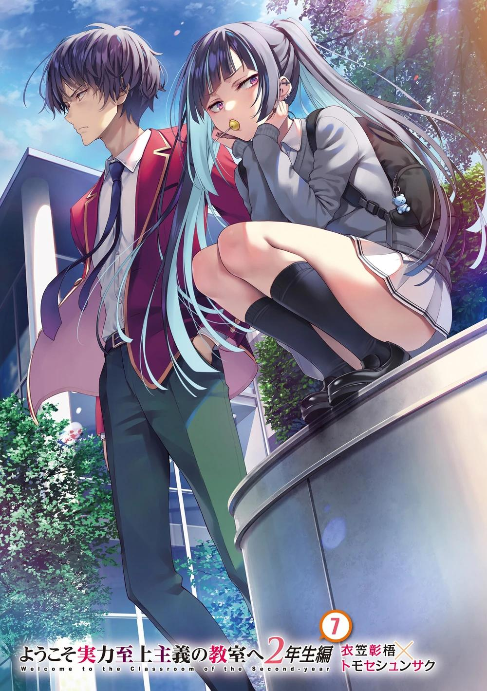
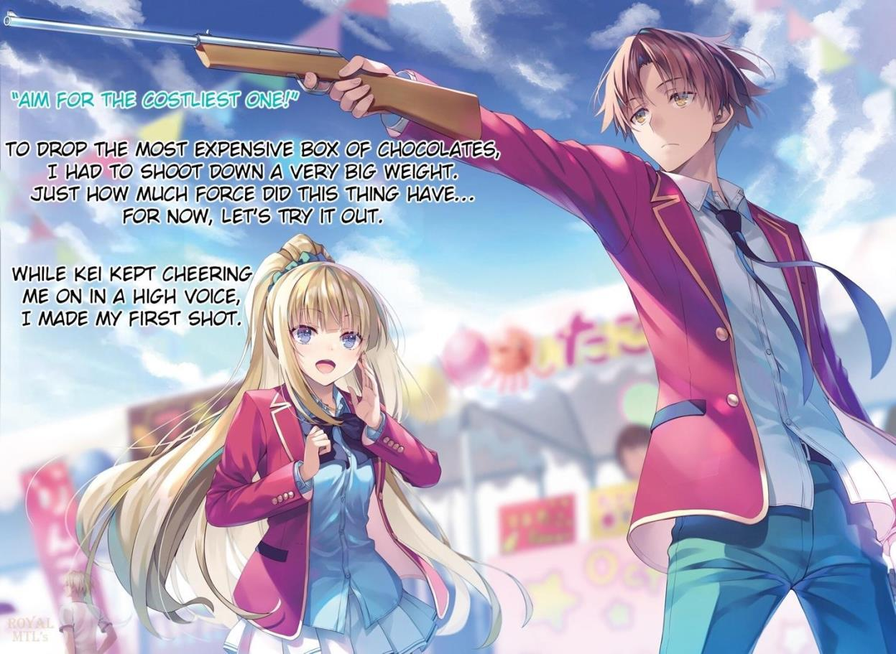
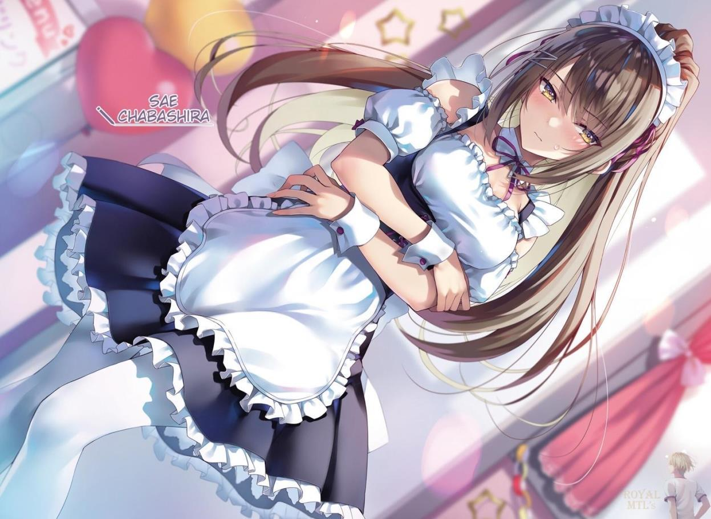
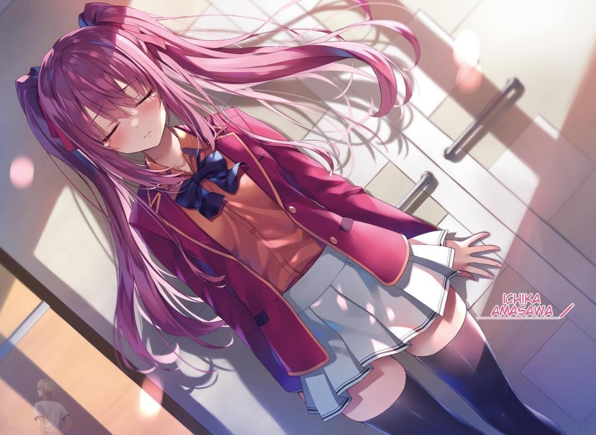
GLADHEIM
TRANSLATIONS
Youkoso Jitsuryoku Shijou Shugi no Kyoushitsu e - Segundo Año Volumen 8
EL MONÓLOGO DE HASABE HARUKA
Cuando me evalúo, me considero una mala persona. Todo el mundo ha hecho alguna vez algo que le dijeron que "no debía hacer".
Por ejemplo, ignorar un semáforo en rojo. Aunque no tuvieras malas intenciones, probablemente tengas alguna experiencia con ese tipo de cosas. Otro ejemplo es aceptar el cambio equivocado en la caja registradora y no devolverlo. Cuando un dependiente te da por error más de lo que debe, ya sea un yen o diez, la gente suele irse con ello.
Escupir en la acera o tirar basura en la calle. Puede parecer poca cosa, pero también entra en la categoría de delito.
Yo no me consideraría una "mala persona" sólo por cosas como éstas.
Yo...
Podría parecer trivial desde el punto de vista de otra persona. Pero vengo arrastrando mi pasado hasta la preparatoria y decidí que no haría nuevos amigos. Creía que estaría perfectamente satisfecha si me distanciaba de todo el mundo y me adentraba en un universo en el que no tuviera relación con nadie.
Por eso, cuando me enteré de la existencia de la Preparatoria Avanzada de Educación, pensé que en esta escuela podría encontrar lo que quería.
Antes de darme cuenta, volví a hacer amigos. Kiyopon, Yukimu, Miyachi y... Airi.
Pude recuperar la sensación de la juventud. Al menos, eso era lo que yo creía.
De improviso, ese sentimiento me fue arrebatado una vez más en un solo día.
¿Quién lo robó? Eso es obvio. Horikita Suzune y Ayanokouji Kiyotaka.
Me convertí en una víctima de las acciones egoístas de esas dos personas. No puedo perdonarlos. No hay forma de que pueda. Y por eso...
Decidí vengarme.
PREPARATIVOS PARA EL FESTIVAL CULTURAL
Era lunes, 1 de noviembre, el comienzo del otoño, y nos enfrentábamos a un clima gélido.
Los meses seguían pasando deprisa, y en dos meses llegaban las vacaciones de invierno. El paisaje desde mi nuevo asiento, ¿acabará en un futuro próximo?
El hecho de que sienta remordimientos es la prueba de que el cambio de asiento es un buen sistema para mí. No sabía si habrá un cambio de asientos el próximo semestre, pero de cualquier manera, estoy seguro de que el paisaje será muy diferente al de antes.
―Buenos días. Todos están aquí, ¿verdad? ―Unos segundos después del timbre, Chabashira-sensei apareció en el aula.
Los alumnos, que habían estado ocupados charlando entre ellos, se callaron y contemplaron a la profesora con una mirada familiar. El sistema único de la escuela, en el que todo comportamiento al margen del curso afecta a la evaluación de la clase en su conjunto, propició una actitud seria y disciplinada entre los alumnos. No es que nada hubiera cambiado significativamente en la última semana, pero sin duda podía percibir que ellos también han crecido mucho.
Al ver esa actitud entre los alumnos, que seguían creciendo día a día, Chabashira-sensei asintió profundamente y empezó a hablar.
―Creo que los preparativos para el festival cultural avanzan a buen ritmo, pero tengo algunas notas explicativas adicionales. En primer lugar, volveré a mostrar un resumen del festival a modo de repaso, así que aquellos que lo necesiten deberían consultarlo ―El monitor detrás de Chabashira-sensei se iluminó y volvió a aparecer la explicación de las reglas.
[Resumen del Festival Cultural]
A cada clase de segundo año se le dan 5.000 puntos privados por estudiante para ser utilizados únicamente en la preparación del festival. (Los alumnos de primer año reciben 5.500 puntos y los de tercer año, 4.500 puntos).
Se concederán fondos adicionales por contribuciones sociales, como el servicio al consejo de estudiantes y las contribuciones a través de las actividades de los clubes.
(Los detalles se anunciarán a cada clase una vez finalizados).
La asignación inicial de puntos privados y los fondos adicionales no se reflejan en las ventas finales y se perderán si no se utilizan.
Las clases clasificadas del 1º al 4º puesto recibirán 100 puntos de clase.
Las clases clasificadas del 5º al 8º puesto recibirán 50 puntos de clase.
No habrá cambios en los puntos de clase para las clases clasificadas del 9º al 12º puesto.
―Eso es todo lo que he explicado hasta ahora. No deberían tener problemas para entender lo que se ha dicho ―Sin una sola pregunta de los estudiantes, Chabashira-sensei continuó con su explicación―. Me gustaría anunciar que se han decidido los detalles de los "fondos adicionales"
mencionados en esta explicación general.
Fondos adicionales. Los puntos que se pueden utilizar para el festival se verán incrementados en función del servicio prestado al consejo estudiantil, las contribuciones sociales, las actividades de los clubes, etc. Llegó el momento de anunciar los detalles.
La falta de un presupuesto confirmado significa que no se puede concretar el número, el contenido y la escala de las actuaciones. A pesar de los
inconvenientes, esto no supone ningún problema siempre que todas las clases de todos los grados estén en las mismas condiciones.
―En primer lugar, la cantidad total de fondos adicionales que se darán a esta clase, y el desglose de los fondos...
En cuanto dijo eso, Chabashira-sensei accionó su tableta y se mostró una lista basada en una hoja de cálculo. Resultó que un total de 12 personas podían optar a estos fondos adicionales.
Horikita Suzune, Bonificación para miembros del consejo estudiantil: 10.000
puntos.
Sudou Ken, Bonificación por actividad del club: 10.000 puntos Onodera Kayano, Bonificación por actividad del club:10.000 puntos Aunque 10.000 puntos son el máximo, sólo tres estudiantes consiguieron esa cantidad de fondos adicionales. Hubo otros 9 estudiantes que recibieron entre cientos y miles de puntos en reconocimiento a sus contribuciones.
Por ejemplo, Yousuke recibió 3.000 puntos por su bono de actividad en el club, y Akito recibió 100 puntos. Muchos estudiantes que parecían ser activos, principalmente en las actividades del club, fueron mencionados.
En total, esta clase obtuvo 39.400 fondos adicionales. En términos de número de personas, estos fondos corresponden a los puntos iniciales de casi 8 personas.
Estos fondos serán esenciales para el funcionamiento del festival.
"No puedo darles el desglose, pero la Clase A de Sakayanagi tiene 18.800
puntos. 17.000 puntos para la Clase C de Ryuuen, y la Clase D de Ichinose tiene 26.600 puntos de fondos adicionales. En otras palabras, esta clase tiene la mayor cantidad de fondos adicionales entre los estudiantes de segundo año."
Así pues, la clase de Ichinose ocupaba el segundo lugar y la clase de Sakayanagi el tercero -por poco, por delante de la clase de Ryuuen. Ese fue un
resultado inesperado, pero un factor podría ser la bonificación de los miembros del consejo estudiantil. El hecho de que tanto Horikita como Ichinose ganaran 10.000 puntos sólo por su presencia era bastante significativo.
Otros estudiantes, como Sudou y Onodera, fueron considerados por encima del resto en sus contribuciones a las actividades del club durante todo el año escolar.
Como a los individuos no se les permitía usar ninguno de sus puntos privados en el festival, en el caso de la clase de Horikita, el número total de miembros del grupo más los fondos adicionales debía mantenerse dentro de los 229.400.
Cada punto cuenta. Sin embargo, no debemos estar demasiado orgullosos de este resultado.
Aunque es una ventaja en la fase de preparación antes del comienzo del festival, los fondos adicionales serán un lastre si no se utilizan por completo al final.
Lo anterior parece ser la explicación de los fondos adicionales, pero no debería acabar ahí. Varios datos necesarios para el festival no se han hecho públicos.
―Ahora bien, explicaré algunos detalles sobre los invitados que asistirán, ya que se trata de un punto sumamente importante para realizar las ventas.
¿Cuántos y qué tipo de invitados irán al festival? Y de cuánto dinero disponen no se han revelado detalles hasta ahora.
―Los invitados de honor serán personas implicadas en el funcionamiento de esta escuela y sus familias, pero por supuesto habrá un amplio abanico de edades, desde ancianos hasta niños pequeños y estudiantes de primaria
―explicó―. También se decidió que los que trabajan en el centro comercial Keyaki y en las tiendas de conveniencia también serán invitados.
La pantalla de la tableta cambió a un gráfico, revelando el número de invitados por edades. Los que tenían entre 30 y 40 años, seguidos de los menores de 20 y los mayores de 50.
―Los adultos son invitados de honor y reciben 10.000 puntos. Los menores reciben 5.000 puntos. Hay 283 adultos y 202 menores. El número total de participantes será de 485 en total, para una suma global de 3.840.000 puntos.
La clasificación de las 12 clases para todos los años escolares dependerá de si podemos o no hacer ventas con la cantidad total.
―También debo mencionar que el número de participantes nos incluye a los profesores. Los profesores titulares están limitados en cuanto al uso de los puntos en el grado del que son responsables, pero no reciben un trato diferente al de los demás invitados.
La norma de que no puedan utilizar puntos en su propio grado será esencial.
Como profesores titulares, normalmente querrían gastar dinero en su propia clase si pudieran.
―¿Es posible utilizar más de 10.000 puntos de dinero?
En respuesta a la pregunta de Ike, Chabashira-sensei inmediatamente sacudió la cabeza. Era una pregunta preventiva, como de costumbre, y respondió sin prestar mucha atención. Aunque parecía estar disfrutando de un Ike tan inmutable.
―No. Los invitados no pueden gastar más de los puntos dados. La cantidad máxima es inamovible.
Esto significa que los invitados no disponen de fondos ilimitados. No se trata de restringir a ciertos invitados ricos, sino que es inevitable que haya competencia por ellos.
―El principal método de pago es a través de una app especial para celulares que la escuela utilizará para controlar las ventas en tiempo real.
Tengan en cuenta que la app se desactivará en el momento en que termine el festival a las 16.00 horas. Son libres de establecer su propio momento para el pago, pero les recomendamos que lo reciban antes de que se sirvan los productos.
Si por ejemplo se paga después de comer, podría darse el caso de que sea sobre las 4 de la tarde, por lo que se correría el riesgo de no poder cobrar los puntos.
―Ahora que terminamos aquí, quien tenga alguna pregunta, que levante la mano.
Se abrió un turno de preguntas y comentarios, y poco después Horikita levantó la mano.
―Si las ventas son del mismo importe, ¿cuál sería la clasificación? Sé que esto es muy extremo, pero ¿qué pasaría si todas las clases recibieran la misma cantidad de 320.000 puntos y estuvieran en igualdad de condiciones?
Si nos basáramos únicamente en el azar, las probabilidades de que todas las ventas de todas las clases fueran iguales serían microscópicas, pero la colusión entre clases no sería imposible. Si todas ellas fueran tratadas como número uno, podrían aumentar por igual sus puntos de clase. Sin embargo, supuse que se habían pensado algunas contramedidas....
―Si las ventas son iguales, se tratan como el mismo rango. Si las 12
clases realizan ventas iguales, como dice Horikita, entonces todas las clases obtienen 100 puntos de clase como primer puesto.
¿Se trata de una regla algo laxa, dado que no se pierden puntos de clase aunque uno fracase? No. Tal vez hayan determinado desde el principio que un gran número de clases no tendrán el mismo porcentaje.
―Sin embargo, el importe total de las ventas sólo puede confirmarse después del examen, y no se permite ninguna manipulación de las ventas por parte de terceros. Es imposible que las clases discutan y hagan un plan para combinar las ventas antes del festival, o que lleguen a un acuerdo para dividir las ventas equitativamente después de que el festival haya terminado. Sabes lo que esto significa, ¿verdad?
Si la cantidad de ventas no se puede manipular después, es poco probable que todas las clases queden en primer lugar. Y lo que es más importante, es poco probable que se unan amistosamente, perdiendo una valiosa oportunidad competitiva.
―No creo que sea normal que haya la misma cantidad de ventas entre las clases. No creo que debas preocuparte por ello ―Sin entender el significado de la pregunta de Horikita, Maezono expresó sus dudas.
―Como dijo Maezono-san, si se trata de una pelea normal, no hay por qué preocuparse. Pero no está de más saber si se acepta como norma o no.
Horikita tiene razón. No es malo saberlo. No estaba claro si la colusión era completamente imposible en la situación actual. Por alguna razón, era posible que ciertos grados o clases se confabulen para crear ventas iguales. Hay varias formas posibles de hacerlo, pero si las ventas finales de los productos se hacen alinear entre las clases con anticipación, no sería difícil crear un escenario en el que todos los productos vendidos equivalgan a la misma suma de puntos. Sin embargo, había que estar preparado para traiciones, imprevistos y problemas.
No sería divertido dar prioridad a las ventas por encima de todo y, como resultado, acabar entre los últimos de la clase en términos de ventas. Los obstáculos que hay que superar para crear intencionadamente un empate son mucho, mucho mayores de lo que podemos imaginar.
―¿Alguien tiene alguna otra pregunta?
Nadie levanta la mano.
―Eso es todo lo que tengo que decir sobre el festival. A continuación, me gustaría anunciar los resultados del examen parcial del segundo semestre que realizamos recientemente. Esta vez, hay alumnos que obtuvieron resultados que me sorprendieron incluso a mí.
La conversación pasó al examen escrito y al anuncio de sus resultados. Hubo algunos chillidos de los alumnos que no eran buenos estudiando. Dependiendo de cómo se mirara, la "sorpresa" podía considerarse algo malo. Sin embargo, dado que la expresión de Chabashira-sensei no era sombría ni rígida, eso parecía poco probable.
De repente, aparecieron los nombres de los 38 alumnos de la clase, alineados por orden a partir del alumno con la puntuación total más alta. Keisei ocupó el primer lugar. Obtuvo una puntuación perfecta en todas las asignaturas. En segundo lugar estaba Horikita, sólo ligeramente por detrás. La diferencia en la puntuación global era de sólo 3 puntos.
Le siguieron los nombres de los alumnos habituales del cuadro de honor, pero el alumno que sorprendió a Chabashira-sensei fue el que quedó en undécimo lugar, sin duda.
Undécimo puesto, Sudou Ken. Obtuvo 73 puntos en Japonés Moderno, 76
puntos en Química, 70 puntos en Estudios Sociales, 78 puntos en Matemáticas y 70 puntos en Inglés.
Obtuvo un equilibrado total de 367 puntos en todas las asignaturas.
Los mejores clasificados de este grupo eran estudiantes de honor como Yōsuke, Kushida, Matsushita y Wang. Por eso la clasificación de Sudou fue una sorpresa para todos.
Era un hecho bien conocido que Sudou estaba trabajando duro en sus estudios, pero fue inesperado que Sudou, quien también estaba involucrado en actividades del club que se extendían hasta tarde en el día, llegara a la cima de la lista.
―En serio, Ken está en el puesto 11.... Increíble...
Ike, que estaba casi en el mismo extremo de la clasificación, dio una respuesta sincera, o más bien atónita. Un cambio radical, un salto más allá de lo imaginable. El nivel de dificultad de esta prueba era moderado, y la diferencia en la puntuación global entre Sudou y los veinte últimos era sólo de unos 15 puntos, pero aun así, este resultado debió de sorprender a mucha gente. El propio Sudou debería haber corrido de alegría, pero solo hizo un pequeño gesto de agallas y no pareció presumir ni burlarse de los demás por haberlos superado.
Consultó su celular para ver la OAA actualizada.
[Sudou Ken: Capacidad académica C+, capacidad física A+, adaptabilidad C, contribución social D].
En general, sus habilidades físicas son sobresalientes, al tiempo que mantiene un nivel de capacidad académica cercano a la media. Si mantiene sus resultados en los exámenes, debería ser capaz de alcanzar una B en capacidad académica en un futuro próximo. Parece que sus esfuerzos durante el último año han dado sus frutos en más aspectos de los que hubiera imaginado.
También fue capaz de mejorar sus habilidades de contribución social desde el nivel más bajo hasta una D. También aumentó su puntuación en la OAA.
Mi clasificación fue la 14ª. Obtuve una puntuación perfecta en matemáticas, pero flojeé en las demás asignaturas. Sería justo decir que hice concesiones, pero en realidad tenía otro objetivo en mente. Mostrarles una nota perfecta en el examen parcial del segundo semestre solo causaría una confusión innecesaria. En lugar de tranquilizarlos diciéndoles que había alumnos que podían sacar notas altas, era muchas veces más importante hacerles sentir que tenían que madurar y ayudar a la clase, como hizo Sudou.
De hecho, el 11º puesto de Sudou generó un amplio abanico de emociones entre sus compañeros.
Casi todas fueron positivas. Mientras que algunos alumnos ocupaban los primeros puestos, otros se encontraban inevitablemente en los puestos más bajos. Eran, a falta de una palabra mejor, los normales, pero si se comparaban con las puntuaciones medias de las demás clases, estaba claro que estaban cambiando poco a poco. Cada vez eran más los alumnos que intentaban mejorar; y aunque sus puntuaciones eran bajas, parecían estar empezando a mostrar resultados de forma constante y gradual. Por supuesto, no todos eran tan buenos como Sudou. Incluso a la hora de estudiar, hay diferencias en la cantidad de información que se puede absorber, y también hay grandes diferencias en cuanto a perseverancia y fuerza física.
Sobre todo, en el caso de Sudou, no hay que olvidar que su motivación proviene de su amor por Horikita, quien le enseñó a estudiar.
De todos modos, hasta se podría decir que, debido a la expulsión de Airi de la escuela, los alumnos de menor nivel empezaron a esforzarse todavía más.
PARTE 1
El aula después de clases el mismo día.
Los principales miembros del grupo se reunieron. Eran Satou, Matsushita, Mii-chan, y Maezono. Lo único que
que tenían en común era que eran las planificadoras del maid café.
Y además estábamos Horikita y yo, para un total de seis. Tras la presentación inicial, las reuniones relacionadas con el maid café se celebraban principalmente por celular para evitar filtraciones de información. Dado el concepto y la escala del maid café, primero se tachó la idea del exterior. En otras palabras, la ubicación del café -el aula- quedó fijada desde el principio, pero todavía no estábamos seguros de la ubicación del local.
Todos los días venían alumnos de otros cursos y clases a explorar posibles ubicaciones para el puesto. Intentábamos encontrar el mejor lugar para abrir.
Sería más eficaz incluir a chicos como Yousuke en la reunión, pero, por desgracia, en ese momento estaban ocupados con las actividades del club.
En cuanto empezamos a movernos, Matsushita nos miró a Horikita y a mí y preguntó...
―Hasebe-san y Miyake-kun, ¿qué vas a hacer con ellos?
―¿Qué quieres decir con 'qué voy a hacer'?
―Vienen a la escuela todos los días, pero no quieren hablar con nadie.
Significa que no dejan de contrariarnos, a toda la clase.
―Seguro que sí. Bueno, supongo que están principalmente contra mí.
Al ser expulsada de la escuela su mejor amiga Airi, Haruka levantó un gran muro.
Aunque ahora viene a la escuela, no ha roto esa barrera.
―Creo que Hasebe-san va a intentar hacerle algo a la clase en el futuro.
No creo que Haruka se lo dijera directamente a Matsushita, ni tampoco a través de un tercero. Pero mirando a Haruka ahora y percibiendo esa atmósfera, una persona como Matsushita lo adivinaría.
―Puede que sea así. Pero también es cierto que, hasta ahora, no he visto ningún comportamiento problemático. Incluso ha participado en las reuniones para el festival.
Haruka sabía lo de la apertura del maid café porque fue ella quien propuso la idea. No había razón para no incluirla en el grupo.
―¿Estás diciendo que apruebas la venganza?
―Por supuesto que no. Entiendo por qué está enfadada, pero eso no significa que no me importe que haya problemas en clase sin una buena razón.
Los disturbios sin circunstancias atenuantes, como exámenes especiales inevitables, se tratan como un mal absoluto.
Horikita y yo esperábamos fervientemente que Haruka no montara en cólera.
―Sí. Pero no estamos en una situación en la que ese tipo de lógica funcione. No debería tardar tanto en recuperarse.
Matsushita dirigió repetidamente su mirada hacia mí. Parecía estar intentando sacarme algo mientras mantenía en vilo a la líder, Horikita. Sin embargo, no quise dar mi opinión y permanecí en silencio en ese momento. Está claro que Haruka planea vengarse por la expulsión de su mejor amiga, pero ahora mismo asiste a clase, hace los exámenes con normalidad y no hace nada que cause problemas a la clase.
Aunque no sepamos qué va a pasar después, no podemos cuestionarla a estas alturas.
―Es muy poco lo que podemos hacer por adelantado ―dijo Horikita, mirando a lo lejos―. Predicarles que dejen de vengarse sólo conseguirá ponerlos nerviosos. Sólo...
―¿Sólo qué?
―Si de verdad está buscando una oportunidad para vengarse, está claro que no la pospondrá durante meses.
Yo estaba de acuerdo con esa opinión. Es difícil imaginar que ella continúe viviendo su vida escolar con madurez durante los próximos seis meses o incluso un año. En otras palabras, el momento más crítico para estar alerta es...
―No puedo negar la posibilidad de que haga algo en el festival.
Matsushita asintió en silencio, probablemente queriendo escuchar esas palabras.
―Escuché de Ayanokouji-kun que Hasebe-san no tiene intención de trabajar como sirvienta. Así que, le di a ella y a Miyake-kun un papel general mientras les hacía saber lo que estaba pasando. Si ocultamos información o la excluimos del grupo, sería una declaración descarada de que sospechamos de ella.
Si por casualidad Horikita y los demás hacían algo que mostrara desprecio por Haruka, aunque ella no tuviera intención de vengarse, era posible que la chispa apagada comenzara a arder de nuevo.
―Así que estás diciendo que considerarás a ciertas personas, pero evitarás darles papeles importantes.
―Sí. Pensé que debía hacerlo por si acaso.
Por supuesto, seguramente no le preocupe mucho que las cosas se salgan de control durante el festival cultural. Sin embargo, como líder, es importante adelantarse a los acontecimientos.
Al festival vendrán muchos invitados. Si la clase de Horikita se gana una mala reputación entre los invitados, no sería de extrañar que nos penalizaran de alguna manera.
―Sé que te estarás preguntando por Haruka y los demás, pero estamos a punto de llegar.
Matsushita estaba tan absorta en la conversación que no se percató de que nos acercábamos a nuestro destino. Muchas de las clases seguían preguntándose dónde colocar sus puestos para el evento. Nunca se sabía dónde se podía captar involuntariamente un dato importante.
Había un total de ocho aulas que podían abrirse en el edificio especial, que tiene tres plantas. En ese momento estábamos en la tercera planta del edificio, y cuanto más cerca estuvieras de las escaleras de la entrada, mayor era el costo de instalar un puesto. La tercera planta era la más alejada de la puerta principal y tenía la ventaja de ser la más rentable. La tercera planta podía alquilarse por entre 1.000 y 13.000 puntos, mientras que en la primera se podía pagar una
tarifa fija de 50.000 puntos. Los casi 40.000 puntos de diferencia podían utilizarse para comprar comida y otros artículos de primera necesidad. La clase disponía de un número finito de puntos, y era inevitable que se preocuparan de cuánto destinar al costo del local y de cómo disponer del dinero.
―Está mucho más lejos de lo que pensaba.
La primera impresión de Mii-chan seguía siendo sobre la distancia. Creo que todos podemos estar de acuerdo en eso.
―¿Qué te parece, Satou-san? ―Mii-chan le preguntó a Satou, quien hoy no había hablado hasta el momento, pero no respondió de inmediato―. ¿Satou-san?
Una vez más, esta vez mirando hacia nosotros, Satou se apresuró a responder.
―Oh, um. Estaba pensando... sí, supongo que yo también creo que está un poco lejos.
―No creo que todos puedan hacer el viaje hasta aquí a menos que tengamos un espectáculo bastante bueno.
No nos quedamos mucho tiempo en el tercer piso, que era menos prioritario, probablemente porque nuestras opiniones eran en general las mismas. Luego bajamos todos un piso más abajo, a la segunda planta.
―¡Supongo que la segunda planta es mejor que la tercera! Es más, el primer piso sería ideal ―murmuró Maezono mientras miraba el paisaje por la ventana.
―Sí, es cierto. Pero supongo que la primera planta sigue siendo bastante dura en cuanto a precio ―Mii-chan miró el celular y puso mala cara―. Pero deberíamos tomar una decisión pronto. Se está llenando bastante.
Matsushita echó un vistazo al celular de Mii-chan y dijo:
―Así es. Dos de las cinco plazas que elegimos ya están ocupadas... Sin embargo, aún quedan candidatos de la primera a la tercera planta, lo que yo diría que es un pequeño problema.
¿Aceptaría la comodidad y pagaría una gran cantidad de puntos, o abandonaría la comodidad y se conformaría con un pago reducido de puntos?
―Sigo pensando que debería estar en la primera planta. Si no conseguimos que la gente suba a la segunda porque se distrae con otras exposiciones, es una desventaja mucho mayor.
―Creo que en realidad no importa si está en la segunda o en la tercera planta, siempre que haga que la gente quiera venir.
Maezono, Mii-chan, y Matsushita discutieron qué piso deberían comprar. Satou, que siempre estaba animada y a menudo hablaba hasta cuando no la escuchaban, había estado bastante callada desde esta mañana. Sus amigas de vez en cuando la miraban como si estuvieran preocupadas, pero parecía como si su mente estuviera en otra parte.
―Satou-san está así últimamente ―Matsushita, al notar mi preocupación, me susurró.
―Ahora que lo pienso, Satou no ha estado particularmente enérgica los últimos días.
―Tenía curiosidad por saber si Ayanokouji-kun sabría algo al respecto, pero supongo que no.
Me pregunté si Matsushita pensaba que yo era una especie de encantador de Satou o algo así. O tal vez estaba anticipando la cercanía de Kei con Satou, pero de cualquier manera, yo no sabía mucho.
―No parece estar en mal estado, y le pregunté si tenía algún problema, pero no dijo nada definitivo.
―A veces la gente sólo quiere que la dejen en paz, ¿no?
―Sí, supongo. Pero qué puedo decir, esta vez no creo que sea el caso.
―¿Qué quieres decir?
Matsushita, que se estaba mordiendo el labio, continuó sin interrumpir la conversación, como si tuviera una idea de lo que estaba hablando.
―Es como si quisiera hablar pero no pudiera. Es el tipo de persona que se guarda las cosas dentro.
Después de un año y medio de amistad, me pregunté cómo podía saber eso.
―No te lo guardas dentro y ya está, ¿verdad?
―Eso es, bueno... Normalmente puede hablar conmigo sobre ello.
―Entonces supongo que tendremos que esperar y observar por un tiempo más. Si tu interpretación es correcta, estoy seguro de que en algún momento acudirá a ti en busca de consejo.
―Quizá cuando...
Matsushita no lo tenía muy claro, pero como este tipo de conversaciones largas no eran posibles en las inmediaciones de Satou, Matsushita dejó de hablar. El hecho de que el cielo es el límite fue un poco preocupante, pero por ahora, la prioridad es decidir dónde abrir el puesto.
Era hora de finalizar y pasar a la siguiente fase. Justo cuando estábamos a punto de terminar nuestra inspección de la segunda planta y pasar a la última, nos encontramos con otro grupo.
―Oye, Ayanokouji. ¿También estás buscando un lugar para abrir un puesto para el festival?
Quien nos llamó fue Hashimoto, miembro de la clase A de 2º año. Poco después, la líder del grupo, Sakayanagi, junto con Kamuro, también aparecieron. Con los tres moviéndose al mismo tiempo, seguramente no estaban dando un paseo cualquiera.
―Bueno, no estoy seguro. Puede que ya lo hayan decidido, o puede que ni siquiera hayan decidido si ir al interior o al exterior.
―¿No lo han decidido? Eso es una mentira evidente. ¿Me estás diciendo que sacas a Horikita hasta el edificio especial para que deambule por ahí sin ninguna razón? Por favor, dime qué clase de espectáculo vas a montar.
Sakayanagi no se unió a la conversación, pero observó con una sonrisa irónica en la cara.
―Es inútil preguntarle. No está en posición de saberlo todo sobre la clase
―Incapaz de escuchar en silencio, Horikita intervino.
―¿Entonces quieres decir que simplemente está disfrutando de su harem?
Señaló que soy el único varón de los seis y pidió a Kamuro que le diera la razón.
―Deben ser parecidos, Hashimoto-kun. Sakayanagi-san y Kamuro-san.
Eres el único varón, aunque el número de personas sea diferente. Me pregunto si es porque eres consciente de ello por lo que haces comentarios extraños.
Horikita respondió de manera relajada, atreviéndose a contestar al mismo nivel.
Era una forma de sacarle ventaja, pero eso no le servía contra Hashimoto.
Más bien, cambiaba de tema como si la conversación actual nunca hubiera tenido lugar.
―Satou, has estado pasando mucho tiempo con gente como Matsushita, Wang y Maezono ―Hashimoto dirigió su atención a las cuatro inventoras del maid café.
Tres se preparaban, pero Matsushita se adelantó, con el mismo aspecto de siempre.
―No intentes sacarnos nada.
―Espero que ya lo hayan entendido.
Las dos chicas mordieron con fuerza a Hashimoto mientras Matsushita se unía a la mirada de Horikita.
―No quería decir eso. Es que...
Los demás empezaron a sentirse incómodos por el tono implícito de sus palabras.
―Uy, ¿algo más sería superfluo? ―Sonriendo, Hashimoto miró a Sakayanagi por primera vez desde que llegaron.
No te importa que hable, ¿verdad? pareció preguntar.
―Parece que quieres decir algo, Hashimoto-kun ―Con un tono algo irritado, preguntó Matsushita, que estaba allí de pie protegiendo a las tres chicas.
Como si hubiera estado esperando la pregunta, su tono elocuente y verborreico se volvió más animado.
―Estoy preocupado por tu clase, amiga mía. Parece que te has asociado con... Ryuuen para el festival deportivo, pero ¿crees que puedes confiar en él para siempre?
―¿Qué quieres decir?
―Sólo pensé que ibas a formar equipo con Ryuuen otra vez. Si vas a formar equipo con él, ten cuidado ―dijo, como si tuviera el corazón de una anciana.
Matsushita debió de intuir las implicaciones que se escondían tras sus palabras.
Estuvo tentada de preguntarle si sabía algo al respecto, pero se mantuvo firme.
―Tenemos prisa, y no creo que podamos seguir jugando eternamente con las palabras, ¿sabes? ¿Chicos? ―Se dio la vuelta y nos preguntó a las chicas y a mí.
―Bien. Vámonos, estamos perdiendo el tiempo hablando con él aquí.
―No le gustas, ¿verdad? ―Dijo Kamuro, jugando con el mal ambiente de la habitación. Hashimoto dejó escapar un suspiro premeditado.
―Puede ser. Sólo te pido un razonamiento... De todos modos, buena suerte con eso ―Al final, Sakayanagi no dijo nada y entró en la clase que vimos antes.
―Eso fue un poco aterrador...
Mii-chan, aliviada y dándose palmaditas en el pecho, murmuró a Satou, que estaba de pie a su izquierda.
―¿Eh? Oh, um, sí. Un poquito.
La oyera o no, la actitud de Satou también era extraña en este caso.
―De todos modos, vamos a movernos.
―No hay nada fuera de lo normal. Fingió estar de nuestro lado, pero no teme apuñalarnos por la espalda.
―Un festival deportivo es un festival deportivo, un festival cultural es un festival cultural. Al final, hay competiciones en las que nuestros contrincantes son de otras clases. La clase de Sakayanagi es un enemigo a vencer, así como la clase de Ryuuen. No confiarías en ellos, ¿verdad?
Si nos quedamos aquí, pronto nos encontraremos de nuevo con la Clase A.
Todos queremos evitar eso, así que decidimos buscar otro lugar potencial.
―Hashimoto-kun dijo algo antes, ¿Lo entendieron? ―Maezono dice secamente.
En el proceso de preparación para el maid café, Horikita y yo informamos con antelación sólo a un miembro sobre el trato con Ryuuen. Deben haberse sentido incómodos después de haber sido sacudidos.
―Es una certeza que cooperaremos con la clase de Ryuuen-kun en el próximo festival cultural, ¿verdad?
―Sí. Cuando cooperamos en el festival deportivo, también hablamos de trabajar juntos durante el festival cultural.
El contenido de las presentaciones de las dos clases no debe ser similar. Hay que evitar puestos similares o que compitan en cuanto a ubicación. Las dos partes deben ser capaces de intercambiar personal de forma eficaz, prestar personal temporalmente y hacer un seguimiento del trabajo de la otra clase.
Acuerdos para prepararse para imprevistos, aunque sean arreglos menores.
―No me preocupé tanto durante el festival deportivo porque salió bien, pero cuando me dijeron algo así, no pude evitar sentirme incómoda... ¿Estás segura de que te parece bien confiar en ellos?
―Es verdad que es difícil confiar en Ryuuen-kun personalmente. Por eso puse a Katsuragi-kun entre nosotros dos. Estoy segura de que estará bien.
―Yo también quiero creerte. ¿Pero no parecía como si Hashimoto-kun supiera algo?
―Sí, yo también lo sentí. Aunque él no te traicione, ¿no es concebible que se filtrara la colaboración?
―Los que sabemos somos Ayanokouji-kun y yo. Luego están ustedes cuatro que iniciaron el maid café. En la clase de Ryuuen, está Katsuragi. Puede que se lo haya contado a otros compañeros importantes, pero no veo la utilidad de filtrarlo.
Horikita les explicó que era improbable que se filtrara la información.
―Estoy de acuerdo con Horikita. No creo que esperaran que Horikita y Ryuuen se aliaran para vencer a la Clase A después del incidente del festival deportivo. Sólo desconfío de que la próxima vez sea así. Puede que haya contactos y sondeos similares en el futuro, pero no deberías preocuparte por ello
―continué casualmente.
―Sí, claro. Entiendo.
Maezono y Mii-chan asintieron con la cabeza, y Matsushita y Satou me reconfortaron de nuevo.
Después, volvimos al aula y nos reunimos para tomar una decisión final.
―Creo que vamos a votar por mayoría entre los miembros aquí presentes dónde vamos a abrir la cafetería. ¿Les parece bien?
―¿Y si las opiniones están divididas a partes iguales?
―Lo resolveremos entonces. Probemos una vez primero. Piedra para el primer piso, papel para el segundo y tijeras para el tercero. ¿De acuerdo?
Mii-chan lo recitó en un susurro, quizá para evitar confusiones, y luego se miró la palma de la mano.
―Allá vamos.
Los seis, incluyéndome a mí, expresamos simultáneamente nuestro piso deseado con las manos. A primera vista, es una decisión clara. El resultado fue cuatro "piedras", dos "papeles" y cero "tijeras".
Se eliminó la tercera planta por el tiempo y el esfuerzo que requería trasladarse a ella. Elegí el papel para reducir el coste inicial, pero no sería mala opción elegir la primera planta por su comodidad. El otro papel fue Matsushita.
De todos modos, fue un paso adelante, ya que la solicitud para el primer piso estaba decidida.
―Voy a aplicar de inmediato. Todavía hay muchas clases que están esperando a ver qué pasa, y será problemático si las ocupan.
Usando su celular, Horikita inmediatamente comenzó a trabajar en la aplicación para asegurar la planta baja.
―Entonces, ¿terminamos por hoy?
―No, tengo algo que decirte primero.
Yo había estado recopilando información sobre los maid café hasta hace poco.
Probablemente debería mencionar que el objetivo principal de los maid cafés son los hombres. Hay muchas familias entre los invitados del festival, pero básicamente, los clientes masculinos son el objetivo principal.
―No creo que no haya clientas femeninas, pero en términos de proporción, habrá una diferencia considerable.
Esto era lo que cualquiera imaginaría, sin necesidad de investigar.
―Escuché que hay cafés de mayordomos en el mundo, lo opuesto a los maid cafés. El mayordomo no es una chica, sino un hombre bien vestido.
Matsushita y las demás, que quizá no habían oído antes esta información, se quedaron sorprendidas e impresionadas.
―Tanto los maid cafés como los de mayordomos son un tipo de concepto.
―Tú también sabes mucho, Horikita.
―Al menos recopilé información. Podrás decidir si es útil o no después de conocerla.
Debería decir que eso fue tan bueno como parece.
―Entonces sigamos adelante. Lo más importante e indispensable es la limpieza. Creo que deberíamos tenerlo en cuenta, así como el suelo, a la hora de impartir las clases en el edificio especial.
Cada aula se utilizaba de forma muy distinta a las demás.
―El suelo, las paredes, el techo y otras sillas también presentan algunos desperfectos debido a la antigüedad. Me gustaría que comprobaran eso también para que no se les escape nada.
―Eso es importante. Aunque hagamos limpieza nosotros mismos, hay cosas que no podemos ocultar. Cuanto más limpio esté, mejor será para la tienda.
Todos los presentes estuvieron de acuerdo y comenzaron a mirar de nuevo alrededor del aula. La conciencia que antes se había dirigido únicamente hacia la comodidad y el paisaje exterior comenzó a cambiar.
―Y también sobre los uniformes, no deberíamos insistir demasiado en el erotismo.
―¡¿Eh?! ¿Qué dijiste? ―Horikita parecía sorprendida.
―Erotismo. El eros y el erotismo se han considerado elementos importantes en el arte desde la antigüedad. Mostrar la ropa interior y cosas por el estilo está fuera de lugar, pero es importante, sin embargo, no rechazar la esperanza de que pueda ser visible.
Es probable que a Horikita no le cupiera en la cabeza ese punto.
―Ayanokouji-kun... ¿No estás tremendamente bien informado?
―Ya que estoy a cargo de la dirección del maid café, por supuesto que no puedo escatimar. Estudié para ser lo más servicial posible.
También me tranquilizaba saber que había varios alumnos en la clase que sabían mucho de este tipo de temas. Por supuesto, evité mencionar que la clase de Horikita iba a organizar un maid café, y me acerqué a ellos dando por sentado que yo estaba personalmente interesado. Sin embargo, fue un poco perturbador que algunos de los alumnos que erróneamente pensaron que me había despertado como un otaku me ofrecieran un grado inusual de hospitalidad e instrucción, diciendo que no les importaría no recibir nada a cambio si con ello aumentaba el número de personas afines en la clase.
―¿Puedo continuar?
―Umm, sí, adelante...
Nadie me detuvo, así que me permitieron hablar de lo que era ser sirvienta durante un rato. Era importante que aquellos de nosotros que realmente vayamos a usar uniformes de sirvienta lo entendiéramos. También sería posible responder a los clientes de forma consciente.
―También pensé en una estrategia de ventas. Además de ofrecer comida y bebida, venderemos el derecho a tomar fotos, llamado Cheki. Utilizando una cámara especializada, el precio será de 800 puntos por una foto de una sirvienta.
Para una sesión de fotos con un cliente, el precio será de 1.200 puntos. Para reducir gastos, propuse utilizar una impresora para imprimir las fotos después de tomarlas con un celular, pero el profesor, que me enseñó esto, rechazó la idea.
Me dijo: 'Si descuidas la calidad en aras del beneficio, nadie te hará caso'.
Si lo aprovecháramos al máximo, las ventas de fotografías podrían ser tan buenas como las de comida.
―Pero tienes que preocuparte de mantener el inventario de material fotográfico, ¿no?
―No, soy optimista con el material. Tenemos un plan para venderlo todo.
La condición, por supuesto, es que no publiquemos las fotos. Además, bajo la dirección de Horikita, los chicos han empezado a montar un puesto de comida, pero la comida aquí también debe estar relacionada con el maid café.
Cuando terminé de hablar, Horikita tosió tras un momento de silencio.
―La competencia entre restaurantes será inevitablemente alta, ya que hay varios puestos, incluidos los de otros grados. Así que nos especializaremos en aperitivos manteniendo nuestros precios bajos.
―Eso no nos hará ganar mucho dinero, ¿verdad?
―Es esencial que lo usemos como trampolín hacia nuestro objetivo principal, el maid café. Podemos reducir el precio de las entradas a cambio de una bebida, que luego podrán utilizar en el maid café quienes hayan comprado dicha entrada.
Necesitábamos que la gente conociera el maid café y luego conseguir que acudieran al edificio especial cuando llegara el momento.
En resumen, era una estrategia publicitaria eficaz.
PARTE 2
Después de la reunión para el maid café, fui al centro comercial Keyaki.
Hoy iba a hacer un estudio de precios de productos alimenticios. Esto incluye los artículos que se venden en el centro comercial y los que están disponibles en Internet. Es importante poder preparar comida de alta calidad al precio más bajo posible. Si invito a Kei, se convertiría en una cita en lugar de un sondeo, así que hoy lo haré solo. De camino al supermercado, me encontré a un hombre mirando un plano del edificio. Me molestó un poco su rostro más bien adusto, así que decidí hablar con él.
―Hoy fuiste el centro de atención, Sudou.
Miró hacia atrás, un poco sobresaltado, como si no se hubiera fijado en mí hasta que me acerqué.
―¿Eh? Oh, ¿Ayanokouji? ¿Qué quieres decir con el centro de atención?
―Me refiero a los parciales.
―Oh, ¿te refieres a eso? Me alegra oír eso, supongo que obtuve lo que esperaba dada la cantidad de estudio que hice.
Al parecer, después del parcial, hasta se calificó en detalle.
―Apuesto a que te sorprendería ver cómo eras cuando entraste por primera vez a la escuela.
―Jaja, sin duda. Creo que mi yo del pasado estaría gritando: "¿Qué demonios? ¿De qué sirve estudiar y memorizar palabras y fórmulas? ¡Deberías practicar más baloncesto en vez de perder el tiempo así!" ―replicó Sudou, imaginándose a sí mismo en el pasado. Me sentí obligado a hacerle una pregunta y decidí actuar en consecuencia.
―Si tu yo del pasado te dijera realmente: 'No pierdas el tiempo'. ¿Qué le responderías?
―¿Eh? Bueno... ―Después de pensar por un momento, Sudou formuló su propia respuesta―. "Ni siquiera puedes recordar fórmulas simples, ¿qué estás haciendo?"
Fue una respuesta brillante y poco característica, pero también es cierto que el viejo Sudou no era un animal de un solo truco.
―"Voy a convertirme en jugador profesional de baloncesto, así que no importa" ―hubiera respondido―. ¡Uf, muy bien! ¿Cuál es la respuesta correcta en ese caso? ¿Acaso un profesional con cerebro no está un paso por delante de ti? Es un poco complicado cuando no se puede razonar ―Sudou ríe amargamente mientras se estruja los sesos―. La verdad, me estoy impacientando ya que cada vez es más difícil de entender. Hasta ahora, una vez que lo he entendido, me ha ido bastante bien...
Sudou, que había estado compensando sus tropiezos educativos esforzándose al máximo ahora, parecía ansioso e impaciente. Era como si alguien volviera a empezar desde el nivel de secundaria, o en el caso de Sudou, de primaria.
Ahora que se ha puesto al nivel del estudiante promedio de segundo año de preparatoria, ¿se dio cuenta de que está en un periodo de estancamiento?
Aunque el undécimo puesto que obtuvo esta vez, superior al de la mitad de la clase, es algo de lo que estar orgulloso, me temo que el impulso se detendrá aquí. A partir de ahora, ya no se tratará simplemente de aumentar el tiempo de
estudio. Probablemente se requieran factores más complejos que el esfuerzo, la comprensión, la eficiencia y el talento.
―De todos modos, ¿qué pasa? ¿Qué quieres de mí?
―Nada en particular, sólo tenía un poco de curiosidad. ¿No se supone que hoy estarías en las actividades de tu club?
Tenía curiosidad por saber exactamente por qué Sudou estaba en el centro comercial Keyaki a estas horas del día. A pesar de que el festival cultural se acercaba, las actividades de los clubes seguían teniendo lugar.
―Tuve que tomarme un tiempo libre hoy.
―Eso es inusual.
De un vistazo rápido, no parece estar en mal estado.
―Acabo de tener otro problema...
―¿Otro problema?
―Últimamente, mi vista se ha ido deteriorando hasta el punto de que soy consciente de ello ―Dijo y miró a lo lejos.
―Siempre he tenido una visión clara desde que era pequeño, pero últimamente me resulta extraño.
Así que los efectos adversos de su dedicación a los estudios están cambiando la condición física y mental de Sudou.
Para un atleta, la vista es importante. Si su vista se deteriorara en el futuro, eso podría afectar su juego. Por supuesto, las anteojos o lentes de contacto pueden compensarlo en gran medida, pero aun así, una buena vista es mejor que nada.
―Estoy buscando un oftalmólogo que me revise la vista. Nunca he ido a uno y me preguntaba dónde está.
―Así que has estado mirando un mapa guía. Si tienes la fuerte sensación de que tu vista está disminuyendo, es muy probable que se esté deteriorando de verdad.
―Aunque mi vista vaya a fallar en el futuro, voy a seguir estudiando, viejo.
Quiero decir, me muero por el baloncesto y no voy a parar. Pero, aunque sueño con ser profesional, empiezo a pensar que puedo tener otras opciones.
―¿Otras opciones?
―No te rías, ¿de acuerdo?
―No me reiré.
―Pensé que podría ir a una universidad normal y continuar mis estudios, e incluso si pudiera abrirme camino a la fuerza en el mundo profesional debido a mi rendimiento académico, no hay manera de que me utilicen en el mundo del deporte si no soy lo suficientemente bueno. Si ese es el caso, entonces puedo entrar en la universidad a la que quiero ir y hacerlo lo mejor posible.
Los estudios, que empezó a regañadientes, supusieron un cambio importante en la forma de pensar de Sudou.
―Puedes ir a la universidad y convertirte en profesional después de graduarte, ¿verdad?
―Sí, así es.
No es que uno tenga que desviarse del camino hacia una profesión desde la preparatoria.
Hasta ahora, Sudou sólo pensaba en el camino de graduado de preparatoria a profesional, pero ahora ha pensado en la opción de ir a la universidad. Su propio camino también se subdividirá aún más.
―Ah ―Sudou notó algo por el rabillo del ojo.
Yo también dirigí mi mirada a la visión de las espaldas de Akito y Haruka.
―No es una cita, ¿verdad?
―Supongo que no.
Si uno mirara la vista trasera desde lejos, parecería como si una pareja estuviera paseando. Pero los compañeros de clase sabemos exactamente en qué estado están los dos ahora.
―¿Realmente podemos dejarlos en paz?
―No importará aún si les decimos algo ahora.
―Eso puede ser cierto, pero... ―Sudou apretó los puños, sus dientes rechinando―. Yo no era particularmente cercano a Sakura, pero he tenido experiencias similares.
Sudou solía pasar tanto tiempo con Yamauchi que una vez lo llamaron uno de los tres idiotas junto a Ike.
Debe ser por eso que la retirada de Yamauchi fue particularmente dolorosa para él.
―Pero supongo que no es nada comparado con cómo era yo entonces. Ni siquiera podría llegar a decir que me expulsaría a mí misma en su lugar.
Para Haruka, parecía que su vida escolar tenía el mismo valor, o incluso más, que para Airi.
―Si tienes algún problema, siempre puedes decírmelo. Bueno, seguro que no necesitas mi ayuda, Ayanokouji.
―Eso no es verdad. Si hay algo que quiera discutir contigo, no dudaré en hacerlo.
―Suena bien, viejo. Será mejor que me vaya, hasta luego, Ayanokouji.
Me despedí de Sudou y me dirigí al supermercado.
PARTE 3
A la mañana siguiente, me encontré con Kei abajo en los dormitorios.
―Perdona Kiyotaka, ¿Estuviste esperando?
―La verdad es que no. ¿Nos vamos?
Kei, que estaba a mi lado, me tomó de la mano sin dudarlo y empezamos a caminar. El hecho de ir tomados de la mano y caminar así no era ya nada raro.
―Ayer... Gracias por quedarte conmigo hasta tarde. Estoy muy contenta
―Kei me apretó la mano mientras se sonrojaba un poco.
―Pero sería un problema si nos descubren.
A pesar de haber pasado ya el toque de queda, Kei se quedó anoche en mi habitación. Afortunadamente, no hubo testigos cuando se fue, así que no nos sancionaron.
―Jajaja, es verdad.
Por alguna razón, el perfil de Kei parecía fiable. ¿Es posible que cambie tanto en medio día?
―¿Te dolió?
―¿Tienes que preguntarlo?
―¿Tan malo fue?
―No, pero... cómo decirlo, pensé que estaba acostumbrada ―Aunque un poco avergonzada, Kei estaba encantada.
―En cierto modo, era mi primera vez, así que probablemente aún no había ordenado mis pensamientos. Sin embargo, me tranquiliza que ignoraras el toque de queda y te quedaras conmigo todo el tiempo.
Es verdad, quién sabe qué habría pasado si yo no hubiera estado allí.
―Ya veo.
Kei subió otro peldaño en la escalera de la edad adulta tras la experiencia de ayer. Aunque tenía apoyo detrás de ella, logró mantenerse firme. Fue una gran mejora con respecto a la época en que pensó que ya nunca podría mantenerse en pie.
Aprender a levantarse por sí misma cuando se cae es importante para Kei, un caso especial que no sucede de la noche a la mañana como otros estudiantes.
―B-Buenos días, Kei-chan.
Nada más llegar al aula, Satou, que llegó temprano, divisó a Kei y se levantó para correr hacia ella.
―Buenos días, Maya~.
Kei, dedicándome una mirada, se excusó e inmediatamente comenzó a charlar estrechamente con Satou.
Aunque al principio algo incómodas, pronto comenzaron su habitual cháchara, o tal vez fue incluso más amistosa que de costumbre. El círculo de felicidad que comenzó con ellas dos empezó a extenderse a las demás chicas, incluso a estudiantes que no suelen participar, como Shinohara y Mii-chan, que llevan un tiempo con dificultades.
Como líder, Horikita empieza poco a poco a mostrar su poder y a despertar sus habilidades para unir a la clase, pero le falta algo. La capacidad de crear, atraer y unificar a un pequeño grupo. Sin duda, Kei posee estas cualidades. El camino hacia el festival parece ir bien en lo que respecta a estos asuntos, indispensables para fortalecer la clase, pero de repente surgen noticias de un incidente con el potencial de crear un gran problema.
―Eh, ¿es cierto que nuestra clase va a organizar un maid café?
Ike irrumpió en el aula y gritó al resto de la clase.
Maezono se levantó sorprendida, ya que se trataba de un asunto que se mantenía en secreto para todos los alumnos menos para unos pocos.
Las personas a las que se les ocurrió la idea, como Satou, Matsushita y Mii-chan, se miraron entre sí.
Sólo algunas de las chicas que fueron confirmadas como personal y aquellas a las que se les pidió participar estaban al tanto del maid café. Luego llegó Horikita, que se encargaba de organizar el festival.
Horikita escuchó con calma la historia de Ike sin mostrar ninguna impaciencia. Si reaccionaba de forma exagerada, revelaría a toda la clase que realmente íbamos a montar un maid café. Y también se expondría a las demás clases.
Sin embargo, ese elemento se perdió cuando Maezono y las demás reaccionaron enérgicamente a la exclamación inicial de Ike. Dado que afirmaba que era un maid café, era muy poco probable que se lo estuviera inventando sobre la marcha.
―¿Dónde oíste eso, Ike-san?
―¿Dónde lo escuché? Bueno... ―Ike, asustado por la mirada rígida y furiosa de Maezono, se atragantó con las palabras―. Hace un momento, en el vestíbulo, Ishizaki, Suzuki... y Nomura, los tres estaban hablando de ello tan alto como podían.
―Eh Horikita-san, ¿qué quiere decir? Todavía se suponía que era un secreto, ¿verdad?
Matsushita, que recordaba el encuentro con Hashimoto, se acercó a nosotros.
―Sí. Pensé que era impensable, pero supongo que fui ingenua.
La respuesta quedó clara cuando Ishizaki y los demás armaron un escándalo.
―¿Esto significa que Ryuuen-kun nos traicionó? Dijiste que estaba bien,
¿verdad, Horikita-san?
Mientras Maezono se enfrentaba furiosamente a Horikita, la puerta del aula se abrió y Sudou entró, pareciendo un poco nervioso.
―¡Oigan! Ryuuen y los demás vienen hacia aquí.
―Supongo que tendré que ir a saludarlos. Ustedes quédense dentro del aula y actúen como adultos.
Decidiendo que la conversación se complicaría si un extraño se unía, Horikita se levantó de su asiento y decidió recibir a Ryuuen en el pasillo.
―Oye, eres tú Suzune. No te imaginas cuánto te he extrañado.
Ryuuen encabezaba la marcha, con Ishizaki, Albert y Kaneda siguiéndolo detrás.
―Me preguntaba qué haces aquí con estudiantes tan ruidosos.
―Tengo algo que decirte chicos hoy. Eh, ¿Ishizaki?
―S-sí.
Ishizaki miró alrededor del salón con una mirada ligeramente nerviosa. Los alumnos a los que se les había dicho que no abandonaran la clase también observaban, quizá porque sentían curiosidad por lo que ocurría y no podían resistirse.
Maezono, en particular, miraba a Ryuen sin ocultar su enfado.
―Parece que estos chicos se enteraron de todo el alboroto que se está armando ―Ryuuen, percibiendo el ambiente, replicó con una carcajada.
―Sinceramente me sorprende. Realmente no te importa hacer lo impredecible.
―Kuku, el comportamiento predecible es aburrido, ¿no?
Ryuuen comenzó a explicar con cuidado para que Ike y los demás, que no habían captado la situación, pudieran entender.
―A propuesta de Suzune, su clase y yo formamos una relación de cooperación en el festival deportivo. Y también pensábamos unir fuerzas para el festival cultural de este año.
Para ser precisos, fui yo quien inició la solicitud de cooperación en el festival deportivo, pero eso es un detalle trivial aquí.
Horikita y Ryuuen acordaron seguir trabajando juntos para el festival cultural en adelante.
―Teníamos que asegurarnos de que el contenido de nuestras exposiciones no entrara en conflicto. Discutir la ubicación de los puestos. Ser capaces de prestar y tomar prestados a los alumnos y hacer el seguimiento necesario. ¿Es correcto?
―Correcto. Teníamos previsto hacer un seguimiento con todos un poco más adelante. Nos informaron desde el principio sobre el contenido de los puestos y ayer sobre la ubicación ―Kaneda sonrió satisfecho mientras añadía detalles.
―Desde el principio tu intención fue traicionarnos, pero lo ocultaste hasta hoy porque estabas esperando a que supiéramos dónde íbamos a abrir nuestro puesto. Lo siento, pero vamos a tener que renegociar para cooperar.
―Es una exigencia muy grande para empezar de cero, ¿no? Averiguaste de manera unilateral la ubicación de nuestro puesto e incluso revelaste nuestra exposición.
―¿"Revelar"? Ishizaki y sus amigos estaban charlando entre ellos. Dio la casualidad de que tu clase y las demás los escucharon. Es bastante grosero por su parte escuchar, ¿no?
Mi clase empezó a comprender poco a poco la situación.
―¿Es cierto lo que acabas de decir, Horikita-san? ―preguntó Yōsuke, ya que Horikita aún no había llegado a informar al resto de la clase de la actual relación de cooperación con la clase de Ryuuen.
―Iba a decírtelo cuando todo estuviera ultimado...
El plan estaba casi en la fase final, pero se trastocó en el último momento.
Nuestros compañeros de clase, incluido Yosuke, se informaron ante tal escena.
―¿Puedo preguntarte por qué, por si acaso? ¿Cuál es el beneficio de traicionarnos? ¿Te aliaste con Sakayanagi, o con Ichinose y los demás?
―Les ayudé en el festival deportivo para destruir a la Clase A. Ustedes ganaron el encuentro y tuvieron un buen sabor de boca, ¿no es así?
Ambos obtuvimos victorias en el festival deportivo, pero como resultado estábamos 100 puntos por delante de ellos. Estábamos en igualdad de condiciones. Lo mismo vale para la propuesta del festival cultural.
―Pero al final del día, no importa si aplastamos a la clase A, si ustedes los B suben a la misma posición. No nos hará ganar muchos puntos de clase, pero ganaremos el próximo festival. Tendremos el mismo concepto que ustedes.
―¿Eso significa un maid café?
Fue Maezono quien respondió inmediatamente a la palabra clave "mismo".
―Bueno, cambiaré un poco el concepto pero es algo parecido.
No es tan importante si se filtra el evento. Sin embargo, el hecho de que se atrevan a usar la misma idea en el mismo escenario sería un golpe fatal para la clase de Horikita, y eso debió quedar claro para nuestros planificadores y compañeros, incluyendo a Maezono.
Del primero al cuarto; declararon competir por uno de los cuatro puestos que les harían ganar 100 puntos de clase.
―¿Quieres decir que se van a esforzar para competir en el mismo género?
No parece que sea beneficioso para ti.
―Claro, probablemente sea más arriesgado que las otras ideas a la hora de competir por los clientes. Pero, ¿y qué? Tenemos un plan para vender más que ustedes y llegar a la cima.
No entiendo la lógica de Ryuuen al venir hasta aquí para decírnoslo.
―Entonces, tengamos una competencia más intensa, Suzune.
―¿Competencia intensa?
El alboroto comenzó a crecer un poco más, e incluso Kanzaki y otros estudiantes no relacionados de otras clases escucharon la declaración de guerra de Ryuuen. Hashimoto lo observaba algo divertido, quizá porque se enteró de este hecho antes que la clase de Horikita.
―El que gane la mayor cantidad de puntos posibles recibirá 5 millones de puntos de la otra clase. ¿No sería un duelo interesante?
―¿Hablas en serio? No parece una apuesta muy sensata.
―Si me preguntas a mí, son sólo 5 millones de puntos.
No se pueden movilizar puntos de clase sin permiso. Sin embargo, los puntos privados propiedad de particulares pueden manejarse libremente. Propuso una
"apuesta" utilizando esta lógica. Se trata de una propuesta individual, independiente de la competición entre 12 clases.
Aunque no obtengamos el primer puesto en el festival cultural y perdamos, si ganamos el enfrentamiento directo y conseguimos 5 millones de puntos privados, sin duda sería un juego muy disputado.
―Bueno, habría preferido una batalla más llamativa con un oponente diferente, pero el presidente del Consejo Estudiantil, Nagumo, huyó diciendo que no participaría en el festival esta vez. Bueno, no es que huyera, pero mientras no encontremos a alguien con quien luchar, no nos queda más remedio que enfrentarnos a ustedes.
―No decidas esto tú solo. No voy a aceptar una propuesta tan imprudente.
―¿Tú también vas a huir?
―Rompiste el contrato, lo filtraste, y luego trataste de escabullirte de él. Es una propuesta imposible. Por fin puedo ver el verdadero significado de las palabras de Katsuragi-kun con respecto a la evasión de un acuerdo de penalización.
―Eso ya no importa. ¿No tienes confianza en tu habilidad para ganar una pelea conmigo?
―Yo no dije eso.
―¿Ah, sí?
―Hasta ahora has hecho lo que te ha dado la gana, y ni siquiera yo puedo callármelo. Sin duda consideraré la apuesta que me propusiste.
―Kukuku, eso dices. Esperaré tu respuesta, Suzune.
Habiendo terminado sus asuntos con nosotros, Ryuuen se alejó como si estuviera satisfecho. Al darse la vuelta, su grupo lo siguió y los demás les abrieron paso.
Cuando Ryuuen y los demás se marcharon, los alumnos de otras clases, que habían sido espectadores, empezaron a acercarse.
Hashimoto, cuyos ojos se encontraron con los míos, sonrió levemente y se encogió de hombros.
Era como si dijera: "¿Te enteraste de que formamos equipo con Ryuuen?".
Parecía como si quisiera decirlo.
Aunque esto ya era conocido por todos los estudiantes de segundo año y por todo el grado, la presentación del maid café, incluyendo la participación sorpresa de Ryuuen en el evento, será en un ambiente difícil.
No me sorprendería que otras clases que estuvieran considerando la misma idea cambiaran ahora de planes. Pero nosotros ya comenzamos muchos preparativos.
―¿Qué vas a hacer, Horikita-san? Estamos bastante bien preparados, ¿no es así...?
―¿De verdad Ryuuen va a convertir su clase en un maid café?"
Maezono y los demás se acercaron a Horikita, dejando que parte de la ansiedad y frustración embotelladas se desbordaran.
―Creo que es muy probable. No creo que sea sólo una amenaza.
―¿Qué tal si ahora cambiamos de concepto?
Sugirió Yousuke, considerando esa opción para darle la vuelta a la situación, pero...
―No podemos hacer eso. Parte del presupuesto ya está invertido.
Ya encargamos todo lo que pudimos para los uniformes de las sirvientas y demás. No podemos tirar a la basura los gastos que hemos hecho hasta ahora.
Si nos detenemos, estaremos desperdiciando unos fondos muy valiosos.
Tenemos que reevaluar cómo podemos movernos en el futuro con nuestro menguante tiempo.
Realmente estamos en una situación peligrosa.
―¡No tenemos más remedio que aprovechar esta situación y convertirla en una oportunidad para conseguir tantos puntos privados como podamos haciendo la apuesta!
Eso, por supuesto, si los compañeros de clase están de acuerdo con esta propuesta. Porque para disponer de una gran suma de dinero, toda la clase tendrá que colaborar para reunirla.
PARTE 4
Exceptuando algunos casos, como el de la clase de Horikita, que quedó expuesta por un acto de traición, hasta el día del evento se desconoce ostensiblemente qué puestos tiene cada clase y qué tipo de posición decidieron adoptar. Sin embargo, cuanto mayor es la magnitud del evento, más preparativos deben hacerse con antelación para el día del evento.
De hecho, cada una de las clases empezó a trabajar sin descanso en los lugares donde debían montar sus puestos. En medio de todo esto, salió a la luz una sorprendente información procedente de la clase A de 3º año, liderada por Miyabi Nagumo.
Corrían rumores de que iban a alquilar un gran espacio en el gimnasio y montar una exposición que combinaba una "casa encantada" y un "laberinto", como si desde el principio no tuvieran intención de ocultarlo.
Quizá no fuera el plan de Nagumo, pero el consenso de la clase era dejarlos hacer lo que quisieran. Estaban llevando el festival de una forma que hacía pensar a los demás que ganar era secundario.
Sólo con mirar de lejos el material de apoyo que se traía, se podía ver que se invirtió una cantidad razonable de dinero. Como prueba de ello, la clase A de 3er año anunció ayer su propia preapertura. Permitieron a los estudiantes que
quisieran experimentar la casa encantada con el laberinto y empezaron a solicitar opiniones. No puedo evitar sentir su determinación de presentar una exposición de alta calidad a los invitados el día del festival.
Como soy nuevo en el festival cultural, quise experimentar de primera mano lo que las otras clases iban a presentar, independientemente de la forma que adoptara.
Después de clase, fui al gimnasio para participar en la preapertura. Tal vez porque iba a celebrarse durante varios días, no había muchos alumnos de primero y segundo en el gimnasio, ni siquiera el primer día.
El gimnasio, con sus luces atenuadas, tenía una atmósfera ligeramente aterradora. Poco después de llegar al final de la fila, oí una voz familiar.
―Es estupendo por parte del Presidente. No puedo creer que vaya a mostrarlo al público tan abiertamente.
―Si es tan grande, no es fácil mantenerlo oculto. Fue una sabia decisión dar a conocer la información antes de tiempo si también es para practicar.
Miré brevemente hacia atrás y vi que los dos que se acercaban a mí eran Ichinose y Kanzaki. Al parecer, al igual que yo, venían a ver cómo iban las cosas y a explorar la zona.
―Ah...
Cuando estaban a punto de alinearse, naturalmente mi presencia entró en su campo de visión. Ichinose fue la primera en reaccionar, inclinando la cabeza y apartando la mirada.
Kanzaki, en silencio, nos echó un vistazo a Ichinose y a mí y se puso en la fila.
Se hizo un silencio incómodo y la cola no avanzó tan rápido como me hubiera gustado. Los alumnos de tercer año tampoco avanzaban con fluidez, quizá porque era el primer día.
―Sí, es cierto. Lo siento, Kanzaki-kun, pero ¿puedo dejártelo a ti...?
Obviamente era una petición cualquiera, pero Kanzaki asintió con la cabeza aceptando sin rechistar.
―Bueno, hasta luego.
Ichinose, que nunca es capaz de ser descortés, me dedicó unas palabras a mí también y abandonó la fila. Sólo quedamos Kanzaki y yo, el ambiente era pesado. Incluso un estudiante que no supiera nada de la situación se daría cuenta un poco de la razón. Especialmente para Kanzaki, la situación sería más clara que la luz del día.
―¿Cómo estás?
Intenté preguntarle algo pero la cara de Kanzaki se volvió sombría.
―¿Crees que la estoy pasando bien?
No había manera de que la clase de Ichinose, que estaba perdiendo lentamente puntos de clase, pudiera estar en buena forma.
Habrá sonado como una provocación parcial.
Rellené mi nombre y recibí una explicación de las reglas. Las normas eran básicamente las mínimas de educación.
Está prohibido utilizar el celular en la exposición, siempre hay que poner el teléfono en modo silencioso. Prohibido hablar en voz alta. No quedarse dentro sin motivo. Básicamente, no tocar la muestra con las manos.
Cuando terminé de leer las normas, Kanzaki abandonó la fila y me dio la espalda.
Probablemente estaba esperando a que Ichinose volviera. No estaba seguro de cuándo volvería, pero tengo la sensación de que será después de que yo me haya ido.
Tras firmar el acuerdo y alejarme de Kanzaki, entré. Las paredes de la casa encantada son estrechas por naturaleza y la visibilidad es bastante escasa. La luz, que parecía haber sido comprada en una tienda de uniformes, estaba envuelta con cinta adhesiva, quizá para reducir la fuente de luz, así que no sirve de mucho como luminaria.
Últimamente, utilizo a menudo Internet para investigar sobre festivales culturales, pero me pregunto si es posible producir pantallas de tan alta calidad.
Sinceramente, me sorprendieron las avanzadas habilidades técnicas de los de tercer año, o mejor dicho, de los de clase A.
Ignoré a los fantasmas y empecé a observar con más atención. No es sorprendente, pero el ambiente estaba creado básicamente con adornos decorados, y la mayoría de las partes importantes y aterradoras estaban hechas a mano.
Los largos cuellos de los monstruos se acompasaban a la llegada de los invitados mientras los estudiantes acechaban detrás de ellos.
El guerrero caído que saltó y desenvainó su espada, por supuesto, lo hizo otra persona.
Había varios trucos que claramente todavía estaban en producción, pero en el festival se completarán con una calidad mejorada.
Aunque no sea tan popular entre los adultos, puede gustar mucho a sus familias, especialmente a los niños. Si el precio es elevado, la gente tiende a rehuirlo, pero si es deseado por los niños, se soltará el dinero. Este será un factor importante para consolidar la política del maid café.
Estábamos a mitad de la exposición cuando llegamos a una señal que decía:
"Gire a la izquierda".
Justo cuando estaba a punto de seguir la señal, una sombra se movió en mi campo de visión. Parecía intentar asustarme de nuevo con un nuevo truco.
―¡Vaya! ¿¡Ah ah ah!?
Se suponía que era yo quien gritaba, pero el fantasma saltó, tropezó con un escalón delante de mí y se cayó. No lo ayudé porque pensé que podía ser un montaje, pero cuando lo vi gritar de agonía, me convencí de que fue un accidente inesperado.
En esta oscuridad, no era de extrañar que ocurriera un accidente así...
―¡¡¡Ay, ay!!!
Resultó ser Asahina Nazuna, una estudiante de tercer año de la clase A.
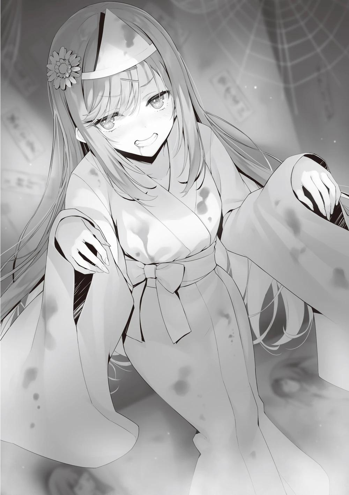
―¿Estás bien, senpai?
En cierto modo es una imagen aterradora, acercarse a un fantasma que no debería estar vivo.
―Oh, gracias por eso.
Aparentemente incapaz de levantarse por sí misma, se sentó en el suelo. No podía dejarla allí, así que decidí ayudarla.
―¿Por dónde es la salida?
―¿Qué? ¿La salida? ¿Quizás por aquí... o... por allí...?
―Si te preocupa, demos la vuelta.
Recuerdo el camino a la entrada, así que debería poder volver pronto con un poco de ayuda.
―¡No te preocupes, confía en tu senpai..!
Ella levantó la voz con dolor. Fue porque trató de fingir una demostración decisiva en vano. Era un engaño muy poco confiable, pero será mejor escuchar a una senpai.
Sería más rápido que tantear la salida desde cero. Después de un poco de vacilación y unos cuantos gritos de terror de mis compañeros de clase, llego a la salida con mi asustada senpai a rastras.
Mi intención era marcharme inmediatamente, dejando a Asahina al cuidado de la gente de tercer año, pero debido a la preapertura, no se veía ningún estudiante disponible.
―No te preocupes por mí. Gracias, Ayanokouji-kun. Seguro que estaré bien después de descansar un poco.
Me agaché para comprobar su tobillo.
―Woah ¿qué estás haciendo?
―Déjame ver.
―Oh, um, seguro...
Es demasiado pronto para decir que fue sólo una ligera torcedura, pero está empezando a hincharse. Si no recibe el tratamiento adecuado, podría tener repercusiones más adelante.
―Creo que deberías ir a la enfermería. ¿No sería difícil quedar fuera de la alineación en el festival?
―Sí, supongo. Sí, creo que lo haré.
Intentó ponerse de pie y caminar sola, pero cuando se dio cuenta de que el dolor no se lo permitiría, cambió de plan y pasó a apoyarse sólo en la pierna izquierda.
Sin embargo, cada vez que daba un pequeño salto, el impacto circulaba hasta su pierna derecha, lo que le provocaba una expresión amarga y agónica.
―Al final te ayudaré.
―Ugh... pero...
Estoy seguro de que su vacilación se debe en parte a la vergüenza, pero parece que hay otras razones por las que no está dispuesta a que le ayude.
―¿Te preocupa que Nagumo pueda vernos?
―¿Cómo lo supiste...?
―Bueno, es que tenía una sospecha.
―Si ve que Ayanokouji-kun se involucra con una estudiante de clase A, es probable que te cause algún problema. No puedo permitir que te cause problemas, ¿verdad?
Parece que está más preocupada por mí que por ella misma.
―No hay necesidad de preocuparse. Seguro que Nagumo, el presidente del consejo estudiantil, ya no me toma en serio.
―¿De verdad?
―Creo que se dio cuenta de que estaba siendo prepotente.
Decidí ayudar a Asahina y llevarla a la enfermería.
―Gracias.
Iba vestida de forma un poco llamativa, lo cual era un problema, pero supongo que no se puede evitar. Le presté mi hombro y llegamos a la enfermería con algunas miradas curiosas. El médico la sentó inmediatamente en la cama para darle tratamiento.
Le indicó a Asahina que esperara un poco antes de marcharse. Cuando yo estaba a punto de irme, ella me llamó.
―Hablando de eso, la clase de Ayanokouji se encontró con un desastre
¿no?
Perdiendo la oportunidad de irme, me di la vuelta y no me quedó más remedio que hablar.
―¿Estás hablando de la información filtrada con respecto al maid café?
―Sí.
Esta mañana, ese preciso plan fue llevado a cabo por las manos de Ryuuen.
Toda la escuela se enteró del evento del maid café en el que estábamos trabajando en secreto. Por supuesto, hay más desventajas de que tu idea se conozca en una etapa temprana.
―La clase de Ryuuen también decidió participar en un maid café.
Debido al hecho de que tenemos un competidor, tendremos que competir por los mismos clientes.
―Sólo podemos esperar que, al tener dos clases compitiendo con conceptos similares, no habrá otros que sigan la tendencia.
―Si tienes tres o cuatro clases con la misma exposición, sólo conseguirás que la competencia por los clientes sea mucho peor.
Si nos dedicamos a perseguirlos, sólo aumentará el riesgo. No es imposible que elaboremos una estrategia para conseguir una victoria absoluta, pero no será
fácil vencer a los que estamos dedicando muchos recursos al evento. Poco después, el médico trajo vendas y otros utensilios para el tratamiento. Acabé observando el proceso curativo. El tratamiento terminó rápidamente, y el médico dijo que si esperaba unos días en reposo, debería poder caminar sin problemas.
Cuando quedó claro que no habría ningún problema, Asahina dejó escapar simultáneamente el dolor y el alivio que sentía.
―Gracias a Dios. No quería molestar a la clase con algo así.
―Los resultados no cambiarán la colocación de las clases, así que no es algo de lo que debas preocuparte, ¿verdad?
Si obtuvieran el último lugar en el festival, no perderían ningún punto de clase.
―Eso no va a ocurrir. Pero no hay nada mejor que tener muchos puntos de clase, ¿sabes? Incluso hay algunos de mis compañeros que están en contra de que Miyabi no intervenga esta vez.
Asahina continuó con la mirada gacha.
―Los estudiantes que deciden no ganar necesitan tantos puntos de clase como sea posible, ¿verdad? Incluso en el festival cultural, si quedas en primer lugar, eso son más puntos privados que puedes conseguir antes de la graduación.
Debido a las leyes establecidas por Nagumo, es natural que quieran tantos puntos privados como sea posible para graduarse en la Clase A.
Mientras tanto, la Clase A no puede abandonar completamente al resto de las clases. Tendrán que seguir participando igual que los demás alumnos.
―Por si te lo estás preguntando, Nagumo dice que va a dejar competir a los que no son de clase A y va a elegir a un alumno de la clase que quede en primer lugar ―explica.
Así, las quejas de las otras tres clases no serán tan fuertes. Pero incluso así, no podrán suprimirse por completo sin mostrar la voluntad de obtener el mayor número posible de puntos de clase.
La presión sobre la clase A, que no tiene ningún interés en ganar, llega con otras circunstancias.
―Sabes de lo que estábamos hablando antes, ¿verdad? ¿De cómo Miyabi ya no te vigila?
―¿Qué pasa con eso?
―Al principio pensé que era cierto. Pero creo que podría ser falso.
―¿Y eso por qué?
―Nunca hubo un claro ganador entre tú y Miyabi, ¿verdad?
―Es cierto.
Nagumo y yo nunca nos enfrentamos para zanjar definitivamente nuestra disputa.
―Si ese es el caso, entonces no creo que se haya acabado.
―No tengo intención de luchar contra él.
Es simplemente una pérdida de tiempo con respecto a todo este calvario.
―No creo que eso importe. Ya no se trata sólo de ti, Ayanokouji-kun.
Miyabi podría empezar a atacar a gente cercana a ti.
Después de haber visto a Nagumo durante los últimos tres años a su lado, Asahina podía imaginarlo claramente.
―Al igual que el ex presidente del consejo estudiantil Horikita, a Nagumo le gusta competir, ¿verdad?
―Eh, sí, eso seguro.
―¿Alguna vez Nagumo ha sido claramente derrotado por alguien o algo?
¿Ha tenido alguna vez un pequeño revés?
Aunque, estoy segura de que puedes adivinarlo viendo la actitud de Nagumo hasta ahora.
―Miyabi nunca ha tropezado, al menos que yo sepa.
Los compañeros de Nagumo tienen una confianza inquebrantable en él.
―Sería un hecho incuestionable que el Presidente del Consejo Estudiantil Nagumo es una persona excelente. Si no fuera competente, le resultaría imposible conseguir su OAA o convertirse en presidente del consejo estudiantil.
No son pocas las áreas en las que las maniobras políticas por sí solas no pueden ayudar.
―A ese tipo le gusta ser el número uno. Por eso luchó por ser el primero de la escuela. Al final, hasta se convirtió en el presidente del consejo estudiantil, así que realmente es un hombre de palabra.
―Sin embargo, si me preguntaras si Nagumo es o no el estudiante más fuerte, lo negaría inmediatamente.
―¿Cómo puede ser eso...? Nunca ha perdido contra nadie en particular
―Asahina se sorprendió por mis palabras.
―Creo que es porque nunca ha tenido buenos oponentes ―No es que Nagumo sea débil, pero no hay duda de que sus oponentes eran débiles―. Creo que su mayor desgracia fue que no tuvo a nadie igual de capaz, o incluso más, dispuesto a competir con él en su año escolar.
―¿Quieres decir que no tenía un buen... ¿Rival?
―Así es.
Desafortunadamente, al competir sólo con estudiantes de menor categoría, Nagumo fue capaz de alcanzar el número uno sin mucho esfuerzo. Por supuesto, puede que originalmente empezara como segundo o tercero, pero pronto superó a los demás y se convirtió en el único competidor.
Cuando miró hacia atrás al terminar la carrera, vio que nadie lo perseguía.
Todos se dieron por vencidos y caminaron o se detuvieron por completo porque eran incapaces de vencer a Nagumo.
A veces, puede que hubiera gente a su alrededor con tanto talento como él, como Kiryuuin, pero si no intentaban alcanzar y adelantar a Nagumo, no eran diferentes de las malas hierbas y los guijarros a un lado del camino. El hecho de que no experimentara desde el principio el agobio y la dificultad de la competición junto con la frustración de perder puede considerarse la causa del pensamiento deformado de Nagumo.
El hecho de que esté planeando y ejecutando extrañas tácticas de venganza contra mí no se debe a ningún sentimiento de derrota o inferioridad, sino sólo para llevarme al primer plano del escenario.
Cuando pidió un combate uno contra uno en el festival deportivo, nunca pensó que perdería. Por supuesto, no lo sabía todo sobre mí, pero aunque hubiera visto toda mi fuerza de cerca, Nagumo no habría dudado de su victoria.
Nagumo nunca ha experimentado la derrota, sólo una racha de victorias tras otra.
En el verdadero sentido de la palabra, Nagumo Miyabi es un hombre que nunca ha conocido la derrota.
―Ojalá pudiéramos dejar de pelear en esta escuela.
―¿Es así?
―Sólo espero que no me pase nada...
Este festival cultural ha mostrado descaradamente el cambio en el comportamiento de Nagumo, que se transmitió indirectamente al público. Para las masas, podría parecer que la beligerancia y la curiosidad de Nagumo simplemente se han suprimido. En realidad, esto no es cierto. Esto no es más que la calma que precede a la tormenta. Nagumo tomará medidas contra mí o contra otros después de esto. Puede que no baste con expulsar a una o dos personas. El precio por ignorar a Nagumo... no será inesperado si numerosas personas son expulsadas. Si dejamos que la bomba se infle hasta un nivel peligroso, no hay duda de que tendrá consecuencias catastróficas.
Recordé las palabras de Horikita Manabu: "Los métodos de Nagumo hacen infeliz a mucha gente". Eso es verdad a medias. Por supuesto, no niego que jugué un papel en la miseria de los estudiantes mayores, pero el plan original era
sólo meterse con las emociones y el proceso de pensamiento de Nagumo. No fui capaz de lograr esto último. Los estudiantes que originalmente no se habrían graduado en la Clase A debido a los métodos de Nagumo están teniendo esa oportunidad. No sólo los estudiantes de tercer año, sino también los de primer y segundo año han recibido billetes de transferencia de clase, aunque de forma limitada. Aunque hay restricciones a la hora de utilizarlos, son productos que antes no existían. Si me hubiera preocupado hasta el año pasado, habría observado el comportamiento de Nagumo con más interés.
―Estoy empezando a interesarme un poco por el presidente del consejo estudiantil Nagumo.
―¿Te escuché bien?
―Mhm.
Un interés que nunca antes había sentido, ni siquiera una vez, brotó de lo más profundo de mi corazón.
―Sabía que eras raro.
Tras bajar la mirada hacia su pierna vendada, Asahina soltó una pequeña carcajada.
―Puede que fuera una coincidencia que nos encontráramos, pero quizá por eso Nagumo quiere pelear.
Recordando esta "coincidencia", también fue un factor importante en mi contacto con Asahina.
Coincidencia.
Fui capaz de formular una conclusión durante mi conversación con ella.
Las coincidencias que acabo de mencionar son incontrolables. Sin embargo, no significa que lo sean por completo.
Las coincidencias pueden cambiar la forma de la conversación, dependiendo de tu punto de vista y de cómo la mires.
Asahina Nazuna, el amuleto, la existencia de las coincidencias y Nagumo Miyabi.
No está nada mal para un solo caso de prueba.
Igual que el éxito nos espera tras una serie de experimentos fallidos.
PARTE 5
Dejando a Asahina en la enfermería, regresé al gimnasio para ver a Kanzaki, por quien sentía curiosidad, y a Ichinose, de quien esperaba que hubiera regresado.
Si me destacaba demasiado, volvería a producirse la misma situación, así que me alejé de la entrada.
El hecho de que no pudiera ver a Kanzaki en la fila me hizo preguntarme si estaría dentro o si ya se habría marchado. Sin embargo, por lo que parece, está claro que esperaría el regreso de Ichinose.
Hubo un poco de pánico cuando salí con Asahina, que actuaba de forma extraña, así que no creo que Kanzaki, que estaba esperando el regreso de Ichinose y mi salida, se lo hubiera perdido. Luego fui a la enfermería y tardé unos 15 minutos en volver. No me habría sorprendido que Ichinose siguiera dentro si hubiera estado en las inmediaciones, a menos que regresara inmediatamente después.
Mientras hacía observaciones generales, decidí prestar atención a las caras de los estudiantes que se marchaban.
Unos minutos después, Kanzaki apareció lentamente por la salida. Me pregunté si todavía estaría en el gimnasio, pero lo que me sorprendió fue lo que vino después.
Pensé que seguro que Ichinose estaba a su lado, pero Kanzaki estaba solo. Ella no llegó, ni él pareció preocuparse por lo que había detrás de él.
Pensé que él iba a alejarse, pero entonces se dio la vuelta y me vio.
Después de mirarme fijamente durante unos segundos, se acercó a mí.
―Ha vuelto. Parece que sus heridas no eran demasiado graves.
Si hubiera sido grave, habría sido difícil de creer que estuviera allí de pie, así, tomándomelo con calma.
Supongo que eso es lo que dedujo Kanzaki.
―¿Te preguntas por qué Ichinose no está aquí?
―Para ser sincero, un poco.
―No la llamé porque me preocupaba la posibilidad de encontrarnos al volver de la enfermería. Además, todavía quedan unos días de la preapertura.
Así que a Ichinose le dará tiempo a observar el evento, aunque no se apresure.
Hasta cierto punto, la dirección del puesto de clase de Ichinose parecía estar grabada en piedra. Si sólo se trata de una prueba, puede que ella quiera estar presente sólo para asegurarse de que todo funciona bien, pero como he dicho antes, aún hay tiempo.
―Quiero continuar donde lo dejamos antes. Tu clase parece ir bastante bien.
Estaba claro que se refería a la serie de acontecimientos desde el examen de la isla deshabitada hasta el examen especial por unanimidad, y si retrocedíamos un poco más, hasta el comienzo del segundo curso.
―No estamos indemnes. A diferencia de la clase de Kanzaki, tenemos vacantes. También arrastramos un negativo que no se ve sólo por los puntos de clase.
―No son los únicos con riesgos invisibles, pero han hecho una gran diferencia en cuanto a los puntos positivos que se pueden ver ―Más que envidia, ésta era la opinión sincera de Kanzaki―. Las clases como la tuya eventualmente tendrán que luchar contra la clase de Sakayanagi.
Una cosa que me llamó la atención fue la evaluación un tanto optimista de Kanzaki sobre su propia clase.
―¿Ya te rendiste? ¿De pasar a la clase A?
―Supongo que sí.
Kanzaki respondió afirmativamente en lugar de negativamente. No es difícil adivinar lo que está pensando. La clase de Ichinose no es nefasta. No corre el riesgo de perder muchos puntos por retrasos, ausencias, problemas de comportamiento y cosas por el estilo, porque son un grupo serio que casi nunca pierde puntos de clase y rara vez comete errores importantes en los exámenes especiales. Pero, en otras palabras, no tienen la oportunidad de dar grandes saltos en los mismos.
―Nadie se ha dado cuenta de que la clase se hunde poco a poco. Sería entrañable si sólo fingieran no darse cuenta, pero todos son genuinamente inconscientes.
―Sólo tú pareces ser diferente.
―Eso era hasta hace un rato; no tiene sentido rebelarse solo.
―¿Quieres decir que has renunciado a intentar que cambien de opinión?
―Nuestra clase nunca llegará a la Clase A ―Aquí, Kanzaki lo dijo claramente. Si la posibilidad se ha reducido a cero, lo único que queda por hacer es encontrar otra manera. Si vamos a hundirnos de todos modos, debemos dar a tantas personas como sea posible la oportunidad de escapar.
―¿Así que te vas a cambiar de clase después de acumular 20 millones de puntos?
―Porque el Presidente del Consejo Estudiantil Nagumo Miyabi realmente ha implementado esto y ha demostrado ser efectivo. Concentrar los puntos privados en Ichinose es lo que hemos estado haciendo. Si ejecutamos este plan hasta el límite, podremos mover al menos a dos o tres personas a la Clase A.
Además, la existencia de billetes de transferencia de clase se mostró por primera vez en el festival deportivo. Por supuesto, no será fácil adquirirlos, pero el aumento de opciones es un factor realmente agradable.
―¿Por qué me cuentas todo esto?
―Yo tampoco sé lo que hago.
Fue una respuesta poco característica. Kanzaki se detuvo un momento y empezó a buscar una respuesta mejor.
―No tenía un lugar donde desahogarme. Quizá sea por eso.
Si hay un problema en la vida diaria, se comparte entre las personas cercanas al alumno, estén o no en la misma clase, y se encuentra una solución. Sin embargo, cuando se trata de problemas de clase, la única salida es renunciar a alcanzar la clase A y cambiarse a otra. Si alguien dijera algo así en clase, inevitablemente se encontraría con la discordia.
Sería imposible llegar a un consenso en la clase de Ichinose.
―Eres la única persona a la que creía capaz de entender mis pensamientos sin hablar de más.
Ya veo. Creía que yo era la mejor salida para expresar sus emociones negativas.
Por supuesto, esa no es la única razón. Parece que también guarda resentimiento hacia mí, que tengo una fuerte influencia sobre Ichinose.
―Me da igual lo que haya pasado entre tú e Ichinose o el tipo de relación que tengan. El hecho de que ejerzas una influencia tan mala que ella ni siquiera pueda hacer una observación satisfactoria de la exposición de la clase A de tercer año es un problema importante.
―Es un poco duro cuando lo pones de esa manera.
―Tendrás que perdonarme. Estoy seguro de que entiendes lo frustrante que es.
Kanzaki entonces levantó la mano y me dijo que se iba.
La espalda del estratega de la clase que había renunciado a ganar parecía una talla más pequeña de lo habitual. Es un poco disparatado llamarlo de nuevo aquí, pero no puedo dejar que Kanzaki se vaya a casa ahora.
―¿Podemos tomarnos un tiempo pronto? Me gustaría tener una pequeña charla sobre el futuro.
―¿Por qué no ahora? Podemos tomarnos un tiempo para hablar de lo que está por venir.
―Lo siento, pero ahora mismo tengo que investigar sobre los de tercer año.
Además, no podemos avanzar nada si empezamos a hablar de ello ahora.
Para hablar del futuro, necesitamos otra pieza del rompecabezas que nos permita entrar en él.
―Si ese es el caso, bueno, está bien. Llámame cuando quieras.
PARTE 6
Llegó el viernes. Acudí a un lugar que no suelo visitar para reunirme con cierto estudiante.
Después de llamar, abrí la puerta de la sala del consejo estudiantil, y por un momento, Nagumo Miyabi pareció sorprendido.
No había más alumnos ni profesores a la vista que Nagumo, y por lo visto hoy estaba solo, tal y como me informó Asahina.
Incluso para él, mi llegada debió de ser inesperada. Me pregunté si me habría estado observando hace unos minutos, ya que pude ver su celular en su mano izquierda.
Seguro que era un visitante inoportuno, pero no me rechazó y, en cambio, me instó a pasar.
―Disculpa.
La puerta que conducía a la habitación se cerró con un portazo, y pasó un momento de silencio entre los dos.
―Te esperé porque Nazuna insistió en darte algo de tiempo, pero no voy a suponer nada. Entonces, ¿estás aquí por el consejo estudiantil o por mí?
―No tengo nada que ver con el consejo estudiantil. Vengo a hablar personalmente con el presidente Nagumo.
Después de decir eso, se sentó más profundamente en su silla y colocó el celular que tenía en la mano sobre el escritorio.
―Bueno, en ese caso, sólo puedo elogiarte por dar la cara delante de mí.
¿No te parece, Ayanokouji?
―Creo que te refieres al festival deportivo, pero ¿estar enfermo no es un derecho legítimo que se acepta como motivo de ausencia?
―No me vengas con esas, hombre. Te vi en el centro comercial Keyaki al día siguiente y parecías estar bien.
―Mejoré en un día.
―Eso es una mentira descarada.
―Puede que sea verdad.
Era un juego de palabras, pero Nagumo pareció darse cuenta de que seguir insistiendo era inútil.
―Verdad o mentira, ya no me importa. De todos modos, déjame oír tu razón para venir aquí.
Su actitud problemática debe venir del fondo de su corazón. Ni siquiera intenta ocultar el hecho de que quiere terminar rápidamente la discusión. Sin embargo, una actitud tan transparente es también una prueba de que está ocultando sus verdaderos sentimientos.
―¿Puedo sentarme? Creo que va a ser un poco largo.
―Me dijiste antes que no tenías nada que ver conmigo, el presidente del consejo estudiantil. Si quisiera, también podría elegir no tener asuntos contigo,
¿verdad?
Como jefe del consejo estudiantil, Nagumo estaba dispuesto a escuchar, incluso a alguien que no le agradaba. Si no quiere, no escuchará nada. Es natural.
―Si no me escuchas, me iré.
Si Nagumo, como individuo, es demasiado perezoso incluso para conversar conmigo, no tengo elección.
Sin embargo, no creo que ese sea el caso. Si su interés por mí se desvaneciera por completo, sería otra historia, pero en el fondo, creo que la chispa sigue ahí.
En otras palabras, nunca se negará. Precisamente porque estoy segura de ello, también me tomé un tiempo de mi precioso día para visitar este lugar.
Tras unos instantes de silencio, Nagumo me indicó que me sentara.
Moví mi silla y me senté para que pudiéramos mirarnos de frente.
―Lo siento, no tengo nada para beber.
―No hay problema.
Por la forma en que me miraba, me di cuenta de que no iba a disculparse por nada más. Supongo que lo único que pensó fue: "¿Por qué viniste después de tanto tiempo?".
―No tenía ni idea de que la clase A de 3er año haría una preapertura. Es normal pensar que es una desventaja exponer la exhibición de la clase al público.
―También me llegan historias de que alguna clase estúpida expuso su evento.
―Eso es una noticia, ¿no? También escuché que Ryuuen visitó al presidente del consejo estudiantil Nagumo.
―Me estaba presionando para apostar decenas de millones de puntos con él.
―Escuché que te negaste.
―Sí, bueno, el juego contigo terminó y también mi vida escolar. Como resultado, me importa una mierda el festival cultural. Así que no hay necesidad de que dé instrucciones. Pueden hacer recuerdos durante sus últimos momentos en la preparatoria.
Así que cambió a esta postura, en la que toda la información relativa al stand de su clase está abierta mientras disfruta de un festival cultural normal como cualquier otra escuela.
Ya sea que ganen el primer lugar o el duodécimo, la Clase A de tercer año sigue en la cima. A Nagumo no le importa si los de la clase B e inferiores se quejan.
―¿Pero decenas de millones? No habrá suficientes, aunque los reúna de su clase.
La clase de Ryuuen, que tiene altos ingresos pero gasta mucho, no tiene los bolsillos llenos.
―Ese tipo me dijo que me daría el derecho de expulsar a cualquier alumno que quisiera, incluso a él mismo.
Ryuuen iba a utilizar a los mismos alumnos como garantía de los fondos que no pudiera aportar.
―El año pasado le hubiera aceptado esa oferta. Me las vería con otro año, pero habría sido interesante que nos jugáramos la expulsión.
Nagumo comentó que ya había perdido el entusiasmo y el interés por la escuela.
―Si quieres competir conmigo, puedes hacer lo que quieras.
―Entiendo tus pensamientos personales. ¿Pero no hay muchos estudiantes que no están de acuerdo?
―Nadie puede quejarse conmigo, porque si lo hacen, su estatus de Clase A ya no estará garantizado. Cuando se acerque el festival, yo, o más bien el consejo estudiantil, haré una propuesta no tan mala. Una pequeña ayuda para una clase que lucha por ganar.
―Ya veo. Lo has pensado mucho, ¿verdad?
―Bueno, al fin y al cabo soy el presidente del consejo estudiantil". Tras dar una respuesta ejemplar, Nagumo exhaló un suspiro e instó: "Vamos, dime a qué viniste.
―Lo único que quiero es tener una conversación con el presidente del consejo estudiantil. Eso es todo.
―No me lo creo del todo.
―¿No me crees? En realidad, estoy un poco sorprendido con mis propias acciones. Hasta ahora, he estado intentando mantener las distancias con el presidente del consejo estudiantil Nagumo.
―Lo sé muy bien.
Sin embargo, él quizás no entendía la raíz del por qué.
―¿Sabes por qué?
―No lo sé. Estoy seguro de que no es porque tengas miedo de mi habilidad.
―A diferencia del anterior presidente del consejo estudiantil, Horikita Manabu, el presidente del consejo estudiantil Nagumo atrae las miradas de los que le rodean. También se debe a que es demasiado deslumbrante para que una persona turbia como yo le haga frente.
―Claro. Pero eso es sólo una fachada, ¿no?
Nagumo desechó con ligereza la pretensión de respeto y me instó a revelar mis verdaderas intenciones.
―No me interesaba.
Es un poco exagerado, pero eso es lo que dije. Voy a decir lo que pienso. Sin dejar de reconocer un cierto nivel de habilidad, es todo lo que podía decir.
Por eso no creí necesario involucrarme en lo que Nagumo estuviera haciendo.
―Si otra persona hubiera dicho lo que acabo de oír de tu boca, podría haberme enfadado.
―No me di cuenta de que era grosero.
―No, no necesitas disculparte. Si te sientes así, es asunto tuyo. Fui yo quien te hizo decir lo que pensabas ―afirmó Nagumo, pero rápidamente
añadió―: Pero aun así, si no hubieras sido tú quien dijo eso, estoy seguro de que les habría hecho cambiar de opinión enseguida.
No dudaría en atrapar al interlocutor para que se interesara, independientemente de lo que éste deseara. Con el poder de Nagumo, eso no sería difícil de hacer.
―Pronto terminará tu mandato como presidente del consejo estudiantil, y el presidente del consejo estudiantil Nagumo permanecerá en la clase A y se graduará. Pensé que eso estaría bien. Hasta el otro día.
―¿Ahora piensas lo contrario?
―Cambié de opinión. Sentí que podía enfrentarme a ti directamente, y por eso estoy aquí.
No hay necesidad de controles y equilibrios, halagos fingidos, falsa alegría o ira.
Es mejor para el futuro decir lo que pienso. Le dije a Nagumo, que me esperaba para seguir explicándole la razón principal por la que había venido hoy.
―Tengo una propuesta para el presidente Nagumo. ¿Puedo hacer un desafío al presidente del consejo estudiantil esta vez?
Probablemente a Nagumo nunca se le pasó por la cabeza hacer una declaración así.
―No estoy convencido, esto no es propio de ti.
Un cambio de opinión, tal respuesta no fue suficiente para convencer a Nagumo.
―No sé cuándo se produjo exactamente este cambio de opinión, pero es demasiado tarde. Huiste de la última oportunidad que te di en el festival deportivo. Si me permites tomar prestadas las palabras de tus verdaderos sentimientos, no estabas interesado. ¿No es cierto?
―Así es. Sé que es una historia conveniente.
―Sí, tienes razón. Después de haber renunciado a tres oportunidades, y ahora que me piden que participe en un juego alegando un cambio de opinión, no hay forma de que pueda decir honestamente que sí.
Nagumo no cambió de postura y siguió sin mostrar mesura.
―Y, fíjate, es lo mismo que dijiste antes sobre el festival deportivo. Dijiste que estuviste enfermo todo el tiempo. Decidí que era una mentira obvia. Además, no me digas que olvidaste lo que pasó en la isla.
―Entonces, ¿te gustaría repetir lo que pasó en la isla? Esta vez, ¿en la posición opuesta?
Si Nagumo pudiera darme un golpe en las tripas aquí, podría disculparme por mi comportamiento. Sin embargo, no creía que eso fuera suficiente para convencer a la parte contraria.
No cuando la otra parte es Nagumo Miyabi.
―No tienes gracia Ayanokouji. Nunca sería el mismo nocaut. Hay una gran diferencia de valor entre tú y yo.
Naturalmente, no hubo lugar para discutir la propuesta. Era obvio que había al menos esa gran diferencia entre Ayanokouji Kiyotaka y Nagumo Miyabi, al menos en esta escuela. Uno era un estudiante ordinario de la clase B de segundo año, mientras que el otro era el líder de la clase A de tercer año y el presidente del consejo estudiantil.
La diferencia entre lo que somos capaces de hacer era tan grande que incluso una comparación era inaceptable.
―Bueno, voy a dejarlo a un lado porque no tiene sentido entrar en eso ahora. Entiende esto, Ayanokouji. Se me permite retarte a una pelea, pero a ti no se te permite retarme a mí a una pelea.
―Entiendo, pero eso es exactamente lo que estás dejando de lado. Estoy aquí delante de ti ahora mismo, y estoy diciendo que estoy dispuesto a luchar contra el Presidente del Consejo Estudiantil Nagumo. ¿No estás de acuerdo con eso?
Me corté intencionadamente las yemas de los dedos y goteé sangre sobre el lobo sediento de sangre. Pero el lobo frente a mí no mordía fácilmente. No era un provocador indefenso como había sido en el pasado, más bien, el lobo era muy cauteloso. Si antes no me hubiera considerado un enemigo, ya me habría
hincado los colmillos. Puede que no se hubiera dado cuenta, pero esa era la prueba de que me reconocía como enemigo.
―Realmente eres extraño. No muestras ningún signo de timidez cuando tratas conmigo. No, no es sólo contra mí, sino también contra Horikita-senpai.
Nagumo miró por la ventana como recordando los días de Horikita Manabu.
Su deseo original era luchar contra el mayor de los Horikita, no contra mí. Ese objetivo fue inalcanzable, pero también era cierto que no había otras alternativas.
―Vaya. Si tuviera que jugar contigo, ¿qué harías? Estamos casi en el tercer trimestre del curso escolar, y ya hemos pasado el ecuador del segundo semestre. Como probablemente ya sepas, les di todo el poder a mis compañeros para que compitieran por las ventas en el festival escolar. No puedo pedirles que me lo devuelvan ahora. Por otra parte, aunque espere al próximo examen especial, no hay garantías de que haya una competición entre todos los grados.
Podríamos dejarlo a la suerte y esperar, con la esperanza de que todavía hubiera una batalla entre todos los grados. No es que tal cosa no pudiera hacerse, pero no sería muy realista.
―Por encima de todo, eres muy consciente de la dificultad de competir en serio entre diferentes grados, como tú y el anterior presidente del consejo estudiantil ya saben, ¿no?
En el festival deportivo del año pasado, en los campos de entrenamiento, etc., Nagumo Miyabi se empeñó en competir con Horikita Manabu. No importaba la forma que adoptara, no importaba lo pequeño que fuera el enfrentamiento, se forzaba a sí mismo a hacerlo, con la esperanza de convertirlo en algo blanco o negro. Sin embargo, Manabu esquivó las provocaciones de Nagumo y no involucró a nadie en el combate.
―Más que nadie. ¿Cuánto tienes que trabajar para adaptarte? Por tu culpa, no sólo este año, el año pasado también, el combate con Horikita-senpai no se produjo.
En ese sentido, también, Nagumo no estaba contento conmigo.
―Escucha lo que voy a decirte y piensa si se puede lograr un enfrentamiento.
Con eso, Nagumo se sentó más profundamente en su silla para corregir un poco su postura. Aunque muchos de los exámenes especiales que realizaba la escuela eran desconocidos, teníamos varias pautas para prepararnos para ellos.
Porque no importaba de qué forma se presentara el enfrentamiento, siempre había un método para ejecutarlo. Cuando terminé de relatarlo todo, Nagumo permaneció en silencio y parecía sumido en sus pensamientos.
―No sé si podremos lograr un enfrentamiento 100% perfecto, pero creo que esto puede hacerse realidad.
―Eso es cierto. Pero, ¿de verdad crees que podemos poner en práctica el plan del que hablas?
―Estoy seguro de que el presidente del Consejo Estudiantil, Nagumo, ya se imagina la situación. Seguro que los ha estado observando día tras día,
¿verdad? Si es así, es imposible que no conozca los detalles.
―Ya veo. Planeaba sacudirte en ese momento, pero en lugar de enfadarte, decidiste aprovecharlo.
―¿Aceptarás mi propuesta o no?
Hablamos durante bastante tiempo, incluso para mí. Pero este trabajo conversacional es necesario en las negociaciones con Nagumo.
―Estaría encantado de aceptar tu propuesta, pero... ―La respuesta fue positiva, pero las palabras tenían otros significados―. Pero ¿cuál es tu verdadero propósito?
―¿No lo puedes creer? Sólo quiero competir con el Presidente Nagumo.
―No lo creo ni por un segundo.
Como si estuviera convencido, respondió sin vacilar. Me alegré un poco, pero decidí esperar a las siguientes palabras de Nagumo.
―Muy bien, cuéntame el asunto principal. Después pensaré si acepto o no la propuesta.
Me dejó pasar al otro tema principal sin vacilar.
―Tengo que pedirle un favor al Presidente del Consejo Estudiantil Nagumo.
Le di una explicación basada en el contenido de la petición y su desarrollo concreto. Después de escuchar, se sentó profundamente en su silla, donde llevaba sentado un año.
―Entiendo lo que me dices. Pero no es una propuesta basada en tu deseo de competir conmigo. Planteaste la idea de un combate porque no tenías más remedio que controlar lo que querías que ocurriera. ¿Estoy en lo cierto?
―Mitad verdad, mitad mentira. También es cierto que yo mismo cambié mi opinión sobre el Presidente del Consejo Estudiantil, y por eso quiero competir.
Sin embargo, también siento que en parte es una molestia.
―Eres un tipo honesto.
―Por eso quiero que aceptes mi propuesta.
―Eres un chiste. Me pediste un encuentro y ahora eres tan descarado.
―No lo voy a negar.
―¿Crees que voy a seguirte el juego y darte lo que quieres?
―Si te niegas, se acabó. Nunca volveré a pelear con el Presidente del Consejo Estudiantil. Ni siquiera si usas a un compañero de clase o a alguien del mismo grado que yo. Ni siquiera si tomas a alguien como rehén, lo ignoraré por completo, y a ti también.
―Lo dudo. Si es un tipo cualquiera, probablemente lo darías por muerto, pero si es Karuizawa Kei...
Aquí Nagumo intentó influenciarme mencionando a Kei.
―No importa quién sea.
La sonrisa de Nagumo desapareció mientras yo contestaba inmediatamente sin dudar.
―No parece que sea un farol. Parece que... lo dices en serio.
―No soy un dios omnisciente y omnipotente. No puedo proteger a todo el mundo 24 horas al día, 365 días al año, ya sea a Kei o a mis compañeros. Si el presidente del consejo estudiantil, que es quien tiene más poder en esta escuela y controla a un gran número de alumnos, quisiera hacerlo, podría hacer que expulsaran a alguien de la escuela sin mi supervisión.
Por supuesto, existía el riesgo de pagar un precio importante por las molestias, pero no me importaba.
―Expulses a quien expulses, no volveré a hacer un movimiento.
Esto no era una táctica.
Era pura sinceridad, por lo que la sonrisa de Nagumo desapareció de forma natural.
―Si quiero joderte, cosa que deseo profundamente, no tengo más remedio que aceptar tu propuesta actual.
―Por supuesto, puedes ignorarla y graduarte sin dudarlo.
―¿Pero no tendrás problemas si no te ayudo?
―Ya tengo otros planes.
Sí, ya no había necesidad de pasar por la molestia de revelar mi historia a Nagumo. Pero antes mencioné la mitad de la razón. El impulso de luchar contra él era la razón por la que quería tener esta discusión. Todo se decidiría por su próxima respuesta. Es el momento del juicio final, si el combate entre nosotros tendrá lugar o no.
―De acuerdo, te tomo la palabra, Ayanokouji. De todas formas, mi graduación en la clase A es inatacable. No es mala idea acabar jugando contigo.
Nagumo no pensó ni por un segundo que fuera a perder, ni siquiera podía imaginárselo. Era la confianza aplastante de un hombre que siempre se siente orgulloso de ganar.
―Muchas gracias.
―¿Pero estás seguro de que quieres hacer esto? Si hago lo que sugieres, entonces... no importa cómo resulte, la gente saldrá herida.
―Por supuesto. De cualquier manera, el Presidente del Consejo Estudiantil Nagumo estará involucrado.
Nagumo reaccionó fuertemente a esas palabras.
―Tú...
Cuando estaba a punto de irme, Nagumo se levantó y se acercó a mí.
―¿Lo sabías?
―Aunque estábamos distanciados, observé al presidente del consejo estudiantil. Tenía una idea de lo que harías después de esto.
Aunque ya había declarado que no tenía intención de luchar, este hombre siempre me tenía en el punto de mira. Era de esperar que actuara en el momento oportuno, antes de que fuera demasiado tarde.
―Así que estás diciendo que no es sólo Karuizawa, sino también Honami...
―Como dije, es lo mismo sin importar quién sea. Ya sea por la expulsión de Kei, por jugar con Ichinose, Horikita o cualquier otro. Sería prudente que no pensaras que puedes influenciarme así.
Nagumo, que reía sarcásticamente, cambió rápidamente a una expresión seria.
―Retiro mi comentario sobre jugar. Eres el único al que Horikita-senpai ha reconocido. He podido asegurarme de ello.
―Es bueno oír eso. Bueno entonces, te dejaré aquí.
― Oye.
―¿Qué pasa?
―Hombre, admito que tienes una verdadera cara de póker. También entiendo que negociaste diligentemente para incluirme en tu asunto. Así que, déjame escuchar tus verdaderos sentimientos por una vez. Aunque fuera en serio lo de lograr que Karuizawa abandonara la escuela, ¿te habrías quedado de brazos cruzados?
―Por Kei, no, no creo que sea deseable tener una vacante entre mis compañeros de clase, fuera quien fuera. Iba a resistirme todo lo posible.
―Esa no es una respuesta. La respuesta que estás dando es a la semejanza de los compañeros de clase. Lo que digo es que no sentí ninguna ansiedad por la desaparición de Karuizawa, que es muy especial para ti.
Miré hacia atrás. Normalmente, la respuesta sería obvia. Sólo alardeo y trato de ocultar a los demás cómo me siento realmente. Iba a decir algo parecido. Pero tenía la sensación de que no era la mejor respuesta para Nagumo.
―Si desaparece, se acabó, y no hay más que hablar. No es ni más ni menos que eso. De hecho, me habría sido de gran ayuda porque me habría facilitado la limpieza.
―Tienes los tornillos flojos, Ayanokouji.
Era la primera vez que veía a Nagumo enfadado, o mejor dicho, murmurando su opinión sobre algo que no acababa de entender.
―Luego te llamo.
Cerré la puerta en silencio y salí de la sala del consejo estudiantil.
Nagumo me describió como un loco, pero eso no es cierto. Creo que las personas que toman decisiones equivocadas basándose en sus emociones son las que tienen los tornillos mal puestos.
Da igual que la otra persona sea un extraño, un amor o un familiar.
Cuando llegue el momento de fracasar y retirarte, será tu fin.
La primera prioridad es siempre protegerte a ti mismo.
Esa es la "solución" inquebrantable.
EL HUMO DE LA REBELIÓN
El lunes 8 de noviembre, nos sorprendió la entrada de Ryuuen y sus amigos en el Café. Tuvimos que lidiar con diversos asuntos, pero las tareas a realizar junto a nuestros amigos, decididos a luchar, siguen siendo las mismas.
En respuesta a la apuesta propuesta de Ryuuen, Horikita contraatacó con un enfrentamiento de un millón de puntos privados con el consentimiento de las clases. El acuerdo era que la clase con más ventas del festival recibiría ese número de puntos de la otra clase.
No te andes con tonterías, lucha de frente y gana.
El hecho de que muchos de mis compañeros tuvieran una actitud tan positiva era una gran ventaja.
Después de clase, cuando Chabashira-sensei salió del aula, saqué mi celular.
[Tengo algo de tiempo. Dirígete al lugar designado.]
Al parecer, están dispuestos a reunirse ahora.
¿Ayudó el preámbulo que di el otro día sobre el futuro?
― Oye, Kiyotaka. Vuelve a casa conmigo.
―Lo siento, hoy tengo planes más tarde.
―¿Ah, sí? Ya veo....... Bueno, entonces, Maya-chan, ¡vamos a casa juntas!
Tras un rápido intercambio, Kei se dirigió a Satou, que seguía en el aula.
―¿No vas a ir con Ayanokouji-kun?
―Vamos, vamos, no digas eso. ¿Ves?
Satou se apresuró, pero no mostró ninguna desaprobación en absoluto, sino que aceptó la propuesta de Kei con una sonrisa. A continuación, invitó a algunas otras chicas a unirse a ella y felizmente salió del aula.
Entre ellas se encuentra Shinohara, quien no hace mucho tuvo una relación difícil con Kei.
Después de acercarse a Satou, Kei parecía haber madurado todavía más que antes.
De todos modos, agradecí que estuviera allí para acompañar a Kei.
Decidí salir del aula y dirigirme al ala especial para reunirme con Kanzaki, que me había llamado.
Porque esta vez no podía ser ni por teléfono, ni por chat, ni en público.
De camino hacia allí, vi al profesor encargado de la clase A de 2º año, Mashima-sensei, y a los profesores de los demás cursos, de pie en el pasillo, hablando.
La inusual visión atrajo mi mirada, pero no dejé de caminar.
―Chabashira-sensei ha cambiado últimamente.
Al pasar por delante de mí, se oía esa conversación entre los profesores.
―Se ha vuelto más alegre, o mejor dicho, parece que se ríe más a menudo.
―Mashima-sensei, usted y Chabashira-sensei eran compañeros en la escuela, ¿verdad? Bueno, me gustaría hacerle unas preguntas...
Al parecer, el tema de conversación era Chabashira-sensei.
Pensaba que podían quedarse hablando en la sala de profesores todo lo que quisieran, pero si el tema es sobre un profesor en particular, y más aún sobre un profesor del sexo opuesto, sería una obviedad irse a un sitio tranquilo. Ni que decir tiene que el cambio en Chabashira-sensei del que hablaban los profesores fue provocado por el examen especial votación unánime.
Sin duda, tenían la impresión de que había salido de su caparazón, no sólo como profesora titular, sino también como maestra de escuela.
Entonces, Mashima-sensei se percató de mi presencia e interrumpió la conversación.
Creo que fue porque decidieron que no sería prudente permitir que los alumnos oyeran comentarios innecesarios.
―Ayanokouji, ¿qué haces aquí, en el edificio especial?
Es una pregunta natural, ya que los alumnos rara vez pasan por este pasillo después de clase sin motivo.
―Tengo una breve reunión. Hay algunas cosas de las que quiero hablar y que no quiero que me escuchen accidentalmente.
Cuando respondí, los profesores, a excepción de Mashima-sensei, parecieron algo consternados y se alejaron, tal vez decidiendo dispersarse.
Yo podría haberme marchado inmediatamente, pero también tenía un poco de tiempo antes de la reunión.
―Mashima-sensei, justo a tiempo. Me gustaría hacerle unas preguntas.
La presencia de Mashima-sensei, que se quedó hasta el final, debía significar algo.
―¿Yo? ¿Qué quieres preguntarme?
―Esto es con respecto a las reglas que no están explícitamente establecidas en el festival.
Aunque parecía ligeramente escéptico, Mashima-sensei me encaró de inmediato como un maestro.
La preparatoria se basa en un conjunto especial de normas muy diferentes a las de las preparatorias ordinarias.
Es muy consciente de que cada alumno puede tener un punto de vista diferente.
Sin embargo, esto dará lugar inevitablemente a algunas preocupaciones.
―No sé qué quieres preguntar, pero ¿no deberías consultarlo primero con tu profesora titular, Chabashira-sensei?
No dudó en preguntarme esto para asegurarse de que la suposición subyacente es correcta. En efecto, lo lógico sería preguntarle a tu profesor titular cuáles son las normas.
―A veces, dependiendo de la ocasión, es más conveniente no acercarse a Chabashira-sensei.
―Se supone que los profesores deben ser justos con todos los alumnos.
Pero aun así, cuando se trata de otras clases del mismo grado, no significa que no vaya a haber ningún problema. Espero que te des cuenta.
Me recordó que algunas cosas son mejor tarde que nunca una vez que las has oído.
―Juzgo que Mashima-sensei no es el tipo de persona que le fallaría a un estudiante.
―Si eso es lo que piensas, entonces no vayamos más lejos.
Su tono retrataba más un "pregunta lo que quieras si vas a confiar en mí", que una respuesta del tipo "puedes confiar en mí".
―Entonces, ¿qué es lo que quieres saber con respecto a las reglas no explícitas?
Le pedí consejo a Mashima-sensei, que dio su permiso aquí, sobre un caso concreto.
No pareció sorprenderse lo más mínimo, pero con razón.
Las escuelas también tienen normas no declaradas en secreto para dar cabida a diversos deseos de los alumnos.
Por eso no me extraña que haya alumnos que piensen como yo.
―Seguramente tienes razón. No es imposible aplicarla, si es necesario.
―Lo sabía.
Esto no es nada descabellado.
Surgirán casos en los que la clase se encuentre en tal situación, o en los que se solicite en caso de un inconveniente importante.
―Sin embargo, cabe preguntarse si es eficaz. Como sabes, si fuera entre alumnos, no surgirían problemas. No, sería precisamente para que ellos tuvieran sus propias discusiones para que éstas no surjan. Sabes a qué me refiero, ¿no?
―Sí. Pensaba que era algo que no hacía falta especificar en el reglamento y que se podía hacer de forma independiente.
―Sí. Por supuesto, los riesgos serán diferentes para cada uno, pero por la razón que sea estudiaremos esa opción.
―Supongo que es natural estar preparado para imprevistos.
Cuando contesté, Mashima-sensei asintió con la cabeza, pensativo.
―Tanto si lo ejerces como si no -¿o...? Bueno, desde luego no estaría de más entenderlo.
Aunque Mashima-sensei no lo mencionó, puede que tuviera una vaga idea de la estrategia de ventas basándose en lo que dije.
―Fue bueno obtener la confirmación. Gracias.
―No hay problema.
Esta es una cosa menos que comprobar para el festival. Será un beneficio inesperado.
Después de terminar la conversación, traté de salir, pero fui detenido por Mashima-sensei.
―Ayanokouji, escuchaste un poco de lo que dijo Chabashira-sensei...
¿Qué pasó en el examen especial votación unánime?
―¿No se enteró? ¿No de Chabashira-sensei?
Los resultados naturalmente eran conocidos por Mashima-sensei, pero parecía que no entendía el cambio de actitud de Chabashira-sensei.
―Con o sin las expulsiones, empezó a mirar hacia delante y a sonreír. En otras palabras, hubo un acontecimiento influyente en ese examen especial que la hizo cambiar de mentalidad, ¿verdad?
Si no recuerdo mal, Mashima-sensei y Chabashira-sensei eran del mismo curso cuando asistieron a la Preparatoria Avanzada de Educación.
Conocía varios aspectos del pasado y era comprensible que se sorprendiera.
―No es correcto preguntarle eso a un alumno. Por favor, olvida que pregunté algo así.
―Comprendo. Discúlpeme.
Tras saludar brevemente con la cabeza a Mashima-sensei, decidí ir al edificio especial donde íbamos a reunirnos.
PARTE 1
El festival se acercaba poco a poco, pero había otro asunto que atender paralelamente. Se trata del cambio a la clase de Ichinose.
La cuenta atrás para su colapso avanza más rápido de lo que esperaba.
Había que tomar las medidas necesarias para evitarlo.
Esta vez, la líder, Ichinose, no fue contactada.
Lo que se necesita ahora, pensé, es crear una diferencia con los compañeros que están unidos bajo ella.
Sin embargo, este procedimiento debe hacerse con precaución.
¿Quién más sería lo suficientemente competente para asumir ese papel sino ese hombre?
―Siento llamarte así.
Después de clases, fui al lugar designado como me habían informado, y Kanzaki ya estaba allí esperándome.
Su rostro era sombrío, y desde luego no estaba de humor para una conversación alegre.
―¿Qué quieres de mí?
Conocí a Kanzaki, de otra clase, poco después de entrar en la escuela, pero no somos muy amigos. Últimamente, desconfiaba de mi presencia y, si acaso, pienso que me odia. Bueno, no, no significa necesariamente que no respondiera a la llamada porque le cayera mal.
Fue porque desconfía de mí por lo que quiso hablar conmigo.
Esto es más probable si la cita está situada en un lugar donde la gente no quiere ser vista.
―Es hora de hablar del futuro.
―¿Sobre el futuro? Qué demonios... Bueno, está bien. Te dejaré hablar primero.
Kanzaki corrigió su postura antes de hablar de nuestros asuntos.
Aunque un poco sorprendido por el inesperado primer movimiento, primero escuché lo que Kanzaki tenía que decir.
―Llevo un tiempo con problemas. No lo he hablado con nadie. Estaba luchando yo solo.
Tras expresarlo con palabras, se corrigió y reiteró que no era así.
―No, decir que estaba luchando sería una exageración, pero pensaba todos los días en lo que iba a hacer conmigo mismo.
Las palabras estaban llenas de emociones que no eran típicas del tranquilo y sereno Kanzaki.
Decidí ser un oyente hasta que la otra persona pidiera una respuesta.
―No sé qué voy a hacer con el resto de mi vida escolar...
Puede que no haya tropezado con problemas de amistades o de noviazgo y tenga la cabeza en blanco.
Sólo hay un objetivo que debería preocupar sobremanera a los alumnos de esta escuela: ascender a la clase A.
―Probablemente no necesite decírtelo ahora, pero nuestra clase no puede ganar.
¿Contra qué no se puede ganar?
¿Es el festival cultural o un examen especial de fin de curso un poco más adelante?
No, esto no termina con una historia tan pequeña.
La realidad es que no es posible que la clase de Ichinose ascienda a la Clase A.
Así lo expresó Kanzaki, que llegó a esa conclusión.
―No estamos muy por detrás de otras clases en cuanto a capacidades académicas, deportivas y de liderazgo. De hecho, creo que tenemos algunos aspectos en los que destacamos. Pero me di cuenta de que esto no siempre conduce a la victoria.
Empezó a pensar por sí mismo, a entender por sí mismo y a preocuparse por sí mismo. Como cabe esperar, todo empezó con Kanzaki.
―Entiendo lo que quieres decir. Entonces, ¿qué quieres de mí, Kanzaki?
Cualquiera podía simplemente escuchar y transmitir comprensión.
―Necesito tu consejo sobre... Ichinose.
¿Por qué tengo que ser yo?
Los nombres de las pocas personas que podrían haber sido capaces de encontrar un terreno común inmediatamente vinieron a la mente.
―No, eso no es todo. También quiero tu opinión sobre lo que nuestra clase debería hacer en el futuro.
―Eso es importante, ¿no? ¿Y quieres eso de mí, que ni siquiera soy un compañero de clase?
―...Efectivamente.
Era fácil leer la psicología en la expresión de dolor de Kanzaki.
Este hombre no es el tipo de persona que busca la ayuda de los demás con facilidad.
Fue precisamente porque se vio arrastrado a este punto que Kanzaki no tuvo más remedio que hacerlo.
No, ni siquiera esa ayuda era inicialmente una consideración.
Si lo hubieran abandonado a su suerte, podría haber tenido un futuro así.
―Ella nunca me escucha realmente. No, es igual para todos.
―Reconocí a Ichinose como una estudiante que escuchaba a cualquiera.
―Eso es sólo cuando estás en el mismo bando que Ichinose. No necesito explicártelo ahora.
Me atreví a ponerlo a prueba, pero supongo que ya no es necesario.
Hablando claro, si pides ayuda para salvar a alguien, Ichinose no correrá ningún riesgo, no te traicionará y se quedará contigo hasta el final para ayudarte. Sin embargo, si pides ayuda para tender una trampa insensata a alguien, Ichinose nunca te ayudará.
Corregir errores y hacer el bien también pueden describirla.
No cambiará aunque le ofrezcan dinero u otras recompensas a cambio en un intento de convencerla.
―No digo que vaya en la dirección equivocada. Pero el idealismo es el idealismo.
―Hay muchas ocasiones en las que ese idealismo es necesario.
―Sí, ya lo sé. Estoy dispuesto a pasar por problemas cuando las cosas van bien.
De hecho, Kanzaki y sus compañeros han seguido el ejemplo de Ichinose hasta este punto y han compartido sus dificultades.
―¿Qué tal ahora? Continuamos siguiendo la política de Ichinose y perdimos puntos de clase. Estamos en el fondo de un pozo y no tenemos ni idea de cómo salir.
―Estás compartiendo mucho. ¿Estás seguro de que no voy a dejar que reveles demasiado sobre el funcionamiento interno de tu clase?
―Es una tontería.
Murmuró para sí mismo, como para reírse a carcajadas, como para escupirlo.
―Pero un plan es un plan, aunque sea una tontería. Ahora mismo, no tengo más remedio que confiar en ti.
Apartó de mí su mirada algo resignada y se quedó mirando el suelo vacío del pasillo.
―En el examen especial votación unánime. Voté que sí e intenté colarme, pero tampoco funcionó.
No sabía nada del funcionamiento interno de su clase, pero aun así, podía imaginar fácilmente cómo se desarrollaría aquello.
Kanzaki votó a favor de expulsar a los alumnos para mejorar la clase y hacerles comprender la realidad de la situación. Siguió votando a favor e intentó cambiar la mentalidad de la clase, pero ninguno de sus compañeros, incluida Ichinose, estuvo de acuerdo con su opinión. Sin embargo, no culparon a Kanzaki, que inició la rebelión, sino que le exhortaron a trabajar duro junto a ellos. Aunque lo hubieran destituido, habría ocurrido algo parecido.
―...Es gracioso, ¿verdad?
Cuando no contesté, Kanzaki murmuró para romper el silencio.
―¿Qué sentido tiene contarle este tipo de cosas a alguien, amigo o enemigo?
Comprendió él solo que no había forma de que yo pudiera dar algún consejo.
Fue un acto realmente cruel, y ahora parecía que quería humillarse.
―Ichinose siente devoción por ti. Lo único que podría cambiar la política de Ichinose es una existencia única, como tú. Ella sólo podrá verlo claramente viniendo de ti.
―Ya veo.
La única manera de salvar la clase es cambiar los pensamientos y valores de Ichinose, la líder.
La clase en su conjunto es perfectamente capaz, y eso sin duda les ayudará a ver la luz.
―Parece que tu deseo de cambiar la corriente y salir de esta situación de estancamiento es cierto.
Kanzaki asintió profundamente, ya que no había necesidad de arreglar las cosas ahora.
Sin embargo, tenía que pensar detenidamente si eso sería realmente por el bien de la clase.
Algo que Kanzaki, sintiéndose frustrado, no veía.
La previsión de que la clase se salvaría si Ichinose cambia es sólo un truco.
Aunque Ichinose cambiara con una palabra mía, ¿podría realmente llamarse crecimiento?
¿Podría una Ichinose, que a veces toma decisiones despiadadas, realmente seguir a las otras clases?
Para borrar las desventajas, borraría las ventajas que son exclusivas de Ichinose.
Una vez que se gira la rueda en esa dirección, no hay garantía de que se pueda volver atrás.
―Estoy de acuerdo en que tenemos que cambiar el rumbo. Pero no estoy de acuerdo contigo en el método.
―No tenemos otra opción; Ayanokouji es el único que puede mover a Ichinose.
―No lo sé. No lo sé, pero creo que hay alguien más cualificado.
―No se me ocurre nadie.
Kanzaki, que no tenía ni idea de lo que estaba hablando, enarcó una ceja.
―En realidad, hay otro estudiante al que llamé hoy después de acercarme a ti.
―¿A quién?
―Es uno de tus compañeros de clase a quien Kanzaki conoce muy bien.
―¿No me digas que llamaste a Ichinose?
En cierto sentido, es la última persona que yo querría ver aquí.
―Desafortunadamente, no es Ichinose. Es una estudiante que tiene el potencial para cambiar las cosas.
―Odio interrumpir, pero no hay nadie en nuestra clase que pueda discutir con Ichinose excepto yo. Lo he visto de primera mano y lo entiendo.
―¿No es ese exactamente el tipo de estrechez de miras del que hablas, Kanzaki?
―¿Qué?
―La clase de Ichinose parece monolítica, pero en realidad no lo es. Hay muchos estudiantes que no tienen más remedio que dejarse llevar por su entorno, ya que todos parecen estar unidos.
Esa fue mi respuesta, pero no pareció sonarle a Kanzaki.
¿Es comprensible?
Él nunca mostraría a sus compañeros una apariencia de sentirse inseguro con facilidad.
―¿Por qué la clase de Ichinose ha bajado en la clasificación y ahora se enfrenta a una gran crisis?
Si seguimos la cadena del error, ¿a dónde nos lleva en última instancia?
Eso es lo que tenemos que hacer entender a Kanzaki y a su clase.
―¿Eh? ¿Por qué está Kanzaki-kun aquí también?
Himeno parecía algo divertida, como si supusiera que yo sería el único aquí.
Llegó un poco antes de lo prometido, pero al contrario, fue un buen momento.
―Himeno, ¿tienes alguna relación con Ayanokouji?
―Algo así, sí.
Es seguro decir que ella es alguien con quien nunca he estado involucrado.
No sólo Kanzaki, sino la mayoría de los estudiantes deben haber tenido la misma impresión.
―Me cuesta creer que Himeno sea la persona adecuada para el trabajo del que hablas.
Casi puedo imaginar la imagen que Kanzaki debe haberse hecho de Himeno en su vida escolar hasta ahora. No sería diferente a cualquier otra compañera de clase, una más entre las chicas.
―Voy a demostrarlo a partir de ahora.
―Espera un momento. Parece que están hablando de mí, ¿qué pasa?
Era comprensible que Himeno se quedara desconcertada cuando la mencionaron.
―Eso es... No, espera.
Justo cuando iba a explicarse, Kanzaki notó una discrepancia.
―¿Qué quieres decir, Ayanokouji?
―¿Qué?
―Me llamaste, pero ¿de qué demonios ibas a hablar? Parece que Himeno te llamó previamente, pero esto es como...
Kanzaki casi abrió la boca, pero luego la cerró y se quedó mirando a Himeno y a mí.
―¿Qué, qué pasa?
―Me anticipé hoy hablando contigo sobre tu clase... ¿Pensaste que tú mismo deberías traer cambios a tu clase?
―No, no entiendo lo que significa pensar o llevar a cabo tal cosa.
Llamé a Kanzaki y me dio la primicia de la clase antes de que pudiera empezar a hablar.
Resultó extraño que Himeno se presentara en ese momento y luego me contara la historia.
―¿Hasta dónde viste...?
Al iniciar la conversación con Kanzaki, me enteré de mis cálculos de una forma sorprendente.
Como resultado, aquello tuvo suficiente efecto como para sorprender a Kanzaki.
―Vayamos al grano. Déjame decirte por qué te hice venir hoy. No es necesario que Ichinose cambie por mi intervención. Lo que tiene que cambiar es la conciencia de la clase. Cambiando la conciencia de la clase, puedes provocar el cambio en Ichinose.
―...Es inútil. Lo he visto de primera mano.
―Si fuera una sola persona, sí. Pero si dos o tres personas -todas menos Ichinose- cambiaran de opinión, los resultados del examen especial votación unánime habrían sido diferentes.
―Es una quimera que la conciencia de todos cambie. E incluso si lo hicieran, ¿habría cambiado los resultados del examen especial?
―Desde luego, no creo que Ichinose, que se preocupa por la clase, hubiera accedido a expulsar a los alumnos, pero que eso hubiera hecho que el examen especial fracasara y los penalizaran es otra cuestión.
―Un momento; Ichinose-san protegerá a sus compañeros aunque le cueste una fuerte penalización.
En ese momento, Himeno, que estaba más cerca de la orilla, intervino.
―Me pregunto si Ichinose realmente se mantendría terca hasta el final con 39 personas oponiéndose a ella.
―Ella seguirá adelante, Ichinose-san. Eso creo, ¿verdad, Kanzaki-kun?
―Yo también lo creo, pero... también estoy seguro de que se encontrará con una confusión interior.
Ichinose lidera la lucha por sus compañeros de clase.
Sin embargo, si recibiera la reacción de todos esos compañeros, me pregunto si sería capaz de seguir haciéndolo.
Otra cosa es si podría seguir luchando contra ellos hasta el final, a pesar de ser consciente de que está haciendo algo mal.
Aunque siguiera adelante, lo que le esperaría después sería el odio de Ichinose hacia sí misma.
Lo único que quedaría sería el hecho de que ella fue responsable de la pérdida sustancial de sus puntos de clase.
―Si Ichinose, llevada por el remordimiento, hubiera sido capaz de cumplir con sus deberes como líder es otra cuestión.
―Eso no habría dado lugar a un resultado peor que el actual.
―¿Ah, no? Habría acabado peor que lo que tenemos ahora. ¿Qué crees que habría pasado realmente entonces, Kanzaki?
―¿Y si todos mis compañeros hubieran tenido la misma idea que yo, aceptar que habría expulsión?
Comprendí que esto no era realista, pero lo simulé.
―Si 39 personas siguen votando a favor de la propuesta, aunque se acabe el tiempo, al final Ichinose se vendría abajo y se pasaría al bando de la propuesta. Y se habría ofrecido voluntaria para expulsarse...
La respuesta que salió del atolladero.
La clase consiguió expulsar a Ichinose y ganar puntos de clase.
Sin embargo, también habrían perdido las habilidades unificadoras de Ichinose.
―Es imposible ―dijo―. Las desventajas serían demasiado grandes en el improbable caso de que ocurriera.
Ichinose abandonando la clase de Ichinose.
Sería un desarrollo que él nunca habría considerado, pero para Kanzaki, era una salida.
―Por supuesto, no pretendo decir que Ichinose deba ser expulsada. Pero si hay un cambio en los compañeros, la clase cambiará. No quiero cambiar a Ichinose, quiero cambiar la mentalidad de la clase. Y los primeros en hacerlo serán Kanzaki y Himeno.
―¿Yo?
―Tú no estás de acuerdo con todo lo que hace Ichinose. A diferencia de tus ilusos compañeros de clase, la cuestionas tanto como a Kanzaki. ¿No es cierto? ¿Qué pensaste cuando Kanzaki mostró resistencia en el examen especial votación unánime?
―...
Himeno guardó silencio y se dio la vuelta.
―Déjame preguntarte. Yo también quiero saber lo que pensabas.
―Pensaba que era imposible. Las clases no cambian fácilmente. Preferiría no ver a otros además de mí salir heridos, y todos están diciendo cosas bonitas.
Ella comenzó a hablar de lo que estaba sintiendo.
―Sentí que la resistencia de Kanzaki-kun era simplemente una pérdida de tiempo. Así que se lo dije... Que quería que ese doloroso momento terminara rápido y que quería que terminara para siempre.
Kanzaki cerró los ojos y asintió levemente, como recordando el momento.
―Estoy seguro de que oíste a Himeno decir eso y lo tomaste como el consenso para el resto de tus compañeros, que no era aceptable ir contra Ichinose y abandonar a tus amigos.
Sin negarlo, Kanzaki asintió profundamente.
―Pero, de hecho, era diferente. La propia Himeno cuestiona el funcionamiento de la clase.
―¿Entonces por qué no lo dijo? Podrías haberlo dicho todas las veces que quisieras, aunque no fuera durante el examen especial.
Comenzó la conversación en la que yo, desconociendo la realidad de la clase, no puedo interferir.
No me corresponde discutirlo.
Soy un intruso. Normalmente no me beneficia escucharlo.
Pero ahora la situación se ha invertido.
Como estoy presente, puedo sacarle una declaración a Himeno.
En otras palabras, si pierdo mi oportunidad ahora, volveré a la misma vieja rutina de la clase de Ichinose.
―Huh...
Los ojos de Himeno no muestran el color de diversas emociones, a diferencia de los de Kanzaki.
―No lo hagas sonar tan fácil.
De la misma manera que un suspiro exhalado, también deja escapar su mirada, como si fuera a huir.
―No tienes que responder, pero sabes lo que quiero decir. En nuestra clase sólo hay una fuerte presión de grupo. Aunque yo piense que es blanco, si muchos dicen que es negro, es negro. No importa si tengo razón o no. En una clase así, no tiene sentido que una minoría hable. Es lamentable estar rodeado de personas que se empeñan en decir que es negro hasta que los convencen de que es blanco. Por eso nunca he dicho nada y nunca lo diré.
―Pero si no hablas, lo blanco seguirá siendo negro para siempre.
―Eso está bien. Acepto las afirmaciones negras que otros concluyeron por su propia voluntad. Pero aun así, el color que pienso en mi mente seguirá siendo blanco porque lo es.
La actitud de Himeno carecía de altanería, como expresando que esa es la realidad de la clase ahora.
―Hasta Kanzaki-kun se habría derrumbado por tu insistencia forzada,
¿verdad? Eso es porque creías que algo era blanco, pero fue teñido a la fuerza de negro y sobrescrito. Eso es algo difícil de soportar, ¿no?
Dificultades innecesarias. Para evitar esto, Himeno eligió ser arrastrada por la corriente.
No, esto no sólo le ocurre a Himeno.
Es una historia que parece compartirse entre el resto de la clase de Ichinose.
―Me gustaría que dejaras de esperar que sea igual que una amiga. Lo siento, pero no puedo ser tan apasionada como Kanzaki-kun.
Himeno dio un paso atrás, como para alejarse de Kanzaki, que se acercaba a Himeno como si tratara de hablar.
―¿Te parece bien la clase tal y como está?
Al principio, Kanzaki supuso que Himeno era una compañera de clase, como cualquier otra.
Pero entonces me di cuenta de que intentaba desesperadamente entablar una conversación con ella sin que yo interviniera.
―Sea bueno o malo, para mí es más importante protegerme. No puedo ser la mejor amiga de nadie, pero tampoco puedo ser antipática con nadie. A veces me invitan a salir, a veces no. No quiero destruir ese nivel de distancia y ambiente.
La insistencia de Himeno en que lo mejor sería mantener las cosas en silencio no era mala.
Pero eso nunca haría avanzar la clase.
―Si el argumento de Kanzaki-kun gana impulso y supera a la mayoría de la clase, yo también me uniré a su bando. Está bien, ¿verdad?
Himeno afirmó que no tiene intención de quedarse en minoría bajo ninguna circunstancia.
―¡Maldita sea!
Las palabras transmitían sus verdaderas intenciones y su falta de voluntad. Si ella y Kanzaki se rebelan, lo que le espera es un ataque de la mayoría en aras de ganar algo suelto.
Se repetirá sin cesar hasta que ella abandone sus propias ideas.
―¿Puedo irme ya? No se lo diré a nadie. Sólo me meteré en problemas si lo hago.
¿Qué le hará Kanzaki a Himeno cuando intente marcharse?
Si continúa alejándose, no logrará un cambio en la clase.
―...Espera.
―No quiero quedarme.
―No se lo iba a decir a nadie, pero estoy a punto de tomar una gran decisión.
―¿Cuál es?
―No voy a hundirme con la clase actual y con Ichinose para siempre.
Kanzaki puso en palabras los pensamientos de los que nunca antes había hablado y dejó que Himeno los escuchara.
―¿Significa eso que estás traicionando a la... clase?
―No lo voy a negar. No tiene sentido permanecer en una clase que no puede ganar.
Si Kanzaki está ausente, no serán capaces de organizar un contraataque.
Esto se debe a que Kanzaki es quizás el único estudiante que puede liderar la clase de Ichinose en el ambiente actual.
―No estoy tratando de amenazarte. Pero te diré eso.
Incluso si Kanzaki dejara la clase por algún medio, no afectaría a Himeno personalmente.
Pero al menos sabría que la clase perdería una oportunidad de mejorar.
Himeno se enfadó. Obviamente, su reacción es diferente de su anterior actitud desdeñosa.
―¿Así que estás de acuerdo con eso, Himeno?
―Eso no es justo. Es una amenaza.
―Esa es una forma de verlo.
Una señal de traición que puede ser escuchada por Ichinose y sus compañeros de clase y que proviene de Himeno.
Aparte de Ichinose, sus compañeros de clase pueden tratar de bloquear los movimientos de Kanzaki para no darle el derecho de cambiarse a otra clase, una exposición arriesgada.
Esta era la apuesta de Kanzaki. Si iba en serio o de farol es irrelevante.
―¿De verdad pretendes cambiar de clase?
―Puede que no sea agradable, pero Ayanokouji tiene razón. Quiero creer que cambiar a Ichinose con nuestras propias manos es la única forma de salvar a la clase.
―Pero yo soy...
Mordiéndose el labio inferior, Himeno cierra los ojos con fuerza.
Si se pone del lado del aislado Kanzaki, es inevitable que Himeno sea observada con desprecio.
Kanzaki sabía que esto no era lo que ella quería.
Aún así, alguien tenía que hacerlo.
―Inclusive... me gustaría... ganar si pudiera.
Ella no había renunciado a la posibilidad de cambiar de clase y ganar en gran medida.
Sin embargo, la clave sigue estando eliminada.
―Entonces tenemos que actuar ahora. ¿Me equivoco?
Si Himeno no se movía ni siquiera aquí, realmente no habría más movimientos que Kanzaki pudiera hacer.
Aunque no quisiera elegir, no tendría más remedio que cambiar su política para ganar transfiriéndose a otra clase.
Por otro lado, Himeno, que no puede decir que el negro es negro sin una mayoría, será rotundamente derrotada.
―Entiendo lo que dices... Pero aún así...
―No irás a decir que todavía hay posibilidades de ganar con la política de Ichinose, ¿verdad?
Las palabras de Kanzaki, que se le adelantó, escocieron fuertemente a Himeno.
Sus labios se cerraron pesadamente al no continuar con las palabras que estaba a punto de decir.
―¿No quieres graduarte en la clase A, Himeno?
Las palabras atravesaron el corazón de ella como una lanza. Dolorosas y sangrantes.
―¡Si pudiera graduarme en la clase A, querría hacerlo!
Una voz fuerte y tensa resonó por el pasillo.
Kanzaki quedó desconcertado y sin habla por el volumen de la voz de Himeno, que debía de ser varias veces mayor de lo esperado.
―¡Pero si no lo hacemos ahora, no habrá forma de que podamos hacerlo, no importa cómo lo pensemos! No puede lograrse.
gritó Himeno, estallando de emoción.
―¡Incluso Kanzaki-kun lo sabe!
―¡Ya lo sé! Lo sé, ¡y por eso tenemos que hacerlo ahora! ¡No quiero perder contra las otras clases!
Aunque su voz no era tan alta como la de Himeno, ésta también se alarmó por la fuerte voz de Kanzaki. Ver el estremecimiento y la apariencia asustada de Himeno me convenció todavía más.
Por primera vez, Himeno mostró su verdadero yo. Sabía que seguramente había más de un alumno en la clase de Ichinose que sólo socializaba con ella en apariencia.
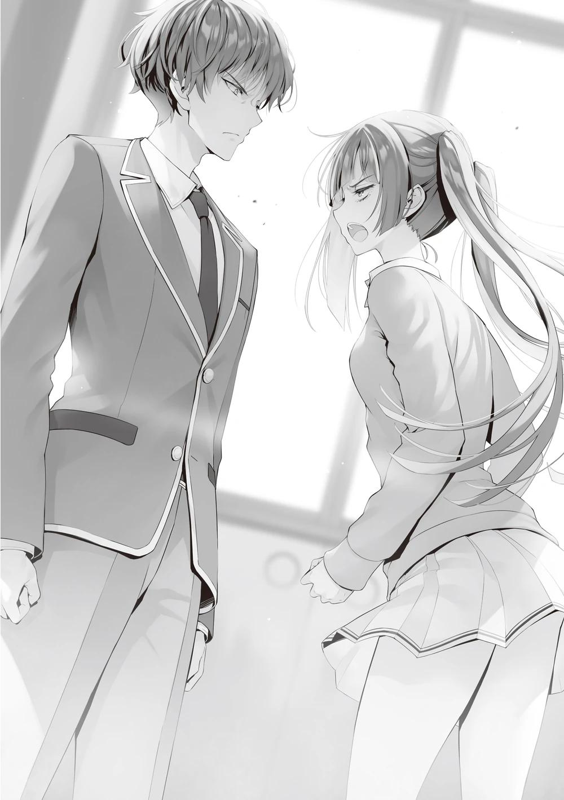
Después de año y medio, muchos de los alumnos de la clase de Horikita han visto expuestas sus debilidades.
Los que se anteponen a sí mismos como alumnos de honor y se despreocupan de que los demás sean expulsados.
Los que son incapaces de estudiar o debatir y recurren inmediatamente a la violencia.
Los que parasitan a los poderosos para llegar a lo más alto de la jerarquía.
Los que conspiran para expulsar a sus compañeros con el fin de borrar su pasado.
Esos estudiantes débiles de mente cayeron al suelo y luego subieron. Algunos de ellos ahora están mostrando un crecimiento increíble.
―...Así que Kanzaki-kun es de esta manera. Me sorprendió porque siempre estás muy tranquilo.
―...Estoy contigo. No sabía que tenías ese tipo de sentimientos.
La clase de Ichinose no ha tenido las dificultades obvias de la clase de Horikita.
Los alumnos se hacían heridas por una caída, y se les cuidaba y protegía por ambos lados para que no volvieran a caerse. Repetidamente ocupaban el lugar del alumno que se había lastimado la mano.
Con el tiempo, los alumnos lo entendieron. Deben tener cuidado porque se preocupan por ellos.
¿Por qué se cayeron? ¿Por qué se hicieron daño en la mano?
La verdad es que hay más dolor, pero se aferran a él en silencio para no causar preocupación.
El resultado es la clase de Ichinose, formada sólo por relaciones superficiales.
Es hora de que se hagan amigos de verdad.
Tras un rato de silencio, les dije a los dos:
―Pero, ¿qué deben hacer?
―¿Pero qué hacemos? ¿Cómo podemos seguir adelante? Aunque Himeno cambie de mentalidad, no tendrá sentido si no nos lleva al siguiente paso.
―No hay necesidad de apresurarse por una respuesta. Ustedes dos van a buscarla ahora.
―¿Buscar... qué?
―Un estudiante que, como tú, guarda sus verdaderos sentimientos en su interior.
Aunque no puedan encontrarlo solos, su perspectiva se ampliará muchas veces si ambos hablan del tema.
La adición del punto de vista de uno dará lugar a cualquier cantidad de nuevos descubrimientos.
―Si encontraras... a otra persona, ¿qué harías?
―Es sencillo. Entonces encontrarán tres. Y luego serán cuatro. Sigue así.
En poco tiempo, una pequeña chispa se convertirá en una gran llama.
E Ichinose será consciente de ello.
La clase está a punto de cambiar.
―No es demasiado tarde. Sean fuertes. Y derroten a la clase liderada por Horikita en el examen final.
Si lo hacen, aún tendrán un resquicio de esperanza para ascender a la clase A cuando pasen a tercer año.
―...¿Qué vas a hacer, Kanzaki-kun?
―Tienes que estar preparado para trabajar más duro de lo que puedas imaginar. Pero... no es una historia que no se pueda llevar a cabo.
Habiendo visto el ejemplo de la vida real, Himeno, nunca más podría afirmar que está sola en la clase.
Por otro lado, Himeno pudo confirmar de cerca la fuerte voluntad de Kanzaki.
―Tenemos el mismo deseo de graduarnos en la clase A. Hasta ahora, no podía decírselo a nadie, pero...
Cualesquiera que fueran las circunstancias, los pensamientos de Himeno fueron transmitidos a Kanzaki.
―Sí, sí. Supongo que nuestros objetivos no han cambiado en absoluto desde el principio.
A partir de este punto, los dos dieron un paso como niños hacia adelante.
―¿Sabes?... Después de escuchar la historia de Ayanokouji-kun, hay una chica por la que siento un poco de curiosidad. ¿Te gustaría ir a verla después de esto?
Kanzaki asintió enérgicamente ante la sugerencia de Himeno.
Soy un extraño, así que esta no es mi área de especialización.
―Ayanokouji, te pagaré esta deuda en el examen final.
Ganando y obteniendo el derecho a competir por la clase A es como pagas el favor que me debes hoy.
―La clase de Horikita es difícil, Kanzaki.
―Sí, supongo que sí. Lo siento... pero me voy, no quiero perder ni un minuto. No, ni siquiera un segundo.
Himeno asintió, luego sacó su celular, le dio la espalda a Kanzaki y comenzó a alejarse.
Había una parte de mí que estaba preocupada por si esos dos podrían cambiar o no, pero al parecer pueden tener más éxito de lo esperado.
Puede que realmente superen a la clase de Horikita en el examen de fin de curso.
De cualquier forma, no perjudica mis planes, pero es una cosa más por la que esperar.
UNA CARTA DE AMOR
Martes, 9 de noviembre.
Esta mañana, me encontré con Horikita en el ascensor de camino a la escuela.
Después de intercambiar un rápido saludo, salimos del vestíbulo y caminamos juntos fuera de la residencia.
―¿Te enteraste? El día antes del festival cultural, los alumnos de tercero van a hacer un ensayo igual que el de verdad.
―Sí, escuché que también están invitando a los de primer y segundo año a participar.
Esta es la información que se publicó anoche en el tablón de anuncios de la escuela, como para informar a todos los grados. La fuente de la información era el presidente del consejo estudiantil, Miyabi Nagumo. Probablemente a esto se refería Nagumo la semana pasada, cuando dijo que el consejo estudiantil haría una propuesta no tan mala.
La forma de participación la podíamos elegir nosotros. Podría ser un servicio de comida real o sólo una maqueta. Es sólo una propuesta para hacer ajustes para el festival del día siguiente en conjunto.
―El consejo estudiantil ya recibió cartas de participación de muchas clases. Estoy segura de que las clases que han estado manteniendo esto en secreto querrán obtener una evaluación de terceros antes del festival.
―Así que estás diciendo que más clases se lo están tomando de forma positiva.
―Creo que el hecho de que la clase A de 3er año alquilara el gimnasio y abriera su presentación al público fue un factor importante.
Anunciaron su actuación sin disimulo, y la demostraron de verdad. Además, la forma en que incorporaron las mejoras que surgieron de ese proceso se convirtió en un hecho bien conocido entre los alumnos matriculados en la escuela. Debía de haber un cierto número de alumnos que querían que este festival fuera un éxito y disfrutarlo como estudiantes, no sólo como una competición.
―Estoy segura de que la decisión del consejo estudiantil de pagar el material consumible y otros gastos también fue un incentivo adicional.
Aunque sólo se vaya a celebrar un festival preliminar, costará dinero. Habría que crear un presupuesto aparte del previsto para el festival, y la fuente de financiación sería, naturalmente, la recaudación de puntos privados de particulares.
No sería de extrañar que algunas clases renunciaran al evento si tuvieran que pagar de su bolsillo el ensayo, pero precisamente para eso estaba el consejo estudiantil. Si el consejo estudiantil sufragaba los gastos, no tendrían motivos para negarse. Ya se les había informado de que, si traían los recibos, se les reembolsaría con cargo al presupuesto del consejo estudiantil. Por supuesto, no había límite, pero sí una cuota de varias decenas de miles de puntos para cada clase.
―Vamos a participar, ¿no?
―Por supuesto. Toda la escuela sabe que va a ser un maid café. No hará daño hacerlo.
―Eso es verdad. Y con lo que le pasó a Ryuuen-kun y a los demás.
Horikita me lanzó una mirada significativa, a lo que asentí levemente y respondí.
―Veamos qué nos tienen preparado.
Sería una gran oportunidad para ver cómo Ryuuen desarrollaría el concepto.
―¿No crees que perderemos?
―No lo sé.
―Te ves con mucha confianza.
―No tengo confianza. Solo estoy haciendo todo lo que puedo.
―Eso es verdad. Aun así, ¿no sueles sentirte insegura?
Al parecer, a Horikita le preocupa que pueda perder, a pesar de estar totalmente preparada.
―Tal vez me asusta perder.
La derrota no sólo significa perder puntos de clase. Pero es igual de malo no ganar puntos de clase. Querer evitar estancarse es natural cuando se está en la dinámica de alcanzar la clase A.
―Quizá el año pasado no hubieras estado tan ansiosa.
―Fue una temeridad. Entonces no veía nada a mi alrededor.
Ahora, Horikita empezaba a ampliar un poco sus horizontes. Por eso no podía evitar pensar en perder.
―Como líder de la clase, no está mal estar preparada tanto para ganar como para perder. Yo sólo soy uno de los peones. Sólo hago declaraciones irresponsables.
Bueno, es el defecto y la fuerza de Horikita que no puede descartar fácilmente esa declaración. Si hubiera sido Sakayanagi o Ryuuen, la habrían escuchado y desestimado; si hubiera sido Ichinose, se lo habría tomado como si fuera lo único que importara.
Horikita tiene ambos aspectos.
―Lo sé, pero... a veces.
Le di un golpecito en la espalda a Horikita con la palma de la mano.
―¿Qué haces?
―Es demasiado pronto para acostumbrarse a ganar.
―No voy a...
Parecía un poco enfadada, pero también se dio cuenta de que había dado en el clavo.
―Fue una idea engreída, no el resultado de nada que yo haya hecho bien.
La isla deshabitada, el examen votación unánime, esas no fueron victorias apoyadas únicamente en la competencia directa.
―¿Quieres decir...?
―¿Qué?
―Intento no tomarme en serio todo lo que dices, pero últimamente colaboras mucho, lo cual es todavía más molesto. No sé cómo procesar esto en mi cabeza.
―Entonces, por favor, no cooperes conmigo para nada en el futuro.
Intenté alejarme rápidamente, pero me agarró por los hombros.
―Eso está prohibido.
Intenté separarme, pero inmediatamente me agarró y me trajo de vuelta.
―Me gustaría pasar por la tienda antes de ir a la escuela, ¿te gustaría acompañarme?
―¿Tienda?
―Me estoy preparando para el día antes del festival escolar, y quiero aprovechar al máximo mi descanso para el almuerzo de hoy.
―No me importa unirme.
Unos minutos en una tienda no serían un problema. Seguí a Horikita hasta la tienda de conveniencia y entré.
Allí me encontré con Koenji, que estaba a punto de pagar sus artículos. Sólo llevaba dos cosas: una botella de leche de soja y una ensalada de carne blanca.
Era una comida muy ligera para almorzar, pero me pregunté si la comería durante su descanso matutino. Como a Koenji rara vez se le ve comer, su vida privada sigue siendo un misterio para nosotros.
―Buenos días, Koenji-kun.
Horikita lo llamó, pero después de pagar sus cosas, Kōenji solo sonrió ligeramente y no intercambió ninguna palabra.
―Me enteré de que Koenji es el único al que no se le ha asignado trabajo para el festival cultural.
―Me dijo que no haría nada. Estoy segura de que no lo haré cambiar de opinión.
Horikita tampoco parecía especialmente preocupada y se dirigió a la caja registradora para elegir una comida rápida. Rechazó el ofrecimiento de la bolsa de plástico y la guardó en su propia mochila.
―¿No tenías nada que comprar?
―No tienen nada que necesite, y no me sobran puntos privados.
Noviembre me afectó un poco la cartera, pero tenía pensado cobrarlo pronto.
―Ya no pagas contribuciones a Kushida-san, ¿verdad?
―En realidad no, ya que no me ha cobrado por ello.
―¿Realmente pagarías si ella te cobrara?
―¿Crees que me cobrará?
Horikita me respondió con desagrado, murmurando:
―No, no lo creo. No quiero que vuelva para atormentarme.
Por muy distorsionada que esté, Kushida ha experimentado un profundo cambio.
Y tengo que creer que va en dirección al crecimiento.
PARTE 1
Ese día, después de las clases. Ichihashi se acercó con cierta vacilación a Horikita, que estaba sentada frente a ella.
―Um, Horikita-san... ¿Puedo tomarte un minuto?
Rara vez habla con Horikita, ya que no tiene una relación muy estrecha con ella.
Normalmente, uno pensaría que sería sobre el próximo festival... Sin embargo, el objeto en su mano implicaba algo diferente.
―¿Qué pasa?
―En realidad, tengo que pedirte un favor. Tienes trabajo del consejo estudiantil más tarde hoy, ¿no?
―Sí. Como le dije a la clase hace un rato, tengo trabajo del consejo estudiantil que hacer. No puedo ayudarte con el festival.
―Sí, bueno, no me refería a eso. ¿Puedes enviar esto, por favor?
Con estas palabras, ella presentó una carta. En la parte superior del sobre se veía una pegatina con un corazón.
―¿Qué es esto?
―Es una carta de amor...
―¿Eh?
No me extraña que pareciera desconcertada, por un momento incapaz de comprender el significado. Aunque vivimos en una época en la que se acepta la diversidad, es comprensible que una carta de amor de una chica a otra chica resulte molesta en otros aspectos aparte de los asuntos del sexo opuesto.
―Oh, no es que sea de mí para Horikita-san o algo así. En realidad, una de mis amigas me pidió que se la diera a Nagumo Miyabi, el presidente del consejo estudiantil.
―¿Al presidente del consejo estudiantil? ¿Pero no es algo que deberías dar en persona?
Si vas a confesarle tus sentimientos a alguien de quien estás enamorado, lo normal es que sea cara a cara.
―Me pidió que se la entregara porque estaba demasiado nerviosa para dársela ella misma. Pero yo tampoco tengo valor para entregársela en persona al presidente del consejo estudiantil...
Nagumo es una persona más sociable que, por ejemplo, el anterior presidente del consejo estudiantil, Horikita Manabu, pero seguía siendo un estudiante de grado superior y representante de esta escuela. Sería todo un obstáculo para alguien que no tiene contacto con él acercarse. Horikita, en cambio, era diferente.
Era fácil imaginarlos conversando sobre asuntos del consejo estudiantil a diario.
―Entiendo la situación, pero...
―Por favor. Ella ha estado luchando con ello durante mucho tiempo, y...
finalmente encontró el valor para hacerlo.
Si hubiera sido la Horikita de hace un año, podría haber rechazado esta petición.
Pero establecer relaciones con los compañeros de clase es importante para ella ahora. Para compensar la confianza perdida en el examen especial por unanimidad, no había más remedio.
―De acuerdo. Veré si de alguna manera puedo encontrar un hueco y dárselo de tu parte. ¿Te parece bien?
―Sí.
Respondió Ichihashi, pero parecía un poco cortante.
―¿Sigue habiendo algún problema?
―Um, bueno, hay un pequeño problema con esta carta de amor.
Al recibir la carta, Horikita se dio cuenta de que no había ningún nombre escrito ni en el anverso ni en el reverso. Esto significaba que el remitente era desconocido hasta que echó un vistazo al contenido.
―¿Puedo suponer que dentro está escrito de quién es esta carta?
―No lo sé... Si fuera normal, me imagino que estaría escrito. Esa chica, si sólo estaba contenta de decirle lo que siente, quizá no lo haya escrito.
En otras palabras, ni el que la entrega ni el que la recibe conocerían al remitente de la carta de amor.
―Eso es un poco difícil de aceptar. Por supuesto, se lo explicaré cuando se la dé, pero si no tengo cuidado, podría confundirla con una carta mía.
Decir que la recibió de otra persona a pesar de que en realidad era una carta de ella misma... la posibilidad de que Nagumo se lo tomara así no se puede decir que fuera nula.
―Bueno, entonces, ¿no puedes pedírselo a otra persona? Como a un chico que conozcas del consejo estudiantil o... ¿No? Me gustaría que de alguna manera la entregaras hoy.
―Es fácil para ti decirlo... ―A pesar de su preocupación, Horikita se lo pensó un momento y asintió.
―Haré lo que pueda, pero no hay garantías de que pueda dársela, ¿de acuerdo?
―Me alegro de que hayas aceptado. Seguro que se pondrá muy contenta.
Aunque de mala gana, Horikita aceptó entregar la carta de amor a Nagumo.
Normalmente, le habría preguntado de quién era la carta, pero a Horikita no le interesaba y no trató de indagar en profundidad.
PARTE 2
Debido a la inesperada petición, mis pasos eran un poco... más pesados, si no del todo pesados.
―¿Por qué no se la da ella?
Fue un error aceptar. ¿Cómo podía yo, una persona intrascendente en este asunto, tener semejante tarea? Debería dar media vuelta y decirle a Ichihashi-san que se lo diera en persona.
―Eso sería lo correcto.
Cuando el pensamiento de escapar cruzó mi mente. De repente recordé la vez que intenté darle una carta a mi hermano que había decidido ir a la preparatoria.
Fui una tonta en el pasado, sin darme cuenta de que él había sido frío conmigo y deseaba desesperadamente volver a los viejos tiempos en los que estábamos unidos. Pensé que si no podía hablar con él cara a cara, podría plasmar mis sentimientos en una carta. Pero la pluma en mi mano no se movía con la misma fluidez que en mi cabeza.
Durante días y días, pensé y me pregunté, escribiendo y borrando una y otra vez.
¿Cómo podía transmitir mis sentimientos?
¿Cómo podía hacer feliz a mi hermano?
Me costó escribir la carta. Y al final... no pude dársela. Mi hermano dejó la escuela y ya no puedo verlo ni ponerme en contacto con él.
―Me pregunto qué pasó con esa carta...
Al escarbar en mi memoria, recordé haberla guardado en el cajón del escritorio de mi hermano.
―¿Y si mi hermano va a casa y la ve?
Me detuve en el pasillo y sentí que mi corazón se aceleraba de repente. Si mi hermano viera ahora una carta así, se reiría de mí.
―Debería olvidarme de eso.
Aunque me ponga nerviosa aquí y ahora, no puedo deshacerme de la carta y hacer como si nunca hubiera ocurrido. Ahora lo único que puedo hacer es esperar que mi hermano no la encuentre.
Recordando la espalda de mi hermano desde fuera de la ventana, decidí juntar las manos.
―Así es.
No es fácil escribir una carta a alguien a quien quieres. Y si tienes que entregársela directamente, el obstáculo es aún mayor. Incluso ahora, si me preguntaran si puedo escribir una carta a mi hermano, me resultaría difícil dar
una respuesta inmediata. No sé quién es ni de dónde viene, pero su objetivo es el presidente del Consejo Estudiantil, Nagumo Miyabi. Entiendo sus sentimientos de timidez.
De alguna manera, encontré una excusa para dársela y llegué a la sala del consejo estudiantil. Cuando abrí la puerta, todos los miembros del consejo ya estaban allí excepto el presidente Nagumo. Había tres chicos presentes, Yagami-kun, estudiante de primer año, Aga-kun, también estudiante de primer año, y Kiriyama-senpai, el vicepresidente de tercer año.
Sin embargo, no sería posible que cualquier chico hiciera lo que necesito. No podría simplemente confiarles la tarea de entregar cartas de amor, que ni siquiera es una responsabilidad del consejo estudiantil.
Sin embargo... yo era relativamente cercana a Yagami-kun. Hablo con él con bastante regularidad. Sabía que me estaba aprovechando de mi posición como senpai, pero no podía darle la espalda a esta carta. Yagami-kun estaba sentado y charlando con Ichinose-san.
Eché mano a la carta de amor que tenía en el maletín, con la esperanza de quitarme rápidamente de encima el asunto problemático. Pero justo entonces, el presidente del Consejo Estudiantil, Nagumo, apareció en la habitación.
―La reunión comenzará inmediatamente. Tomen asiento.
La voz del Presidente del Consejo Estudiantil Nagumo era tan oscura y pesada como parecía. Sentí que el aire se volvía instantáneamente tenso y rígido y volví a poner la mano en mi mochila.
No había manera de que pudiera decir que me pidieron que entregara una carta de amor en estas circunstancias.
―Ichinose, si tienes algo de lo que informar, escuchémoslo.
―Sí. Parece que se decidió que todas las clases participarán en el ensayo el día antes del festival.
―¿Se decidió en casi medio día? Parece que la decisión del presidente del consejo estudiantil fue correcta. Sin embargo, si la decisión fue tomada por el
consejo estudiantil, me hubiera gustado que nos informaran un poco antes
―Kiriyama-senpai, el vicepresidente, hizo un comentario espinoso.
―Es sólo una idea. Pensé que empezar un poco antes haría felices a los alumnos menores ―El presidente del consejo estudiantil, Nagumo, respondió sin ninguna disculpa en particular.
Tal escena de la reunión del consejo estudiantil se estaba convirtiendo en algo habitual.
Básicamente, las cosas dirigidas por el consejo estudiantil empezaban con una idea del presidente del consejo estudiantil Nagumo. A veces nacían de un comentario hecho durante la reunión, y otras veces se creaban sin nuestro conocimiento.
Entonces se hizo un silencio repentino, y el presidente del consejo estudiantil Nagumo tenía los brazos cruzados y los ojos cerrados. Era obvio que estaba conteniendo su ira.
―Um, ¿qué pasa, Nagumo-senpai...?
―Escuchen, me enteré de un rumor extraño.
―¿Rumor...?
―No está probado, pero había un tipo, Kishi, que decía que yo apostaba mucho dinero para que expulsaran a ciertos alumnos de la escuela.
―¿Qué? ¿Qué quieres decir?
No es de extrañar que Ichinose-san preguntara en respuesta. Yo tampoco pude entender inmediatamente el significado de lo que dijo el presidente del Consejo Estudiantil Nagumo.
―¿Quién te dijo esas tonterías?
―Alguien de tu clase, Kiriyama.
El Presidente del Consejo Estudiantil Nagumo lanzó esas palabras al Vicepresidente Kiriyama con los ojos cerrados.
―¿De mi clase?
―Es sólo un rumor de mis amigos, aunque no sería extraño que estuvieras al tanto.
―Lo siento, eso es nuevo para mí. Para empezar, no entiendo por qué apostarías mucho dinero para que expulsaran a alguien.
Normalmente, los estudiantes utilizan grandes sumas de dinero para cambiar a alguien en particular a una clase "A". Si se refería a eso, no es difícil de entender, ni siquiera para mí. Especialmente para los estudiantes de tercer año, las probabilidades estaban en su contra, y si accedían a la clase del presidente Nagumo, tenían prácticamente garantizada una clase "A". Es posible, a falta de una palabra mejor, que el presidente del Consejo Estudiantil Nagumo haya ofrecido en secreto puntos privados a aquellos con los que tiene una relación estrecha, dándoles derecho a pasar a su clase.
―Es sólo un rumor. Pero no estoy dispuesto a quedarme de brazos cruzados y dejar que las acusaciones contra mí queden sin respuesta.
En efecto, como presidente del consejo estudiantil, esos rumores podían perjudicarlo de un modo u otro. Es comprensible que esté visiblemente de mal humor.
―El consejo estudiantil será suspendido por un tiempo.
―¿Suspendido...?
Ichinose-san estaba sorprendida por esta inesperada propuesta del presidente del consejo estudiantil Nagumo.
El consejo estudiantil solía reunirse así una vez a la semana y discutir repetidamente varios temas. Las únicas excepciones eran durante los periodos de exámenes y algunos exámenes especiales. No era habitual suspenderlas durante el curso escolar normal.
―También hemos terminado de discutir el festival cultural. No debería haber problemas.
―¿Vas a buscar a los culpables?
―Por supuesto, los buscaremos a conciencia. La próxima reunión se celebrará después del festival.
Seguimos hablando de la víspera del festival y nos marchamos poco después.
Me levanté de mi asiento y me dirigí hacia Yagami-kun.
Tal vez al sentir que me acercaba, levantó la mirada de su cuaderno, paró la mano y la cerró. Es el secretario del consejo estudiantil, así que lleva los registros. Los demás alumnos abandonaron la sala del consejo estudiantil antes que yo, cosa que agradecí.
Cuando nos quedamos solos, decidí llamarlo.
―¿Podemos hablar?
Yagami-kun se volteó hacia mí después de mirarme un poco sorprendido.
―Perdona, ¿seguías escribiendo?
―No, acabo de terminar. No te preocupes ―Puso la mano ligeramente sobre el cuaderno cerrado y me sonrió.
―¿Pasa algo, Horikita-senpai?
―Yagami-kun. ¿Puedo pedirte un favor un poco irracional?
―¿De qué se trata?
―Quiero que le des esto al presidente del consejo estudiantil. Es una carta de amor.
Saqué la carta de amor y se la presenté a Yagami.
―Eso es muy raro hoy en día. La mayoría de las veces parece que se hace a través del chat o de llamadas telefónicas... ―Cuando la recibió con cara de sorpresa, me apresuré a añadir.
―Para que lo sepas, no es de mi parte.
―Ya veo. Creía que era una carta de amor de Horikita-senpai... ¿O se la doy como tal?
―No, no es eso. Una chica de mi clase me pidió que se la diera.
―No hay nombre del remitente. ¿De quién es la carta de amor? Se lo diré.
―No puedo decírtelo. Quiere permanecer en el anonimato.
―¿Es una carta de amor anónima...?
―Me pidió que se la pasara como miembro del consejo estudiantil, pero está el tema del anonimato, y si se la doy, podría pensar que es mía, ¿no?
―Es muy posible. Para ser honesto, todavía tengo un poco de duda de que Horikita-senpai no la haya escrito.
Yagami-kun sonrió un poco divertido, pero para mí no lo era en absoluto.
―Sólo estoy bromeando. Dada la cara de asco de senpai, sé que no es verdad.
Eso espero.
―En realidad, habría sido más fácil si te lo hubiera dado antes de que llegara el presidente del consejo estudiantil Nagumo...
―Aunque me lo hubieras dado, no creo que hubiera sido capaz de entregársela. No parecía el tipo de ambiente para dar una carta.
―Sí, era inevitable.
Dadas las circunstancias, nadie podía hablar con el Presidente del Consejo Estudiantil Nagumo.
―Siento pedirte que hagas esto, pero ¿podrías entregarla lo antes posible?
Estoy segura de que piensan que la entregaré hoy.
―En ese caso, visitaré el dormitorio más tarde ―Yagami-kun miró fijamente la carta de amor mientras parecía un poco desconcertado―. ¿Esto es realmente una carta de amor?
―Probablemente. Creo que dijo que puso sus sentimientos, pero no puedo estar segura.
No podía despegar el sello para ver lo que había dentro.
―Si se la doy como carta de amor y resulta ser otra cosa, creo que será una falta de respeto al presidente del consejo estudiantil.
―Eso podría ser posible.
―Lo pondré de forma algo vaga, diciendo que recibí la carta de alguien.
―Sí, creo que es una buena idea. Gracias.
Le agradecí su sincera aceptación.
―Por cierto, incluso en los tiempos que corren, es difícil para un secretario trabajar con notas escritas a mano, ¿no?
No hay nada malo en utilizar una computadora para trabajar en nuestros días.
―La tradición también es importante. Parece que las notas se llevan archivando desde que se fundó esta escuela. Si de repente cambiamos a digital, creará una sensación de incomodidad.
Yagami-kun se dio la vuelta y se quedó mirando la estantería. Sin duda, hay muchos registros que revelan la historia del Consejo Estudiantil. No sería necesariamente malo que los archivos del Consejo Estudiantil fueran sustituidos por un disco, pero Yagami-kun tenía razón. Tal vez esto es exactamente lo que debemos continuar si valoramos la tradición.
―También escuché que es mejor tener dificultades mientras eres estudiante. Si te acostumbras pronto a la vida fácil, puedes sufrir más tarde.
Yagami-kun manifestó una respuesta ligeramente madura, no como un estudiante de primer año de preparatoria.
―En ese sentido, esta carta de amor es similar.
Es cierto que hoy en día no es raro confesar los sentimientos usando el celular.
Pero puedo entender que hay un cierto significado en transmitir tus sentimientos a través de tus cartas.
―Aun así, el presidente del consejo estudiantil de hoy, Nagumo, no parecía tener mucho tiempo libre, ¿verdad?
―Sí. Está apostando mucho dinero para expulsar a los estudiantes,
¿verdad? Según recuerdo... Cómo se llamaba...
Como si recordara algo, Yagami-kun abrió su cuaderno y me lo mostró. La primera página que pasó era de mediados del año pasado, y parecía algo que un estudiante actual de tercero habría escrito en su segundo año. Luego cambió el tipo de letra y pasó a las notas más recientes.
Lo reconocí al instante porque las notas, que parecían haber sido escritas por Yagami-kun, estaban redactadas de una forma perfecta y ordenada que demostraba su meticulosidad. Y la escritura era tan pulida que costaba creer que estuviera escrita a mano.
―Ahí está. Dijo que este Kishi-senpai podría haber extendido un rumor.
¿Sabes en qué clase está Kishi-senpai?
Yagami-kun me preguntó con la misma expresión de siempre, mostrándome los registros de la reunión. Pero mi cerebro fue arrastrado a otro reino de golpe.
Estos caracteres.... se parecen mucho a los de aquella carta que casi se me había borrado de la memoria.
¿Era la persona que me presentó la carta durante el examen de la isla deshabitada? Contuve mi mirada, que estaba a punto de desdibujarse por la agitación, y llegué a las notas de la reunión de hoy. Miré a Yagami-kun desde una perspectiva más amplia y vi que seguía mirándome con la misma sonrisa.
No podía ser... Pero... No, no puede ser.
En medio de un torbellino de emociones, pienso mientras sigo fingiendo que miro las notas.
―¿Horikita-senpai?
―Lo siento, no lo sé, pero deberías ser capaz de averiguarlo bastante rápido si miras la OAA.
―Claro, ahora mismo lo busco.
―Lo siento, pero acabo de recordar algo que tengo que hacer. Te dejo con ello.
―¿En serio? Entiendo.
Aparté la mirada de él y me giré rápidamente como si fuera a salir corriendo.
―Bueno, entonces, lo siento, pero necesito que te encargues de mi carta para el presidente del consejo estudiantil.
―Sí, senpai. Gracias por tu duro trabajo, Horikita-senpai.
Si me hubiera mirado fijamente entonces, probablemente se lo habría preguntado. Sabía en mis entrañas que tenía que evitarlo. Salí por la puerta que comunicaba con las salas del consejo estudiantil y la cerré lentamente.
Justo antes de que estuviera a punto de cerrarse, vi a Yagami-kun sonriéndome a través del mínimo resquicio de la puerta. Me miraba con una sonrisa, como si me estuviera poniendo a prueba.
Era como si me desafiara con una pregunta: "¿Te diste cuenta?". Era como si quisiera provocarme. De lo contrario, no se habría tomado la molestia de abrir el cuaderno y enseñarme la letra.
La puerta se cerró de golpe.
No podía negar la posibilidad de que la letra fuera por casualidad la misma.
Como había pasado cierto tiempo desde que vi aquellas cartas, mi memoria estaba borrosa.
Aun así, la letra era lo suficientemente parecida como para estar segura de la razón del parecido. Si asumo que era la persona que me escribió esa carta...
Entonces esa persona estuvo a mi lado durante mucho tiempo mientras se comportaba de forma indiferente.
Al mismo tiempo, me pareció que esta suposición era muy realista.
REUNIÓN ANTES DEL FESTIVAL
Los días pasan rápido, y llegó el viernes 12 de noviembre. El día anterior al festival llegó después de las clases.
Todas las clases se han estado preparando para el festival. Hoy después de la escuela es el ensayo dirigido por el consejo estudiantil. Será un ensayo importante para la actuación de mañana.
Todos los compañeros de clase, excepto unos pocos, comenzaron a moverse a la vez para comenzar los preparativos. Hay un total de cuatro puestos en la clase de Horikita. El primero es el conocido maid café, donde las principales ventas son té, café y otras bebidas, además de sesiones fotográficas con las sirvientas. Este último método de venta es especialmente eficiente en cuanto a tiempo, y el precio unitario se fija elevado, por lo que si hay un gran número de solicitantes, será una gran fuente de ingresos. El segundo y el tercero son puestos al aire libre que venden comida preparada con harina (takoyaki, okonomiyaki, etc.) y puestos de pasta y pan al estilo occidental. Los puestos generan ventas por sí solos, y el maid café también recibe pedidos. Cuando se hace un pedido, un estudiante encargado de la entrega va al puesto y se lo lleva al cliente. Para aprovechar la originalidad del maid café, también se prepara un menú de comida limitado, que es una ligera modificación del menú existente que se ofrece en el puesto de comida. Y por último, el cuarto y último evento es un concurso de preguntas al aire libre para niños, que se añadió con muy poco tiempo gracias al presupuesto extra.
―¿No hicieron venir a Hasebe-san y Miyake-kun? ―preguntó Maezono mientras sus ojos seguían a Haruka y Akito, que acababan de salir del aula.
―No tiene sentido obligarlos a nada. Consideremos esto una buena oportunidad para probar si 35 personas, excluyendo a Koenji-kun, Hasebe y Miyake, pueden quedarse solas sin problemas.
Pero esos tres no son los únicos que no están dispuestos a cooperar. Kushida apenas ha interferido en las actividades del festival en las semanas previas al evento, y se ha ido a casa inmediatamente después de clase sin ayudar. Sabe que será la encargada de servir a los clientes como sirvienta en el festival, y varias veces ha ido a ver a Horikita para proponerle ideas. Algunas de ellas incluso fueron adoptadas, aunque se trata de elementos menores.
Sin embargo, no ha participado en ninguna sesión de práctica con otras sirvientas para asegurarse de que todas están de acuerdo.
―Me gustaría hacer algunas comprobaciones finales para el evento de mañana y también practicar mis actividades del día. ¿Crees que tendrás tiempo hoy? ―gritó Satou, con cierta valentía, intentando en la medida de lo posible no bajar la guardia. Kushida, que acababa de levantarse de su asiento, se detuvo y se giró en el acto.
―Lo siento, Satou-san. Es que después de clase tengo algo que no me puedo perder.
No era la primera vez que Kushida decía eso.
―Escucha, sigues rechazándome de esa manera. ¿Cuándo vas a colaborar en serio?
El ambiente se estaba agriando, y Horikita estaba a punto de levantarse de su asiento, pero Yousuke, que estaba a su lado, la detuvo como si lo hubiera previsto.
No sé quién tenía razón. Sin embargo, es imposible crear una clase tranquila si interferimos en todo. A veces las cosas tienen que resolverlas las personas implicadas. Se puede decir que este es un comportamiento poco característico de Yousuke, que normalmente presta más atención a sus palabras que a las de los demás... Quizá porque sentía que mostrar innecesariamente a la clase el trato especial de Horikita hacia Kushida era una mala jugada.
Por supuesto, Horikita lo entendía, pero también tenía un dilema que no podía dejar pasar.
―No te preocupes, tengo el festival en mente, y no voy a perjudicar a la clase.
―Pero, Kushida-san, no has practicado, ni siquiera un poco. No puedo confiarte el importante papel de sirvienta.
El ensayo de hoy será la práctica perfecta. Satou, que se había mostrado reacia a participar, es incapaz de echarse atrás hoy. Del mismo modo, Kushida había sido aún más reacia y no parece que vaya a ceder hoy tampoco.
―Entonces, ¿por qué no me quitas? No creo que haya otras candidatos decentes.
Un comentario despiadado, pero justo. Incluso teniendo en cuenta la apariencia de Kushida, una estudiante que no esté haciendo actualmente el papel de sirvienta no podría servir como sustituta.
―Te veré mañana en el festival. Adiós.
Aunque su tono de voz era el mismo que el de la gentil Kushida, sus acciones podían tomarse como frías. Rechazó la propuesta de Satou hasta el final y abandonó el aula.
¿Simplemente no quería pasar tiempo con compañeros de clase que conocen su verdadera naturaleza? ¿O era realmente que tenía algo que no puede perderse? Obviamente, el ambiente en el aula se deterioró, pero eso no se puede evitar.
―Oye, Horikita-san. Mañana es el festival, pero sigo pensando que deberíamos sacar a Kushida-san...
Matsushita, incapaz de soportar la expresión del rostro abatido y frustrado de Satou, se dirigió directamente a Horikita
―Sé lo que quieres decir. Pero de momento no tengo intención de eliminarla.
―Pero parece mentira que tenga que hacer cosas todos los días, ¿no?
En efecto, el comportamiento de Kushida últimamente ha sido bastante desconcertante. No se puede evitar que haya mantenido las distancias con los demás desde el examen especial votación unánime, pero aun así, su actitud poco participativa ha sido llamativa.
―Puede ser. Tampoco sé por qué no participa en los ensayos.
―Entonces...
―No te preocupes. Ella está pensando en el festival y en el maid cafe a su manera. Sólo cree en Kushida-san.
―Bueno, podría decirse que no llegaremos a ninguna parte si no creo en ella... ―Matsushita parecía poco convencida, pero asintió y se volteó para seguir a Satou.
Matsushita, tal vez porque esta vez fue uno de los miembros fundadores, también se esforzaba mucho. Aunque es cierto que la no participación de Kushida en los ensayos es motivo de preocupación, la expresión de Horikita no mostraba señales de impaciencia. Más bien, parecía como si estuviera mostrando una confianza justificada. Probablemente por eso Matsushita retrocedió.
Ya que no estaba pidiendo ayuda, observemos y esperemos.
PARTE 1
En la primera planta del edificio especial, puesto número "Especial 02".
Los alumnos decoraban este espacio, que normalmente se utiliza como aula vacía.
El trabajo lo realizan principalmente las chicas, con la ayuda de los chicos.
Curiosamente, las chicas son, con diferencia, las mejores en este tipo de decoración. Sin duda, es seguro dejarles el montaje a ellas, con Horikita a la cabeza. En la parte trasera del aula especial de la segunda planta, los preparativos para el café conceptual no cesaban.
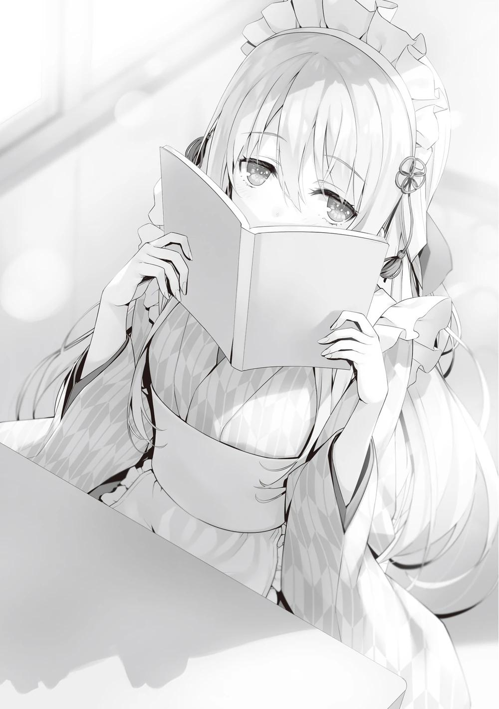
A diferencia de nuestro maid café, el concepto de la clase de Ryuuen era "Estilo tradicional japonés". La comida y las bebidas también eran completamente diferentes a las nuestras, incluyendo dulces japoneses y té. Mientras se realizaban los preparativos, nos encontramos con una presencia singular. Había una chica sentada sola en una silla leyendo un libro vestida con kimono.
―Hola ―Al fijarse en mí, Hiyori levantó su libro y, por alguna razón, ocultó todo menos su mirada.
―Ha pasado un tiempo. Me enteré de que no has aparecido por la biblioteca últimamente.
―No es que no haya ido. Es que, ya sabes, cambié un poco mi horario.
Me pareció raro que un ratón de biblioteca desapareciera de la biblioteca, pero supongo que simplemente cambió su horario de visitas.
―Parece que también trabajarás.
―Me especializo en la facturación. No se me da muy bien relacionarme con la gente. Tampoco se me da muy bien moverme, y practiqué a llevar comida en una bandeja, pero no funcionó.
En resumen, no se le da muy bien nada en general. Sin embargo, trabajar como cajera no es difícil y si ella puede manejarlo sin problemas, estará bien.
―Por cierto, Ibuki-san se unirá a nosotros.
―¿Ibuki? Tenía la imagen de que ella nunca llevaría este tipo de traje.
―Escuché que tuvo un duelo con Ryuuen-kun por la exención completa de ayudar en el festival.
―Y perdió.
Hiyori sonrió un poco divertida como si estuviera recordando aquella vez.
―Entonces, ¿dónde está esa Ibuki que perdió?
―Hoy no va a participar. Dijo que odia completamente vestirse así fuera del festival.
Puedo entender ese sentimiento, pero espero que pueda servir bien a sus clientes cuando salga en el momento. Bueno, Ryuuen tratará esos asuntos de una manera flexible.
Quería saber cómo estaba Ryuuen, el dueño del restaurante, pero no pude verlo.
Me pregunté si dejaba los preparativos del ensayo a otros estudiantes.
―Parece que Ryuuen-kun fue a revisar la Clase A.
―¿Clase A?
―Porque no han revelado qué tipo de presentación van a hacer.
En efecto, los detalles de la clase de Sakayanagi se desconocían hasta el día anterior al festival. No es extraño querer averiguar qué van a hacer. Mientras todas las clases estuvieran participando en esta preapertura el día anterior, no cabía duda de que se estarían preparando para abrir un puesto en algún lugar.
―Yo también voy a ir un rato.
Después de hablar con Hiyori, decidí buscar la clase de Sakayanagi.
―Um, Ayanokouji-kun...
―¿Hmm?
―Ryuuen y los demás subieron al tercer piso, así que creo que ahí es donde Sakayanagi-san fue.
―Ya veo, eso me ahorra la molestia.
Al parecer quería decir algo más, pero Hiyori sacudió inmediatamente la cabeza de un lado a otro. Tres clases de segundo año concentradas en un ala especial,
¿y aún así están en plantas diferentes?
―La próxima vez volveré a presentarme en la biblioteca, así que hazlo tú también, Ayanokouji-kun.
―Sí, lo haré.
Levanté la mano para despedirme, y luego subí al tercer piso. El tercer piso del ala especial es el más alejado de la puerta de la escuela y el más difícil de acceder. Aquí había tres aulas disponibles, pero hasta el día anterior no eran populares y no se habían alquilado.
―Sin embargo, no pensé que la clase de Sakayanagi alquilaría todo allí.
Como actualmente es una planta exclusiva, los alumnos de 2º año de la clase A deambulaban a su antojo por los pasillos de la tercera planta. A primera vista, es difícil imaginar qué tipo de exhibición están intentando montar. Sólo había varias
cajas de cartón esparcidas, cuyo contenido no era visible, y los alumnos seguían vistiendo sus uniformes escolares. Como es imposible cocinar en el interior debido a la normativa contra incendios, ese ámbito desaparece.
―¿Sorprendido por lo inesperado? ―Hashimoto, que supuestamente estaba vigilando a los estudiantes que se acercaban, se aproximó y exclamó.
―¿Qué es todo esto?
―¿Ni siquiera puedes entender lo que estás viendo? ―Hashimoto se rio en voz baja, quizá divertido de que yo no lo entendiera―. Bueno, es comprensible. Pero no puedo responderte de forma sencilla.
Supongo que pretenden terminar los preparativos el día anterior, pero no tienen intención de hacerlos públicos. Como para simbolizarlo, en las escaleras que llevan a esta planta hay un cartel.
Decía: "Debido a un problema, la clase A de segundo año no presentará hoy sus actividades".
―Eso es lo que significa. Siento que hayan tenido que venir hasta aquí, pero voy a tener que pedirles que se marchen.
Aunque insistiera, seguiríamos sin poder averiguar los detalles de la exposición.
―Parece que Ryuuen también se irá pronto.
Ryuuen salió de un aula del fondo y caminó hacia nosotros con las manos en los bolsillos. Tras echarnos un rápido vistazo a Hashimoto y a mí, cruzó directamente y se dirigió escaleras abajo.
―¿O vas a hacer lo mismo que él y echar un vistazo más de cerca, aunque sepas que es inútil?
―Voy a volver.
―Buena suerte. Tendrás que esperar a que abramos para ver qué pasa.
Iba de vuelta a la segunda planta cuando me di cuenta de que Ryuuen se había girado hacia mí y se detuvo. Giré la mirada y lo miré directamente a los ojos.
Ryuuen levantó ligeramente la comisura de los labios antes de abrirla.
―Dile a Suzune que será nuestra clase la que gane mañana.
―Seguro que los atuendos japoneses cuestan más que los uniformes de sirvienta, ¿no? Si vas a retarla a un combate, a estas alturas, podrían haber trabajado juntos.
―Es simplemente mi gusto.
Después de responder con palabras que podían tomarse tanto en serio como en broma, Ryuuen comenzó a alejarse. Sin prestar atención a la presencia de Hashimoto desde el piso superior, yo también me dirigí de nuevo al maid café.
PARTE 2
Sorprendentemente, muchos chicos de otras clases corrieron al restaurante en cuanto abrió. Más que comer, los curiosos querían ver a las chicas disfrazadas, lo cual nos pareció bien. Sería una buena experiencia para las sirvientas, que no están acostumbradas a ser el centro de atención.
Incluso Matsushita, que normalmente es muy tranquila, se movía un poco rígida y parecía nerviosa. Los movimientos de Satou y Mii-chan parecían mucho más lentos que durante los entrenamientos.
Inmediatamente después, el sonido del plástico rebotando en el suelo se extendió por toda la clase. Fue causado por Mii-chan al deslizarse un vaso de agua sobre la bandeja. La persona en cuestión se quedó helada ante el fuerte suceso que hizo que el aire se partiera en dos. En medio de todo esto, fue Matsushita quien se movió inmediatamente.
―Lo siento muchísimo.
Tras palmear suavemente a Mii-chan en el hombro con tono tranquilo, le indicó que trajera agua fresca. Luego trajo un trapo para limpiar el suelo.
―Lo estás haciendo muy bien, Matsushita-san, no puedo creer que sea tu primera vez como sirvienta.
―Gracias.
Horikita, que estaba de pie observando, también estaba impresionada por las extraordinarias acciones de Matsushita.
―Mañana también participarás como sirvienta, ¿verdad?
―Básicamente, como encargada. También serviré a los clientes dependiendo de la situación, pero sinceramente no estoy segura ―A diferencia de lo habitual, Horikita respondió con cierta timidez.
―Bueno, nadie cree que seas buena mostrando una sonrisa, así que buena suerte ―dije volviéndome hacia Horikita.
Estoy seguro de que no le preocupa el servicio en sí, pero ofrecer una sonrisa puede ser todo un reto.
―Pareces bastante cómodo.
―Es casi como si el trabajo de aquí estuviera terminado hoy.
Es como un 90% de preparación y un 10% de producción, y lo único que tenemos que hacer mañana es el papeleo".
―Tal vez debería reasignarte también a los puestos.
―No me reasignes sólo por una queja personal.
Horikita empezó a decir algo desagradable, pero rápidamente se retractó porque no hablaba en serio.
―Por ahora, parece que Matsushita-san estará bien, y yo me iré un rato.
―¿Vas a observar?
―Quiero ver con mis propios ojos qué tipo de entretenimiento habrá.
―Tómate tu tiempo ―Mientras tanto, yo trabajaría en hacer espacio para la sala de espera de mañana.
Alrededor de una hora más tarde, Horikita regresó al maid café.
―Ya estoy de vuelta. ¿Cómo van las cosas?
―Hubo algunos pequeños errores, pero ya estamos todos instalados y acostumbrándonos a todo.
―Gracias por la preparación previa.
Sin este ensayo, podríamos haber corrido peligro si hubiéramos improvisado.
Sabía que practicar sin público era completamente diferente a hacerlo realmente con una audiencia ajena. Matsushita, que había estado trabajando a tope desde la inauguración, se recompuso y se acercó a mí.
PARTE 3
Los alumnos de primer año y algunos de tercero organizaban una serie de espectáculos que parecían puestos de un festival. Algunos de ellos incluían la intervención tecnológica, como tiro al blanco, lanzamiento de anillas o lanzamiento de canicas sobre una plataforma hecha a mano para ganar premios a varias puntuaciones. La colección de premios hacía que la escena se pareciese un poco a la sala de un festival.
―¡Oh, son Yukimura-kun y los demás!
Kei fue la primera en señalar y encontró a Keisei, Sotomura y los otros chicos preparándose afanosamente para el evento. Tal vez porque habían practicado horneando comida en sus dormitorios, parecían hacerlo con cierta destreza. No los interrumpamos hablándoles despreocupadamente.
―¿Probamos a lanzar las anillas?
―¡Lo intentaré! Oh, ese peluche es muy lindo. Puede que quiera uno
―Gritó Kei y señaló por detrás a un alumno que lo estaba intentando primero.
Era un bonito premio, un oso de colores.
Pero, por desgracia, el lanzamiento de anillas era una demostración. Aunque tuvieran éxito, no recibirían ningún premio. Aunque el consejo estudiantil tenía un presupuesto para el evento, el número de premios era limitado.
Si los alumnos se llevaban hoy los premios a casa, sería difícil reponerlos. Por otro lado, el juego de tiro que la clase B de 1º curso estaba organizando enfrente
parecía ofrecer caramelos como premio, y los regalaban si los invitados tenían éxito. Los premios eran baratos, a partir de 10 puntos, e incluso los más caros valían unos 200. Supongo que mañana habrá otros premios aparte de los dulces, pero así la prueba sería tan buena como la de verdad.
―¡Pruébalo, Kiyotaka! ―Me instó a intentarlo y me empujó ligeramente frente a una mesa donde había cinco pistolas de tiro colocadas en fila.
Me interesaba el juego de tiro al blanco, así que estaba dispuesto a probarlo. Te dan cinco balas por juego. Las pistolas parecían ser un tipo de juguete llamado pistola de corcho, que se rellenaba con corcho y disparaba. Cada una de las pistolas alineadas en la mesa se veía más pesada de lo que esperaba. Las balas, sin embargo, tenían una forma distorsionada, y era dudoso que pudieran dispararse con precisión. Nunca he tenido un arma en las manos desde que nací.
Tengo una vaga imagen de ella, sacada de películas y series de televisión, pero no estoy seguro de que se corresponda con la realidad.
Ni siquiera puedo ver un ejemplo porque no había otros estudiantes participando en el evento. Así que, desde mi imaginación, agarré la pistola que estaba en medio de la habitación y la levanté.
―Apunta al más caro.
Para tirar el surtido de caramelos de mayor precio, tengo que disparar a un gran peso. Me pregunto cómo de potente es realmente. Intentémoslo primero.
El primer disparo se produjo mientras recibía los vítores entusiastas de Kei. Con un ligero "pop", la bala de corcho salió disparada y se acercó al objeto que había fijado como objetivo.
Sin embargo, la bala pasó unos centímetros a la izquierda sin demora. Mi percepción era que debería haber dado en el blanco con una precisión milimétrica, pero la trayectoria fue completamente diferente. Entonces, desplacé la boca del cañón unos centímetros hacia la derecha y disparé una segunda vez.
Pensé que había corregido perfectamente la trayectoria, pero esta vez pasó en diagonal hacia la derecha y falló.
―Esto es muy difícil...
Cuando estaba cargando el tercer disparo, los demás alumnos empezaron a incorporarse uno a uno. Decidí observar a los demás alumnos e intentar corregir aún más la trayectoria. Sin embargo, los alumnos que disparaban sus armas tenían dificultades para apuntar tan bien como yo. Uno de los alumnos disparó una bala que dio en un objeto al primer disparo. No cayó, pero consiguió empujarlo hacia atrás.
Seguí observando para ver si había algún truco, descubrí que no se debía a mi habilidad, sino a que cada arma, que parecía la misma, tenía un rendimiento diferente. Las discrepancias milimétricas en el proceso de fabricación y la calidad del propio corcho de la bala. Varias cosas se combinaban para crear una trayectoria inesperada en cada disparo. Era un sistema muy interesante, pero al mismo tiempo comprendí lo difícil que era disparar y hacer caer el blanco.
Como resultado, sólo el último disparo fue capaz de acertar en el objetivo al que había apuntado en un principio, pero no era un blanco fácil de acertar, y mi primer tiro al blanco acabó en un desastroso fracaso. Sin embargo, ahora comprendía la tendencia del arma en sí.
Ahora, si pudiera predecir la trayectoria de la bala al disparar basándome en la forma del corcho, podría volver a intentarlo... Eso es lo que pensé, pero entonces me fijé en un cartel que decía "Hoy sólo hay un reto por persona" y desistí.
―Ni hablar. ¿El mismísimo Ayanokouji es un tirador de mierda?
Justo cuando volví a guardar mi arma, Housen salió de detrás del puesto, riendo con una sonrisa divertida en la cara. El puesto de clase D de primer año de Housen se especializaba en "juegos".
―Esto es sorprendente. No esperaba que montaras semejante espectáculo.
La idea era que estos premios triviales de tiro al blanco y lanzamiento de anillas eran medios para devolver a los adultos a su niño interior.
―Cuando era niño, solía hacer una carnicería con los adultos en este tipo de puestos.
Qué clase de infancia fue esa...
―Realmente quería hacer juegos más serios, pero la escuela de mierda me rechazó por las reglas o lo que sea. Pero en serio, ¿tiro al blanco? Es lo mismo que apostar. Este tipo de juego está diseñado para que la casa pueda ganar casi todo el tiempo. Es un festival cultural que se celebra una sola vez, así que no hay forma de que sepan que los están timando.
Sacó su encendedor y lo puso en la repisa, luego se acercó a este lado de la mesa y tomó la segunda pistola del extremo izquierdo. La bala disparada por la pistola de proyectiles que levantó voló más recta de lo que había imaginado e impactó contra el encendedor. Se sacudió, pero no dio señales de caerse.
―Si no son capaces de llevarse los premios limitados, no habrá problema.
―¿Eso no haría que los clientes no volvieran?
―No, no si añadimos valor a los premios de mierda y los repartimos con regularidad.
Housen tenía un plan. Si los premios de participación no eran atractivos, los adultos podrían rehuirlos. Lo que parecía ser un premio de participación asomó de la cesta. Habían preparado un gran número de fotos de estudiantes, tanto masculinos como femeninos, utilizando una imprenta y las habían plastificado en varios patrones para los premios hechos a mano.
―Es una buena manera de presumir cuando eres adulto de que tienes recuerdos de haber participado en un festival cultural.
El hecho de que asistan muchas personas relacionadas con la política significa que algunos comunicarán su participación en el festival como una especie de actividad benéfica o comunitaria.
Anunciar que los estudiantes recibieron fotos del festival también ayudará a crear una impresión positiva. Tras separarme de Housen, que sorprendentemente se estaba pensando las cosas, volví con Kei, que me estaba esperando.
―No pude ganarlo.
Kei sonrió feliz y me dio un codazo en la zona del estómago.
―Pareces muy contenta a pesar de no haber conseguido ningún premio.
―Porque pude ver la lindura de Kiyotaka. En lo que a mí respecta, estoy súper satisfecha.
―¿Qué quieres decir con 'lindura'?
No tenía ningún punto a mi favor durante ese tiempo.
―Me alegré de que no fuera como un anime, en el que aciertas a la primera. Volví a darme cuenta de que no se puede hacer todo.
Eso es cierto. Mi enfoque se basaba en la experiencia. A menos que tuviera algún material de mi experiencia pasada en el que basarme, no había forma de que me fuera bien en mi primer disparo, de juguete o no.
―Eso es lindo, ¿eh? Siento que normalmente quieres que tu novio sea genial.
―Ya me han enseñado bastante de eso.
Ella no me culpó, sino que las emociones de Kei parecían complacerse en el hecho de que yo no me llevara el premio.
Mientras paseaba en busca de otras ofertas interesantes, divisé a Ishizaki.
―¡Eh, Ayanokouji!
―Parece que se está poniendo algo inusual
―Sí, lo parece, ¿verdad? Es una idea mía y de Albert, ya sabes.
―Vaya, ¿cómo un ejecutor como tú consiguió permiso de Ryuuen para hacer esto? Ni siquiera pudiste organizar una fiesta de cumpleaños ―Kei miró a Ishizaki con suspicacia.
―¡Yo quería hacerlo realidad! Hice una propuesta tal y como me dijiste que hiciera, y me sacaron a patadas...
Se agarró el abdomen como si estuviera recordando aquel momento. Fue casualmente el 20 de octubre, el día de mi cumpleaños y el de Ryuuen. Ishizaki planeó una fiesta de cumpleaños para ambos. Sin embargo, para hacerla realidad, necesitaba persuadir a Kei, y su condición era que Ryuuen debía disculparse directamente ante ella por lo que hizo en la azotea e inclinarse ante ella.
Naturalmente, Ryuuen no aceptó las duras condiciones de Kei.
―¡Pero me vengaré el año que viene! ¡Sólo tendrás que esperarme!
―Nadie va a esperarte. Entonces, ¿qué clase de puesto estás poniendo?
―¿A quién le importa? ¿A ti te importa? Bueno, adelante y pruébenlo.
Todo lo que se proporcionó fue un escritorio y cartón. En la mesa había palillos y tazas desechables que daban la impresión de comedor, pero ¿realmente lo es?
―¿Qué es esto?
―Tendrás que esperar y ver.
Ishizaki indicó entonces a Albert que sacara utensilios de una caja de cartón.
Eran una bolsa de proteínas y otra de ácido cítrico. Ambas son familiares para quienes las toman durante el entrenamiento muscular y otras actividades.
―Esto es proteína con sabor a chocolate. Dale un ligero lametón.
Dos pequeños vasos de papel del tamaño de un bocado estaban preparados con la proteína con sabor a chocolate de Ishizaki.
―No la quiero.
Kei se negó a tomarla en cuanto se la sirvieron.
―No seas así. Sólo son proteínas.
―Nunca he tomado proteínas y no quiero. No estoy tratando de ponerme musculosa.
―You can’t build muscle just by drinking protein shakes. (No puedes ganar músculo sólo bebiendo batidos de proteínas) ―Albert se adelantó y murmuró en inglés.
―¿Eh? ¿Qué?
―No te preocupes por eso. No puedes construir músculo sólo bebiendo licuados de proteínas. Así es. Ya que estamos aquí, ¿por qué no lo intentan ustedes dos?
Para ser sincero, tenía un poco de curiosidad por ver qué haría Ishizaki.
Tomé la iniciativa, tomé un vaso de papel y me bebí la proteína. Puede que fuera de un fabricante diferente al que yo solía beber, pero sabía un poco como en los viejos tiempos.
―Bueno, entonces me la beberé por ti, por si acaso... está mala.
Kei, por su parte, que bebía proteína por primera vez, frunció el ceño como si no supiera bien.
―¿Sabe mal? Bueno, no es imbebible, ¿verdad?
―No es imbebible, pero la verdad es que no me apetece beberlo.
―Bueno, necesitas un limpiador de paladar.
Me dieron agua, quizá para enjuagarme la boca. Cuando terminé de beberla, Ishizaki ya estaba listo para continuar.
―El siguiente, por aquí.
Con eso, preparó una bebida de ácido cítrico, esta vez en otro vaso de papel.
―Bueno, es ácido cítrico, supongo.
―Creo que este me va a gustar más.
Nos murmuramos nuestras impresiones sobre la bebida de ácido cítrico.
―Bueno, esta es la última. Las dos que acaban de beber no están mal,
¿verdad?
―No me gustaron las proteínas.
―Estuvo buena, Karuizawa, ¿qué tal Ayanokouji?
―Sí, no estaba nada mal.
Al oír esto, Ishizaki se rio alegremente.
―Por cierto. Si añades ácido cítrico a esta proteína con sabor a chocolate, obtienes un sabor muy extraño.
Me entregó la proteína mezclada y me la acercó a la boca. Parecía matar dos pájaros de un tiro, ya que tanto la ingesta de proteínas como la de ácido cítrico no son malas.
―Ahora bébete los dos al mismo tiempo.
―Tengo un poco de miedo.
―Bueno, pues a beber.
Inclinamos nuestros vasos de papel y empezamos a beber. Pero en el momento en que me lo metí en la boca, involuntariamente me puse rígido al sentir el sabor que se extendía por la superficie de mi lengua.
―¡Mierda! ―gritó Kei a mi lado y lo escupió en el acto. Luego hizo un gesto de vómito mientras se retorcía, atrayendo fuertemente a los demás―.
¡Esto, eso, eso sabe a vómito! ¡Eeeeee!
Yo también recordaba ese sabor. Cuando me enseñaron artes marciales, me golpearon con un potente puñetazo en el abdomen, y el ácido estomacal que subió de mi cuerpo junto con la comida que estaba digiriendo salió a flote. El olor y el sabor que se esparcieron por mi boca, era algo parecido a eso.
―¡Jajaja! ¡Sí! ¡Eso es gracioso!
―¡No es gracioso! ¡¡¡Agua!!!
Apartando a Ishizaki, que se reía exasperadamente, Kei bebió de la botella de agua.
―Esto es, cómo decirlo, ciertamente una bebida misteriosa.
―Incluso el ejemplar por excelencia de Ayanokouji se queda un poco anonadado.
No sólo no era sabroso, sino que sinceramente no parecía comestible. La tensión cayó en picada.
―Voy a sorprender a mis clientes mañana. Por 500 puntos la taza, voy a ofrecerles una experiencia mágica.
―Me sorprende que Ryuuen te haya permitido hacer esto.
Yo también estoy más sorprendido.
―Me dijo: 'Hagan lo que quieran con sus puntos. Mañana haremos otra cosa'.
Ya veo. Así que Ishizaki sólo va a alquilar el espacio extra para sí mismo. Así los gastos serán mínimos y, bueno, no es de extrañar que unos 10 invitados sientan al menos curiosidad por la experiencia.
―Ugh, una cita divertida se convirtió en lo peor...
Después de eso, Kei se limitó a lanzar miradas resentidas a Ishizaki hasta que se marchó del lugar. Su relación, que parecía haber mejorado un poco, podría volver al punto de partida.
Después de terminar nuestro reconocimiento mientras disfrutábamos de verdad de algunas de las actividades, volví con Kei al maid café. El aula estaba llena de estudiantes, que parecían disfrutar hablando con las sirvientas a su antojo.
Cuando alguno de los alumnos se desviaba ocasionalmente de la línea moral y las llamaba insistentemente, Sudou intervenía, los interrumpía por la fuerza y les pedía que abandonaran el aula. Se adaptó al papel de guardaespaldas y se encargó de lidiar con los problemas.
El simulacro de festival de dos horas pronto terminaría. Discutí con Horikita si necesitábamos o no hacer algún cambio en la plantilla final para mañana.
Mientras Sudou, los demás chicos y yo empezábamos a limpiar, apareció Onodera.
―Nosotras también terminamos aquí ―dijo Onodera―. Ojalá hubiera podido ver los trajes de sirvienta de todas ―Onodera, que había sido enviada a los puestos exteriores, emitió un sonido de decepción en cuanto regresó.
―¿Querías ver a las sirvientas?
―A mí también me gustan las cosas lindas. Además, no soy el tipo de persona a la que le queda bien el uniforme de sirvienta, tengo las piernas demasiado gruesas.
―No sabes si te queda bien o no hasta que te lo pruebas.
―Con la poca ropa que tenemos, seguro que ni siquiera habrá de mi talla.
Onodera respondió entonces con una sonrisa irónica, diciendo que le era imposible. Debido a su dedicación a la natación, ella tiene un cuerpo bien entrenado, con hombros anchos y piernas más desarrolladas que la mayoría de las chicas. Si le proporcionáramos un uniforme de sirvienta ajustado a su talla, inevitablemente estaría hecho exclusivamente para Onodera. Sudou se agachó y acercó su mirada a los muslos de Onodera.
―¡Espera, oye Sudou-kun!
―Son las piernas de una atleta bien entrenada. Bueno, sin duda es un poco diferente de lo que llamarías una sirvienta ―Se llevó el dedo a la barbilla y dijo exactamente lo que pensaba.
―¡Qué vergüenza! ―Onodera se sonrojó y salió corriendo del aula como un conejo.
―¿Qué le pasa?
Mientras los observaba interactuar, pude sentir de cerca el evidente cambio en Onodera. Los dos no solo eran iguales, sino que además estaban muy unidos entre sí. Sin embargo, Sudō no parecía haberse dado cuenta de ello, quizá porque nunca antes había mostrado afecto a Onodera, o quizá ni siquiera había sentido la presencia del afecto antes.
Estaría bien que ambas flechas se encararan, pero tal y como estaban las cosas, ambas flechas iban en dirección contraria. No he aprendido mucho sobre el
amor, pero sí sé que la regla básica en estas situaciones es mantener una mirada cálida sobre las personas implicadas. Sin embargo, por eso se apoderó de mí la curiosidad y las ganas de ver el resultado de una pauta diferente. ¿Si voy en contra de las "reglas", dejarán de ser pareja?
―¿No lo entiendes? ¿Por qué Onodera se comportó así? Los mismos sentimientos que tienes por Horikita, Onodera los tiene por ti.
―¿Qué?
Lo dije de una manera un poco indirecta, por lo que Sudou no entendió de inmediato. Sin embargo, Sudo no era tan cabeza de piedra como para no entender para nada lo que yo decía.
―¿Eh? Onodera... ¿yo?
―Sí.
―No, no, no es eso ―Parecía haberlo pensado seriamente, pero negaba que pudiera ser cierto.
También era una reacción natural.
―Puede que Onodera no se interesara por ti al principio, pero has mostrado un notable crecimiento estos días. No sería sorprendente que se diera cuenta de que eres un miembro del sexo opuesto, ¿verdad?
Poco a poco, el rostro de Sudou se tornó sombrío mientras comenzaba a reorganizar sus pensamientos.
―Qué demonios... ¿por qué yo?
―Por supuesto, no hay garantías. Si quieres saber la verdad, sería importante que observaras detenidamente a Onodera e intentaras comprenderla.
―Pero... yo...
No hacía falta decir nada más para comprender la situación. Ahora mismo, los sentimientos de Sudō estaban fuertemente dirigidos hacia Horikita. Por eso quería que me mostrara cómo cambiará a partir de este innecesario comentario mío.
¿Se acercará más a Horikita o se inclinará hacia Onodera? ¿O inesperadamente se convertirá a una persona ajena?
―No. Me estoy confundiendo un poco, voy a refrescarme mientras voy a ver los puestos de comida.
Tendrá que pensar mucho para dar con una respuesta.
―Kiyotaka-kun, ¿eso estuvo... bien?
Yousuke, que estaba de pie, parecía haber oído mi conversación.
―No creo que deberías haber interferido.
―¿Es así? Bueno, lo siento si fue descuidado de mi parte. Todavía estoy aprendiendo cómo funciona esto ―Me disculpé con Yousuke con una cara inexpresiva.
Un rato después, llegó la hora de que terminaran los preliminares.
―Buen trabajo a todos. Eso es todo por hoy. Si hay alguna reasignación para el montaje de mañana, los llamaré desde mi celular a las 9 pm.
Una vez terminada la limpieza, todos los preparativos para mañana estaban terminados. Los alumnos ya estaban de camino a casa para la actuación de mañana.
Sólo quedábamos dos personas en el aula, Horikita y yo.
―Lo he estado pensando mucho, pero no me parece bien que seas sirvienta ―le dije.
―No quiero hacerlo, pero estaría bien tener más manos, ¿no? Habría sido un poco más fácil si tu novia hubiera cooperado.
―Lo siento, pero está fuera de mi jurisdicción. Lo he dejado a la voluntad de Kei.
Parecía que Satou y los demás, incluyéndome a mí, nos habíamos acercado a Kei, pero ella se negó a ponerse el uniforme de sirvienta.
No me enteré de la razón, pero supongo que fue porque no quería cambiarse de ropa más que porque fuera demasiada molestia o porque no fuera apta para el servicio al cliente.
No todo el mundo entendía el cuerpo de Kei y su pasado.
―Es broma. No es algo que se obligue a ponerse a nadie. Si no estás dispuesta a ponértelo, no te hará quedar bien ante los invitados de mañana.
―Toma, mira esto. Hice algunos ajustes basados en la simulación de hoy.
Le entregué el cuaderno a Horikita para que lo revisara por última vez.
―Gracias. Parece que el programa que preparaste va a estar bien.
Horikita levantó la vista de su cuaderno.
―Todos los participantes en el festival deben tomarse un descanso de una hora antes de que finalice el festival tras avisar a su profesor titular.
Durante este descanso, tienen prohibido ayudar en cualquiera de los puestos y deben coordinar a sus trabajadores, estén ocupados o no.
PARTE 4
En medio de la calle que lleva al centro comercial Keyaki, un hombre y una mujer están frente a frente. Los preparativos preliminares para el festival ya habían comenzado y no se veía a ningún estudiante por los alrededores.
―Por fin podemos hablar, Yagami-kun.
―No pensé que irrumpirías mientras nos preparábamos para el festival.
―Si no, no te habría atrapado. Parecía como si me estuvieras evitando.
A pesar de haber establecido contacto, Yagami obligó a Kushida a desplazarse hasta allí, negándose a discutir la situación in situ.
―Es sólo una coincidencia que no nos hayamos encontrado. Por cierto, parece que has visitado mi habitación varias veces. Lo siento, estaba fuera.
Ambos continuaron su diálogo sin perder la sonrisa. Si alguien los viera de reojo, la escena parecería una broma amistosa.
―¿Estabas realmente fuera? ¿O estabas usando el contestador para acosarme?
―¿Estaba ausente? ¿Por qué iba a hacerlo? Parece que hay algún tipo de malentendido.
―No hay ningún malentendido.
Irritada por la negativa de Yagami a dejarla comprender la realidad de la situación, Kushida dio un paso al frente.
―Me apartaste porque fui una inútil. Eso es todo, ¿no?
En el examen especial votación unánime, Yagami esperaba que Kushida expulsara a Horikita y Ayanokouji. Como ella no cumplió esa expectativa, y como no hubo contacto entre ellos, no era de extrañar que Kushida juzgara eso.
―¿Recuerdas que me puse en contacto contigo la noche del examen especial votación unánime?
―Sí, claro que me acuerdo.
La noche en que terminó el examen, Yagami llamó y se enteró por boca de Kushida de que Horikita y Ayanokouji no fueron expulsados. Poco después, el teléfono se desconectó, y Kushida no había podido hablar con Yagami desde entonces.
―Voy a ser sincero contigo. Creía que Kushida-senpai me odiaba. Por eso no he tenido el valor de enfrentarme a ti últimamente, y quizá te he estado evitando inconscientemente.
―Basta ya. Es inútil que me mientas así ahora. Fingir ser un menor al que le gusto sólo me da escalofríos después de conocer parte de tu verdadera naturaleza.
―Discúlpame. Ahora, ¿podrías contarme otra vez cómo ocurrió aquel día?
Kushida empezaba a comprender. El alumno de primer año que tenía delante sólo se divertía jugando con ella. Lo sabía todo sobre el examen especial, y estaba a punto de volver a abrir sus juguetonas manos.
―No voy a contestar.
―¿Por qué no? Al menos sabemos que Kushida-senpai actuó para expulsar a uno de esos dos estudiantes. Pero como resultado, Sakura-senpai fue expulsada en lugar de Kushida-senpai. Lo que quiero saber son los detalles de ello.
―No hice nada en ese examen especial. Así que, Sakura-san, que era la más baja en la OAA, fue inevitablemente expulsada. Eso es todo.
Los detalles de la clase en el examen especial no se filtraron a los forasteros.
Así que, Yagami quería saber los detalles. Intentó hacer avanzar la historia con la idea de que Sakura Airi sólo había sido seleccionada por falta de habilidad.
Pero Yagami siguió sonriendo y puso suavemente la mano oculta en el hombro de Kushida.
―No deberías mentir.
―¿Mentir?
―Desde después del examen especial por unanimidad, la rutina de comportamiento de Kushida-senpai ha cambiado significativamente. Ya investigué y comprendí que se había distanciado de sus compañeros, aunque aparentaba llevarse bien con los estudiantes de otras clases como de costumbre.
En otras palabras, ese examen especial puso al descubierto cierto grado de tu verdadera naturaleza.
Externamente, Kushida había estado sonriendo a sus compañeros de clase.
Pero había límites, ya que ahora estaba más distante que nunca. Un pequeño grupo de chicas solía quedar un par de veces a la semana, pero ahora se ha reducido a cero.
―No sé de qué me hablas. Sigo llevándome bien con mis compañeros, como siempre.
Kushida insinuó que Yagami simplemente echaba de menos las veces que salía con sus compañeros de clase. Kushida trató de insistir en ello, pero Yagami siguió sonriendo.
―Es inútil tratar de ocultarlo; Kushida-senpai permitió que su clase descubriera todo sobre su pasado. Y sin duda fue Ayanokouji-senpai quien la empujó a ese rincón.
Yagami habló con elocuencia, como si hubiera estado viendo a Kushida y a los demás pelearse en clase. El hecho de que mencionara a Ayanokouji en lugar del nombre de Horikita era claramente inusual.
―Estás imaginando cosas tú solo. No encaja en absoluto.
―Eres libre de tergiversarlo, pero... ¿Qué demonios quieres de mí si no tienes nada que decir? Tengo que ayudar con el festival, así que me gustaría volver cuanto antes.
―Estoy cansada de pasar el rato contigo, Yagami-kun.
―¿Estás cansada de...?
―Estoy cansada de ser tu amiga, Yagami-kun. Eso es todo lo que quería decirte hoy.
Kushida se ofreció abruptamente a terminar su relación con Yagami.
―Quieres terminar tu relación conmigo. Comprendo ese sentimiento. Ya que el pasado y el carácter de Kushida-senpai son ahora conocidos en la clase, ahora no tiene sentido presionar a Horikita-senpai o Ayanokouji-senpai para que sean expulsados.
―Ya no voy a corregir cada una de las cosas. Si quieres interpretarlo como mejor te parezca, adelante.
―Eres una persona interesante, Kushida-senpai. Lo que acabas de decir es la verdad. Además, la propia Kushida-senpai está empezando a pensar que está bien aventurarse en este ambiente. Por lo tanto, ella quiere poner fin a su relación del pasado conmigo y mirar hacia adelante.
Ella quería mirar hacia adelante. Esas palabras se clavaron en su mente.
―Aparte de Ayanokouji-senpai, ¿has hecho las paces con Horikita-senpai?
―Tampoco voy a responder a eso.
―Por lo que parece, te han roto el corazón. Estoy un poco decepcionado, Kushida-senpai.
Kushida resistió el impulso de replicar, pero la ira brotó en su interior, y seguía odiando a Horikita tanto como siempre.
―¡Yo soy...!
―Oh, no pasa nada. No tienes que decir nada más. Me doy cuenta con sólo mirarte.
Su actitud despectiva carecía de parte de su antigua cortesía. Kushida no pudo evitar sentirse un poco asustada por esto, pero no podía permitirse mostrar ninguna debilidad aquí. Más bien, era claramente más tolerante que el estudiante promedio, tal vez debido a su repetido contacto con personas inusuales como Ayanokouji, Ryuuen o Amasawa.
Se sorprendió y sintió que se daba cuenta al actuar con dureza.
―Este es nuestro fin, Yagami-kun. No tenemos nada que ver entre nosotros, ¿verdad?
―Tranquilízate. Te preocupa que pueda ir por ahí exponiendo el pasado de Kushida-senpai, ¿verdad? Es por eso que viniste a verme mientras me dabas una advertencia, ¿verdad?
―Así es, si Yagami-kun me expone, correrán rumores sobre mí por toda la escuela.
―¿Entonces escucharás lo que tengo que decir?
―Les contaré todo sobre Yagami-kun, sobre cómo me utilizaste para que Ayanokouji y Horikita fueran expulsados de la escuela, sobre cómo eres un demonio con cara amable.
Yagami no sabía si esto era una amenaza. Aun así, usar las armas que tiene ahora es la única forma que tiene Kushida de defenderse.
―Me respondiste con una amenaza. Entonces lo tendré en cuenta.
¿Hemos terminado? ―Funcione o no, Yagami rompió la conversación y se alejó.
―Soy el líder de la clase B de 1er año. Estoy ocupado con varios puestos del festival cultural, así que te veré luego.
―No olvides, Yagami-kun, que mientras cumplas tu promesa, yo cumpliré la mía.
Yagami sonrió al fin y desapareció de la vista con pasos ligeros.
―Espero que esto sea el final.
Mientras que ella mantenía ese pensamiento melancólico, también se dio cuenta de que no era el final. Entonces, ¿qué debía hacer?
¿Debería esperar con los dedos en la boca, o debería prepararse y atacar?
―No. No puedo detener a Yagami...
Hasta ahora, Kushida había desafiado y perdido contra varios oponentes, incluyendo Horikita.
Ahora se daba cuenta de que estaba dolorosamente sola.
Me doy cuenta de que estoy sola. Pero aun así, la situación ha cambiado drásticamente.
El otro bando definitivamente está anticipando con gran entusiasmo la derrota de Kushida. No sólo en la superficie, sino desde el fondo de sus corazones.
Aún así, se enorgullecía de poder leer esas cosas.
―Antes de luchar contra ese tipo, tengo algo que hacer.
Sabía que el problema que había que resolver iba más allá de Yagami. Ella no tenía ningún deseo de volver a ser una gentil estudiante de honor, pero debía mostrar una contribución sólida para mantener una posición firme en la clase.
Kushida Kikyo sabía cómo sobrevivir ella sola.
PARTE 5
En mitad de la noche, recibí una llamada.
―Es muy raro que me llames, Sakayanagi.
Al otro lado de la línea, Sakayanagi soltó una risita.
―Puede que tengas razón. ¿Me concedes unos minutos de tu tiempo?
―No contestaría si no fuera conveniente.
―Ya veo. Entonces déjame ir al grano. Ayanokouji-kun, asistirás al festival cultural como un asunto de rutina, ¿no es así? Parece que a mi padre le preocupa que pueda haber gente de fuera que venga a llevarte de vuelta.
―El presidente del consejo me llamó hace un rato. Me dijo que debería plantearme la posibilidad de volver a ausentarme del evento principal, pero me negué educadamente.
Aunque probablemente habría asistido al último festival deportivo si no fuera porque tenía que darle un respiro a Sakayanagi.
―¿No tienes miedo? No, es una pregunta tonta, cambiaré un poco la pregunta. ¿Acaso supones que los implicados no se moverán para recapturarte?
Si no, dijo Sakayanagi, no ve el sentido de que me ponga a propósito en peligro.
―Es simplemente una cuestión entre daño real y daño potencial. Hay otras oportunidades, como el viaje escolar. Si el daño desapareciera después de estos dos festivales, actuaría de otra manera. Sin embargo, no hay garantías de que no haya espectadores también en el festival del año que viene. Es fácil quedarse en el caparazón, pero las oportunidades que perderé haciéndolo son mucho más problemáticas.
―Así que quieres experimentar tanto como sea posible lo que te queda de vida escolar y lo que es normal para un estudiante ―Respondió conforme con mi forma de pensar.
―Además, tengo otros objetivos. No quiero desperdiciarlos.
―Si es así, no tengo nada más que decir; creo que lo mejor es que Ayanokouji-kun haga lo que quiera.
Sentía curiosidad por el festival, pero sabía que no era de buena educación preguntar por ello. ¿Trataba simplemente de ganar ese escaparate, o de aplastar a la competencia? ¿O tenía algún otro objetivo en mente? Si se lo preguntaba, tal vez contestara, pero eso llevaría a otra historia.
Dependía de la Clase A tomar la decisión que tomara, y ningún ajeno tenía derecho a decidir lo que estaba bien o mal.
―Pero los imprevistos son cosas que pueden ocurrir en cualquier momento. Aunque el festival sea seguro, nunca se sabe lo que puede pasar. Si tienes algún problema, no dudes en ponerte en contacto conmigo en cualquier momento.
―Es muy amable de tu parte.
―No podemos dejar que Ayanokouji-kun desaparezca antes de tener la revancha.
―Cuidaré de mí mismo.
―Entonces te veré pronto. Buenas noches.
Evitando cualquier conversación intrascendente, Sakayanagi terminó la llamada con un murmullo.
EL FESTIVAL
Tras un largo periodo de preparación, por fin llegó el festival.
El festival comenzó a las 9:00 a.m., y los estudiantes debían llegar a la escuela a las 8:30 a.m..
Además, las puertas de la misma se abrían a las 6:00 a.m., por lo que, si era necesario, los preparativos podían hacerse a primera hora de la mañana.
Horikita y yo nos reunimos en el vestíbulo de nuestro dormitorio a las 6:00 a.m.
para ir a la escuela. Esto se debía a que teníamos que hacer una última confirmación antes, para evitar cualquier inconveniente durante el evento en sí.
En cuanto me reuní con ella, dirigió su atención a la caja que sostenía en mis manos.
―Buenos días. ¿Es por casualidad ese cartón del que hablabas?
―Siento haberte obligado a hacer un gasto imprevisto.
―No era una suma muy grande, así que el impacto es mínimo. A los de segundo año nos deberían haber dado 5.000 puntos a cada uno para gastar como mejor nos pareciera.
También nos cruzamos con alumnos de primero a tercero que llegaron pronto con la misma idea, aunque no tantos. Una vez me pasé por el aula para dejar una caja de ropa usada y luego me acerqué al maid cafe.
―¿Recibiste la llamada de Matsushita-san?
―Lo comprobé. Debe de ser duro para ella, ya que es una de las figuras principales que ha llevado al maid café hasta este punto.
Matsushita se puso en contacto conmigo a primera hora de la mañana y me informó de que tenía que tomarse el día libre por enfermedad.
―Pero es una sabia decisión.
Si sólo hubiera tenido un poco de fiebre, podría haber ido, pero había desarrollado tos y otros síntomas, por lo que no podía desempeñar un trabajo que requiriera atención al cliente. Además, aunque la reasignaran, a Matsushita, que no se encontraba bien, no se le podía confiar una gran carga de trabajo, y si el resfriado se extendía, afectaría a la clase durante el festival.
―Además, este es el tipo de preparación que tenemos que hacer con antelación.
No basta con reasignar personal, es necesario saber dónde suplir al personal que falta.
―Hablando de eso, ¿te enteraste? Se rumorea que Hasebe-san y Miyake-kun pueden ser los que filtraron la información sobre el maid café.
―Eso parece. Pero podríamos haberlo previsto desde el principio, ¿no?
Esta información vino de Kei, que estaba en estrecho contacto con las chicas y ya había oído hablar de ello.
―Supongo que sí. Pero me pregunto si realmente fue buena idea dejarlo así.
―Los rumores son rumores. Haruka y Akito no filtraron realmente la información.
El desprecio hacia sí misma de Horikita por no haber sido capaz de ayudar a Haruka y a los demás se asomó.
―No deberías mostrar tu debilidad tan fácilmente. Sólo les darás una oportunidad para aprovecharse de ti.
―Siempre estás tan tranquilo, como si fueras ajeno a la situación.
Me di cuenta de que Horikita me miraba como para comprobar mi expresión. La observación continuó durante cinco o diez segundos, y entonces noté que su rostro había cambiado a una expresión difícil con una arruga entre las cejas.
―Tengo unas preguntas... ¿sueles relacionarte con los alumnos de primero?
―¿Los de primero? No, no los conozco. Hablo con Nanase o Amasawa de vez en cuando, pero eso es todo.
Siento que no debería decir que me relaciono con ellas, ya que casi nunca voy a verlas.
―¿Es eso lo que querías preguntar?
―No es gran cosa.
―Hablando de interacción, ¿y tú? Hablas con los de primero en el consejo estudiantil, ¿no?
―Bueno, lo hago. Me estoy involucrando un poco más con los menores.
El consejo estudiantil contaba con tres personas de primer año este año; los de segundo sólo tenían a Ichinose desde hacía tiempo. Había una clara falta de calidad, si no de cantidad, de talento. La incorporación más reciente fue la de Horikita, pero era probable que el número de miembros se ajustara para llenar el vacío.
No había límite en el número de miembros del consejo estudiantil, pero se decía que generalmente había entre ocho y doce miembros. En esta escuela, actualmente hay tres alumnos de tercer año, dos de segundo y tres de primero.
Parecía que seguían las costumbres del pasado.
―Al principio, pensé que era inútil. Prefería estar en mi habitación estudiando que haciendo el trabajo del consejo estudiantil porque me beneficiaría más. Para ser sincera, esa sensación no ha desaparecido.
El trabajo del consejo estudiantil no es lo único que parece una pérdida de tiempo. Ya fueran las actividades del club o las amistades, era básicamente una serie de futilidades.
Algunos pueden pasar de las actividades del club a convertirse en profesionales, o de las amistades a futuros trabajos, pero para muchos no serán más que recuerdos del pasado.
En cambio, si trabajas duro en tus estudios, es probable que te conduzca a un gran futuro. Sería la opción más sólida y segura que podría tomar un estudiante.
―Hay mucho que aprender en la inutilidad. Estás empezando a verlo.
―Tu hermano también fue presidente del consejo estudiantil.
―El caso de mi hermano es diferente al mío. Era capaz de llevar a cabo sus funciones en el consejo estudiantil de forma impecable, a la vez que obtenía resultados impecables en sus tareas escolares. Creo que nunca sintió que el consejo estudiantil fuera una carga, ni sufrió por falta de estudiar.
Aunque nunca sabremos la verdad, Horikita siempre tuvo mucho margen para estudiar. Creo que se esforzaba mucho, pero no dejaba que se notara demasiado.
―Te estoy agradecida, aunque sólo sea por los resultados. Unirme al consejo estudiantil me ha ayudado a ver cosas que no podía ver.
Estaba sinceramente agradecida, o eso me pareció, pero aun así continuó con sus palabras.
―De nuevo, me ha hecho darme cuenta de lo genial que es mi hermano, y tengo que hacer mucho trabajo extra.
―Ojalá hubieras sido sincera y me hubieras dado las gracias.
―Tienes que aceptar algunas quejas.
―Estoy de acuerdo y simpatizo contigo en que lo académico es una meta difícil para ti.
Sé que no soy inferior a Manabu en términos puramente académicos y de habilidad física. Pero si él estuviera en el mismo grado que yo, bajo las reglas de esta escuela. Es una posibilidad remota, pero nunca se sabe qué tipo de pelea habría sido.
Como mínimo, tenía suficiente poder como para considerarlo un enemigo peligroso.
PARTE 1
Al llegar las 9:00 de la mañana al maid café del ala especial de la escuela, se hizo un anuncio a todos los alumnos a la vez.
Los invitados atravesaron la puerta principal y se proclamó la apertura del festival.
―Qué hago, me estoy poniendo nervioso...
―No he tenido ningún contacto con gente del exterior desde que entré en esta escuela.
Escuché una conversación con Ike, que estaba hombro con hombro con Shinohara. Supongo que estar tanto tiempo en un ambiente cerrado sin duda crea una tensión extra.
Mientras tanto, Satou y las demás sirvientas seguían discutiendo sobre el cambio de turno debido a la ausencia de Matsushita.
Aunque inevitablemente aumentaría la carga de cada una de ellas, el ajuste de horario estaba a punto de completarse. Satou, vestida con su traje de sirvienta, juntó las manos con ansiedad, pero rápidamente se palmeó las mejillas para recuperar la confianza.
―¡Podemos hacerlo, podemos hacerlo!
―Maya-chan estará bien. Yo también te apoyaré.
Kei, que estaba ayudando detrás, la animó alegremente.
―¡Sí, lo haré lo mejor que pueda!
Desde que superaron un gran obstáculo, las dos se han acercado mucho. A partir de ahora, su relación como mejores amigas no se romperá lo más mínimo.
El único otro miembro del que tenía que preocuparme era...
Miré a mi alrededor y observé a los otros estudiantes. Sudou y algunos de los miembros masculinos del equipo no estaban escuchando los anuncios y estaban teniendo su reunión final con Yousuke.
Teníamos que mantener los pies en el suelo sobre qué hacer cuando hubiera mucha gente o en caso de problemas. Después de dar todas las instrucciones, nos dimos cuenta de que nos faltaban dos alumnos. Inmediatamente después, Horikita y yo nos miramos. Debíamos de estar pensando lo mismo. Ella se acercó y me habló en un susurro.
―Parece que Hasebe-san y Miyake-kun desaparecieron.
―Supongo que no están en el baño.
Los otros estudiantes parecían estar demasiado ocupados en sus propios asuntos como para haberse dado cuenta todavía.
―Sabía que algo pasaría en este festival, pero...
―Si es simplemente holgazanear, supongo que estoy bastante agradecido.
Para Horikita, que no había calculado que fueran una fuerza a tener en cuenta desde el principio, no había necesidad de alterarse si simplemente no ayudaban.
Sin embargo, si sabotearan el proyecto, sería otra historia.
―Pero también echa leña al fuego por los rumores.
―Si filtras información y luego te ausentas del festival, ya es suficiente culpa, ¿no?
―Hasta ahora lo he estado vigilando, pensando que sólo el tiempo lo dirá, pero... sigo pensando que desde el principio debimos hacer algo al respecto. Al menos debimos disipar los rumores.
―Entiendo lo que dices, pero hoy deberíamos centrarnos en el festival.
―¿Es eso lo que quieres?
―Aunque podamos eliminar los rumores, no podemos eliminar el hecho de que esos dos se escaparon. Además, todavía existe la posibilidad de que avergüencen a la clase de alguna otra manera en el festival.
Con múltiples fuentes de ansiedad, una mala respuesta podría provocar una animadversión innecesaria. Tomar partido es, sin duda, sólo para cuando Haruka y Miyake estén decididos a no ser el enemigo.
―Estoy de acuerdo.
Horikita estaba un poco nerviosa, pero se aclaró la garganta para deshacerse de sus pensamientos.
―Estoy segura de que podrás manejar muy bien a Hasebe-san y Miyake-kun.
Respondí con una mirada, y decidí empezar a saludar a los invitados.
PARTE 2
―¡Bienvenidos!
La alegre voz de Satou resonó en el salón, o más bien en el maid cafe. Al mismo tiempo, el primer invitado en entrar en la tienda fue un hombre que parecía tener unos 40 años.
Un total de seis sirvientas que esperaban en la tienda respondieron todas a la vez, como habían sido entrenadas para hacer.
―Permítame mostrarle su asiento.
La voz de Satou era alegre, pero sus movimientos eran rígidos, ya que todavía no estaba del todo cómoda. Aun así, gracias al ensayo del día anterior, no hubo grandes errores, y tras mostrar al invitado su asiento, llevó la lista del menú y las bebidas frías a su mesa.
La única forma de volver a la rutina practicada era repetir el proceso y dejar que se acostumbraran a los invitados. Entonces, sin prisa pero sin pausa, el número de clientes empezó a aumentar. El rango de edad era similar, pero a veces empezaban a entrar tímidamente chicos y chicas adolescentes que parecían ser familiares de los invitados.
―Un buen comienzo, ¿eh?
No estaba lleno de golpe, pero era agradable ver que los asientos no estaban todos vacíos. Mi celular recibía constantemente llamadas e informes de mis compañeros dispersos por la escuela. Qué exposiciones estaban atrayendo a más gente y cuáles estaban desiertas.
Como las ventas de cada clase se desconocían hasta el final del festival, no teníamos
más
remedio
que
recabar
información
personalmente.
Afortunadamente, todos los alumnos debían tomarse una hora de descanso, por lo que siempre había un cierto número de estudiantes que no estaban ocupados.
Por eso, por supuesto, nuestra clase también estaba siempre siendo vigilada.
Después de observar el aula durante un rato, decidí echar un vistazo al pasillo.
Al parecer, muchos invitados ya se habían dirigido al ala especial, y por lo que pude ver, superaban en número a los estudiantes.
Si ese hombre estaba detrás de esto, es posible que ya esté a la vista.
No creo que me busque el día del evento sin haber hecho sus preparativos, sin dejar piedra sobre piedra. Pero hasta ahora no he visto a nadie sospechoso.
Además, con tantos adultos, estudiantes y niños en la zona, no sería fácil ponerse en contacto conmigo.
Por ahora, hay que centrarse en los estudiantes más que en ellos. Yoshida de la clase de Sakayanagi estaba espiando el maid café sin tratar de esconderse.
No había señales de estudiantes de la clase C por el momento, pero probablemente vendrían a comprobar la situación en algún momento pronto. La puerta del aula se abrió enérgicamente, e Ike y Hondo salieron a toda prisa.
―¡Tomamos el pedido lo más rápido posible! Voy al puesto de comida a recogerlo ahora mismo.
―Está bien, pero por favor, ten un poco más de calma.
Algunos de los invitados se sorprendieron por lo sucedido.
―Ah, claro. Lo siento.
No era una situación ideal para los clientes o potenciales clientes ver una avalancha de personal del restaurante corriendo para conseguir su comida. Con una advertencia, los dos se miraron, asintieron y empezaron a moverse, aunque a un ritmo bastante rápido.
Al ser la primera entrega, no podíamos permitirnos llegar tarde.
Hoy, este tipo de idas y venidas se repetirían cada vez que se realizaba un pedido.
―Ayanokouji.
Me giré cuando dijeron mi nombre y vi a Kanzaki acercándose a mí.
―Parece que ya estás prosperando.
Ya habíamos pasado por las fases preliminares, pero la oferta de la clase de Ichinose era, si no recuerdo mal, a base de dulces. Trataban cosas como crepes y plátanos con chocolate.
―¿Y ustedes?
―A los niños les encantan. Pero los adultos no son tan receptivos como pensábamos, así que no estamos seguros de poder aspirar al primer puesto en cuanto a ventas.
― Entonces, puede que lo tengan difícil.
―Probablemente, pero mis prioridades han cambiado, así que de momento no me preocupa del todo este festival.
Al parecer, el primer paso hacia el cambio con Himeno puede haber funcionado.
―Ahora voy al gimnasio. Quiero aprender lo que pueda de los de tercer año para el futuro.
―Ya veo. Hasta luego.
Después de ver alejarse a Kanzaki, decidí volver al maid café y ponerme a trabajar. Sin embargo, no tenía mucho que hacer hasta que llegara el "mediodía".
En un pequeño rincón aislado del aula, me quedé para ocuparme de cualquier problema que pudiera surgir. También me encargo de tomar fotos a los invitados que quieren retratarse. A los pocos minutos, después de la primera sesión de fotos, los invitados que habían estado mirando empezaron a pedir que los fotografiaran en rápida sucesión.
No digo que no hubiera adultos por ahí a los que les gustaría tener unos recuerdos divertidos con estudiantes de preparatoria, pero era mejor suponer que los invitados se estaban aprovechando del propósito del festival y nos estaban soltando dinero.
En cierto sentido, parecía que bastantes de ellos decidieron que ése era también su trabajo.
No obstante, la conversación y las risas se extendieron poco a poco por todo el maid café, que empezó a mostrar aspectos de una cafetería animada y omnipresente.
―Nuevos clientes, por favor, enséñenles el lugar ―La inorgánica voz de Horikita llegó hasta el salón lleno de risas. Satou se acercó de inmediato para atender al cliente y comenzó a conducirlo hasta un asiento vacío.
―Sato-san le mostrará el lugar.
―Bien entonces, si me sigue...
Siendo de las que rehúyen las muestras de afecto, Horikita se encargaba de la publicidad exterior. Aunque iba vestida de sirvienta para atraer la atención de los clientes, no sonreía abiertamente.
Si esto fuera un maid café de verdad, Horikita habría sido despedida durante su periodo de aprendizaje tras superar la entrevista.
Por otra parte... la idea de que Horikita hiciera una entrevista para un maid café era improbable.
PARTE 3
A menos de dos horas de empezar el festival, el maid café mantenía su clientela como estaba previsto.
Lo importante era lo bien que podían manejar la mercancía que almacenábamos.
Sobre todo, porque los rollos de película costaban unos 70 puntos por cada uno.
Hasta ahora nuestras existencias parecían aguantar bien, y yo, la cámara instantánea y el fotógrafo, había estado ocupado volando por el aula. La cámara instantánea, que costaba casi 9.000 puntos, no era un equipo fotográfico barato en el que haber invertido, y tenía que comprar otra por si la que tenía se estropeaba.
―¡Tengo una foto~!
Las voces de las sirvientas resuenan por toda la tienda, y salgo de la sala de espera, cámara en mano.
Parece que esta vez querían una sesión de fotos con Mii-chan, e Ichihashi, que estaba a cargo de la factura, recibió rápidamente los puntos en su celular y completó el pago.
―¡Sí, sonrían!
Después de tomar una foto a dos risueños Mi-chan y el cliente, comprobé la película que salía de la cámara instantánea.
―Por supuesto...
Sabía que era sospechoso en el momento en que tomé la foto, pero había soltado el obturador justo cuando los ojos de Mii-chan se cerraron.
―Ugh, lo siento Ayanokouji-kun...
―No importa. Tomaré otra foto.
Era una foto de recuerdo, y aunque no me importaba si la expresión del invitado era un poco problemática, no podía darle una con un error en la expresión de la sirvienta. Esto no sólo era una consideración para los invitados, sino también para las sirvientas, como Mii-chan. Como chica, no había forma de que aceptara una foto mal hecha.
Por eso, aunque cada foto podía tomarse por 800 puntos, se necesitaban dos, o en algunos casos tres, láminas de película.
La segunda sesión fue bien, así que le entregué las fotos listas para revelar. Una vez terminada la sesión, volví rápidamente a la sala de espera. Bueno, llevo repitiendo este tipo de cosas sin cesar desde esta mañana. Pero aun así... este festival, con tanta gente relacionada con la política, era la oportunidad perfecta para ese hombre.
Sabía que intentaría algún tipo de truco para tenderme una trampa, sin importar cuánta gente hubiera alrededor. Lo mismo debía ocurrirle al presidente Sakayanagi. Sin embargo, a medida que se acercaba el mediodía, no había señales de algún cambio.
Me acuerdo de la conversación entre Tsukishiro y el misterioso estudiante que me visitó durante el festival deportivo.
"Pero por muy bueno que seas, sigues siendo sólo un niño. Deberías entender que esa persona ya ha tenido en cuenta esa fuerza tuya y me envió a ti".
"Después de eliminar a Tsukishiro, todo lo que tenemos que hacer es eliminar a los estudiantes de la habitación blanca y la paz volverá. He venido a aconsejarte porque creo que estás cometiendo un error".
Si uniéramos estos asuntos con algo de fuerza, sería natural pensar en capturarme por la fuerza con adultos que no son estudiantes a través del festival cultural.
De hecho, decidieron utilizar a Tsukishiro para realizar el festival forzosamente, así que debería ser así. ¿Perderían esta gran oportunidad dejándome evadirlos?
―Perder una oportunidad...
Por supuesto, el festival todavía no ha terminado. Pero, ¿y si no hubieran hecho ningún movimiento en este momento?
Eso no sería mera negligencia, pero....
―Ayanokouji-kun, ¿qué hago? ¡Parece que se me acabó el Darjeeling!
Al ver que Mii-chan entraba corriendo con cara de pánico, interrumpí mis pensamientos.
Centrémonos en el problema que tenemos entre manos por ahora.
Teníamos preparados varios tipos de té, pero el Darjeeling, que utilizaba hojas de té de alta calidad, se agotó enseguida. Habíamos discutido y reducido nuestras existencias al mínimo, pero las ventas fueron inesperadamente altas.
Por otro lado, las bolsitas de té barato se vendieron mal. Como era imposible comprar más el día del show, no podíamos reponer nuestro inventario ahora.
―Pongan inmediatamente una pegatina de agotado en todos los tablones de menú. Escribiré correcciones en los carteles que hay fuera.
―Ajá.
Agarré un bolígrafo e inmediatamente corregí el cartel con el menú de la entrada del restaurante. Ambos eran accesorios baratos del cajón de las gangas, pero servirían.
―Ya está.
Escribí las palabras "Agotado debido a la demanda popular" junto al Darjeeling.
Aunque se trataba de una venta inesperada, era una forma de mostrar la popularidad del maid café.
Inmediatamente después, un brazo se extendió desde el lado izquierdo detrás de mí. Lo que apareció a la vista no era un uniforme escolar, sino la tela de un traje.
―Toma esto sin darte la vuelta.
Un papel blanco, doblado por la mitad, se mecía con la ligera brisa que entraba por la ventana. Puede que no haya ningún contacto, o eso creía, y justo cuando
lo pensé, ocurrió esto. Sería fácil ignorar la orden de no darme la vuelta, pero la acepté en silencio.
La persona que se me acercó a tan corta distancia sin darme ninguna señal de él no era una persona corriente.
―¿Puedo preguntarle su nombre?
―Eso es entrometerse sin necesidad.
En cuanto agarré el papel, su brazo izquierdo desapareció de mi vista. Mantengo esa posición un rato, y entonces noto que se acerca otra presencia.
―¿Qué ocurre, Kiyotaka-kun?
Yousuke de repente salió del aula, preocupado porque no volví enseguida.
―Lo siento, se me acercó un invitado que se perdió un poco y hubo que ocuparse de él. ¿Algún problema?
―Los pedidos empiezan a no funcionar bien. Los puestos parecen ir mejor de lo esperado.
―Ya veo, la facturación se está descontrolando. Ahora mismo voy.
Tras confirmar que Yousuke se había marchado, desdoblé el papel que llevaba en la mano derecha.
[Vengo a recogerte. Decide tú mismo qué hacer. Te esperaré en la puerta principal].
Hasta incluyó amablemente su número de teléfono.
¿Yo decido qué hacer? Si de verdad me daban a elegir, ¿realmente pensaban que elegiría marcharme?
No estaba claro qué importancia tenía la nota. Lo único que podía asegurar era que la persona que me la entregó estaba relacionada con la Habitación Blanca.
¿Habrán decidido que no pueden usar la fuerza directa y lo dejarán a mi criterio?
Pero el hecho de que hasta ahora no se hubiera dado el menor paso puede tener algo que ver con esa frase. En cualquier caso, no tenía sentido preocuparse por ello. Enrollé el pequeño trozo de papel, me lo metí en la boca y me lo tragué.
El papel procede originalmente de una planta, y su principal ingrediente es la celulosa. No tiene enzimas que la descompongan, así que no se puede digerir y se expulsa tal cual. No es un problema que un tercero recoja esta nota, pero puede ser una desventaja tenerla en mi poder. Si se trata de un festival en el que te encuentras en una mala situación, es mejor hacerlo rápida y fácilmente para no tener más problemas.
PARTE 4
Habían pasado tres horas desde el comienzo del festival.
Era mediodía y llegaban nuevos invitados para sustituir a las familias que habían ido a la escuela a primera hora de la mañana. Tras recibir un informe de Ike y los demás, que salieron a explorar la zona, caminaba cerca de la entrada cuando oí una voz que decía,
―¡Ahí está!
Ike señaló hacia donde gritaban varias chicas de la clase de Ryuuen.
―¡Nosotras, la clase C de 2º año, estamos compitiendo actualmente con la clase B de 2º año por las ventas en el café conceptual! Si perdemos, ¡alguien podría ser considerado responsable y expulsado de la escuela!
El aire era claramente ajeno a los numerosos estudiantes que, básicamente, seguían atendiendo a sus clientes con sonrisas y alegría.
Un gran número de clientes se detuvo en seco al ver los rostros entristecidos y las voces alzadas.
―¡Por favor, podemos pedir su colaboración! Por favor, ayúdennos.
Uno tras otro, repartían los folletos que parecían haber estado elaborando. Me acerqué a un chico en edad preparatoria que parecía haber recibido uno de ellos y le pregunté si podía mirarlo.
En él se detallaban las ofertas de una cafetería con concepto de kimono en la segunda planta del ala especial, pero no mencionaba el menú ni ningún otro precio. En cambio, ponía la confrontación en primer plano, enfatizando con fuerza que era una batalla que no podían perder por nada del mundo.
―¿Qué? Esto es malo, ¿verdad?
Los fervientes llamados de las chicas no pudieron quedar sin ser expresados.
Con toda probabilidad, Ryuuen estaba amenazando a sus compañeros de clase con la expulsión.
―¿En serio está intentando que expulsen a alguien, ese tal Ryuuen?
―Lo dudo. Si una expulsión forzada es una sanción, eso significa que los amenazó con expulsarlos sin su consentimiento. Sería un problema. De hecho, si el alumno amenazado se lo contara a la escuela, la posición de Ryuuen se vería comprometida, y sería inevitable una fuerte bajada de puntos en clase.
―¡Entonces eso significa que está mintiendo! ¡Vayamos allí ahora y hagamos que se detengan!
―Imposible. Sus compañeros temen mucho la posibilidad de que esté diciendo la verdad. Además, si escuchas las palabras en voz alta, lo único que han dicho es que podrían expulsarlos de la escuela.
Así que no hay material para determinar que también mentía a los invitados. El hecho de que no se conformen con una confrontación justa es típico de Ryuuen, que idea una estrategia audaz tras otra.
Era seguro asumir que trabajan más para vencernos que para estar entre los cuatro primeros.
―Si perdemos, nos quitarán 1 millón de puntos privados, ¿verdad? ¡Oh, no!
Me encantaría decirle al cabezota de Ike que no se preocupara, pero era importante mostrar al público que estaba seriamente asustado. La importancia del enfrentamiento se hizo más evidente.
―¿Qué quieren hacer?
―Si quieren hacer esto, contraatacaremos con una estrategia similar.
―¿Te refieres a amenazar con expulsar a alguien también?
―No, así no. Vamos a demostrarles que también estamos poniendo todo nuestro esfuerzo en el concurso de cafetería conceptual como clase de segundo año B. Estamos preparados para eso.
―¿Qué? ¿Y qué quieres decir con preparados?
―Abre la caja de cartón que te traje.
Hice que Hondo y Tonomura bajaran la caja al suelo y quitaran la cinta adhesiva.
De ella salieron un montón de folletos.
―¡Esto es...! ¡Es un folleto igual al de ellos!
―Pensaba poner folletos para llevar a los invitados al evento si era necesario. Se me adelantaron, pero de todas formas estoy seguro de que será efectivo.
Los folletos preparados por la clase de Horikita y Ryuuen circularon rápidamente por toda la escuela, y se corrió la voz de que las dos clases competían entre sí.
De esta forma, también era evidente que estaban haciendo grandes apuestas en el enfrentamiento uno contra uno. Saber de este enfrentamiento dará la ilusión de que ambas clases corrían riesgos similares. No crea la necesidad de que me esfuerce en amenazar a mis compañeros.
―Voy a llamar a las chicas que ahora mismo tienen tiempo y les voy a pedir que repartan los folletos todas al mismo tiempo.
―¡Bien, bien! Ahora mismo les aviso.
El proceso consistía en que usaran directamente los pies y que Hondo y las demás comunicaran la información a sus compañeras. Entonces, además de los puntos predeterminados para repartir folletos, avisamos a los chicos que dirigían los puestos para hacerles saber que nos enfrentábamos también a la clase de Ryuuen.
―¿Oíste que la clase de Horikita y la clase de Ryuuen se están jugando mucho dinero?
―¿Escuché que el líder de la clase perdedora será expulsado?
Parecía que la noticia del combate uno contra uno empezaba a llegar a oídos de los estudiantes ordinarios que no tenían nada que ver.
La especulación llevó a los rumores, y los rumores llevaron a la especulación.
―Voy a volver. Avísame si necesitas algo más.
Ike y los demás que repartían comidas estaban siempre atentos a cualquier cambio en la situación. Asintieron con la cabeza en señal de seguridad y los dejé mientras me dirigía de nuevo al ala especial. De camino, vi a una chica de estilo japonés que sostenía un folleto en un rincón de un pasillo casi vacío.
―¡Shisase!
La forma en que entregaba los folletos a los ocasionales adultos que pasaban por allí me recordó a los adultos letárgicos que a veces veo en el centro comercial Keyaki repartiendo pañuelos sin mucho entusiasmo. Se limitaban a repartir un número predeterminado de folletos de forma discreta.
―¿Me das uno?
―Shassu.
Puede que ni siquiera se percataran de nuestra presencia, o quizá sólo nos daban las gracias discretamente. Me ofreció un pequeño agradecimiento y un folleto. Pero cuando lo tomé, sus ojos se clavaron en mí.
―Caramba.
―¿Has estado repartiendo folletos en un lugar como éste, Ibuki?
―Lárgate.
Me observó alguien que no quería ser observado, y apartó la mirada con una expresión de asco en el rostro.
―Había oído hablar de ti, pero supongo que eso significa que cumples tu palabra.
Había escuchado que se vestiría con un kimono tras perder el combate con Ryuuen, pero le sentaba mejor de lo que esperaba.
―Supongo que la ropa hace al hombre, ¿no?
Me miró intensamente, pero me alivió que no pareciera entender mucho de lo que quería decir.
―No es nada.
No era fácil deshacerse de todos los folletos cuando los repartes en un lugar impopular.
―Tal vez deberías moverte a más lugares. Vi a Yamashita y a los otros repartiéndolos por ahí.
―Estas bromeando. ¿Por qué iba a aliarme con esos tipos?
Aunque ya sabía su respuesta, me rechazó inmediatamente.
―¿Por qué no te llevas todo esto?
―Eso es mucho pedir.
―Carajo, creo que los meteré en una bolsa de basura y los tiraré.
Miró la pila de folletos que no le gustaban y maldijo. La razón por la que no lo hizo, sin embargo, fue para asegurarse de evitar el castigo en caso de que perdieran.
Cuando ganas, obligas a tus oponentes, pero cuando pierdes, huyes. Si continúas haciendo eso, no serás capaz de competir con Ryuuen o cualquier otro oponente en el futuro.
―Por cierto, ¿cómo te enfrentaste a Ryuuen?
―Hubiera preferido un empate, pero él sugirió que jugáramos una partida de cartas.
―¿Juego de cartas? ¿Te refieres al póker o algo así?
―Bueno, es parecido.
El contenido del juego en sí no era importante, pero el hecho de que fuera una sugerencia de Ryuuen fue lo que me llamó la atención. Tal vez Ibuki fue engañada con éxito. En cualquier caso, al menos Ibuki ya no se interponía en mi camino.
―Correré la voz más tarde sobre lo que tanto te has esforzado en promover aquí.
―No lo divulgues. Te patearé el culo.
Rápidamente esquivé una fuerte patada mientras su traje temblaba.
―Maldita sea.
―Por cierto, el saludo en la cafetería es "Bienvenido a casa, amo".
Pruébalo.
―Lo diré si te aguantas mi patada en la cara.
―Creo que tendré que pasar.
Levantó ligeramente la pierna para amenazarme, así que me encogí de hombros y me fui.
Cuando regresé al maid café, el ambiente algo relajado que había reinado antes había desaparecido, y la mayor multitud del día había empezado a formar una cola.
Horikita se unió a la fila, guiando a los visitantes.
―Parece que ya empezaron a repartir los folletos sin problemas ―dijo.
―Sí. A partir de ahora, tu clase y la de Ryuuen deberían empezar a superar a las demás.
―Todo va según tu plan, ¿verdad?
Aunque no fui yo quien le puso el color único. Horikita y yo asentimos el uno al otro y volvimos a nuestras respectivas posiciones.
PARTE 5
El maid café estaba en el camino hacia el éxito. Sin embargo, el hecho de que Ryuuen diera a conocer sus movimientos en una fase temprana pudo haberle salido el tiro por la culata, y no hubo otras clases aparte de la de Ryuuen que siguieran su ejemplo, atrayendo clientes de forma efectiva. Esto, en sí mismo, era un hecho bienvenido, pero surgió un problema que no se había producido durante el ensayo.
El problema era que había demasiados clientes debido a la actitud de confrontación que se había adoptado entre las clases B y C.
Los asientos del aula estaban llenos hasta los topes, y meter más sólo lo haría sofocante. La única solución era hacer esperar a los visitantes en fila, pero para empezar los maid café no tienen una rotación rápida.
Era esencial que las estudiantes vestidas de sirvientas también disfrutaran conversando con los adultos. Normalmente, en una situación así, nos plantearíamos repartir boletos numerados y pedir a la gente que volviera más tarde. Sin embargo, en un festival cultural, esto no era una buena idea. ¿Qué haría un cliente al que le quedaran 3.000 puntos en el bolsillo si recibiera un boleto numerado y se le pidiera que volviera dentro de una hora? Algunos clientes lo harían obedientemente, pero la mayoría dejaría su dinero en otro lugar durante el tiempo de espera.
Cuando te das cuenta, has gastado casi 3.000 puntos y ya no tienes dinero que dejar en el maid café, así que te vas sin pasar por allí. Esto es algo que ocurre en el mundo real. Por eso queríamos que los clientes que habían hecho cola una vez siguieran haciéndola hasta que entraran en la tienda y gastaran su dinero. Y
si era posible, queríamos incluso absorber los puntos que pensaban dejar en otro sitio.
―Eso no es bueno. Los clientes empiezan a abandonar la cola.
La perspectiva de correr un riesgo y obtener una gran recompensa era ahora una señal de advertencia.
―Ayanokouji-kun, ¿puedo salir del servicio al cliente por un tiempo? Tengo una idea.
Me llamó Kushida cuando me disponía a caminar hasta el final de la fila.
Debía de sentir curiosidad por ver qué pasaba y vino a comprobar la situación.
―¿Qué vas a hacer?
―Los clientes que esperan están aburridos y muestran mucho interés por el maid café. Pero seguramente también tienen hambre y es demasiado pedirles que se vayan.
―Supongo que sí.
Como también era casi la hora de comer, era obvio, por los adultos que había ahora en el aula, que muchos de ellos estaban allí para comer y beber. Kushida tomó una de las bolsas llenas de galletas caseras que ha estado vendiendo, preparadas como recuerdo, y empezó a caminar por el pasillo con ella.
Luego, con una sonrisa, llamó a los ahora aburridos clientes.
―Siento haberles hecho esperar.
Entonces sacó una galleta de la bolsa y empezó a repartirlas entre los que esperaban. Su objetivo era llenarles un poco la barriga, pero había algo más.
Cuando reciban algo a cambio, puede que se sientan culpables de abandonar el local.
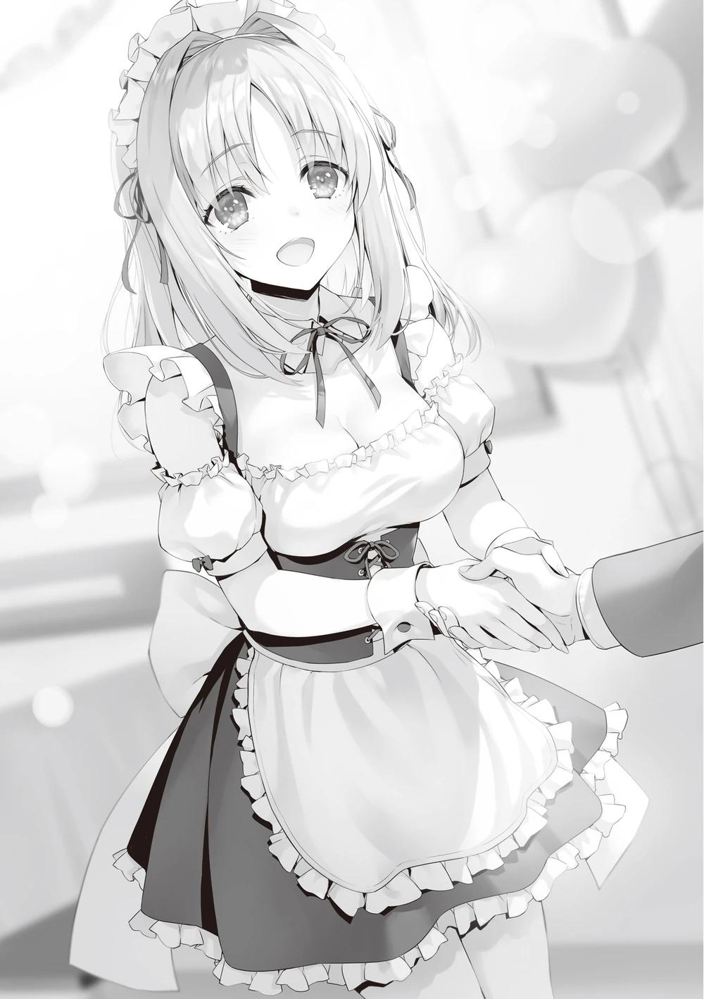
Si Kushida abandonara su puesto actual, no sería difícil que alguien huyera de la cola con cierta culpa a cuestas, pero ella se quedó y siguió hablando con ellos con una sonrisa en la cara.
Después de recibir las galletas, ya no era fácil abandonar la cola, aunque estuvieran impacientes.
Había algunos inconvenientes de que Kushida abandonara el salón, pero los clientes que ya habían tomado asiento seguro que gastaban algo de dinero. Por ahora, era más importante llevar la presencia generadora de dinero más allá de ese punto.
Ella podía ver lo que ocurría en el restaurante mejor que nadie, y también sabía cómo sacar partido de sí misma. ¿Qué podía hacer para poner de su parte al mayor número posible de personas?
Sabía cómo acercarse a los adultos del sexo opuesto, entablaba con ellos conversaciones que los hacían sentir bien y, a veces, incluso les tomaba de la mano o hacía otras travesuras con ellos. No mostraban la menor resistencia ni aversión a este comportamiento. Las demás chicas habían estado trabajando duro todo el día, pero Kushida era la única que conseguía hacer todas estas cosas a la perfección.
Incluso cuando a veces llevaba la contabilidad, cometía el menor número posible de errores, incluso cuando se tropezaba con algún cálculo. Esto era realmente un don, ya que nunca había participado en ninguna sesión de práctica en la vida real.
―Las habilidades de Kushida-san son increíbles. Supongo que este es su elemento ―Yousuke asintió con la cabeza en señal de respeto mientras miraba el trabajo de ella―. Parece que Kushida-san y Horikita-san, que se han enfrentado a fuertes vientos en contra, también tendrán algunos vientos a favor.
Han hecho un buen trabajo, tenía que admitirlo hasta cierto punto.
―Las personas son criaturas que se resienten con facilidad, pero por otro lado, también son criaturas que reconocen con facilidad. Especialmente cuando se es joven, las evaluaciones son como las dos caras de una moneda. De la
parte delantera a la trasera, y ahora de nuevo a la delantera. Pero cuanto más te presionen, más te sentirás como una presencia agotada.
―Aun así, me parece bien, siempre y cuando Kushida-san sea capaz de luchar junto a todos los de la clase.
―Estoy realmente impresionado por lo que estoy viendo.
―Creo que es un proceso acumulativo. Durante los preparativos para el festival, Kushida-san visitó la habitación de Horikita-san a altas horas de la noche varias veces. Creo que estaban practicando.
Así que, además de su propio talento, estaba practicando bien a escondidas.
Si la lectura de Yousuke de la vida de Kushida era correcta, se trataba de un recordatorio de la grandeza de Kushida. También confirmaría la confianza de Horikita en que Kushida estaba en buenas manos. Luego volvimos a la sala de espera y pasamos unos 30 minutos moviendo la cámara de un lado a otro.
―Um, Ayanokouji-kun, ¿dónde está Kushida-san?
Mii-chan salió del salón, luciendo ocupada.
―¿Kushida?
―Hay un cliente que quiere tomarse una foto con Kushida-san, pero no la encuentro.
Kushida, que se suponía que estaba organizando la cola, ¿había desaparecido?
Yousuke y yo miramos inmediatamente por el pasillo, y efectivamente, Kushida no estaba a la vista.
―Disculpen, ¿ha visto a una chica organizando la cola aquí? ―Yousuke se dirigió a los invitados de la cola.
―Oh, ¿te refieres a la chica que estaba repartiendo galletas? Parece que se le acercó una chica de la misma escuela y la siguió hace unos cinco minutos.
―¿Cómo era? ―pregunté sobre la persona que se le acercó, interrumpiendo la conversación.
―Umm, una chica con el pelo recogido en dos nudos.
Yousuke no parecía tener ni idea, pero yo sí.
―Lo siento, pero necesito que te ocupes de la tienda un rato y traigas a otra camarera y lo haga como hizo Kushida.
Éste era el tipo de problema que nadie esperaba. Por eso supe inmediatamente que era un problema con el que tenía que lidiar yo.
PARTE 6
Era difícil localizar a una persona concreta en un festival en el que había mucha gente, jóvenes y mayores. Y si no se podía predecir adónde iba alguien, era todavía más difícil encontrarlo.
Mientras manejaba mi celular, suspiré de admiración ante la abrumadora red de información. Me asombraba lo rápida y precisa que era. A los pocos minutos de hacer la llamada, pude obtener información sobre su ubicación.
No en dirección al centro comercial Keyaki ni a los dormitorios, sino detrás de las instalaciones de la piscina cubierta. Cuando llegué allí, encontré a Kushida de espaldas a mí, vestida con un traje de sirvienta que no venía a cuento.
―Así que no me hagas decirlo otra vez...
Le gritaba Kushida, que probablemente estaba manteniendo una acalorada conversación con su amiga.
―Vaya...
Mientras tanto, la otra persona se fijó inmediatamente en mí y le dijo a Kushida que dejara de hablar.
―¿Qué? ¿Por qué está... Ayanokouji-kun aquí...?
―Por supuesto que va a buscar el as cuando desapareciste.
Eso es verdad. Aunque dejé que la sirvienta sustituta tomara el ejemplo de organizar la cola establecido por Kushida, no estoy seguro de cuánto tiempo más podrá mantener el mismo ritmo que Kushida.
―Pensé que la había llevado a un lugar secreto, pero me sorprende que hayas encontrado este sitio, senpai.
La estaba vigilando desde el momento en que salió a la fila.
―Por desgracia para ti, ahora he creado una alianza con alguien en quien puedo confiar. No importa a dónde vaya alguien, me aseguraré de saber dónde está.
Ni siquiera Amasawa parece tener idea de quién era, pero no indagó más.
―Ella iba a volver justo después de esto, ¿verdad senpai~?
―Sí. Tiene razón. Siento haberme escabullido sin decírtelo, pero también quería hablar un momento con Amasawa-san.
―Entonces podrías haberte quedado ahí hablando, no es razón para irte durante 10 o 20 minutos.
―Eso es...
Kushida sabía que la primera prioridad era mantener la cola en movimiento y a los clientes contentos. Por eso Kushida se esforzó en abandonar sus tareas de atención al cliente. Ella no habría dejado su puesto a menos que fuera algo serio.
―Sea lo que sea lo que hay entre ustedes dos, estamos ocupados con el festival. ¿Pueden hablar de ello en otro momento?
No había necesidad de tomarse la molestia de elegir hoy como día para la conversación.
―No te sorprende lo más mínimo vernos juntas a Kushida-senpai y a mí,
¿verdad? ¿Conocías nuestra historia?
―No ―Realmente no sabía que hubieran tenido una conexión profunda antes. Pero hoy, con este oportuno contacto, lo entiendo todo ―Incluso la información que parecía innecesaria se deducía en mi cabeza por sí sola.
¿Por qué Kushida se empeñó tanto en expulsarme de la escuela en un examen especial unánime, y por qué hizo una apuesta temeraria?
Si un alumno de la habitación blanca estaba detrás y la obligó a hacerlo, no carecía de sentido.
También empecé a entender por qué actuaba como lo hacía en el festival, donde sería fácilmente localizable. El comportamiento de Kushida también coincidía con el que mostraba después de las clases, cuando se dirigía a algún sitio tras rechazar las invitaciones de sus compañeros para reunirse con ellos.
―Kushida-senpai te pagará más tarde, así que ¿puedes darme un poco de tiempo?
Amasawa frente a mí aún no se daba cuenta de que fui vago en mi respuesta.
―Lo siento Ayanokouji-kun, podrías disculparme por favor. Volveré tan pronto como pueda. También necesito de verdad hablar con Amasawa-san.
―Entiendo lo que quieres decir, pero no va a suceder. Esto es suficiente, Amasawa.
―Los ojos de Senpai son tan traviesos, ¿verdad? Me miran como si estuviera desnuda o algo así~.
Amasawa presionó la punta de su dedo contra sus labios de forma seductora, pero el tono no era sexual. Era una acción para ocultar su recelo de que pudiera adivinarlo.
―Kushida, tienes una debilidad respecto a tu pasado con Amasawa y otra persona. Por eso forzaste el alboroto de la clase para que Horikita y yo fuéramos expulsados del examen especial por unanimidad. O quizá estaban tramando algo antes de eso.
―¿Eh?
Debí de dar en el clavo; incapaz de confirmar o desmentir, Kushida se limitó a poner cara de sorpresa.
―Dejémoslo ya, senpai. Este es un momento para mí y Kushida-senpai.
―Lo siento, pero no funciona así. Kushida es una parte necesaria de la clase, incluso antes de su trabajo como sirvienta.
―¿Qué quieres decir con eso?
―Puede que tengas razón, pero no estoy tan segura de lo otro ―Al responder ella, el semblante de Amasawa cambió por primera vez. Sin previo aviso, Amasawa, con una inquietante sonrisa en el rostro, agarró con fuerza la muñeca de Kushida.
―¡¿Qué?!
Luego tiró de ella para acercarla y se colocó detrás de Kushida con la mano derecha bloqueada y cerró a la fuerza la boca de Kushida con la mano izquierda.
―¿Tal vez tengas idea de quién es el otro estudiante, senpai?
Las palabras de Kushida fueron silenciadas antes de que pudiera formular la pregunta, ya que Kushida conocía a esa persona de primera mano.
En otras palabras, sabía quién era el otro estudiante de la habitación blanca. Así que Amasawa se anticipó a la reacción de Kushida y tomó medidas para asegurarse de que no pronunciara de improviso el nombre de esa persona.
―¿Sabes, Kushida-senpai? Si dices algo malo, haré que te expulsen, ¿de acuerdo?
El rostro de Kushida se contorsionó de dolor, probablemente debido al fuerte agarre de su brazo derecho.
―Tú no eres así, Amasawa. Parece que te han acorralado con mucha fuerza.
―Espera, senpai, yo no he dicho nada, ¿verdad?
―Cada acción habla por sí misma.
Kushida, soportando el dolor, no entendía la naturaleza de esta conversación. Y
la propia Amasawa no sabía cuánto entendía yo.
―Volvamos a hablar de ello más tarde, los dos solos la próxima vez. Por favor, finge que no has visto esto y vete, Ayanokouji-senpai. Si haces eso, la dejaré ir en unos diez minutos.
―¿Y si digo que no?
―Si dices que no, podría lisiar a Kushida-senpai aquí ―Dijo y apretó su brazo derecho aún más fuerte.
―¡Nngh!
―Soy una chica bonita, pero puedo romper un brazo o dos fácilmente.
―Entonces vamos a intentarlo. Veamos si le rompes el brazo a Kushida primero, o si puedo detenerte.
La distancia entre Amasawa y yo era de unos 5 metros.
―¿Hablas en serio?
―¿Vas en serio con lo de romperle el brazo? ¿O estás diciendo que no crees que pueda detenerte?
―Ambas cosas.
―Entonces te equivocas en ambas cosas. No deberías olvidar quién soy.
Riendo, Amasawa aflojó su agarre sobre la mano derecha de Kushida, aunque sólo fuera un poco. En ese momento pateé el suelo y me lancé justo cuando Amasawa cambiaba a un movimiento para romperle el brazo.
Mi mano derecha se deslizó por el brazo de Kushida y alcanzó su muñeca mientras mi mano izquierda rodeaba la boca de Amasawa hasta su espalda y agarré la mano derecha de Amasawa.
―Imposible...
Debe de ser un instinto defensivo. En un instante, abandonó la acción de romper el brazo de Kushida y desvió su atención hacia mí, e intentó cerrar el puño izquierdo con fuerza.
Sin embargo, no le di a Amasawa ninguna oportunidad de hacer más movimientos, y la atrapé, impidiéndole avanzar hacia Kushida.
Al igual que Amasawa le había hecho a Kushida antes, fui detrás de ella y torcí su cuerpo hacia el suelo con el brazo a la espalda.
―¡Fuu~!
El fuerte agarre al suelo hizo que Amasawa perdiera el aliento por un momento y jadeara en busca de aire. Su respiración hizo que se levantara una ligera nube de polvo.
―Vaya, eso fue... un poco inesperado.
―¿Pensabas que no había mucha diferencia entre tú y yo?
Me di cuenta por la mirada de sus ojos. El orgullo de Amasawa, siempre elevado, estaba profundamente herido.
―¿Quieres decir que estaba equivocada sobre tus habilidades?
―Probablemente.
Las habilidades de combate de Amasawa, que había aprendido en la habitación blanca, son reales. El hecho de que ella y el otro estudiante llevaran mucho tiempo en la habitación blanca y hubieran aprendido a pelear en ella era una ventaja real. Sin embargo, que pudieran competir conmigo en igualdad de condiciones era una cuestión completamente distinta.
Aunque la habilidad del oponente hubiera aumentado de 5 a 20, o incluso a 30, no significaba nada porque mi puntuación seguía siendo 100.
―¿Desde cuándo crees que puedes vencerme?
―Desde el momento en que nos conocimos.
―Si eso no fuera una frase de Ayanokouji-senpai, estarías echando sal en mis heridas.
―Te diré esto, pareces pensar que el otro estudiante podría expulsarme de la escuela, pero ¿alguna vez te has preguntado por qué nunca pregunté el nombre de él?
La sonrisa se desvaneció lentamente de Amasawa. Hasta ahora, nunca había buscado voluntariamente a un estudiante de la habitación blanca.
―Eso es porque desde el principio pensé que no serían rivales para mí.
―Hablas en serio, ¿verdad, senpai?
―¿Eres tú quien no lo entiende, verdad, Amasawa?
Si sólo hubieras practicado artes marciales a medias, aún no habrías sentido nada por ellas. Pero Amasawa era diferente. Aun así, en menos de 10 segundos de movimiento total, el combate ya se había decidido por un amplio margen.
―Tú y el otro alumno deberían haberme desafiado desde el principio. No deberían haberse dedicado a involucrar a la gente de su alrededor en la diversión.
―Entonces, entendiste por qué contacté a Kushida-senpai...
―Todo se conectó hace un momento. Y ahora lo inesperado está a punto de suceder.
―¿Lo inesperado?
―Después de las 3 p.m., vigila las cámaras del consejo estudiantil. No debes ser vista delante de nadie. Entonces tendrás todas las respuestas.
Viendo que la fuerza de Amasawa se iba poco a poco, solté las ataduras. No había necesidad de más técnicas de fuerza.
―Ya perdimos mucho tiempo. Volvamos al maid café.
―¿Está bien dejarla?
Amasawa se levantó, pero no había emoción en su rostro.
―No pasa nada. No tienes que preocuparte de que se descubra tu pasado.
Empecé a alejarme y Kushida se precipitó tras de mí.
―¿Cómo puede Ayanokouji-kun saber eso?
―No te preocupes por eso, pero puedes confiar en mí.
―¿Quién es Ayanokouji-kun?
Esa pregunta sería inevitable si hubieras presenciado la conversación y la pelea con Amasawa de antes.
―No sé nada sobre peleas, pero puedo decirte que no eres normal.
―No es raro que los compañeros de clase aprendan artes marciales.
Horikita e Ibuki, incluso Ryuuen y Akito deben ser fuertes en las peleas, aunque sean autodidactas. No es que los chicos y las chicas puedan competir entre sí.
Le explicaría que sólo era abrumador debido a la diferencia de género. Que eso convenciera a Kushida es otra cuestión.
―Tendré que volver pronto y ayudarles a organizarse. Por favor, vuelve tú.
―Sí, claro ―Respondió Kushida, inclinando la cabeza como si se hubiera decidido a hacer algo―. Gracias por ayudarme.
Un inesperado agradecimiento de Kushida. Por supuesto, Kushida era fácilmente más realista que la mayoría de la gente en el frente externo. Ella era el tipo de persona para quien expresar gratitud en sí era bastante fácil de hacer.
―No creerás que estoy sinceramente agradecida, pero no pasa nada. Me apetecía decirlo, aunque sea mentira.
―No es para tanto. Es más un comportamiento natural de un compañero de clase.
―Entonces no tienes que considerarlo como una deuda, ¿verdad?
Hizo hincapié en esa parte, y me lo pensé un momento, pero no me apetecía endeudarla.
―Por supuesto.
Si la consideraba en deuda conmigo por lo que había pasado, realmente no podría pagármelo.
LO QUE AIRI DEJÓ ATRÁS
Kushida, ausente durante un tiempo pero recuperada brillantemente, consiguió mantener unida la larga cola de clientes.
Sin embargo, el hacinamiento provocó una escasez de personal. Las sirvientas, que se habían tomado un descanso de una hora, seguían cansadas y sus movimientos se habían ralentizado considerablemente. Los hombres tenían manos extra, pero seguía siendo una lucha porque podían hacer el trabajo entre bambalinas pero no podían estar de pie en el salón.
Había un total de ocho trajes de sirvienta preparados para el evento. Dos de ellos se consideraban básicamente de repuesto, por lo que no podían trabajar más de seis sirvientas a la vez.
Excepto en los descansos, Satou y Mii-chan eran los ases del equipo, trabajando duro todo el tiempo. Horikita, que en principio no iba a encargarse del salón, empezó a servir a los clientes a mediodía y ahora se movía de un lado a otro. Las tres restantes eran Ishikura, que había sustituido a Matsushita, Kushida, así como Inokashira, especializada en repartir folletos.
Kushida estaba trabajando en el pasillo para evitar que la gente se marchara, así que, en efecto, sólo había cuatro personas dirigiendo el salón. Normalmente, habría que incorporar personal adicional, pero no había nadie para cubrir el puesto.
No bastaba con decir que cualquier chica serviría.
No se trataba de una cuestión de apariencia o encanto; también era en gran medida una cuestión de consentimiento. Sonoda y otros se acercaron a algunas de las chicas, pero la vergüenza de llevar el uniforme de sirvienta y los rigores del trabajo hicieron que no se ofrecieran voluntarias para el puesto.
―Ayanokouji-kun, puede que los clientes que esperan se hayan aburrido.
No creo que podamos tenerlos atados así para siempre.
Entre medias, Kushida se asomó al salón desde el pasillo y me llamó. Horikita, que estaba sirviendo a los clientes (aunque principalmente llevando comida) en esta situación de emergencia, también vio a Kushida y se acercó a ella.
―¿Qué pasa al final de la cola?
―Les dijimos que tendrían que esperar mucho tiempo, y aunque algunos esperarán, la mayoría se marchará.
Y si veían una cola larga, no iban a esperar. Los que se quedaban ahora no eran sólo clientes, sino invitados que venían al festival. No esperaba que se quedaran porque sintieran que el tiempo que tenían que esperar era una pérdida de tiempo.
Por eso Kushida hacía de muro, pero parecía a punto de derrumbarse.
―Tenías dos trajes de sirvienta extra, ¿verdad?
Puede que fuera el momento de sacar los trajes de repuesto para las emergencias del día.
―Sí, pero ¿qué sentido tiene si no hay chicas dispuestas a hacerlo?
―Sí, ¿por qué no Karuizawa-san?
sugirió Kushida. Supongo que pensó que Kei, mi novia, escucharía mis instrucciones. Desde luego, no sería imposible si la obligara a hacerlo. Pero....
―Si no recuerdo mal, ella tiene un descanso a las 2 p.m., ¿verdad?
―Sí. Ahora mismo está de descanso, y aunque la hiciéramos cambiarse de ropa al volver a las tres, no es seguro que pueda sernos útil.
Lo que no sabían era que no se podía hacer que se cambiara en un simple vestuario. En el peor de los casos, serían otros 20 o 30 minutos para volver al dormitorio y luego de vuelta.
―Oye, ¿puedo hablar contigo un segundo?
me llamó Ike, que hoy había llevado y traído la comida no sé cuántas veces.
―¿Qué pasa? ¿Algún problema?
―Oh no, te oí decir que estás corto de personal en este momento... Me preguntaba si podrías dejárselo a Satsuki.
―¿Shinohara-san? Pero me pregunto si estará a la altura.
―Creo que estará bien. Además, estuvo practicando para ser sirvienta, aunque fuera a la ligera.
Los tres nos miramos al oír esto por primera vez. Shinohara estaba trabajando en la cocina del puesto.
―¿Puedes llamarla ahora mismo?
―¡Claro! ¡Estoy en ello!
Ahora sólo agradezco tener una alumna dispuesta a ponerse un traje de sirvienta. Más tarde, con una recomendación de Shinohara, persuadió fuertemente a Azuma. Se decidió que ella se uniría a nosotros.
―Ayanokouji-kun, como sabes, tengo que hacer un descanso a las tres.
Voy a necesitar personal después de irme.
―Ya lo he pensado, no te preocupes.
Quince minutos después, le pidieron a Shinohara que fuera al vestíbulo, y a Azuma que se uniera a Kushida en el pasillo para retener a los clientes que esperaban allí. Pero la expresión de Kushida en el pasillo era sombría, y no era un acontecimiento que pareciera gustarle.
―Es difícil decir si es la persona adecuada para el trabajo, porque Shinohara-san no causa mucho impacto visual, y no es muy buena atendiendo a los clientes.
―Hay una emergencia.
―¿Hasebe-san todavía no está disponible?
―Antes de decir 'no está disponible', ella ha estado fuera desde esta mañana. Está participando formalmente en el festival, pero podría estar de vuelta en su dormitorio.
―¿Te refieres a la venganza por la expulsión de Sakura? Participaste en la discusión preliminar, ¿verdad?
―Sólo estaba observando.
―Aún así, eso significa que sabes más que Shinohara-san, Azuma-san y las demás, ¿verdad?
―Por eso fue una forma efectiva de vengarme de Haruka y Akito, que parecían estar al tanto, ya que estábamos haciendo nuestros planes basándonos en los cálculos de nuestra fuerza.
―Ya veo. Si sabías tanto, habría pensado que considerarías la posibilidad de que esos dos no participaran y habrías pensado en otra forma.
―Aunque lo supieras, no puedes aumentar el tamaño de la clase. Además, si hubiéramos seguido otra estrategia desde el principio, Haruka y Akito habrían captado la indirecta. Decidimos que sería más una desventaja que hicieran un sabotaje inesperado al hacerlo.
―Nos molestaría, pero ya está. No es una acción que pueda llamarse venganza.
―Ojalá fuera así.
―¿Qué quieres decir?
―Haruka y Airi estaban deseando que llegara el festival cultural. Por eso iban a verlo hasta el final. Como eso se acabó, no habrá razón para que sigan quedándose en esta escuela.
―¿Quieres decir que van a abandonar la escuela?
―Probablemente, si dos estudiantes se retiran voluntariamente de la escuela, además de la simple desventaja en número, será inevitable una caída significativa en los puntos de la clase. La clase se verá gravemente perjudicada.
―¿Cuánto daño?
―Calculo que 600 puntos de clase por los dos juntos.
―¿600?
―Nada sorprendente. La expulsión bajo las reglas normales de esta escuela ha sido tradicionalmente penalizada con esa cantidad.
Excluyendo circunstancias limitadas donde el riesgo de expulsión era alto debido a exámenes especiales estrictos, este era un paso natural.
―Si dos personas abandonan de verdad, significa que mi camino hacia la clase A está condenado.
El hecho de que dijera "mi" era típico de Kushida, pero tenía razón.
―Va a ser casi imposible conseguir regresar.
―Me pregunto si sólo van a sentarse y mirar.
―Se me ocurrió una forma de salir de esto.
Miro mi teléfono. Por desgracia, no he recibido la notificación que esperaba.
―Supongo que hubo algún problema imprevisto, o quizá la carta de triunfo nunca llegó.
La estrategia de Haruka de sabotear el festival, o más bien de abandonar voluntariamente la escuela, era básicamente como un ultimátum imparable. Por muchas contramedidas que se idearan, no había forma de evitarlo por completo.
Si la propia Haruka hubiera tenido la intención de quedarse en la escuela y hubiera saboteado repetidamente el festival a la desesperada, como había hecho antes Kushida, podría haber utilizado las normas especiales de los exámenes para obligar a los alumnos a marcharse. No era difícil deducir una estrategia que fuera más allá de la más pequeña de las tretas. Pero Haruka no adoptó una estrategia poco razonable. Sabía que sus habilidades no eran tan buenas como las mías, así que eligió la estrategia más eficiente.
―¿Estás seguro de que quieres seguir así?
―Eso no lo decido yo; lo deciden Haruka y Akito. Si quieren seguir sin participar en el festival, también es lo que tendrán que hacer.
―Sin embargo, no creo que Ayanokouji-kun realmente piense de esa manera.
―¿Lo entiendes?
―¿Que si lo entiendo? No vas a abandonar a Hasebe-san y a los demás,
¿verdad?
Aparentemente, Kushida podía ver lo que estaba a punto de hacer.
―¿La razón por la que no intentaste persuadirla hasta este momento fue para ponerlos a prueba a los dos?
―No sabía qué pretendían. ¿Iban a arruinar el festival o no? Pero por el hecho de que no han hecho nada hasta ahora, tenía una suposición bastante buena. Voy a ponerme en contacto ahora.
―¿Tienes idea de dónde están?
―Por eso estoy haciendo que mi contacto averigüe las cosas.
Le enseñé la pantalla de mi celular y le mostré el mensaje de alguien con la ubicación actual de Haruka.
―Tienes un aliado de confianza. Supongo que gracias a esta persona descubriste dónde estaba yo.
―Ah. Es la persona perfecta para buscar o vigilar a alguien.
Siempre sabía dónde estaban Haruka y los demás.
―Pero al final del día, no hay mucho que pueda hacer. Si puedo o no hacer latir los corazones de esas dos personas es otra cosa. Me marcho.
Dejé la situación en manos de Kushida y los demás y me dirigí hacia Haruka.
PARTE 1
Tras pasar por el aula y agarrar las cajas de cartón que había traído esa mañana, atravesé el edificio de la escuela hasta el camino que lleva al centro comercial Keyaki. Finalmente llegué a un lugar con bancos para que los alumnos descansaran. No había puestos en este lado y, por supuesto, no se veían estudiantes ni invitados.
Al acercarme, naturalmente me puse en su línea de visión.
―¿Cómo has encontrado este sitio, Kiyopon?
Haruka estaba sentada en un banco, y Akito estaba cerca, mirándome fijamente.
―Sé que Airi y tú solían charlar por aquí después de clases.
Llegaban informes de que Haruka y Akito habían estado paseando por toda la escuela durante todo el día de hoy. Y después de todo eso, deben haber elegido este lugar como su punto de parada
―Todo el antiguo grupo Ayanokouji. Cierto.
Haruka me saludó sin una sonrisa e inmediatamente continuó.
―¿Qué estás haciendo aquí? ¿Creía que no interrumpía el festival?
―Tal vez tengas razón, no estás interfiriendo. Pero tampoco has colaborado con nosotros.
―Eso es verdad.
―Me siento mal por ti. No, me siento mal por la clase.
Akito, que no había aparecido desde esta mañana, se disculpó.
―No importa. Sé lo que piensas cuando estás al lado de Haruka.
―No nos preocupemos por eso, dejemos que respondas a mi pregunta.
―¿Qué haces aquí? El maid café tiene más éxito del que puedan imaginar, y nos faltan sirvientas.
―Hmmm... bueno, quizás las cosas hubieran sido un poco diferentes si Airi hubiera estado allí. Yo también habría estado, así que no les habrían faltado dos personas.
―En ese caso, Kushida no estaría aquí, y habría sido una situación mucho más grave.
―Has respondido al sarcasmo con sarcasmo.
―Sólo expongo los hechos.
En el estilo contencioso de Haruka, las palabras tendían a intercambiarse. Era obvio que era una forma de irritarme.
―¿Puedes ayudarme durante la última hora?
―Ya sabes la respuesta a eso. La persuasión es inútil.
―Sí, lo es. Si hubiera una condición, sería que trajera de vuelta a Airi.
Por supuesto, eso era imposible.
―Bueno, solo escucha lo que tengo que decir. Seguro que te preguntas de qué va todo esto.
Puse la caja de cartón que tenía en mis manos en el suelo.
―Quiero que abras esta caja.
Haruka sólo levantó las cejas en señal de sospecha.
―¿Qué intentas hacer ahora? Lo siento, pero no quiero involucrarme en nada extraño.
Con eso, Haruka sacó un sobre de su bolsillo. El sobre blanco estaba escrito a mano con las palabras: "Carta de renuncia".
―No te sorprende, ¿verdad?
―Sabía que había muchas posibilidades de que te fueras después del festival. Y estás planeando irte con ella, ¿verdad, Akito?
―Ah.
Akito también sacó un sobre marcado con el mismo formulario de renuncia.
―Eso es genial, Kiyopon. Supongo que por eso pudiste expulsar a Airi con apatía.
Mientras hablaba, su mirada no se dirigió hacia mí. Simplemente miraba al vacío.
Era como si hablara desde otra dimensión, separándose del mundo.
―Este es el festival que Airi estaba esperando. Se suponía que el festival cultural iba a ser un gran escenario para que ella cambiara y diera un gran paso adelante.
Cerró los ojos con frustración y golpeó con el puño el lugar donde estaba sentada.
―Decidí verlo hasta el final. Decidí verlo todo por ella.
―Efectivamente, expulsé a Airi. También utilicé mis sentimientos heterosexuales para manejar la situación. No voy a decir que no tuve la culpa de eso.
―Ella me necesitaba. Y Kiyopon necesitaba al grupo Ayanokouji. ¿Cómo crees que se siente ahora que la persona que ella amaba la expulsó de la escuela? ¿Has pensado alguna vez en ello?
―¿Cómo sería ese tipo de persona? ¿En qué estaría pensando? Dime exactamente qué estaría pensando. No lo entiendo.
Las emociones de Haruka se desbordaron, quizás molesta por mi falta de comprensión.
―¡Claro que lloraría todo el tiempo! Todo el tiempo. Estaría tan frustrada, triste y amargada que se sentaría en un rincón de su habitación a pensar en sus felices días escolares. ¿No lo ves?
―¿Es esa la Airi que ves?
―No es sólo lo que yo veo. Es el tipo de chica que es. ¡¿Por qué no puedes entenderlo?! ―Ella vomitó su ira, no en voz alta, pero obvia―. ¡Kiyopon
es realmente igual! Simplemente no quieres enfrentarte a la realidad. No quieres pensar en Airi, que se siente desgraciada porque fuiste tú quien la expulsó de la escuela.
Haruka decidió que yo sólo estaba huyendo.
―Lo siento, pero ni siquiera pienso así. No es asunto mío lo que les pase a los alumnos que abandonan la escuela. Es una pérdida de tiempo pensar en ello.
Sabiendo que se enfadaría, me limité a exponer los hechos. Naturalmente, esto irritó mucho a Haruka.
―Eres asqueroso y repugnante ―Haruka escupió esas palabras y se levantó lentamente del banco―. Me pregunté, ¿cómo pudo Airi enamorarse de un hombre tan despiadado? ―Haruka se acercó lentamente a mí. Se acercó lo suficiente como para tenderme la mano―. No soporto seguir hablando contigo,
¿por qué no te mueres conmigo? ―Diciendo esto, me lanzó la carta de expulsión.
¿Quieres morir conmigo? La invitación del diablo.
Sus palabras, que parecían provocar un déjà vu, me trajeron recuerdos del pasado.
―Kiyopon está llamando la atención de mala manera porque hizo que expulsaran a Airi de la escuela. Y no es que tenga un gran deseo de graduarse en la clase A, ¿verdad? Si es así, ¿por qué no lo dejas?
Las relaciones pueden desmoronarse fácilmente por una sola cosa. Hasta hace poco, nadie podría haber imaginado que esta conversación tendría lugar entre Haruka y yo.
―Está bien que quieras que me vaya de la escuela, pero para mí no tiene sentido. No puedo evitar que me moleste el hecho de que Airi se vea obligada a seguir tus fantasías personales.
―¿Qué? ¿Qué intentas decir?
―Sólo digo que parece que no entiendes cómo se siente Airi. Eres muy engreída.
―¡Yo la entiendo mejor que nadie, y tú no quieres admitirlo!
―No te pongas arrogante, Haruka.
―¿Qué acabas de decir?
Akito, que había pensado erróneamente que iba a ser atacada, se puso delante de Haruka y extendió la mano izquierda como si fuera a defenderla.
―Sólo me he sorprendido un poco. Estoy bien, así que apártate, Akito.
Haruka no podía sentir el peligro que Akito intuía instintivamente. Todavía receloso, Akito bajó la mano izquierda y retrocedió un poco.
―¿Qué quieres decir con 'arrogante'? ¿De qué estás hablando, Kiyopon?
―Sólo digo que no deberías especular sobre los sentimientos de Airi y dar respuestas convenientes en su nombre; sólo Airi sabe lo que piensa y lo que siente de verdad.
―Es Kiyopon quien no lo entiende. ¿Crees que no le importó que la expulsaran?
―Seguramente debió desesperarse en ese momento. ¿Pero cómo sabes cómo se siente ahora?
―Puedes entenderlo si te lo imaginas por un momento.
―No, no puedes. En tu mente, Airi debe estar pasándolo mal ahora mismo.
―¿Y qué pasa con eso?
―Lo difícil no es que Airi haya sido expulsada. Es la desaparición de una existencia que te convenía. Querías estar ahí para Airi, que es inferior a ti, y jugar el papel de protectora. Te encantaba la sensación de superioridad y satisfacción que te producía.
―¡Claro que no! Ni siquiera recuerdas cómo éramos antes ―Ella lo negó rotundamente, pero pude ver un ligero titubeo en sus ojos.
―Estoy pensando en cómo se siente ella ahora mismo... ¡Yo...!
―¿De verdad estás pensando en ella?
―¡Pienso mucho en ella!
En una conversación que podría describirse como una línea paralela, sólo el corazón de Haruka se estremece violentamente.
―No sé cuál es la verdad.
―¡No hay forma de confirmar eso directamente con la persona en cuestión en esta situación!
―Desde luego, no hay forma de saberlo con seguridad en persona. Pero aquí tienes una pista. Aquí hay una caja de cartón. Lo más probable es que sea lo que necesitas ahora mismo.
―¿Qué? No lo entiendo. Eso no es lo que necesito.
―¿Incluso si este es el último mensaje que Airi te dejó?
―¿Qué?
Haruka, que hasta ahora se había mostrado altanera, abrió los ojos sobresaltada al ver a Akito detrás de ella.
―No puede ser. Kiyopon preparó esta caja, ¿no?
―El día que se decidió la expulsión de Airi, hizo los trámites para enviarme un paquete. Creo que fue porque se dio cuenta de lo que tenía que hacer en ese tiempo limitado.
La mirada de Haruka se posó en la caja de cartón que tenía a sus pies.
―Si te fijas en el remitente, te darás cuenta de que no he preparado esto para ti, ¿verdad?
Haruka se agachó y miró el papelito pegado a la caja. En él aparecía mi nombre como destinatario y el nombre de la tienda online como remitente. Yo mismo no lo sabía hasta que lo recibí y lo busqué.
Me di cuenta de que Haruka extendía la mano y se esforzaba por desenrollar los bordes de la cinta adhesiva con la punta de los dedos. Tras varios intentos, por fin consiguió despegarla. Entonces se abrió la caja de cartón.
Dentro había un uniforme de sirvienta.
―Esto es...
Haruka debía saber lo que significaba.
―Se suponía que debía ponérmelo... Se suponía que Airi y yo debíamos ponérnoslo juntas... ¿Por qué...?
―Ella se dio cuenta de que existía la posibilidad de que te detuvieras y no participaras en el festival. Por eso se suponía que te entregaría esto, para evitar que eso ocurriera, ¿no?
―A-ai... ―Haruka murmuró mirando el uniforme.
―Al menos puedo percibir los fuertes sentimientos de Airi en este mensaje.
No parece que simplemente esté triste. ¿Y tú, Haruka?
―¡Airi... Airi!
Haruka sacó el uniforme de sirvienta de la caja de cartón y lo abrazó contra su pecho. Sollozaba con los ojos llenos de lágrimas.
―Quería hacer el festival con ella. Quería hacer retroceder su timidez y verla estrenarlo ante Kiyopon.
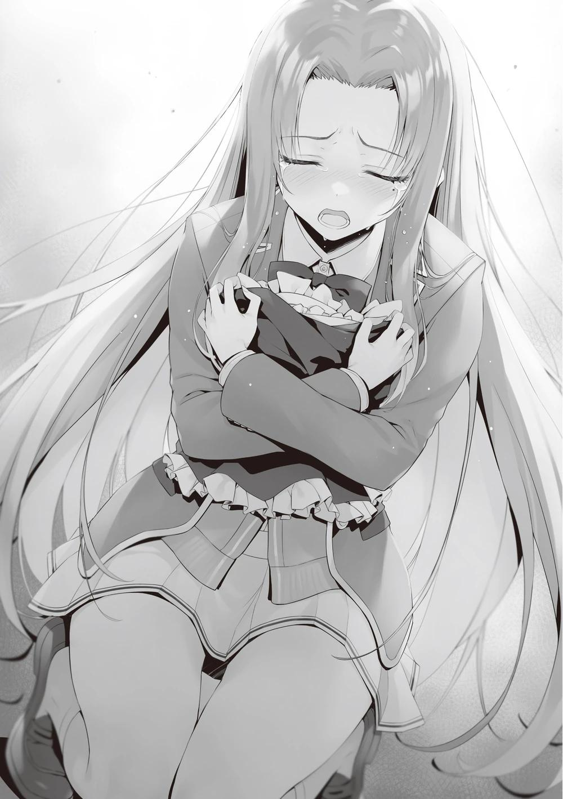
No es nada extravagante, pero me lamenté por el paisaje que se suponía que iba a poder ver en un futuro próximo.
Espero que Haruka ahora lo entienda y mire hacia el futuro.
Pero....
―Esto es... diferente...
Secándose las lágrimas con la manga del uniforme, Haruka se levantó y negó.
―¿No?
―No es algo que ella me haya preparado porque quiera que participe en el festival.
No sé hasta qué punto puedo cambiar las cosas tan fácilmente.
―Sólo estaba frustrada. Se lo envió a Kiyopon resentida, diciendo que realmente podría habérmelo puesto para el festival. Estoy segura de que así debió ser.
Cómo interpretar este atuendo de sirvienta quedaba a la interpretación de cada uno, y como Airi no dejó un mensaje concreto, no todo lo que nos convenía era cierto.
―Lo es, ¿verdad? Si realmente era para que me lo pusiera yo, debería habérmelo enviado a mí. Pero la razón por la que iba dirigido a Kiyopon era porque tiene otro significado, ¿no?
Era interesante ver la diferencia de puntos de vista, y desde luego no podía descartar esa posibilidad. ¿Era posible que estuviera acosando a la persona que la expulsó de la escuela? Interesante.
―Espera Haruka, creo que eso es un poco diferente.
Akito intervino por primera vez aquí.
―No, no lo es. ¡Sí, sí! ¡Incluso este paquete puede haber sido un montaje preparado por Kiyopon!
―La razón por la que envió el último recuerdo a Kiyotaka y no a ti es porque quería que tuvieran la oportunidad de reencontrarse, ¿verdad?
Si hubiera sido entregado directamente a Haruka, y si ella hubiera recibido el regalo honestamente, entonces, yo nunca hubiera tenido la oportunidad de hacer contacto con ella.
―¡No, de ninguna manera!
―Yo también fui miembro del grupo Ayanokouji, y sé que Airi lo habría pensado.
―¡No, no! ―Haruka se giró, agarrando a Akito por el pecho.
―¡No tomes las cosas como quieras! ¡No trates de hacer las cosas convenientes y perdonar a Kiyopon!
―No me refería a eso...
―¡Aunque así fuera, la privaron de su preciado lugar en el mundo! ¡Eso no va a cambiar ese hecho! ¡No aceptaré una amistad basada en el sacrificio!
―Pero sea cual sea la fantasía de alguien, no tiene ningún efecto sobre la persona en cuestión. Lo que importa es dónde y qué está haciendo Airi ahora mismo, ¿no es eso?
―Lo sé. Así que me voy de la escuela para averiguarlo. ¡Voy a estar ahí para esa chica!
Tan pronto como completara su venganza contra la clase, ella misma iría a ver a Airi. Retirarse voluntariamente de la escuela también es conveniente para Haruka.
―Estás siendo demasiado ruidosa. Incluso aquí, si no eres sutil, recibirás mucha atención, ¿no?
Esas palabras tranquilas y frías atravesaron su ira Kushida era un personaje que nunca pensé que vería aquí. Vestida como una sirvienta, lo que estaba fuera de lugar en este ambiente tenso, se acercó lentamente.
―¿Va todo bien en la tienda?
―Acabamos de tener un cambio de clientes, así que tenemos un poco de tiempo.
No sé si es verdad o no, pero supongo que no se ha escapado sin avisar. La mirada de "No pasa nada" de Kushida me dice que todo está bien.
―¿Qué haces aquí?
Haruka y yo nos preguntábamos lo mismo.
―¿Qué estoy haciendo aquí? Ayanokouji-kun me dijo que Hasebe-san y Miyake-kun podrían estar planeando dejar la escuela.
La mirada de Haruka se dirigió hacia mí por un momento, pero luego volvió rápidamente a Kushida.
―Kushida-san fue la causa. Si hubieras estado en contra de la expulsión desde el principio, habrías...
―Lo siento, pero ahora no me arrepiento de mi decisión en aquel momento. Aquel incidente me manchó, pero al mismo tiempo fue una oportunidad para abrir un nuevo camino.
―Voy a decirle a la clase que no abandonar a Kushida-san fue un error.
―Si quieres dejar la escuela, haz lo que quieras.
―Kushida-san tú misma dijiste que el único camino que te quedaba era graduarte en la clase A. Esa es la única razón por la que sigues aguantando una clase incómoda con la que no te llevas bien. Así que te voy a quitar eso.
―Puede que tu venganza contra mí funcione. ¿Pero es eso lo importante?
No creo que Sakura-san quiera eso.
―No digas lo mismo que Kiyopon. ¿Qué sabe alguno de ustedes sobre Airi?
―No lo sé, pero sé que es mucho menos tímida de lo que crees.
―Qué?
Me pareció que era una expresión figurada, pero me pregunté si tenía algún fundamento. El hecho de que ella apareciera aquí también planteaba una pregunta.
―Sakura-san era débil. Por eso la expulsaron.
―¿Cómo puedes decir eso? Es lo mismo contigo, estabas muy avergonzada y perdiste.
―Es verdad que yo también perdí. Admito que fui débil. Pero también es cierto que Sakura-san era igual. No, ella era más débil que yo, y por eso la expulsaron.
De hecho, Horikita decidió que Kushida sería una aliada mejor y más útil que Airi.
Y en el festival, estuvo a la altura de esas expectativas y desempeñó un papel activo. Por supuesto, no había duda de que Airi habría sido más popular si hubiera podido asistir al festival. Sin embargo, las excelentes habilidades de atención al cliente y la capacidad de hablar con adultos que no conoces no se adquieren de la noche a la mañana. Esta era un área que Airi no podía cubrir.
Antes de eso, Kushida obtuvo buenos resultados en el examen parcial del segundo semestre, situándose en la mitad superior de la clase. Hasta aquí, se puede decir que sin duda contribuyó.
―Esa chica era ciertamente débil... por eso quería protegerla...
―¿Quería protegerla? Estás siendo muy arrogante, ¿verdad? Entonces, no soy la única que piensa que ella siempre será débil.
―Tienes que estar bromeando.
―No bromeo.
A Kushida no le molestaba el abuso verbal de Haruka. Tal vez fuera por su experiencia, pero estaba claro que tenía una dureza que la diferenciaba de la estudiante promedio.
―Ayanokouji-kun, ¿puedes mirar esto? ―Kushida apartó los ojos de Haruka y los dirigió hacia mí―. Todos los días buscaba los secretos de los
demás. Tenía hambre de secretos. Siempre he creído que eso me haría más valiosa. Y Sakura no es una excepción.
Fuera quien fuera el objetivo, si había una oportunidad para Kushida, estaba asegurada. La gente podía prestar atención a lo que le interesaba, pero era difícil prestar atención a lo que no le interesaba. Hacía falta una extraordinaria fuerza mental para mantenerla durante un largo periodo de tiempo.
―Pensé que tal vez tuviera alguna utilidad el secreto que tenía después de dejar la escuela. Entonces lo encontré ―Kushida sacó su celular y me mostró una pantalla.
Agarré el teléfono y me desplacé por los detalles.
―Esto es...
―Me preguntaba si Ayanokouji-kun sería consciente de este hecho.
―Estoy impresionado. ¿Cómo lo encontraste?
―Ayanokouji-kun solía trabajar mucho en esto, ¿verdad? Así que tal vez fue así.
Había pasado más de un año, y eso fue antes de que se formara el grupo Ayanokouji. Haruka me miró con preocupación, en parte por la conversación sobre Airi.
―Te lo estás preguntando, ¿verdad? Y es una historia sobre tu preciosa Sakura-san ―Kushida se percató de Haruka y apagó el teléfono como si quisiera provocarla.
―¿Qué?
Kushida apagó la pantalla de su teléfono y se acercó a Haruka con él en la mano.
―Yo soy una mala persona la mayor parte del tiempo, pero Hasebe-san es parecida. Sólo encuentra placer en encontrar a alguien más débil que ella y ayudarlo. Esencialmente, no estás preocupada por Sakura-san, sólo extrañas tener a alguien a quien cuidar, ¿no?
Por extraño que parezca, dijo lo mismo que yo. Los ojos de Haruka se revolvieron incómodos ante este inesperado giro de los acontecimientos.
―¿Así que eres como tu familia?
¿Familia? Este comentario inesperado me tomó desprevenido, pero Haruka la detuvo.
―Basta. Ni lo menciones.
―¿Por qué no? Si ya te vas de la escuela, ¿a quién le importa que le cuente lo que me dijiste? Significa que ya no tendrás que guardar secretos.
Ahora que lo pienso, Kushida sabía más de Haruka que yo.
―No, te equivocas, quería proteger a Airi, quería estar a su lado. Aunque fuera para mis propios fines.
―Entiendo cómo te sientes, pero no puedo aceptar que Hasebe-san tenga razón. Por eso no pudiste hacer ni un amigo decente antes de la preparatoria.
¿Me equivoco?
―Yo...
―Bueno, está bien. Si sigo perdiendo el tiempo hablando de ello, va a interferir en el funcionamiento del maid café. ¿Por qué no te vas así de la escuela sin saber nada? No tiene sentido saber la verdad ahora, ¿verdad?
Deteniéndose en seco, Kushida le dio la espalda a Haruka.
―Un momento, ¿qué es eso de Airi?
―¿Quieres saberlo?
Frustrada por que se hubieran aprovechado de ella, acortó la distancia con fuerza y agarró el hombro de Kushida.
―Esa chica no puede hacer nada sin mí. Necesitaba ayuda.
―No lo entiendes, ella es mucho más madura de lo que crees, Hasebe-san.
Haruka, sosteniendo el teléfono con desgana en la mano, golpeó la pantalla con el dedo y accedió a Internet. Allí estaba la cuenta de la red social de alguien.
Era una práctica aplicación que te permitía enviar tus pensamientos a todo el mundo tuiteando. Dado que esta escuela no permite a los estudiantes revelar su identidad, estaban básicamente restringidos, y probablemente casi no había estudiantes que utilizaran esta aplicación. Sin embargo, los que no pertenecen a esta escuela pueden utilizarla tanto como quieran.
El nombre de la cuenta era "Shizuku", otro nombre por el que Sakura Airi se hacía llamar cuando solía actuar en secreto como gravure idol. Tras un incidente, Airi borró su cuenta, pero Kushida descubrió que había sido restaurada recientemente. La cuenta se había creado hacía sólo unos días, pero ya tenía más de 1.000 seguidores.
―No puede ser... ¿es de Airi?
Crédito para Kushida, que no era ajena a recopilar información sobre sus compañeros de clase.
―No hay garantía de que... esa chica haya hecho este tipo de cosas.
Seguro que es una impostora fabricada por Ayanokouji-kun o Kushida-san.
―¿Sigues pensando que somos nosotros después de leer el texto real?
[He decidido reanudar mis actividades de ídolo después de un largo paréntesis.]
Nueva cuenta, primer tweet.
Ella había renunciado a sus actividades como ídolo. Pero ahora, publicó repetidamente lo que sólo ella podía escribir.
[Decidí hacer lo que podía hacer. Convertirme en la persona que quiero ser.
Para mostrarle a mi mejor amiga que no me avergüenzo de mí misma después de que se gradúe].
―Es cierto lo que dije de que eres protectora; Airi puede haber sido un poco complicada, pero empezó a crecer a un ritmo increíble después de ser expulsada de la escuela.
[¡Finalmente audicioné ayer! ¡Estaba tan nerviosa, pero estoy tan feliz!]
―Esto es...
Haruka jadeó; en la red social aparecían sus comentarios al pasar la tercera ronda de audiciones.
[La razón por la que decidí entrar en el mundo del espectáculo es porque quería hacer oír mi voz].
[Estoy amargada y triste, pero quiero mirar hacia delante... Estoy mirando hacia delante. Así que no pierdas tú tampoco].
Por supuesto, es posible crear una cuenta falsa usando el nombre de Shizuku.
Sin embargo, era difícil disimular el hecho de que la seguía una productora de entretenimiento y su contenido en las redes sociales. Por eso Haruka debería ser capaz de saber que la dueña de esta cuenta es Airi.
―Al leer eso, no veo la escena abismal que describiste para Airi.
―Eras sobreprotectora y asumías que estabas por encima de todo,
¿verdad? Pero ella abrió un nuevo camino al dejar la escuela. No se quedó quieta.
Kushida arrebató con fuerza el teléfono de las temblorosas manos de Haruka y se giró hacia mí.
―Siento haberme escapado otra vez ―Entonces esbozó su habitual sonrisa, que no parecía acorde con la ocasión.
―Creí que te había salvado, pero tú me salvaste enseguida.
―Esta me la debes, ¿verdad?
―Creía que no prestabas ni pedías prestado.
―No me gusta pedir prestado, pero no me importa prestar.
Dijo esto y empezó a caminar de regreso al ala especial.
―Eres un tipo astuto.
Tras exponer sus diversas debilidades, Haruka se quedó de pie, conmocionada y destrozada. Me recordó mucho a la escena con Kushida en el examen especial por unanimidad.
―Haruka, no creo que sea una impostora.
Akito también debía de estar mirando el perfil de Shizuku en las redes sociales de su propio teléfono, porque le ofreció el suyo en su lugar. Haruka siguió devorando y leyendo los diversos mensajes de Airi.
―Ugh, ugh...
A Haruka se le llenaron los ojos de lágrimas y se le nubló la vista. Había pensado que Airi no podía hacer nada sin seguirla, pero entonces se dio cuenta de que Airi había empezado a caminar delante de ella. Incluso ahora, se esforzaba por caminar, aunque debía de tener el corazón roto. Era porque temía que Haruka se detuviera.
―Qué tonta he sido ―pensó. Sabía que Haruka acababa de asumir que era una desgracia que expulsaran a Airi de la escuela y sentía lástima por ella.
―Esto es nuevo para mí. Creía que los expulsados, los derrotados, allí habían acabado con todo.
Supuso que el paquete que le habían enviado era el último vestigio de su vida.
Pero no lo era. El perdedor regresó. Algunos empiezan de nuevo desde donde perdieron.
Esta era la gran división entre la habitación blanca y este mundo. No, quizás los que abandonaron la habitación blanca también fueron capaces de reinventarse como Airi.
―Esa chica podría ser alguien importante en el futuro. ¿Y aún así vas a dejar voluntariamente la escuela para ir detrás de Airi? Airi no sólo se reirá de ti, sino que puede que ni siquiera te tome en serio.
No era difícil imaginar lo que pasaría si Haruka dejara la escuela para vengarse y reunirse con Airi. En lugar de ser recibida con una sonrisa, se sentiría seriamente ofendida.
―¡No sé qué hacer...!
―Sólo hay una respuesta: sé tú misma para encontrarte con Airi con dignidad. Si te gradúas en la clase A, ya es otra historia. Tienes que superar esos tres años y ser alguien que no se avergüence de estar delante de Airi.
Ya no es hora de que Airi vaya a por Haruka; es hora de que Haruka vaya por Airi.
―Por si acaso, el costo de este equipaje se ha incluido en el presupuesto como algo que se puede usar en el festival cultural.
No había ninguna garantía de que el artículo fuera utilizable en el festival, pero era bueno tener un plan de contingencia. En otras palabras, no habría obstáculos para llevar este uniforme de sirvienta y estar en el maid café.
―No te pido que seas tan ágil como las otras sirvientas. Pero tienes que ver la escena que tu amada Airi hubiera querido que vieras. Eras su mejor amiga y se lo debes.
Haruka se disculpó un poco ante Akito, le entregó la carta de renuncia, se apretó el uniforme de sirvienta contra el pecho y salió corriendo. Sólo le quedaban unas horas, pero aún tenía la oportunidad de estar en el escenario.
―Kiyotaka, ¿aceptarán tus compañeros a Haruka?
―Kushida está ahí, Horikita está ahí, Yousuke está ahí. Sea cual sea la situación, nos llevaremos bien.
―Ya veo.
Akito guardó su teléfono y apiló los dos papeles de renuncia uno encima del otro, rompiéndolos por la mitad.
―El motivo de mi retirada ha desaparecido. Yo también quiero quedarme con Haruka hasta el final.
―Incluso habiendo sabido la verdad, el corazón de Haruka seguirá frío.
Deberías apoyarla.
Aunque ahora no pueda reír con todo el mundo, aún le queda más de un año de escuela. El día en que pueda volver a sonreír de verdad no estará lejos.
―Seguro que mis compañeros también me culparán durante un tiempo
―Se rascó la cabeza y sonrió un poco.
―Me pregunto qué habría pasado si Kushida no hubiera aparecido, y qué habría sido de Kiyotaka.
―No lo sé, me temo que me quedé sin ideas.
Agarré mi teléfono inteligente y abrí el navegador web. Luego borré el historial que contenía el enlace al perfil de Shizuku (SNS) que había preparado de antemano. Dado que Kushida fue quien consiguió descubrir el camino para salir de este calvario, este debería ser su logro.
―Volvamos, Akito. Todavía quedan unas horas del festival.
―Ah.
Eran alrededor de las 2:20 PM. La clase de Horikita había conseguido recuperar a sus miembros desaparecidos.
PARTE 2
Cuando llevamos a Akito al puesto de comida, los chicos lo aceptaron sin dudarlo, aunque se burlaban de él. Los ojos de Akito se enrojecieron un poco al agradecerles tan cálida bienvenida.
Probablemente se debía en gran parte al hecho de que él no era la figura central de una situación especialmente conflictiva. Por desgracia, Keisei, antiguo miembro del grupo Ayanokouji, no estaba a la vista, ya que acababa de salir a tomarse un descanso. Al volver al maid café del ala especial, la cola era tan larga como siempre.
Kushida se paseaba repartiendo nuevas galletas mientras atendía a los clientes con una sonrisa. Tanto los viejos como los jóvenes miraban a Kushida. Parecían disfrutar de su compañía. Me siento mal por Azuma, que estaba trabajando duro
junto a Kushida, y su contribución era más de lo que cualquiera de nosotros esperaba.
―¡Bienvenidos de nuevo!
Gritó Satou y nos condujo a la entrada. Dos clientas salieron del aula, saludando a las sirvientas. A continuación, el siguiente cliente entró afanosamente y fue conducido a un asiento vacío. Los asientos y sillas que originalmente había en esta aula se redujeron por el bien de la escenografía, pero ahora se han incorporado y remodelado para aumentar el número de clientes. Los asientos estaban pensados originalmente para ser más espaciosos y relajados, pero ahora no tienen otra opción porque tienen que aguantar hasta el final de las horas que quedan del día.
―Parece que ya están aquí ―Las palabras de Kushida se oyeron desde el pasillo, y esperé a que se pusiera manos a la obra.
―¡Ja, ja, ja! ¡Es difícil correr!
Haruka llegó, sin aliento, moviendo los hombros arriba y abajo violentamente.
Las sirvientas se distrajeron momentáneamente con la presencia de Haruka, pero eso no era lo importante ahora. Inmediatamente se concentraron en lo que tenían que hacer. Nadie preguntó por qué estaba aquí.
―Hasebe-san, ¿dónde te cambiaste de ropa?
―En el baño de mujeres... Fue difícil.
―Por supuesto.
Kushida, en modo ángel por estar delante de tanta gente, saludó a Haruka con una sonrisa irónica.
―¿Cuál es la... situación?
―Pregúntaselo a Horikita-san. Tengo las manos llenas con la fila
―Horikita, vestida de sirvienta, llamó a Haruka y entró en la sala de espera.
―Bienvenida.
Primero pronunció unas palabras de bienvenida y luego palmeó suavemente la espalda de Haruka, que parecía rígida.
―Pensaba que hoy no darías la cara, pero ya te decidiste, ¿verdad?
Haruka asintió y contestó mientras calmaba su respiración, aunque sin recuperarse del todo.
―No estás interpretando bien el papel de sirvienta. Ni siquiera has practicado; no espero que seas tan ágil como Satou-san y las demás, pero...
ahora mismo estoy en una situación difícil.
Era inevitable que de repente se vieran lanzadas a la más dura de las batallas, una guerra de verdad.
―Estás aquí para contribuir al festival. ¿Puedo confiar en eso?
―No te preocupes. No haré nada que arruine el duro trabajo de todos. Sé que no creerás...
―No, te creo.
Sin dudarlo, Horikita expresó su confianza en las palabras de Haruka.
―¿Por qué?
―Puedo decir por la mirada en tus ojos, Ayanokouji-kun debe haberte convencido, ¿no?
―Oye.
―Y Kushida-san. No esperaba que viniera a verme vestida de sirvienta.
―¿Kushida-san? Me pregunto cuándo dejó su puesto.
Horikita no pareció darse cuenta de su ausencia, tal vez porque estaba ocupada en el vestíbulo.
―De todos modos, voy a hacer que olvides tu rencor hacia mí hasta después del festival, aunque no quieras.
―Lo sé.
―Entonces de acuerdo. Te encargarás de servir a los clientes que se hayan quedado sin agua fría y, si te lo piden, te encargarás de las fotografías.
¿Te parece bien?
―Veré lo que puedo hacer.
Ahora que había llegado tan lejos, Haruka era una carpa en la guillotina. No se le permitía hacer declaraciones tan ingenuas como: "Quiero hacerlo" o "No quiero hacerlo".
―Tengo que tomar un descanso obligatorio a las 3:00, así que dejaré todo después de eso a Ayanokouji-kun. Cuida de ella.
―Lo mejor que puedo hacer es tomar buenas fotos.
Ya tomé docenas de fotos hoy. Me estoy haciendo con la técnica.
Haruka asintió, me miró una vez y respiró hondo. Luego, con una jarra de agua y una rodaja de limón, salió de la sala de espera y empezó a pasear por la tienda.
Inclinó educadamente la cabeza mientras se presentaba a cada uno de nosotros.
Por supuesto, no fue fluida, y estaba claro que le faltaba práctica en comparación con las otras sirvientas. Pero, por el contrario, los adultos la miraban con simpatía. Además, Haruka tenía un lado atractivo como mujer, y aunque no pudieran ver su interior, subconscientemente desarrollaron un gusto por ella.
―Antes de pensar en ganar o perder, supongo que nosotros, como clase, por fin podemos respirar aliviados.
―Sí.
―Ayanokouji-kun, Hasebe-san, ¡tomen tres fotos nuestras! ¡Muchas gracias!
La voz de Satou llegó a la sala de espera, y rápidamente preparé mi cámara.
Horikita debía estar lista para dar un último estirón con el tiempo que quedaba antes del descanso.
―Hasta luego.
Después de que Horikita abandonara la sala de espera, miré el tablero de la sala.
El tablón estaba diseñado para mostrar a simple vista quién había sido nominada para el mayor número de fotos, y Kushida era la que más fotos se había tomado durante nuestra ausencia, con 56. Satou, en segundo lugar, es líder indiscutible con la impresionante cifra de 24 fotos. En cuanto a Horikita, sólo se tomó 11 fotos, quizá porque no se mostró muy sociable.
Si sólo habláramos de apariencia, Horikita no perdería ante Kushida, pero en esta competición hay factores más importantes. En primer lugar es ser guapa y coqueta... en segundo lugar también es ser guapa y coqueta.
Primero es el encanto, y segundo la apariencia.
―Aunque Haruka intente alcanzarla desde ahora, no creo que sea capaz de superar este récord.
Mientras estaba delante de Haruka con mi cámara, oí desde el pasillo que otro pedido llegó para fotografiarse con Kushida.
―Bien Haruka, vamos a tomar una foto.
―Sí.
La expresión de Haruka era rígida, quizá porque todavía se resistía a mirarme a la cara. Miré a través del objetivo en busca de una oportunidad para tomar una foto, pero ella no me la dio.
―¿Me cambio con Yousuke?
―Espera. Está bien ―Haruka levantó la mano.
No era una sonrisa completa, pero era una expresión lo suficientemente buena para una foto, así que liberé el obturador. Una fue tomada sola. Las otras dos eran fotos con los invitados.
PARTE 3
Se acercaban las tres de la tarde. Salí del maid café para prepararme para el último movimiento. Nadie sabía exactamente cuánto necesitábamos vender para ganar el primer puesto.
Por supuesto, sería posible ganarlo con seguridad si uno pudiera vender más de la mitad de los puntos privados en circulación, pero eso era casi imposible debido a la forma en que funcionaba el sistema. En otras palabras, era importante ganar tanto dinero como fuera posible hasta el momento en que terminara el festival.
Los cafés conceptuales de los estudiantes fueron bien recibidos tanto por las clases de Horikita como por la de Ryuuen.
La competición uno contra uno dejó atónitos a muchos de los invitados, que pudieron visitar una o ambas clases para participar en la batalla.
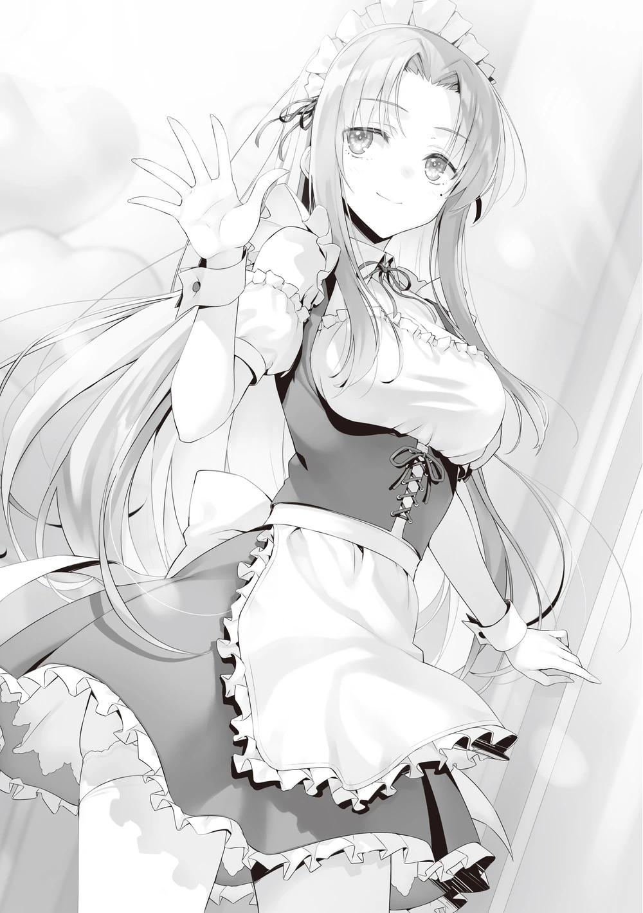
Lo que parecía una situación estancada y competitiva dio un nuevo giro cuando los clientes se acercaron a la cafetería de concepto japonés para ver cómo le iba al otro bando. Una larga cola de clientes esperaba para entrar en la cafetería.
―Éste está tan lleno como el otro.
El lugar estaba aún más concurrido de lo que había imaginado, y no tuve tiempo de hablar con los alumnos de la clase de Ryuuen.
No podía juzgarlo todo sólo observando la escena, pero sospechaba que había poca diferencia en la cantidad de puntos que ganaban. Era lo suficientemente formidable como para aspirar a lo más alto, pero aun así, no había garantía absoluta.
―Siento haberla llamado hasta aquí, Chabashira-sensei.
Llamé a Chabashira-sensei, que habría estado usando sus puntos para una clase que no era de segundo año en el campus.
―¿Ha terminado de usar sus puntos privados?
―¿Hmm? Ah, quedan 80. Yo diría que los he agotado. ¿Qué pasa?
No quedaba mucho tiempo, y parecía haber terminado firmemente su contribución al festival como profesora.
―En otras palabras, ¿está libre el resto del día?
―Sí, así es. Ahora sólo tenemos que esperar a que termine el festival cultural... ¿Qué demonios es esto?
Mostró su confusión, sin entender por qué la habían convocado aquí.
El café kimono era sólo un telón de fondo. No voy a decir que fuera próspero o que la clase de Horikita pudiera perder.
Dejé que Chabashira-sensei viera el impulso y lo interpretara como le pareciera.
―En realidad, me gustaría pedirle a Chabashira-sensei su cooperación para la próxima hora más o menos.
―No, no, no, espera, Ayanokouji, ¿cooperación? No entiendo de qué estás hablando.
Los profesores debían contribuir al festival gastando puntos en la escuela.
Esa era la única función que se les había asignado hoy.
―Queremos que Chabashira-sensei sea nuestra sirvienta para hacer ventas en el maid café.
Le dije la estrategia para llegar al tablero de la victoria, pero...
―¿Qué...?
Esta podría ser la estrategia más tonta que se me haya ocurrido en mi vida.
―¿Quieres que me convierta en una sirvienta? Quiero que escuches con mucha atención lo que estás diciendo ahora.
―¿No se lo acabo de decir? Simplemente haré lo que pueda para ganar.
―¿Por qué debería ser la sirvienta? Yo soy la maestra. No puedo estar comprometida con una clase en particular.
―Eso no es verdad. La regla esta vez es que los profesores de la escuela deben ser tratados como si fueran invitados de honor. A los profesores titulares no se les permite usar puntos en su grado. Esas son las dos únicas reglas que se impusieron. Tampoco hay ninguna norma que establezca que sólo los alumnos pueden participar en la presentación. En casos extremos, deberían ser libres de hacer que los invitados de honor les sirvan. Sería inusual, pero ese problema podría resolverse si el invitado da su consentimiento.
No se trata de una actividad prohibida por el reglamento. Sería una clara infracción si la persona comprara productos en una tienda de conveniencia, en el centro comercial Keyaki o en cualquier otro lugar distinto de los puntos de venta disponibles en el festival, utilizando gastos personales.
Sin embargo, en términos de "recursos humanos", no había necesidad de solicitar dicho permiso, y era gratuito. Chabashira-sensei se mostró confusa, como si su mente no comprendiera del todo lo que tenía que hacer.
―¿Se lo explico más claramente? Suponiendo que hubiera un estudiante llevando una carga pesada, se marea. Un invitado que pasaba por allí se ofreció a ayudar y llevó la carga sobre sus hombros hasta el lugar deseado. ¿Es esto una violación?
―No es una violación...
―Exactamente. Se puede sustituir a los alumnos por otras personas: La clase A de 2º año pide ayuda a la clase D de 2º año, y la clase D acepta de buen grado. ¿Habría algún problema si prestáramos a los alumnos?
Las razones para prestarlos son variadas. Prestar ayuda por auténtica preocupación, urdir un plan para causar problemas internos o intercambiar trabajo y compensación por algo a cambio.
Cualquiera que fuera el motivo, siempre que estuviera dentro de las normas, la escuela no te culparía por ello. De hecho, paseando por la escuela, vi a unos cuantos alumnos apoyando a otras clases.
―No veo el problema.
―Es lo mismo. La disposición de un profesor a ayudar no es, en sí misma, una violación de las normas.
―No, no lo es. Se sigue considerando una ayuda para la clase en la que estás.
―Así es. Aunque esté ampliamente permitido, no se puede estar seguro de que no se exprese esa opinión.
Por eso hay que utilizar reglas claras y legítimas.
―Pagaremos los puntos privados que se generen al contratar profesores.
Estoy seguro de que la escuela está estudiando esa posibilidad en previsión de este festival.
―De ninguna manera, no, pero... no sé si soy... suficiente para ser considerada...
Di en el blanco. Ella mostró una expresión así. Chabashira-sensei también es profesora en esta escuela, y en el pasado estuvo a cargo de otras clases. Es natural que la escuela hiciera varias suposiciones para un festival cultural que nunca se había celebrado en el pasado.
En principio, los puntos privados en esta institución escolar son un arma poderosa. No es de extrañar que pudiera ser utilizado no sólo para las compras de rutina, sino también para asegurar el personal si es necesario.
―No hay nada en esta escuela que no se pueda comprar con puntos privados. ¿Hay alguna diferencia?
Negar esto era negar la escuela.
Y era como admitir que eras un profesor descalificado.
Chabashira-sensei no tenía derecho a negarse, aunque estuviera lejos de su intención. Presa del pánico, Chabashira-sensei empezó a leer las normas sobre el festival en su celular.
―Pagar 100.000 puntos privados por cada hora que los alumnos pidan ayuda a un profesor.
―Parece que estás bien preparado para las reglas ocultas que sólo tienen estas escuelas. Esa es la opción.
Esto era lo mismo que pasaba cuando se usaban puntos privados para comprar las notas de los exámenes.
―Son 100.000 puntos por hora. No es un trato barato. ¿Estás seguro de que quieres hacerlo?
―Claro que estoy seguro.
Pedir a los profesores que colaboren intrínsecamente no ayuda mucho. Tanto si los pones a cocinar como a servir, si no han practicado previamente, será una pérdida de puntos privados tenerlos a tu lado durante una hora o así.
Si tienen que salir al restaurante a servir a los clientes, es difícil que realicen el trabajo en el acto. Pero si los utilizaras de una forma distinta a la habitual, podrías conseguir el efecto por el que pagaste.
―¿Estás muy, muy seguro?
―Lo siento, Chabashira-sensei, pero ahora voy a pedirle que me ayude aunque no quiera. No tengo mucho tiempo que perder en este momento.
Después de las tres de la tarde, no podríamos disponer de una hora completa de ayuda, lo que nos restaría eficacia.
―Bueno, espera. Sí, ¿por qué no le preguntas a Chie? Ella hace mejor este tipo de cosas. Estaría dispuesta a hacerlo aunque fuera para una clase rival.
―Estoy seguro de que ella lo haría. Pero lo que busco ahora no es a alguien que pueda hacerlo con destreza, sino a alguien que sea torpe. Porque creo que cuanto más torpe sea, o cuanto más eficaz sea a un costado, más efectivo será.
―No tengo ni idea de cuál es tu lógica.
Debía ser verdad que en el fondo no le gustaba y que no lo entendía. Era porque ella no entendía que Chabashira-sensei funcionaba de cierta "manera" y que podía ser atractiva para cierto público.
―No hay más tiempo. Por favor, ocúpese de ello.
La obligué a aceptar mis puntos privados mientras tomaba mi teléfono y le pagaba a Chabashira-sensei.
―Tenemos un trato.
―Eso no es justo, Ayanokouji, usando las reglas de la escuela.
Esto no es cobarde, es una forma muy directa de pelear.
―No tengo ni idea de cómo actuar en un maid café. No sé lo que me va a pasar.
―Eso está bien. No espero nada de la maestra.
Chabashira-sensei permaneciendo dentro del aula en un traje de sirvienta; ese solo hecho era suficiente para ganar.
PARTE 4
Tras empujar a la reticente Chabashira-sensei al vestuario, pegué el texto que preparé en mi celular y lo envié a todos mis compañeros a la vez como un mensaje colectivo.
El propósito era informar a los alumnos de que Chabashira-sensei trabajaría como sirvienta sólo durante la última hora, e informar a los alumnos que estuvieran disponibles de que debían recorrer la escuela anunciando el evento.
Como estaba previsto, el rumor corrió rápidamente de boca en boca. Utilizando a los profesores, se trataba de un evento limitado y sobredimensionado que los alumnos nunca serían capaces de llevar a cabo. El aire en el pasillo zumbaba tanto que al instante se convirtió en un alboroto.
Chabashira-sensei, vestida de sirvienta, entró corriendo en el pasillo con la cara roja.
―Bien, aquí estoy Ayanokouji, ¡date prisa y déjame entrar en el aula!
―La estábamos esperando.
No puedo seguir exhibiéndola gratuitamente, así que la conduje al interior del aula.
―Entonces, ¿qué se supone que tengo que hacer aquí?
―No tiene que hacer nada. Sólo manténgase quieta.
―¿Qué?
―Ya se lo dije, no quiero que sea hábil. Estoy deseando trabajar con usted.
Así, metí a Chabashira-sensei en el aula y la dejé sin hacer nada más que estar de pie.
No habló con nadie, sino que se quedó tímidamente de pie en un rincón de la clase. Como era torpe, no podía hacer nada en particular y se quedaba de pie sin hablar con nadie.
Esto era el colmo del erotismo.
A partir de ahora íbamos a tener que hacer un cambio importante en nuestra política de maid café. La mayor preocupación era el gran número de visitantes que no cabían en el aula. Para solucionar a la fuerza este problema físico, teníamos que hacer que los clientes pagaran un precio razonable. La idea era poner una tarifa de "sólo de pie" para acomodar a los clientes con exceso de aforo. Añadimos una norma que permitía la entrada inmediata previo pago de 1.000 puntos para acceder al aula.
Se ofrecería la entrada a los primeros visitantes que esperaran en la cola, y sólo se permitiría entrar en primer lugar a los que respondieran que estarían dispuestos a hacer cola. Algunos de los visitantes que esperaban en la fila en ese momento podrían quejarse, pero estábamos dispuestos a correr ese riesgo.
―Sala de pie, nunca había oído esa idea en un maid café.
Habría que instalar una sala de pie en el lado del aula donde no se pudieran colocar pupitres y en el espacio de la parte trasera del salón. Esto permitiría a la gente entrar en la sala sin pupitres ni sillas.
Y 2.000 puntos por una sesión de fotos con Chabashira-sensei.
Esto se venderá por más del doble del precio de una foto de una estudiante. Nos apresuramos a rellenar los invitados con la pizarra de la entrada.
―Increíble. ¿Pagaría un cliente ese precio?
―Mira detrás de ti.
Kushida, que había estado mirando la pizarra, miró hacia atrás y vio cómo los clientes que habían pagado su cuenta y aceptado la sala de pie desaparecían uno a uno en el aula.
El profesorado y el personal se quedaron intrigados ante aquel espectáculo, que no volverían a ver.
Aunque los profesores titulares del mismo curso tenían restringido el gasto de sus puntos privados, el número de profesores que seguían en la escuela y estaban a cargo de clases distintas de las de segundo curso era, por supuesto, abrumadoramente grande.
Los adultos que trabajaban en el centro comercial Keyaki tenían una fuerte imagen de Chabashira-sensei como maestra dura, de lo que habían sido testigos repetidamente en su vida diaria.
Los adultos llegaron como una ola.
Puede que algunos de ellos, desde fuera, no comprendieran la importancia de este fenómeno. Pero otra cosa sería la cantidad que pensó "merece la pena verlo".
Se sentían tentados por el escaso número de personas dispuestas a echar un vistazo, aunque no entendieran de qué hablaban los demás.
La cola del maid café estaba a rebosar, con más de 10 o 20 personas en ella. La larga cola no disminuía, sino que ganaba impulso.
―Vaya, esa es mucha gente, Ayanokouji-kun ―Una atónita Kushida se echó hacia atrás ante las hordas de adultos que entraban a raudales.
―Sí, supongo que sí. Para ser sincero, yo tampoco pensaba que fuera a ser tan grande.
―¿Cuánto tiempo llevas pensando en esta locura?
―Hace unas dos semanas. Lo tenía en mente como una joya escondida para el festival.
―¿Qué habría pasado si hubiéramos empezado antes...?
―Desde luego, el efecto duradero podría haber sido de dos o tres horas.
Pero surge otro problema. Porque si te sobra más tiempo, otras clases pueden hacer imitaciones similares.
―Ah, ya veo. Les queda menos de una hora, así que aunque quieran imitarnos, no pueden.
Si hicieras un espectáculo con profesores de esta clase y de otra, el efecto sería menor.
―Si vamos a montar un espectáculo, sólo tenemos esta última hora en la que también podemos hacer una premiere.
También ayudó el hecho de que Kushida y los demás habían corrido la voz sobre el maid café de forma positiva.
―Ya veo. No me extraña que no pudiera ganar.
―¿Hmm?
―Me di cuenta una vez más de lo grande que es Ayanokouji-kun. Es una molestia tenerlo como enemigo.
―Tus ojos no están sonriendo, Kushida.
―Supongo que es porque estaba mitad contenta de que fuéramos compañeros de clase y mitad molesta.
Dijo mitad y mitad, pero pensé que lo segundo era un porcentaje mayor.
―¡No me empujes! ¡Ponte en la fila! Por favor, ¡no empujen!
Sudou y su equipo se apresuraron a crear un muro de gente e intentaron que formaran una fila, pero aquello se estaba convirtiendo en una multitud, ya que algunos adultos buscaban de alguna manera asomarse al aula.
Pero esto también era un negocio. El interior estaba completamente oculto y las ventanas estaban cerradas, así que la única forma de ver por la fuerza el interior era romper el cristal de una ventana.
Por supuesto, ningún adulto haría algo así, así que les obligamos a formar una fila.
Mientras esto ocurría, el número de personas que querían fotografiar a Chabashira-sensei no cesaba. Tanto los clientes "de pie", que habían entrado en la tienda, como los que ya habían estado en ella levantaban la mano uno tras otro y pedían ser fotografiados.
―Puede que sea la persona que más ventas individuales haga en la última hora. Ni siquiera ha hecho algo.
―¡No puedo dejar entrar a más gente! ¡La segunda posición está ocupada!
La voz de Mii-chan resonó como un grito, y se nos informó de que los espacios se habían llenado.
―Ya está, ¿eh? Es una pena que el número de clientes todavía no haya disminuido nada, y no hay señales de que se vayan.
Dijo Kushida, preguntándose si debería estar satisfecha con el público que habían conseguido reunir.
―Todavía no. Los clientes que quedan ahora están en la cola porque tienen dinero. No voy a dejar que se vayan.
―¿Quizá haya que sacar las mesas o algo? Pero no puedo llevar las mesas con toda la vajilla y demás. Llevarlas me costaría mucho trabajo.
Era obvio que ya no había espacio en el aula para los invitados.
―Podemos usar este lugar para aprovechar un tercer espacio.
―¿Un tercer espacio?
Me volteé hacia todos los clientes de la fila y les dije.
―Lo siento, pero el restaurante está lleno y no hay más habitaciones disponibles.
Tras anunciarles esto, recibí una serie de miradas de adultos descontentos.
―Sin embargo, aquellos de ustedes que tengan al menos un punto disponible en este momento pueden ver la habitación desde esta ubicación pagando el importe total de su saldo de puntos.
Este lugar era el pasillo donde se formaban las colas para el maid café. Al abrir la puerta, se eliminaba la obstrucción, y al abrir la ventana, el aula se pseudo-extendía.
―¡¿Woah, estás usando el pasillo?!
―Sí.
―Pero la cantidad total podría ser pequeña, seguro, pero aún así podrían ser cientos de puntos... ¿te refieres a que quien tenga dinero y lo pague?
Al parecer no podía creer que hubiera muchos invitados que pagaran la cantidad completa por ella, a pesar de lo solicitada que estaba Chabashira-sensei.
―No hay problema. No sé si merece la pena pagar mucho dinero, pero no queda mucho tiempo. Incluso si sobraran casi 1.000 puntos, habría una gran duda sobre dónde y cómo utilizarlos.
―Ah, ya veo... Creía que iban a devolver los puntos sobrantes cuando acabara el festival.
―Se les notificó que los gastaran lo más posible. Prefieren gastar todos sus puntos a perderlos aquí. No es exagerado decir que 1 punto o 10.000 puntos valen lo mismo para los adultos que los reciben.
De hecho, cuantos más puntos tuvieran, más pensarían que tienen que gastarlos aquí. Además, todavía quedan muchos adultos que han tenido que esperar tanto.
―Por favor, esperen ahí mientras vamos a la caja en orden.
Di la orden y envié a algunas personas a cobrar las ventas. Luego puse a los adultos en fila en el pasillo y los dirigí a una posición desde la que todos pudieran ver el interior del aula.
―Ahora sólo tenemos que abrir las cortinas que hemos estado utilizando para ocultar el aula.
Al hacerlo, se completó el tercer espacio. Las cortinas se abrieron de golpe y Chabashira-sensei se sorprendió al verlas.
Para Chabashira-sensei, era una especie de ejecución pública, pero como pagamos a la escuela por ello, no había necesidad de sentirse mal.
―Oh, oh, ya veo...
Un profesor que acababa de cotillear la transformación de Chabashira-sensei sonó impresionado.
La visión de un traje familiar, único y nunca visto en una colega debía de ser un poderoso estimulante. Así, la presentación pública de Chabashira-sensei continuó hasta las cuatro de la tarde, utilizando este pasillo.
Al final, Chabashira-sensei se hizo con el primer puesto, superando a Kushida, con 63 fotografías deseadas.
PERSONAJES INVISIBLES
A las tres de la tarde, mi trabajo en el festival llegó a su fin.
Salí del aula, dejando a Ayanokouji-kun a cargo, justo cuando nuestra joya oculta hizo una emocionante aparición.
―Nunca pensé que realmente convertirías a Chabashira-sensei en una sirvienta.
Ayanokouji-kun y yo habíamos discutido todos los preparativos de antemano para este festival. Me enteré de que Chabashira-sensei sería utilizada para la última hora del programa, pero era escéptica de que fuera posible. Sin embargo, no sólo lo consiguió, sino que estaba creando un efecto tremendo. Cada vez que caminaba por el pasillo, oía circular los rumores sobre el disfraz de sirvienta de Chabashira-sensei.
En cualquier caso, la participación de Chabashira-sensei fue un acontecimiento oportuno para mí personalmente. La gran cantidad de atención que atraía el ala especial alejaría irremediablemente a la gente de otros lugares.
Tras enviarles un mensaje por el celular y asegurarme de que lo leyeran, decidí dirigirme a la sala del consejo estudiantil. El motivo era que quería volver a repasar las notas.
Por supuesto, podría habérselo preguntado a Yagami-kun el día de la reunión del consejo estudiantil, pero eso me habría imposibilitado observarlas con calma.
Él era una persona que podría terminar siendo una razón para que Ayanokouji-kun dejara la escuela. Parecía tener una conexión con Amasawa-san y era extremadamente peligroso físicamente.
Además, si era Yagami-kun, pedirle que me enseñara las notas de nuevo le haría saber que sospecho de él.
No. Si asumes que él es el culpable, es mejor asumir que él ya lo pensaba. De todos modos, para estar segura sin ser descubierta, había que elegir una hora en la que no hubiera nadie.
El consejo estudiantil estaba cerrado por un tiempo debido a las circunstancias del Presidente del Consejo Estudiantil Nagumo. Esto significaba que la oportunidad de espiar los procedimientos se había restringido, pero a la inversa, la innecesaria dispersión de los miembros se había hecho de forma natural.
Pensé que el momento del festival sería el mejor para aprovechar esta oportunidad. Informé a Chabashira-sensei por la mañana de que lo más probable era que hubiera dejado mi cuaderno en la sala del Consejo Estudiantil, y ella me dio permiso para ir a la sala de profesores durante el descanso para recoger la llave y recuperarlo.
Aunque entrara ahora en la sala del consejo estudiantil y me vieran, seguiría teniendo una buena razón. Me cambié rápidamente el uniforme de sirvienta por el de la escuela y me dirigí a la sala de profesores.
―Faltan cincuenta minutos, ¿eh?
Exhalé mientras pasaba por delante de la oficina del consejo estudiantil y miraba el reloj del pasillo. Hoy ha sido un día ajetreado. Todavía no terminaba, pero mi turno del día ya había concluido. Debido al requisito de que debo tomarme un descanso de una hora, el festival terminará en cuanto acabe mi descanso.
Estuve muy ocupada desde la mañana, poniéndome el uniforme de sirvienta y trabajando sin descanso. Me volví a poner el uniforme y me dirigí a la oficina del consejo estudiantil e introduje la llave en la puerta silenciosamente.
La sala del consejo estudiantil estaba vacía hoy, ya que los miembros del consejo estudiantil estaban ocupados con el festival. Esto significaba que no sería difícil volver a repasar las notas y sacar una foto de lo escrito con mi teléfono.
Eso es lo que pensé, pero entonces me giré y...
Mi teléfono tembló en mi bolsillo por una llamada entrante. Me sobresalté al ver el nombre de la persona que llamaba.
Yagami Takuya. ¿Por qué me llamaba a esta hora? Presintiendo que se trata de una espeluznante coincidencia, contesté.
―¿Hola?
―Horikita-senpai ―La voz de Yagami-kun, que debería sonar a través del teléfono, llegó directamente a mis oídos desde una pequeña distancia.
La persona que menos quería ver ahora mismo se giró hacia mí y me saludó con una sonrisa. Sentí escalofríos por todo el cuerpo, como si me hubieran rociado directamente el corazón con agua fría.
―¿Te asusté?
Con eso se acercó a mi lado mientras colgaba el móvil.
―Yagami-kun, ¿por qué estás aquí?
―¿Qué quieres decir, senpai? ¿No te diste cuenta de que llamé desde cerca?
Estaba tan concentrada en otras cosas que quizá no fui capaz de verlo. Era como si Yagami-kun estuviera intentando averiguar lo alterada o nerviosa que estaba.
―Por cierto, ¿por qué estás en un lugar tan desierto, senpai? ¿No es hora de dar el último esfuerzo cuando el festival entra en su clímax?
―Estoy de descanso, así que mi papel en el festival se acabó. Sólo quería estar sola un rato.
―¿Un descanso a las 3 de la tarde? Elegiste una hora inusual, ¿no?
Inusual, tal vez. Nunca había vivido un festival de este tipo, así que no tenía criterio para juzgar. Sin embargo, dado que la norma era que todos los participantes debían tomarse un descanso de una hora, debía de haber un cierto porcentaje de estudiantes como yo que optaron por tomárselo a las tres de la tarde.
Mi hilo de pensamiento no dio con una respuesta inmediata y me quedé en silencio durante unos segundos.
Entonces me di cuenta. Las palabras de Yagami-kun, "hora inusual", no eran ni verdaderas ni falsas. Era simplemente un intento de averiguar si había elegido las tres de la tarde como hora de descanso sin ninguna intención, o si lo había hecho a propósito.
De hecho, estaba demasiado alterada para responder inmediatamente. No importa cómo respondiera después. Puede que ya hubiera caído en la trampa.
No, todavía no. Aquí había una opción para seguir adelante, ya que retrasé mi respuesta. La incómoda frase "hora inusual" sólo se pudo escuchar una vez.
―¿Por qué está Yagami-kun aquí?
―Encontré a Horikita-senpai con una cara sombría, así que sentí curiosidad y te seguí.
―¿Perdón? Sea cual sea la razón, no me impresiona que sigas a una chica.
―Pensé que te había llamado adecuadamente, pero supongo que no me oíste con el bullicio.
En mi camino, definitivamente estaba pensando. Pero eso no impediría que me diera cuenta si me llamaba. No pude evitar la sensación de que me estaba influyendo de la misma manera que antes, pero puede que no haya un significado real en toda esta secuencia de acontecimientos. Además, podría haberme llamado varias veces antes de venir aquí. ¿O tal vez no me siguió, sino que estaba en los alrededores... desde el principio?
Todo esto suponía que Yagami-kun era la persona a la que he estado siguiendo y que escribía bien. Si es irrelevante, supongo que tendré que disculparme más tarde por ser tan escéptica.
―¿Tienes permiso para abandonar el festival?
― Ya hice lo que tenía que hacer. No es un descanso, pero tengo tiempo libre porque no hay ninguna norma que diga que no puedes descansar más de una hora.
¿Seguía siendo una coincidencia? No, no te hagas esa idea. Si luego resulta ser una coincidencia, entonces no hay problema. Pero si no fue una coincidencia, entonces estoy en problemas ahora.
―¿Qué quieres en la sala del consejo estudiantil? Está cerrada y no creo que haya nadie ―Yagami-kun preguntó mirando la puerta de la sala del consejo estudiantil como si anticipara mi llegada.
―Estoy buscando algo. Tomé prestada la llave de la sala de profesores, así que no hay problema.
―¿Estás buscando algo? Si es así, puedo ayudarte a encontrarlo.
La calma y la impaciencia empezaron a competir en mi mente. No puedo determinar con claridad si su afirmación era sólo bienintencionada o si tenía malas intenciones.
―No es que necesite tu ayuda.
―Es tan importante que te has tomado la molestia de buscarlo en medio de un festival cultural, ¿no?
Sonó como una afirmación que me desnudaba y serruchaba mis pensamientos.
―Es un cuaderno. Lo compré hace tiempo y me cuesta encontrarlo. No es bueno para mi salud mental pensar que otra persona pueda tomarlo y leerlo.
Estuve a punto de dejarlo, pero me sigue molestando. El único sitio donde no he mirado es en la oficina del consejo estudiantil.
No tenía sentido pasar más tiempo aquí. Le conté a Yagami-kun la mentira que le había dicho a los profesores.
―Entonces ayudaré con la búsqueda. Será el doble de eficiente buscar con dos personas en lugar de una, ¿no?
―Sí, así es.
Desbloqueé lentamente la puerta y la abrí. Dejé de moverme para entrar en la sala del consejo estudiantil un paso por delante de Yagami-kun, que estaba a mi lado.
―¿Horikita-senpai? ¿Necesitamos a dos personas para registrar la sala del consejo estudiantil en busca de un objeto olvidado? ¿Hay algo más que estés buscando?
―¿Eh? ―Dadas las circunstancias, me atreví a contraatacar―. Intenté rechazar tu ayuda porque sinceramente me sentía un poco asustada.
―Tienes miedo... ¿por qué?
―¿No lo entiendes?
―No tengo ni idea.
―Estamos en una sala vacía del consejo estudiantil. Antes dijiste que me llamaste, pero no me di cuenta. Era como si me estuvieran siguiendo mientras estábamos solos. ¿Sabes lo que eso significa para una chica?
Aquí fue donde le tendí una trampa, no en términos de Horikita Suzune como individuo, sino en términos de diferencias sociales de género. Podía deshacerme de él de forma absoluta, independientemente de si era persistente o no.
―Vaya, ya veo. Lo siento, no había pensado en eso para nada. Ya veo...
Esto hizo imposible eludir la sala del consejo estudiantil y también hizo imposible esperar en el pasillo. Sería demasiado espeluznante hacer eso.
―Lo siento. Creo que mi comportamiento estuvo mal ―Yagami-kun hizo una profunda reverencia―. Pero, a riesgo de parecer grosero, ¿puedo decir una cosa?
―¿Lo siento?
Mantenía la cabeza inclinada y no la levantaba, ¿qué iba a decir en ese momento?
―El verdadero propósito de la visita de Horikita-senpai a la sala del consejo estudiantil...
Yagami-kun levantó la vista, y justo después...
La postura de Yagami-kun de repente se derrumbó delante de mí, y la parte superior de su cuerpo se dobló.
No, fue atacado.
―¡Lo tengo!
Con una voz como esa, Ibuki-san apareció, vestida con un kimono.
―¡Espera, Ibuki-san!
―¡No te quedes ahí parada, déjame entrar, Horikita!
Sería un gran problema si me encontraban, ya que sin duda parecía un evidente acto de violencia. Abrí la puerta de la sala del consejo estudiantil e Ibuki-san empujó con fuerza a Yagami-kun para que entrara.
―Oye, ¿qué estás haciendo? ―El primero en hablar fue, por supuesto, Yagami-kun, la víctima.
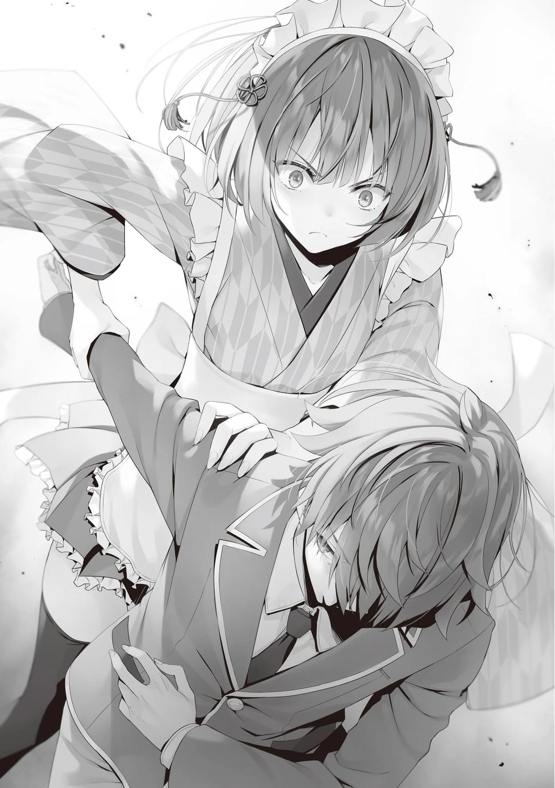
Ibuki-san apareció por detrás, confundida por la situación, tras detener a Yagami-kun.
―Fuiste salvada de nuevo por mis hazañas, Horikita.
― ¿Salvada? No te pedí nada...
―Me dijiste que tuviera mucho cuidado con este tipo. Y tú estabas siendo presionada por él. Es normal que pienses que pasa algo ―Dijo cosas que no tenía que decir de golpe.
Su comportamiento obstinado hizo inútiles todas mis conversaciones anteriores.
Decir que yo le había advertido delante de la persona en cuestión no era más que una tontería.
―Um, ¿a quién quieres que preste atención?
Yagami-kun, incapaz de moverse, hizo la pregunta con naturalidad. Ahora que había llegado a esto, no tenía más remedio que tirárselo todo encima.
―Pido disculpas por la violenta formalidad. Pero tengo algo en mente sobre ti. ¿Recuerdas el otro día cuando me enseñaste las notas de la reunión?
―Fue en relación con los comentarios del presidente del Consejo Estudiantil, Nagumo, ¿no?
―Sí. Quería comprobar de nuevo lo que escribiste en el cuaderno.
Concretamente, tu letra de las cartas.
―¿Cartas? No estoy seguro, pero lo que realmente buscas es el cuaderno lleno de las actas de las reuniones, ¿verdad? ―Yagami-kun continuó, con cara de desconcierto―. Dijiste que querías comprobar mi letra, pero ¿cuál es tu verdadera intención?
Continué mi explicación, aunque sentía curiosidad por lo que estaba a punto de decir antes de que apareciera Ibuki-san. Le expliqué cómo se introdujo un trozo de papel en mi tienda durante el examen especial de la isla deshabitada.
Yagami-kun escuchaba en silencio mientras era sujetado, queriendo saber quién era el remitente de ese papel.
―¿Quieres decir porque la letra en mis registros y la letra en ese papel eran similares?
―Sí, eso es correcto.
―Si esa historia es cierta, desde luego puedo entender tu recelo hacia mí.
Y para confirmarlo en secreto, habría sido mejor hacerlo en este momento.
Debido al periodo de preparación del festival, la gente iba y venía los sábados y domingos, y los estudiantes recorrían toda la escuela para buscar posibles puestos, así que no podía tomar la opción de recogerlos entonces.
―Pero yo no soy el remitente de la carta.
Yagami-kun lo negó de una vez por todas, y aunque me sentía inclinada a creerle, no estaba segura de si debía...
Cuando fui incapaz de aceptarlo sinceramente, se volvió un poco más enfático.
―¿Tienes alguna razón para dudar?
―Por desgracia, no tengo ningún motivo. No puedo esperar que lo admitas honestamente.
―Si no te importa, ¿podrías enseñarme ese papel una vez? Entonces creo que puedo pedirte que compares la letra con la mía, y debería ser capaz de probar mi inocencia.
―Me temo que eso es imposible. Tuve un pequeño problema y perdí ese papel.
Amasawa-san se enfrentó a mí en la isla y lo rompió en pedacitos.
―Eso es un problema. ¿No significa eso que no puedo probar mi inocencia?
―Por eso quiero volver a comprobar las notas primero.
―Aunque las reconfirmes, no puedes estar segura de su coherencia con tu memoria, ¿verdad? Más bien, Horikita-senpai ahora sospecha fuertemente de mí. Si ese es el caso, la posibilidad de ser hecho el culpable debido a una
memoria borrosa no es pequeña del todo. Las probabilidades están claramente en mi contra.
―Puede que tengas razón.
No quería que fuera Yagami-kun, pero tenía la fuerte sensación de haber encontrado al culpable. Podía entender su preocupación por los acontecimientos que tendrían lugar.
―No está bien que sospechen de mí, pero de todos modos ¿puedes soltarme la mano? En cualquier caso, creo que sería de agradecer que ambas se retiraran antes de que sea demasiado tarde. ¿Cómo van a excusarse si el presidente del Consejo Estudiantil Nagumo ve una escena como esta más tarde?
Estábamos reteniendo a un chico de primer año sin ninguna razón.
Seguramente esta situación no era más que un cúmulo de inconvenientes para nosotras. Sería otra historia si nos hubieran agredido, etc., pero él no había hecho nada.
―Ibuki-san, déjalo ir ―Le ordené a Ibuki-san que siguiera sus palabras.
Pero la expresión de Ibuki-san era adusta e imperturbable mientras sujetaba a Yagami-kun.
―Lo siento, pero esto no funciona así.
―¿Por qué no?
―Porque mi intuición me dice que la gente de aspecto inofensivo como tú es la más peligrosa.
Eso es lo que había aprendido antes con Ayanokouji-kun. Pero estaba claro por su comportamiento que no era sólo una cuestión de apariencia.
―¿Tienes algún otro motivo?
―Tienes la costumbre de parecer débil a simple vista, pero tienes un muy mal sentido del humor revoloteando por ahí. No eres sólo un chico escuálido,
¿verdad?
Pensé que era porque Ibuki-san estaba en contacto directo con él que sabía lo que estaba pensando. La parte sobre la posibilidad de que la persona que buscábamos fuera bastante hábil. Si ese era realmente el caso de Yagami-kun, entonces no era de extrañar que fuera un fuerte sospechoso.
―El mensaje que me enviaron es muy similar a la letra de Yagami-kun.
Añade a eso, la habilidad física oculta, y el hecho de que apareció aquí.
―Es cierto que no me importa hacer ejercicio, así que tengo cierta confianza en mi cuerpo ―Suspirando irritado, Yagami-kun levantó ligeramente la mirada y me examinó.
―Yo también estoy un poco enfadado contigo. Esta situación es demasiado injusta.
No sería de extrañar que Yagami-kun tuviera alguna habilidad física elevada, como había leído Ibuki-san. Originalmente, su grado OAA era C, que era promedio. Era posible que la velocidad de carrera y la habilidad deportiva de Yagami-kun fueran bajas, y que sólo fuera competente en artes marciales.
¿Era cinturón blanco o negro? Como la sentencia estaba presionada por el tiempo, el silencio se rompió de forma inesperada.
La puerta de la sala del consejo estudiantil, donde se suponía que no debía entrar nadie, se abrió sin previo aviso.
―Oh mierda, esta es una situación bastante inusual, ¿no?
El que apareció fue el presidente del consejo estudiantil Nagumo, sólo que Yagami-kun no cambió de actitud, pero Ibuki y yo nos quedamos terriblemente sorprendidas debido a nuestro comportamiento culpable.
―Presidente del consejo estudiantil, ¿por qué está aquí ......?
―¿Qué es esto?
Con "esto" se refería principalmente a que Ibuki-san estaba conteniendo a Yagami-kun.
―Si se necesitaron dos chicas para intimidar a un estudiante menor, eso es un gran problema, vaya.
Ibuki-san no podía seguir sujetándolo, así que soltó a Yagami-kun con ambas manos.
―Gracias por salvarme, Presidente del Consejo Estudiantil Nagumo
―Yagami-kun parecía tranquilo y se arregló su uniforme alborotado.
¿Qué pasaba con el comportamiento tranquilo de Yagami-kun, como si hubiera sabido que el presidente del consejo estudiantil iba a venir?
―Entonces, vamos a pedirles que expliquen por qué están aquí sin permiso.
Si decía que perdí mi cuaderno, Yagami-kun podría señalar que estaba mintiendo. Por otro lado, si sacaba el tema de los apuntes, la historia se extendería hasta el presidente del Consejo Estudiantil, Nagumo.
―Al parecer, Horikita-senpai perdió su cuaderno y yo iba a ayudarla a encontrarlo... Ibuki-senpai pensó erróneamente que yo estaba atacando a Horikita-senpai y actuó como lo hizo sin motivo aparente ―Contestó, no tratando de acorralarme, sino de defender mi mentira.
―Ya veo, así que esa es la razón de la retención.
―Creo que el malentendido ha quedado aclarado, y no tengo especial intención de darle importancia.
―Entonces no hay necesidad de hacer más mención. Entonces,
¿encontraste el cuaderno?
Si él estaba dispuesto a responder, yo estaba agradecido de seguir con el proceso.
―No, no lo encontré. Este fue el último lugar donde lo dejé. Quizá lo confundí con basura y lo tiré. Me rendiré.
Aunque podía comprobarlo él mismo, seguramente no le importaba el paradero del cuaderno. El presidente del estudiantado apartó la mirada de mí, como si no le interesara, y luego se sentó en su sitio habitual.
―Sea cual sea el motivo, esto no es algo que debas hacer en medio de un festival cultural. Déjalo ya.
Aunque persistiera aquí, ya no podría ver las notas de la reunión. Tenía que retirarme en silencio por ahora. Con ese pensamiento en mente, estaba a punto de salir de la habitación con Ibuki-san, pero entonces...
―Por cierto, presidente del consejo estudiantil Nagumo, ¿cómo sabías que estábamos aquí?
Yagami-kun hizo semejante pregunta junto a mí e Ibuki-san.
―¿Tienes curiosidad?
―Se suponía que la puerta de la sala del consejo estudiantil estaba cerrada. Pero el presidente del consejo estudiantil no dudó en entrar aquí, así que me preocupé un poco.
Era ciertamente extraño. No sabía si el presidente del consejo estudiantil tenía una llave de repuesto o no, pero debería haber intentado abrir la puerta introduciendo la llave al menos una vez. Era comprensible desconfiar de que entrara en la habitación con tanta naturalidad, sin hacer preguntas. Era como si supiera desde el principio que algo estaba pasando...
¿Estaban el Presidente del Consejo Estudiantil Nagumo y Yagami-kun planeando encontrarse aquí? Si era así, entonces la predicción de Yagami-kun de que el presidente del consejo estudiantil vendría tendría sentido. Pero, la conversación entre los dos estaba lejos de ser un indicativo.
―Estaré encantado de responderte, pero antes, quería preguntarle algo a Yagami-kun también.
―¿A mí?
―Recuerdas el asunto del que hablamos en la sala del consejo estudiantil el otro día, ¿verdad? Te dije que corre el rumor de que estoy intentando expulsar a algunos alumnos con mucho dinero.
―Por supuesto. He estado indagando por mi parte, pero no he podido averiguar de dónde vienen los rumores.
No podía seguir con el repentino resumen de la historia.
―Pero tú lo sabes, ¿no? De dónde vienen los rumores.
―¿Perdón?
―Quiero decir, tú eres quien los empezó, ¿no?
El Presidente del Consejo Estudiantil Nagumo pateó ligeramente la parte inferior del escritorio con frustración.
―Espera, por favor. ¿Qué demonios está pasando de repente? ¿Por qué iba a hacer algo así?
Igual que nosotros sospechábamos de él, ahora sospechaba de él el Presidente del Consejo Estudiantil Nagumo. Y era completamente independiente.
―La razón por la que lo hiciste está bastante clara. Fue un examen especial entre los alumnos de primer año en el que se expulsó a ciertos estudiantes por un premio en dinero. Tú fuiste uno de los pocos que participaron.
La expresión de Yagami-kun se nubló ligeramente aquí. Contenía irritación, igual que la del Presidente del Consejo Estudiantil Nagumo.
―¿Qué quieres decir, Presidente del Consejo Estudiantil Nagumo, de qué demonios estás hablando?
―Lo negaste en la reunión del consejo estudiantil, pero era un hecho.
―Bueno, tú también estabas involucrado, ¿no?
―Pero yo no rompí ninguna regla, ¿sabes? Es sólo la política de la escuela. Estaba sustituyendo al director Tsukishiro como presidente del consejo estudiantil para mantener la imparcialidad. ¿Estoy en lo cierto? Yagami.
Hubo implacables exámenes especiales en esta escuela, pero no creí que eso fuera posible.
―¿No era una regla no hablar de ese examen especial y sus participantes?
―Tú rompiste esa regla primero, ¿no?
―No fui yo. No tiene ningún mérito avergonzar al Presidente del Consejo Estudiantil Nagumo. Además, hubo varios otros estudiantes de primer año que recibieron la misma explicación.
―Bueno, sí. Pero tú apareciste aquí. Es tentador especular.
―Es sólo una coincidencia.
El Presidente del Consejo Estudiantil Nagumo estaba mirando a Yagami-kun, pero cambió su mirada hacia nosotras.
―Ahora regresen ustedes. Yo hablaré con Yagami a partir de aquí.
―No sabía sobre ese asunto, pero por favor permítanme hablar.
―Horikita-senpai, ¿qué vas a decir?
Yagami-kun intentó contenerme con la mirada. 'Te cubrí antes, devuélveme el favor' parecía estar diciendo. Tuve que ignorar semejante mirada.
―Dímelo.
―No sé si fue él quien difundió el rumor sobre ese examen especial. Pero no creo que sea una coincidencia que haya aparecido por aquí; Yagami-kun me estaba siguiendo. O ahora tengo la fuerte sensación de que ha estado vigilando esta sala del consejo estudiantil desde el principio.
―¿Eso crees, Suzune? ¿Es cierto, Yagami?
La expresión de Yagami-kun se endureció al verse atrapado entre las dos partes, pero luego exhaló irritado.
―Lo comprendo. Ustedes dos estuvieron trabajando juntos desde el principio, ¿no es así? Desde el momento en que me entregaste esa carta encubierta como una carta de amor, decidiste arrinconarme aquí, ¿verdad?
―¿La carta encubierta como carta de amor?
―¿Te refieres a ésta?
El presidente del Consejo Estudiantil, Nagumo, sacó de su bolsillo la carta de amor que recibí de Ichihashi-san.
¿Qué quería decir con una carta encubierta como carta de amor?
――No lo entiendo. Es sólo una carta de amor de un remitente desconocido, con los verdaderos sentimientos hacia mí escritos en ella.
―No, no lo es. La carta es de hecho una carta de amor a primera vista, pero dice: "Festival Cultural, 3:00 p.m., Sala del Consejo Estudiantil". Otras palabras como "importante", "expulsión" y "secreto" están por todas partes. ¿No?
Abriendo la carta ya sellada, el Presidente del Consejo Estudiantil Nagumo la miró por encima.
―¿Dónde está escrito eso? No tengo ni idea.
Con eso, el Presidente del Consejo Estudiantil Nagumo se movió para entregarme la carta de amor.
―Disculpa.
Tomé prestada la carta y miré el contenido. Pero no pude encontrar la carta que Yagami-kun mencionó en ninguna parte.
Ibuki-san también sintió curiosidad y echó un vistazo a la nota, pero su reacción fue la misma que la nuestra. Así era el contenido:
[Quiero que me perdones por confesarme sin decirte mi nombre. Siempre te he querido].
―Por favor, deja de jugar. Si analizas los anagramas, encontrarás la verdad.
―¿Qué es un anagrama?
A diferencia de Ibuki, que no entendía el significado de la palabra en sí, me pregunté si quería decir que esta carta estaba escrita con un anagrama. Un
anagrama es una reorganización de letras para cambiar su significado. Un juego de palabras.
Aunque intentes encontrar la respuesta varias veces, no la encontrarás enseguida. Quizá puedas encontrarla con el tiempo, pero no es posible reconocerla al instante.
―Eres muy inteligente, Yagami. Aparentemente ni Suzune ni yo podemos analizar anagramas de inmediato, ¿verdad?
Yagami-kun desconfiaba tanto de nosotros como nosotros de su creciente escepticismo.
―¿Podría haberlo escrito alguno de ustedes dos? ¿O fue alguien que conocen en común?
―¿Conocido en común? ¿De quién demonios estás hablando?
―Eso no lo sé. Pero puedes confiar en que seguí el anagrama hasta este lugar.
Si eso era así... no, dijo algo completamente extraño.
―No me importa en este momento si es un anagrama o no. ¿Cómo sabes por adelantado lo que hay en esta carta de amor? La leíste antes de entregármela, ¿verdad?
Sí. No había otra forma de saberlo.
―Es por coincidencia. Cuando dejé caer la carta, el sello se desprendió y salió el contenido. Se suponía que no debía mirarla, pero no pude resistirme a revisarla.
―Ese no es muy buen comportamiento para un miembro del consejo estudiantil.
Comprendía la tentación de echar un vistazo, pero normalmente me contenía. Y
más si se trataba de una carta intercambiada por un tercero que no tenía nada que ver conmigo. ¿Me arriesgaría a comprobar el contenido de una carta enviada entre terceros con los que no tengo nada que ver? Es cierto que no
saber el nombre del remitente despertaba mi curiosidad, pero otra cosa era si comprobaría el contenido de la carta.
―Comprobaste el interior porque sueles tener mala moral, ¿verdad? Tenía la corazonada de que me estaban tendiendo algún tipo de trampa.
―De momento no parece que podamos creer del todo tus palabras.
Me sentía extrañamente incómoda con toda esta discusión. El mundo como yo lo veía, el mundo como Yagami-kun lo veía, y el mundo como el Presidente Nagumo lo veía. No podía evitar sentir que todos eran ligeramente diferentes entre sí.
Parecía que encajaban, pero no era así. Me sentía incómoda, como si tuviera algo entre los dientes.
Ya era bastante malo que Yagami-kun leyera la carta sin permiso. Sin embargo, el hecho de que difundiera un pésimo rumor sobre el presidente del Consejo Estudiantil, Nagumo, por no mencionar las ambiguas notas de la reunión, lo empeoraba. Tampoco podíamos determinar con certeza si su aparición frente a la sala del consejo estudiantil era intencionada o casual. No había forma de seguir culpando a Yagami-kun...
Yagami-kun nos miró a mí y al presidente del consejo estudiantil Nagumo alternativamente y soltó una pequeña carcajada.
―¿No va siendo hora de que respondan a la pregunta? La verdad es que ya lo saben todos, ¿no? ―Tras un momento de silencio, quizá tras haber ordenado la situación en su mente, Yagami-kun tomó la palabra―. Horikita-senpai, te enseñaron las notas de la reunión, asociaste el papel con el que recibiste en la isla deshabitada y pensaste que yo era el culpable. Entonces le diste una carta al Presidente del Consejo Estudiantil Nagumo, disfrazada de carta de amor, y le enviaste un mensaje en secreto.
Por alguna razón, él mismo empezó a mencionar las notas y el papel, que no había mencionado hasta ese momento.
―¿Por qué tienen que tomarse tantas molestias? Podrían simplemente haber llamado o conversado. ¿No es para no dejar pruebas de que sospechan
de mí? Pueden hacer cualquier cantidad de peticiones con esta carta disfrazada de carta de amor. Y el presidente del Consejo Estudiantil, Nagumo, estaría dispuesto a repasar contigo los registros de las reuniones para determinar si soy la persona que Horikita-senpai está buscando.
―¿La isla? ¿Las notas? ¿La persona que busca Suzune? ¿De qué estás hablando?
―¿Todavía vas a continuar con tu actuación, Presidente del Consejo Estudiantil Nagumo? Ya sé que tú y Horikita-senpai actúan bajo la dirección de cierta persona. Todo está bajo la dirección de Ayanokouji-senpai, quien creó el anagrama de esta carta, ¿no es así? Me siento mal por él. Estoy seguro de que él ya había llegado a esta conclusión mucho antes de que yo tuviera que enseñarte las notas, Horikita-senpai.
―¿Por qué se menciona aquí el nombre de Ayanokouji-kun?
―Él anda mucho por ahí, ¿no es así? Pensaba que no le gustaba que le dieran publicidad, pero no esperaba que se pusiera en contacto conmigo de esta manera ―Se rio divertido. La actitud de Yagami-kun había cambiado claramente con respecto a antes.
―¿Y qué pasa después de esto? ¿Vamos a reunirnos por fin con Ayanokouji-senpai?
Yagami-kun miró a la puerta como un niño con una caja de regalo de juguetes delante de él.
―Estoy impaciente. ¿Puedes decirme lo que has oído hablar de mí antes de que llegue? Me gustaría especialmente oírlo de tu boca, Horikita-senpai.
―Espera. Realmente no sé de qué estás hablando. Sospechaba que viniste a mi tienda y pusiste la carta allí, pero sólo hablé de ello con Ibuki-san.
Incluso cuando le dije la verdad, Yagami-kun no me creyó.
―Explícamelo para que pueda entenderlo, Yagami.
―Fuu~ Me estoy cansando de tus trampas, Presidente del Consejo Estudiantil Nagumo. Ibas a reunirte con Ayanokouji-senpai aquí junto con
Horikita-senpai a través de la carta. Y él iba a hablar conmigo. Debió pensar que era peligroso reunirse conmigo a solas. Sí, fue una sabia decisión.
―Siento interrumpir tu acalorado estado de ánimo, Yagami, pero te diré por qué vine a la sala del consejo estudiantil.
El presidente del consejo estudiantil, Nagumo, sacó su celular y giró la pantalla hacia nosotros. Apareció un número de teléfono, como si hubiera una llamada entrante de alguien.
―Parece que llegaste. Adelante.
El otro extremo del teléfono colgó.
―¡Ja, ja, ja! ¡Sabía que Ayanokouji-senpai estaba aquí! ¡Estoy tan feliz!
Yagami-kun rio a carcajadas y abrió los brazos para recibir la puerta que se abría lentamente.
―Parece que soy un poco inesperado.
Con estas palabras, una persona que iba más allá de mis expectativas entró en la habitación. El primero en reaccionar no fui yo, ni el presidente del consejo estudiantil Nagumo, ni Yagami-kun, sino Ibuki-san.
―¿Qué? ¿Ryuuen? ¿Qué estás haciendo aquí?
Ryuuen-kun no fue el único que apareció. Dos de sus compañeros de clase también aparecieron.
―Oh, te ves muy bien con ese atuendo, Ibuki. ¿Qué piensas, Kinoshita?
―Sinceramente. Creo que estás muy linda con tu moño.
―¿Qué? Espera, ¿Komiya? ¿Incluso Kinoshita está...?
Y para colmo, Sakagami-sensei y Mashima-sensei también aparecieron más tarde en la sala del consejo estudiantil.
―¿Qué es... esto...?
La persona más aturdida era Yagami-kun, quien murmuraba algo incomprensible.
―Vine a la sala del consejo estudiantil para hablar con Ryuuen y los demás. ¿No es así?
―Sí, ese era el plan, pero ¿estabas en plena tarea de llevártelos?
Yagami-kun mirándolos también tenía una expresión sombría en su rostro, como si no entendiera la situación actual.
El presidente del Consejo Estudiantil, Nagumo, se levantó y forzó la carta sobre el pecho de Yagami-kun.
―Anagramas disfrazados de cartas de amor, notas secretas, esto no tiene ningún sentido para mí, Yagami.
―Esto no puede ser verdad... ¿qué está pasando?
Ryuuen-kun se acercó a Yagami-kun, quien no pudo ocultar su confusión. Luego señaló con el dedo y dijo.
―Este es del que ustedes estaban hablando, ¿verdad?
Ryuuen-kun preguntó a Komiya-kun y a los demás que estaban discretamente detrás de él, confirmando algo. Ambos asintieron fuertemente con miradas nerviosas en sus rostros.
―Sí, señor. Estoy seguro.
―Sí. Estoy seguro.
Ryuuen-kun escuchó esto y, como de costumbre, con una sonrisa pálida en su rostro, se acercó aún más a Yagami-kun. Estaba tan cerca que podría alcanzar a Yagami-kun si estiraba su brazo.
―Voy a tener que tener una larga charla contigo, ¿verdad?
―¿Sobre qué?
Ryuuen-kun se rio, extendió el brazo derecho y, de repente, agarró a Yagami-kun por el flequillo.
―¡Ryuuen! ―Mashima-sensei lo regañó por su comportamiento violento, pero él no dio muestras de hacerle caso.
―Oye, ¿cómo te llamas?
―Yagami, Yagami Takuya, Ryuuen-senpai.
Ryuuen se recogió el pelo y su rostro cambió a uno de angustia.
―Así que tú eres Yagami. Escuché que eres el que se encargó de Komiya y Kinoshita.
―¿Qué quieres decir? No lo entiendo.
―No te hagas el tonto. Komiya y Kinoshita me lo recordaron el otro día. La razón por la que resultaron gravemente heridos durante el examen de la isla desierta fue porque tú los atacaste violentamente.
Heridas graves en una isla deshabitada. Sabía que estaban gravemente heridos con huesos rotos, pero eso fue un accidente causado por un descuido, según recordaba.
―¿Yo? ¡¿Qué demonios está pasando?!
―Estos chicos perdieron la memoria debido a la conmoción de sus heridas, pero una vez que se dejó de lado como un accidente, recordaron. Ahora recuerdan que tú fuiste el culpable.
Como en respuesta a esta declaración, el Presidente del Consejo Estudiantil Nagumo también comentó.
―Fue ayer mismo. Íbamos a tener una discusión hoy, sólo Ryuuen, Komiya, Kinoshita y yo. ¿Por qué están aquí los profesores?
―Los llamé para ahorrarte la molestia. Escuché que Sakagami vino corriendo cuando ustedes dos se lastimaron.
―Hablando de Yagami-kun, estoy seguro de que Mashima-sensei también lo recuerda ―Sakagami-sensei confirmó a Mashima-sensei, como si recordara algo.
―Sí, no quiero hacer nada que haga sospechar a los alumnos, pero no puedo negar la posibilidad.
―Eh, ¿qué están diciendo? ¡Yo no hice nada!
No me extraña que estuviera tan nervioso. Yo tampoco conseguí despejar la mente.
―Yagami. Sé que el GPS de tu reloj no funcionaba cuando sonaron las dos alertas ese día. Hubo varios estudiantes cuyos relojes se estropearon durante el examen especial, pero sólo dos, incluyéndote a ti, pudieron contactar con Komiya y los demás desde el punto en el que desapareciste por última vez.
Por supuesto, en aquel momento, Komiya, Kinoshita y Shinohara sólo pudieron decir que alguien los lesionó, pero no pudieron dar su nombre. Por lo tanto, no tuvimos más remedio que tratarlo como un accidente...
―¿No podía acordarse, pero más tarde se acordó y dio mi nombre? Eso es imposible. ¡Es obvio que los dos deben haber hablado a escondidas para llegar a mi nombre!
―¿Canalización mutua? El hecho de que tu reloj estuviera estropeado es algo que el estudiante promedio no sabe.
Más de 400 personas estaban haciendo el examen en una isla deshabitada. Dos de ellos tenían relojes con GPS averiados en el momento en que se lesionaron.
Sin duda, las probabilidades son demasiado bajas para considerarlo una coincidencia.
―Recuerdan haber visto al culpable. ¿En qué se basan sus dudas sobre sus afirmaciones? Dígamelo.
Con más fuerza en la punta de sus dedos, Ryuuen-kun tiró del pelo de Yagami-kun.
―¡Gghh! Eso es...
―'Nadie pudo haberme visto, debo haberlo hecho perfectamente bien'.
Eso es lo que piensas, ¿verdad?
―Bueno, espera un momento. Yo no hice nada. ¿Me crees capaz de algo tan terrible?
Yagami-kun no era un hombre grande. Para el observador casual, parecería extraño. Pero Ryuuen-kun no confiaba para nada en las palabras de Yagami-kun.
―He aprendido del pasado que los que parecen inofensivos son los más problemáticos. ¿No es así, Ibuki?
―Sin duda, este tipo es fuerte. Al menos puede herir gravemente a Komiya y a los demás sin que se den cuenta.
―Normalmente, te haría sufrir una herida igual o mayor para vengar a nuestro enemigo, pero por desgracia, estamos delante de Sensei. Te daré un respiro. Lo que te espera no es otra cosa que la expulsión.
Si se confirmaban los hechos y se demostraba que Yagami-kun causó graves lesiones a Komiya-kun y a los demás, eso sería algo más que una suspensión.
La expulsión era inevitable, incluso sin circunstancias atenuantes.
Yagami-kun inclinó la cara hacia abajo cuando Ryuuen-kun le quitó la mano del pelo.
―¿Y? ¿Qué haces aquí, Suzune?
―Yo también tenía que investigar algo sobre Yagami-kun.
―¿Oh? ¿Qué cosa?
Ya llegué hasta aquí, no tuve más remedio que contárselo todo. Les conté lo que había pasado en la isla deshabitada, que había estado buscando a un estudiante con una letra muy bonita, que vine aquí para comprobar las notas porque eran parecidas a las de Yagami-kun. Saqué el cuaderno y lo abrí por la página de Yagami-kun.
―La letra y la de Yagami-kun son casi idénticas. También coincide con mi memoria.
―Déjame pedirte que me expliques qué significa esto, Yagami.
Preguntó el presidente del consejo estudiantil Nagumo, aunque no entendía muy bien lo que estaba pasando. Lo único cierto era que algo misterioso estaba
ocurriendo en este lugar. Aunque todos estábamos relacionados con Yagami-kun, no había una clave definitiva.
No había nadie que pudiera ser la clave más importante. ¿Cómo era posible algo así? ¿Y si todo hubiera empezado con esa única carta de amor... y yo se la hubiera confiado a Yagami-kun, y Yagami-kun también hubiera visto lo que había dentro?
Sabían con seguridad que Yagami-kun analizaría el anagrama que había dentro... Pero no sabían que yo había visto las notas de Yagami-kun.
No, me pregunto si eso tuvo algo que ver. Yo era alguien ajeno, e Ibuki-san era ajena conmigo.
Incluso si Ibuki-san y yo no estuviéramos aquí, esta secuencia de acontecimientos habría continuado. Yagami-kun, que fue atraído por la carta y vino a la sala del consejo estudiantil, habría sido interrogado por el presidente Nagumo.
¿Pero era posible tal cosa? Incluso si fuera posible, ¿quién lo haría? ¿Cuándo y dónde?
No, este tipo de pregunta en sí puede ser errónea. No sería nada sorprendente...
si Ayanokouji-kun estuviera detrás de este suceso.
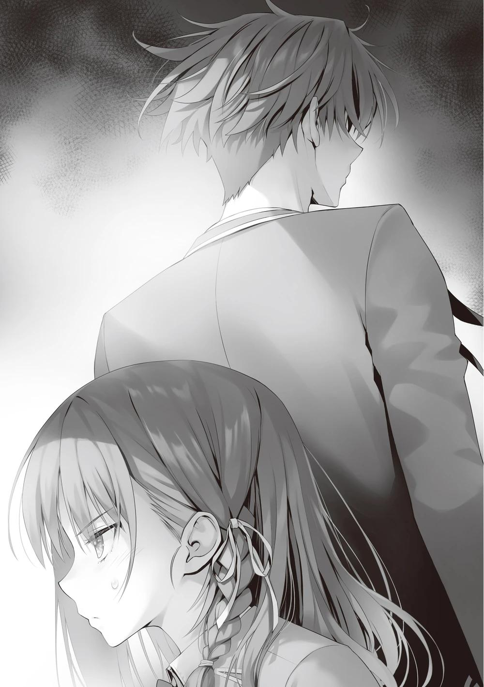
Ryuuen-kun, Komiya-kun y otros que aparecieron inesperadamente, así como los profesores. Era un lugar para rodear a Yagami-kun por todos lados, el cual se mostraba evasivo.
―Kuku, yo también estoy sorprendido, pero no puedo evitarlo. Él estuvo jugando demasiado con fuego.
Ryuuen-kun comenzó a reír, tal vez sintiendo lo mismo que yo.
―Por qué está pasando esto, esto es más que estúpido.
―No sé qué clase de trasfondo tienes, pero estás atrapado.
―¿Todavía estoy en un estado en el que ni siquiera puedo luchar contra él?
¿Aquí es donde termina? No puede haber terminado, ¡eso es ridículo!
―Yagami-kun, con todo su cuerpo temblando, gritó con una voz nunca antes escuchada―. ¿Quieres decir que... ni siquiera tienes que tratar conmigo directamente? Je... ja... ¡jajaja! No me jodas... ¡no me jodas!
―Cállate. No grites tan cerca de mí, pequeña zorra ―Ryuuen-kun se metió el meñique en la oreja derecha y murmuró exasperado.
La excitación de Yagami-kun no disminuyó.
―De acuerdo~ ―Yagami-kun dijo―: Voy a hacerlo ahora. ¡Voy a matarlo con mis propias manos! ¡Entonces volveré a donde pertenezco, y conseguiré el lugar que me corresponde! Me llevaré su cadáver conmigo.
Había dos profesores aquí, como si eso no importara lo más mínimo. En una clara señal de cambio, Ibuki-san saltó hacia Yagami-kun por detrás justo cuando estaba a punto de dar un paso audaz hacia Ryuuen-kun. Sin mirar atrás, Yagami-kun se ocupó rápidamente de ella y le clavó el codo en el abdomen.
―¡Guh!
Un solo golpe e Ibuki-san se desplomó en el suelo, incapaz de levantarse.
―¡Para, Yagami!
Cuando los profesores empezaron a correr para detener a Yagami-kun, Ryuuen-kun los detuvo.
―Retrocedan. Él no está jodiendo. Supongo que es hora de que dé un paso adelante, ¿no? ―Ryuuen-kun, sin tener en cuenta que esto era la sala del consejo estudiantil, apretó el puño.
―Oh Dios mío, no puedes detenerme. No voy a tolerar a nadie que se ponga delante de mí a partir de ahora. No me importa si es una mujer o un profesor. Si no quieres verte herido como Komiya y los otros, entonces cállate y retrocede.
―Kuku. Así que esa es tu verdadera naturaleza. Es gracioso, ¿no?
Sin dudarlo, Ryuuen-kun dio un paso adelante y extendió ligeramente los brazos como si quisiera provocar.
―Con gusto me interpondré en tu camino, así que ven hacia mí. No eres más que un cretino.
Ryuuen-kun estaba decidido, pero no creía que Yagami-kun pudiera ser detenido. Sin embargo, debemos hacer algo para retenerlo. Él se dejó llevar por el impulso de destruir todo, sin importar la presencia de los profesores. Si lo dejamos ir, no hay garantía de que podamos detener su desenfreno.
Y a donde se dirigía... era a Ayanokouji-kun. Si algo así ocurriera en medio de un festival cultural, una advertencia no bastaría.
―Detente, Yagami. Y Ryuuen, también. Si causan una conmoción aquí, será una sanción grave.
―Mi expulsión es 100% inevitable. Si ese es el caso, no hay razón para impedirlo, ¿verdad Mashima?
Yagami-kun lo llamó sin siquiera dirigirse a él como sensei, y lo descartó.
Aun así, Mashima-sensei, como maestro, se interpuso entre Yagami-kun y Ryuuen-kun.
―Piérdete ―Le dio una patada en la rodilla a Mashima-sensei, y cuando éste se tambaleó, le estampó el puño en la cara.
Sakagami-sensei lo presenció de cerca y dio un paso atrás asustado. Ryuuen-kun, emocionado por el comienzo de una pelea perfecta, estaba a punto de saltar sobre Yagami-kun.
―Detengámonos ahora, Takuya.
La puerta de la sala del consejo estudiantil se abrió, revelando a Amasawa-san con los ojos rojos e hinchados.
―¿Ah? ¿Por qué estás aquí?
Yagami-kun dejó de moverse en una situación en la que era probable que no le llegaran las palabras de nadie.
―¿Qué hace falta para que te descontrolen más? ¿Crees que eso hará que te acepten? Ya acabaron con-
―¡No, no es así! ¡Los instructores me están esperando! Voy a ser el mejor.
¿Quiénes son los instructores, me pregunté? Al menos podía suponer que no eran los profesores de esta escuela.
―Hoy iba a cerrar el festival cultural de una forma interesante sacando a la luz el pasado de ese tipo, pero hizo algo absurdo.
―Takuya, ya sabía que ibas a hacer eso...
―Apártate de mi camino; voy a hacer que Ayanokouji se arrepienta. Lo haré tan divertido que no pararás de reír.
―Si insistes en ir hacia Ayanokouji-senpai, te detendré antes de que lo hagas.
―¿Tú? No me has vencido ni una sola vez. No me hagas reír.
―Tal vez no pueda vencerte con la fuerza. Pero lo intentaré.
―Sabía que eras devota de Ayanokouji, pero no sabía que eras tan estúpida.
―Acabo de aprender que una rana en un pozo no conoce el océano. Es como esa historia que aprendimos antes... ¿No te acuerdas?
Amasawa tenía una mirada triste. Yagami-kun pareció vacilar un momento, antes de volver a su mirada asesina.
―Entonces es hora de que mueras. No hay razón para que sigas viva.
Justo cuando Amasawa-san estaba a punto de decidirse, oímos varios pasos procedentes del otro lado del pasillo.
Cinco adultos entraron en la sala del consejo estudiantil con caras inexpresivas.
No los reconocíamos a todos, pero dos de los cinco eran invitados de honor que también se habían presentado en el maid café.
Yagami-kun, que había sido intocable hasta hacía un momento, de repente empezó a temblar.
―¿Por qué están aquí? Eh, ¿por qué...?
―Hasta nos llamaron para que fuéramos a recogerte a la oficina del consejo estudiantil. No era exactamente lo que teníamos en mente.
Yagami-kun, que había estado en plena matanza hacía poco tiempo, se encontró oprimido como un niño. Era casi como si un niño hubiera sido atrapado por sus padres y tuviera miedo del castigo.
Rodeado de adultos, se llevaron a Yagami-kun sin oponer resistencia.
Amasawa-san caminaba con él.
―Ustedes son...
Mashima-sensei confirmó mientras se levantaba dolorido.
―Estamos relacionados con Yagami y Amasawa. Arreglaremos esta situación, así que, por favor, ve a que te traten. Por favor, no le cuentes a nadie lo que ha pasado aquí, ni siquiera a los profesores y alumnos. Tenga la seguridad de que se lo contaremos todo al Presidente Sakayanagi.
―Entiendo.
Con la ayuda de Sakagami-sensei, Mashima-sensei salió de la sala del consejo estudiantil. La habitación, que había sido tan ruidosa, de repente se envolvió en el silencio.
―Levántate Ibuki, vamos a largarnos.
―¡Vamos, al menos ayúdame!
Ryuuen-kun dio instrucciones a Komiya-kun con la barbilla apuntando a Ibuki-san, que aún no podía levantarse, y luego le echó una mano y salió de la habitación.
Sólo quedamos Nagumo, presidente del Consejo Estudiantil, y yo en la sala del Consejo.
―Hasta aquí hemos llegado. Muchas cosas salieron mal, pero supongo que hemos zanjado el asunto de una vez por todas.
―¿Cuánto sabías sobre el incidente de hoy que involucra a Ayanokouji-kun?
―¿De qué estás hablando? Como dije antes, sólo vine aquí con la intención de hablar con Ryuuen.
―Entonces no necesitabas traer esa carta.
La carta de amor permanecía arrugada y tirada en el suelo de forma vacía.
―Tomando prestadas las palabras de Yagami, fue una coincidencia. Dio la casualidad de que todavía estaba en mi bolsillo ―Una simple mentira. No había nada más que decir, tal era el aviso del presidente del cuerpo estudiantil.
―El ruidoso festival ha terminado. Tú también, regresa.
―Entiendo.
Me giré para salir de la habitación y vi a Nagumo acomodándose en su silla, con los ojos cerrados y una leve sonrisa en la cara.
LA GENTE DETRÁS DE ESCENA
Por fin llegaron las 4 de la tarde y el ajetreado festival cultural llegó a su fin.
Como se explicó con anterioridad, la aplicación de contabilidad se cerró de golpe, y a partir de entonces no se pudieron registrar las ventas.
Los resultados podían consultarse por celular a partir de las 6 de la tarde, dos horas más tarde. Aunque el evento ya había acabado, se esperaba que no nos diéramos por satisfechos hasta el final del día.
Los invitados que se habían quedado hasta el final empezaron a abandonar sus asientos cuando el café estaba cerrando, y dieron sus impresiones sobre el maid café a los estudiantes.
Todos hicieron comentarios positivos como " fue interesante" y "fue divertido".
Los estudiantes que habían trabajado tan duro en el evento se sintieron profundamente conmovidos por esas cálidas palabras, y su cansancio pareció desvanecerse.
Por cierto, Chabashira-sensei salió corriendo del aula como un conejo en cuanto dieron las cuatro. Correr con ese atuendo habría sido llamativo, pero dejémoslo así. Eran alrededor de las 5:30 cuando todos los clientes se fueron y todos los compañeros de clase (excepto Koenji) se reunieron en el maid café.
―Buen trabajo a todos. Pasaron muchas cosas, pero al menos pudimos terminar el festival de una manera ideal. No creo que las ventas hubieran podido ser mejores.
Ike y los demás se reunieron en el aula cuando acababan de desmontar los puestos exteriores. En el maid café, algunos invitados se quedaron comiendo hasta tarde, así que todavía quedaban algunas zonas por limpiar, pero Horikita intervino para resumir el festival cultural.
―Los resultados se anunciarán más tarde, pero hay algo de lo que quiero hablarles antes.
Sí, había 37 alumnos en el aula. Akito y Haruka también se quedaron en el aula.
Aunque Horikita no se lo pidió, Haruka, que era la estrella del espectáculo, dio un paso al frente.
―Me gustaría ser la primera en decirles. No he perdonado a todos los presentes.
Haruka murmuró en la silenciosa aula al comenzar su discurso. Algunos de los alumnos, que esperaban que empezara con una disculpa, se miraron unos a otros, sintiendo más desconcierto que enfado.
No parecían culparla. Todos la entendían. Habían crecido para poder sentir el dolor de perder a un amigo, a un mejor amigo.
―Pero a quien menos puedo perdonar es a mí misma. Supuse que todos los que dejaran la escuela serían infelices. Yamauchi-kun, que desapareció el año pasado, y Airi.
Ante la mención del nombre de Yamauchi, Sudō, Ike y los demás parecieron hacer memoria.
―Yo suponía que lo mejor para Airi era quedarse en esta escuela. Supuse que era lo más feliz. Por eso los odiaba a todos ...... y quería vengarme.
Haruka agarraba con fuerza la falda de su uniforme escolar mientras expresaba su frustración.
―Cuando terminara este festival, iba a dejar la escuela.
Era un hecho que no tenía por qué contar, pero no quería ocultarlo, así que confesó. Creo que algunos de los alumnos lo habían previsto, pero la mayoría se quedaron callados.
―Yo también iba a irme con Haruka.
En ese momento, Akito tampoco pudo permanecer callado y contó la verdad con Haruka.
―Si nos hubiéramos ido, nuestra clase no habría llegado a la clase A. Es la forma más fácil y poderosa de vengarse.
No hacían falta trucos. Sólo dejar la escuela era suficiente para hacernos perder un gran número de puntos de clase.
―Pero si me dan una oportunidad, por favor déjenme quedarme en esta clase.
―Has cambiado de opinión, ¿verdad?
―Esa chica está tratando de extender sus alas en el mundo exterior.
Kushida-san me lo contó.
En ese momento, se mencionó el nombre de Kushida, y los ojos de todos se fijaron en ella. La mayoría no entendía lo que estaba pasando, así que Kushida abrió la boca como si quisiera añadir algo.
―Sakura-san, parece que está trabajando duro para convertirse en una idol; la pueden encontrar en SNS, así que tal vez puedan pedirle a Hasebe-san que les enseñe más tarde.
Algunos estudiantes se sorprendieron, otros pensaron que era una buena idea.
Pero la percepción común que surgió fue el hecho de que Airi había dado un nuevo paso adelante.
―Airi crecerá mucho. Probablemente más de lo que yo pensaba. Así que quiero poder graduarme en la clase A e ir a verla. Quiero poder presentarme sin avergonzarme.
La clase se enteró de que esa fue la razón por la que eligió quedarse en esta escuela.
Tomaste una buena decisión, Hasebe-san.
―Voy a aceptar el castigo por los problemas que causé.
―Soy igual de culpable. No ayudé en la mayor parte del festival y causé problemas a la clase.
Horikita se adelantó antes de que los otros estudiantes pudieran decir algo más.
―Faltar al festival es un comportamiento problemático, pero afortunadamente no viola ninguna regla. Koenji-kun no apareció ni una sola vez desde esta mañana, así que es lo mismo.
Horikita se acercó a Haruka con una expresión de consternación y alivio en el rostro.
―Si vas a ser castigada, será sólo por seguir siendo compañera de clase conmigo. ¿Puedes afrontar esa realidad?
Me pregunto qué pensaría Haruka del reflejo en los ojos de Horikita.
―Voy a esforzarme al máximo. Sí. A partir de ahora, puedes pensar en mí como tu Hasebe-san de siempre, ¿bien?
―No te preocupes. No te molestaré ―Eso fue suficiente, Horikita asintió y declaró―. Miyake-kun es el mismo de antes también. ¿Está bien?
―Por supuesto.
― Entonces eso es todo por hoy. Terminemos el resto de la limpieza rápidamente.
Keisei se acercó a Haruka y Akito, algo vacilante. Empezando por la disculpa de Akito, los ojos de Keisei enrojecieron un poco y habló con alivio. La disculpa de Haruka unió a los tres por primera vez en su vida, y se sonrieron ligeramente.
Akito y Keisei volvieron su atención hacia Haruka como si hubieran tomado una decisión. Los dos también le hicieron señas a ella, y los ojos de los tres se clavaron en mí, confundidos.
Si me acercaba a ellos aquí y ahora, el grupo podría reiniciarse. Eso ya no era necesario. Les di la espalda y me acerqué a Satou y a los demás para transmitirles unas palabras de agradecimiento.
El grupo de cinco era ahora de tres, pero esperaba que el vínculo entre ellos fuera más fuerte que antes. Ese lugar no me necesita.
Los tres pudieron percibir mis acciones como una señal de despedida. No se acercaron a mí ni me llamaron.
Fue rápido después de eso. La limpieza que quedaba por hacer pronto volvería a estar en marcha con 37 personas.
Toda la limpieza se hizo antes de las 6 de la tarde. Entonces se anunciaron los resultados del festival.
1er puesto, 2º año clase B (+ 100 puntos de clase) 2º puesto, 2º año clase C (+ 100 puntos de clase) 3er puesto, 3er año clase B (+ 100 puntos de clase) 4º puesto, 2º año clase A (+ 100 puntos de clase) 5º puesto, 1º año clase A (+ 50 puntos de clase)
6º puesto, 3º año clase C (+ 50 puntos de clase)
7º puesto, 2º año clase D (+ 50 puntos de clase)
8º puesto, 1º año clase C (+ 50 puntos de clase)
9º puesto, 3er año clase D
10º puesto, 1º año clase B
11º puesto, 3º año clase A
12º puesto, 1º año clase D
―¡Estamos en primer lugar! ¡Lo logramos!
―¡Supongo que el cosplay de Chabashira-sensei realmente impactó!
Cada uno estaba complacido y se elogiaron mutuamente por una buena pelea.
―Pero el lugar de Ryuuen también es el segundo, y la clase de Sakayanagi está en cuarto lugar, que es la quintaesencia.
―Ayanokouji-kun.
―Sí, todo va según lo previsto.
Era una certeza que la clase de Horikita ocuparía el primer lugar, y se asumió desde el principio que la clase de Ryuuen también estaría en los primeros puestos.
―Me preguntaba cómo les iría a los monotemáticos, pero han conseguido ser más astutos que ellos.
―Pero también hubo algo inesperado: Sakayanagi quedó cuarto.
―Sí. ¿Viste su presentación?
―No, hoy no fui al tercer piso del ala especial. ¿Los viste?
―La clase A estaba vendiendo folletos y cosas sobre la escuela a bajo precio. No tenían ninguna otra comida, bebida u otras ofertas. Me pregunto qué tipo de trucos usaron...
―La pista está probablemente al final de la lista.
―Primer año Clase D, la clase de Housen-kun, ¿verdad? ¿Qué pasa con eso?
―Si fueron los últimos de la clase como resultado de una contienda, bien.
Pero eso es impensable. El entretenimiento de la clase, que era principalmente una recreación del festival, tuvo bastante éxito. Me pareció una de las mejores clases. ¿Pensaste que era inferior a la clase de tercer año A?
―La clase número 11 es la clase A de tercer año. Estaban fuera de la competición desde el principio. Sólo se trataba de entretener para complacer a los invitados, ¿verdad?
Se confirmó que la casa encantada y otras actividades se podían jugar por 100
puntos. Por otra parte, el tiro y otros puestos que Hosen había montado tenían un precio adecuado.
―La clase superior consiguió 100 puntos para este festival. Significa que entre bastidores, Housen podría haber conseguido algo más.
―Es de suponer, ¿te refieres a puntos privados?
―¿No te recuerda esto a la prueba de la isla deshabitada del año pasado?
Hubo un acuerdo entre Ryuuen y Katsuragi para recibir puntos privados a cambio de dejarles ganar puntos de clase. No me extrañaría que ocurriera algo parecido entre Sakayanagi y Housen.
―No es imposible. O tal vez firmaron un contrato similar para reemplazarlo.
La contabilidad se hizo a través de un celular. Sería una estrategia bastante viable si Housen y sus amigos hubieran recibido celulares de la clase de segundo año A para llevar la contabilidad y donaran todas las ventas. Si además estuvieran aportando fondos a la clase de Housen para el festival, tendría sentido que su tamaño creciera.
―Pero ella lo hizo ―dijo él.
―Porque si te fijas, ella toma la opción de ganar.
De cualquier forma, significaba que Sakayanagi no se contentaría fácilmente.
Estaba claro que estaban produciendo resultados de forma constante, a pesar de que parecían haber abandonado el juego.
PARTE 1
La reunión se dio por terminada, pero Horikita llamó a algunos miembros del grupo al aula de la clase B. Eran las tres encargadas de planificar el maid café, a excepción de Matsushita, que estaba ausente por enfermedad.
―En realidad, tengo algo por lo que disculparme con ustedes.
―¿Qué? Disculparte ¿por qué? ¿Qué pasa?
Había sido un día duro, pero no hubo ninguna ocasión en particular en la que Horikita mostrara alguna falla.
Como Satou y las demás no tenían absolutamente nada en mente, inclinaron la cabeza con curiosidad.
―Recuerdas cómo Ryuuen-kun filtró lo del maid café y cómo se extendió por toda la escuela, ¿verdad?
―Sí. Eso fue un poco aterrador, ¿no?
―En realidad, ya estaba decidido desde el principio que él filtraría lo del maid café.
La historia surgió de mi sugerencia de unir las manos de alguna manera para colaborar entre nosotros y ganar los primeros puestos en el festival.
―¿Qué quieres decir con que la filtración estaba preparada? ¿Qué quieres decir?
―Estaba todo planeado. Ryuuen-kun y yo trabajaríamos juntos, él nos traicionaría y daría a conocer la presentación del maid café.
―¿Qué? ¡No puede ser!
Por supuesto que se sorprenderían. Horikita y yo éramos los únicos en la clase que sabíamos de esto.
―¿Así que ustedes también tenían una apuesta donde el ganador obtiene puntos privados?
―Eso fue idea de Ryuuen-kun. Me puse un poco nerviosa cuando lo dijo de repente. Hashimoto y los demás, que habían estado esperando el resultado de la apuesta, debieron ser decisivos en la misma.
―Sí, Sakayanagi-san escuchó mucha información de terceros. Estoy segura de que Hashimoto-kun y otros espías también se lo habrán contado. Se suponía que las dos clases cooperarían entre sí, pero entraron en una disputa, y Ryuuen-kun los traicionó de manera unilateral.
―Entonces, ¿qué hay del millón de puntos que obtendrían si ganaran el primer lugar?
―Lo siento, pero también confirmamos que, de hecho, sin importar quién ganara, no se entregarán puntos a ninguno de los dos. Estaba dispuesto a hacerlo él mismo, pero creo que ya está un poco tranquilo. Mantuve este hecho en secreto para nuestros compañeros de clase, incluida Kei, con la excepción de Horikita. Y nadie de la clase de Ryuuen, excepto Ryuuen y Katsuragi, se enteraron.
Incluso compañeros cercanos como Ishizaki y Albert no fueron la excepción.
Por eso sólo podía tomarlo como una señal de que Ryuuen se tomaba en serio lo de mantener el acuerdo.
―Una de sus estrategias era poner una cafetería conceptual de estilo japonés como rival. Además de apelar al público de que éramos enemigos, también era para mantener alejados a otros rivales.
Rivalidad. A mayor excitación, mayor responsabilidad y dinero a la basura para los adultos.
Si supieran que hay una batalla que no pueden perder, sería natural que quisieran dejar ganar a los que lo tienen más fácil. Por otro lado, otras clases y grados no estaban en una lucha a muerte. Por supuesto, muchas clases querían puntos de clase, pero la tensión era una categoría o dos más baja que la batalla entre Horikita y Ryuuen.
―Realmente lo siento. Hasta me callé ante ustedes, aunque estaba tratando de ganar.
Horikita siempre se sentía culpable porque quería revelar el plan lo antes posible.
Seguro que las tres podían darse cuenta de que lo sentía sinceramente.
―No pasa nada. Fuimos los primeros en los resultados, ¿eh?
Sin culparnos particularmente, Satou confirmó alegremente a Mii-chan y Maezono.
―Bueno. Si lo hacen bien, supongo que no me importa tanto.
―Sí. Si me lo hubieran dicho de antemano, se me habría notado en la cara.
Mii-chan respondió con sinceridad:
―Ni siquiera estoy segura de tener la confianza suficiente para actuar.
―Bien por ti, Horikita.
―Sí, me quito un peso de encima. Pueden contárselo a Matsushita-san. Y
en cuanto nos transfieran los puntos privados, les pagaremos a todas.
―¡Lo logramos!
Los tres chocaron los cinco.
―¿También se discutió desde el principio que Chabashira-sensei se convirtiera en sirvienta? Esa fue quizás la mayor sorpresa.
―Eso fue increíble... estábamos en la cima de las puntuaciones en menos de una hora.
―Sé que tienen mucho de qué hablar, pero vamos a terminar por hoy.
Muchas gracias.
La clase encontró una estrategia en la sugerencia de un maid café y fue capaz de ganar el primer lugar. Agradecí que otros factores no calculados también funcionaran positivamente.
Después de despedirnos las tres, sólo quedamos Horikita y yo en el aula. Un viento ligeramente más fuerte entró por la ventana abierta y sacudió las cortinas.
―¿Estás seguro de que te parece bien? La mayor parte del plan fue idea tuya. Podrías haberte atribuido más méritos, ¿sabes? Escenificando el enfrentamiento y haciendo de Chabashira-sensei la sirvienta, fue innegablemente tu habilidad la que contribuyó al primer lugar.
―Sólo fue posible gracias a la postura de Horikita como líder.
―Si hubieras sido tú en el pasado, no me habrías incluido en este plan,
¿verdad?
En el aula vacía, Horikita murmuró sin mirarme.
―Supongo que no.
―No lo niegas, ¿verdad?
―Es un hecho, así que no se puede evitar. Tú también lo sabías, por eso me preguntaste, ¿verdad?
―Bueno, sí, probablemente sea cierto.
No es que yo, Ryuuen y Katsuragi no pudiéramos haber forzado la situación por nosotros mismos. Pero cuando hice esta propuesta, se lo dije a Horikita al mismo tiempo sin dudarlo.
No estaba seguro de si ella podría desempeñar el papel o no, pero no era algo que pudiera hacerse sin el líder.
Si la propuesta hubiera sido rechazada por completo, me habría parecido bien.
―No dudaría en considerar la posibilidad de engañar a mis colegas si es un medio eficaz para ganar. Cuando sea el momento de proceder, procederé, aunque sea arriesgándome. ¿Lo entiendes?
La idea de crear estrategias por sí misma se arraigó más en el cuerpo de Horikita.
―Quizá ahora pueda entenderlo. Creo que empiezo a verlo, poco a poco.
Puede que aún no sea un sentimiento muy fuerte, pero definitivamente lo estaba percibiendo.
―Es suficiente por hoy. Pronto se pondrá el sol.
―Espera. Ayanokouji-kun, realmente necesito preguntarte algo ahora mismo.
Tenía la corazonada de que Horikita se negaría a marcharse cuando intentara animarla a hacerlo.
Presentí que la presencia de Horikita e Ibuki en la sala del consejo estudiantil no era una mera coincidencia. Debía ser porque llegaron a aquel lugar siguiendo algún tipo de hilo conductor.
―¿Qué pasa?
―El festival cultural de hoy. El grave incidente que estaba ocurriendo en secreto. ¿Eres...?
Justo a tiempo o no, sonó mi celular.
―Lo siento, espera un segundo.
―Sí, sí.
Miré la pantalla y vi que era una llamada entrante de un número desconocido.
―¿Hola?
―¿Todavía estás en la escuela? Me gustaría hablar contigo un momento, si quieres.
La voz me resultaba familiar: era Tsubaki Sakurako, una estudiante de primer año de la clase C.
No me importaba cómo consiguió mi número, ya que había muchas formas diferentes de conseguirlo, pero era una persona inesperada.
No me sorprende por qué se puso en contacto conmigo hoy.
―¿Estás solo ahora?
―Desafortunadamente no.
―Entonces, ¿por qué no nos encontramos?
―¿Dónde estás?
―Acabo de salir por la puerta principal. Todavía estás en el campus,
¿verdad?
―Dame cinco minutos.
―De acuerdo.
Tras la llamada, le dije a Horikita:
―Lo siento, pero voy a tener que salir un momento... Volveré en unos 10 o 20 minutos. Entonces continuaremos nuestra conversación.
―De acuerdo, esperaré aquí.
Prometí volver y salí del aula. Una vez solo, decidí llamar a la persona que más me había ayudado hoy.
―La red de información de tercer año es de primera; ya sea Kushida Kikyo o Hasebe Haruka, eres capaz de encontrarlas inmediatamente. Una vez más me he dado cuenta del poder del presidente del Consejo Estudiantil Nagumo.
―¿Me llamaste para decirme eso?
―Sólo quería darte las gracias por adelantado. Fuiste de mucha ayuda en la búsqueda de hoy.
El número de ojos y el liderazgo entre los estudiantes de tercer año que rápidamente localizaron a Haruka y Kushida fueron magníficos.
―Nunca pensé que utilizarías la estrategia que usé contigo para tu propio beneficio.
―Fue muy útil que pudieras contarme lo que ocurría en la sala del consejo estudiantil. Gracias a ti, pude responder rápidamente.
―Al principio, pensé que era un delirio de locura de Yagami, pero ¿había realmente un truco en esa carta?
―Parece ser una carta de amor al presidente del consejo estudiantil Nagumo, pero como se quejó Yagami, tenía un anagrama algo complicado. Si alguien lo descifra, llega a la frase: 'Tengo una reunión importante en la sala del consejo estudiantil a partir de las tres de la tarde'. También mezclé algunas otras palabras que me parecieron interesantes. Si tenía mucho interés, naturalmente aceptaría la oferta.
Además del anagrama, la carta de amor tenía otros pequeños detalles.
El sobre utilizado para la carta y las pegatinas que lo sujetaban estaban a disposición de cualquiera en cualquier momento en el Centro Comercial Keyaki.
Si hubieran sido hechos a medida y comprados en Internet, Yagami podría haber dudado, temiendo que se viera el contenido y quedaran pruebas. Sin embargo, si inspeccionaba el Centro Comercial Keyaki, se daría cuenta de que todo, excepto el membrete escrito a mano, podía ser sustituido.
Por eso pudo comprobar el contenido sin dudarlo.
Además, al escribir directamente, podía dar a Yagami información sobre la letra manuscrita. Los estudiantes de la Habitación Blanca recibían una formación exhaustiva en caligrafía, por lo que estaba seguro de que su letra era profesional.
La carta de amor así preparada fue entregada a Horikita a través de otra chica utilizando a Kei. Luego, se la entregó a Yagami, dándole tiempo para examinarla.
Como existía la posibilidad de que Horikita se la entregara directamente a Nagumo, le hice actuar como si estuviera de mal humor ese día para que ella no pudiera entregársela inmediatamente.
―No creía que fuera el tipo que se había rebelado en la isla. ¿Cuánto sabías de él?
―No sé nada. Yagami confesó él solo.
―¿Qué clase de truco utilizaron Komiya y los demás para nombrar a Yagami? ¿Fue una coincidencia que el profesor apareciera?
―Sólo les dije que la persona en el centro del problema podría ser atraída al exterior. No podían identificar al culpable, y el bando de Ryuuen quería una pista. Les pedí que aceptaran la sugerencia a sabiendas del riesgo de que nadie acudiera al consejo estudiantil. O aunque lo hicieran, no pasara nada.
―¿Ya veo? Me pregunto hasta qué punto dices la verdad.
Lo dejé a su imaginación. Lo que hice en realidad no fue más que trivial. Nada importante.
―Ah, bueno. Ahora estás listo para cumplir tu promesa, ¿no?
―Por supuesto. Lo estoy deseando, presidente Nagumo.
Mientras me acercaba a la puerta principal, terminé mi llamada y busqué mi cajón de zapatos.
PARTE 2
―¿Está Tsubaki sola en el lugar de reunión?
Eso pensé por un momento, pero parecía que Utomiya estaba hablando con alguien un poco más lejos. Sólo nos miraba a nosotros.
―¿Hay algo que te cueste comunicar por teléfono?
―Bueno, los alumnos de primer año están un poco alborotados ahora mismo. Hubo una expulsión inesperada en el festival escolar.
―¿Expulsados? Esa es una historia muy inquietante.
Alguien más estaba involucrado en este fiasco de expulsión de la escuela. Era Tsubaki Sakurako, que estaba frente a mí en ese momento.
―Estoy satisfecha con el resultado, que es más de lo que imaginaba...
Ayanokouji-senpai.
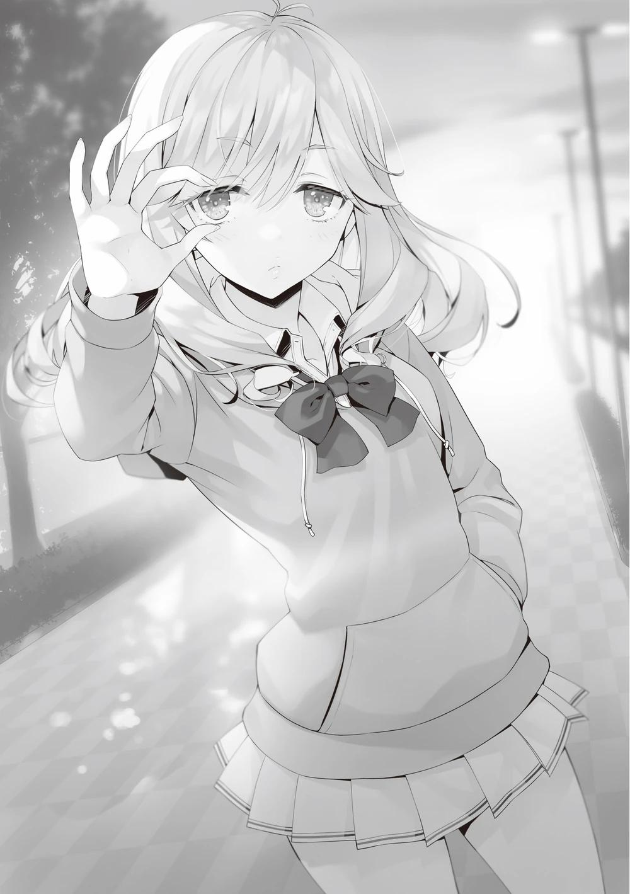
Tsubaki hizo un círculo con el dedo como diciendo: "Aprobaste".
―Parece que conseguiste sacarle información a Satou-senpai y echaste a Yagami-kun de la escuela. Te estoy muy agradecida.
―Yo no extraje la información. Tú contactaste a Satou repetidamente y gradualmente la arrinconaste. Y luego, cuando ella no pudo soportarlo más, te coordinaste y la amenazaste, obligándola a soltarlo todo y confiar en alguien.
Tsubaki, aquí delante de mí, fue la persona que se acercó a Satou sin que yo lo supiera.
―No sé lo que eso significa. Que sorpresa.
Aparentemente Satou fue abordada por Tsubaki cerca del baño de mujeres en el centro comercial Keyaki. Allí, le mostró un cebo que le daría la vuelta a las cosas, incluyendo un giro entre mi relación con Kei, lo que despertó su curiosidad.
―Parece que llamaste a Satou a tu habitación e hiciste amenazas baratas, pero no fue un intento serio de manipularla para que arruinara nuestra relación.
Fue porque querías empujarla a actuar, o lidiar con la amenaza de la relación de Kei, haciéndole saber indirectamente que nos estábamos acercando.
Tsubaki escuchaba en silencio, mirándome sin negar.
―Cuando le pregunté por los detalles, enseguida salió a la luz lo anormal de la situación. En cuanto viste que Satou no aceptaba tu invitación, volviste a ponerte en contacto con ella como para hacer un seguimiento e hiciste comentarios similares y la provocaste. Cuando viste que Satou parecía no haber consultado a alguien, intensificaste gradualmente tus amenazas y la acosaste.
Esto se debía a que al final ella vendría a consultar a alguien, y ese sería yo.
El objetivo no era enjaular a Satou, sino esperar a que me pidiera ayuda.
―Entonces, lo más probable es que le dijeras a Satou que era Yagami quien estaba detrás de las amenazas, no tú.
La agotada mentalmente Satou probablemente no tenía tiempo para pensar si eso era cierto o no. Se me ocurrió la idea de usar este único incidente para uso personal y decidí llamar a Kei durante mi discusión con Satou e hice que le
confiara sobre el abuso y casi todo lo que había llevado hasta este punto en su pasado. El hecho de que Satou no eligiera después el bando de Tsubaki me convenció de que estaría de mi lado. Como resultado, las dos elevaron su relación de amigas a mejores amigas en el sentido más verdadero de la palabra.
Eso fue el 1 de noviembre.
―Yagami-kun es un mal tipo, ¿verdad?
―No necesitas teatralidad barata. Yagami no tiene nada que ver con esto.
No está involucrado.
―¿No crees que en realidad fue orden de Yagami-kun?
―Si Yagami estaba usando a Tsubaki para contactar a Satou, no hay necesidad de molestarse en dar nombres.
Los únicos que conocen el pasado de Karuizawa son los que están relacionados con la Habitación Blanca. Los demás no pueden imitarle fácilmente de una forma que no me hubiera dificultado ver a través de su disfraz.
―Entonces no es al revés, tú descubriste que yo estaba intentando inculpar a Yagami-kun, ¿verdad? Y sin embargo no hiciste nada contra mí e incluso lo expulsaste, pudiendo ser inocente. ¿No es contradictorio? No había indicios de que Ayanokouji-senpai lo estuviera investigando en detalle.
―Ah. Yo no investigué a Tsubaki ni a Yagami. No hay necesidad de eso.
―¿Qué quieres decir?
―Lo siento, pero no tengo ganas de seguir hablando.
Estaba convencido de que ya había dicho suficiente. Ni siquiera era Tsubaki quien lo manipulaba todo. Es más, la persona que acechaba en el fondo era la que pintaba este cuadro.
―Utomiya-kun, ¿puedes venir un momento?
Tsubaki hizo una seña a Utomiya, que estaba al teléfono, y le indicó que me pasara su móvil.
―Adelante... ―Receloso, Utomiya me entregó el teléfono cuando aún estaba conectado.
―Yagami hizo que expulsaran a algunos compañeros de Tsubaki y Utomiya. Por eso esos dos trabajaron juntos conmigo.
Estoy bastante seguro de que esa era la voz del hombre con el que hablé el año pasado por teléfono y delante de mi habitación.
―Lo dejaste en paz porque sabías que podías acabar con él en cualquier momento si te movías directamente sobre él. Pero como resultado, hubo expulsiones de primer año. No habría ocurrido si no hubiera sido por sus molestias.
―No lo niego.
―La única manera de evitar más sacrificios innecesarios era que lo expulsaran. Pero aunque lo supieras, no es fácil derrotar a Yagami. Sé que no es un estudiante de preparatoria corriente.
―Por eso querías utilizarme.
Tomó esta decisión porque comprendía el propósito y la obsesión del estudiante de la habitación blanca.
―Supongo que entendiste mi mensaje ―dijo.
―Con el tiempo, te pondrás en contacto con alguien cercano a mí. Y
cuando eso ocurra, habrá expulsiones, ¿verdad?
―Así es. ¿Pero arrinconar a Yagami y expulsarlo de golpe? Eso se salió un poco de los cálculos. ¿No tuviste en cuenta la posibilidad de que Yagami no estuviera relacionado?
―Fue decisión de Yagami si quería o no ser expulsado. No fui yo quien decidió si era blanco o negro. Estuvo jugando con fuego a lo loco, igual que expulsó a un alumno de 1º C. Se puso en contacto con Kushida Kikyo, haciéndose pasar por su antiguo compañero, y utilizó la información que le dieron para controlarla y manipularla. Provocó a estudiantes no relacionados en una isla deshabitada infligiéndoles graves heridas. También comprobó el
contenido de una carta de amor para otra persona, pensando que era una trampa. No sé por qué Horikita e Ibuki estaban allí, pero creo que también fue porque estaba jugando con fuego.
Normalmente, la gente no roba las cartas de amor de otras personas. Y aunque lo hicieran, no se darían cuenta de los anagramas que había por todas partes.
―Así que todo estaba conectado.
―Aunque no quedaran pruebas claras, cuantos más trucos hagas, más rastros dejarás siempre. Ese tipo no se dio cuenta de que se estaba estrangulando con algodón.
―Seguro que, si Yagami no hubiera hecho nada, no lo habrían expulsado a estas alturas.
―Estoy de acuerdo.
El fuego y los juegos acumulados condujeron a este desenlace.
Si Yagami no hubiera ofendido al hombre del teléfono, no me habría metido con él, y si no hubiera contactado con Kushida o herido gravemente a esos tipos en la isla desierta, no se habría enfrentado a la pena de expulsión.
Si no hubiera visto el contenido de la carta de amor, no le habrían puesto en una situación en la que pudiera ser interrogado.
―La única razón por la que fue expulsado fue porque Yagami admitió ante él mismo que era negro.
Simplemente preparé el escenario para una prueba. Si fuera completamente blanco, en primer lugar no habría habido alboroto. Sólo fue a la sala del consejo estudiantil porque me conocía y porque era inteligente.
―Parece que eres tan bueno como dicen los rumores.
―Por cierto, sólo para confirmarlo, ¿recuerdas lo que me dijiste antes? Me dijiste que, si no me deshacía de la gente que me estorbaba, no esperara que volviera la paz y la tranquilidad. Eso era un farol, ¿no? Querías crear la
sensación de urgencia de que, si no me ocupaba pronto del problema, sería todavía más difícil.
Para que me moviera, él hizo un movimiento para que expulsaran a Yagami de la escuela a partir de esa etapa.
―Ayanokouji-sensei tenía razón, hiciste bien en elegir esta escuela.
―¿Qué quieres decir?
―Es tal como crees, voy a disfrutar de mi vida escolar, y mientras no nos topemos durante las trifulcas de primero y segundo año, dejaré que nuestra relación termine aquí.
Dijo lo que quería decir y la llamada se interrumpió unilateralmente. Un vistazo a la pantalla del teléfono reveló que la llamada estaba bloqueada a propósito.
Esto se hizo porque no querían que Utomiya se diera cuenta por su dirección o número de teléfono de que estaban registrados en una dirección.
―¿Lo descubriste?
―Sí.
―Cuando expulsaron a mi compañero de clase de la escuela, al principio pensé que Housen-kun estaba involucrado, pero hace poco me dijeron que fue Yagami-kun.
Puede que el potencial de Yagami sea impecablemente alto, pero su propio engreimiento lo había sorprendido desprevenido. Sólo se preocupaba por mí y no veía a sus rivales en el mismo escenario. Parecía que Yagami no era una presencia bienvenida en la batalla de los estudiantes de primer año.
―No te rindas sólo porque hayas derrotado a tu enemigo, Tsubaki.
―Lo sé. Para ser sincera, al principio no le tenía cariño a esta escuela, pero eso ha cambiado un poco. Esta escuela es sorprendentemente divertida.
Viendo lo que acababa de pasar, estaba claro que había un montón de sentimientos encontrados aparte de simplemente vengarse de un enemigo.
―Entonces, nos vamos.
―Senpai ―Utomiya, que se estaba forzando a sacar el honorífico, volvió al dormitorio con Tsubaki.
―Yo también debería volver a al salón.
PARTE 3
Después de terminar mi conversación con Tsubaki y Utomiya, me encontré con una agotada Chabashira-sensei en su camino de vuelta a clase.
―Gracias por su duro trabajo de hoy. Ha estado muy activa.
―¿A qué viene ese cumplido?
Chabashira-sensei estaba claramente enfadada mientras dirigía su mirada infantil hacia mí sin ocultarlo.
―¿De verdad odia tanto que le hayamos hecho llevar un uniforme de sirvienta?
pregunté con complicidad, y ella negó con la cabeza y bajó la mirada.
―Cuando volví a la sala de profesores, mis fotos estaban en los escritorios de todos los profesores. Y eso no es todo. Me pregunto cuántos profesores me habrán abordado en el poco tiempo que llevo allí, cuántas historias sobre mi uniforme de sirvienta, cuántas vergüenzas habré sufrido. Por el momento, deseo sinceramente ser una concha.
Debió de ser un momento muy duro para ella, porque sintió la presión muy intensamente.
―Eso no me corresponde a mí saberlo. Debe ser símbolo de la popularidad del profesor.
―Definitivamente no soy popular. Has hecho un esfuerzo extra.
Si de verdad creías que no existía la popularidad, lo ibas a pasar mal en el futuro.
Debía de haber muchos adultos que apreciaran a Chabashira-sensei como miembro del sexo opuesto, aunque no hubieran salido a la luz hasta ahora.
―Eso es. La clase ganó el primer lugar, así que eso es bueno.
―No es bueno para nada. En todo caso, la cantidad de ventas superior era una cosa segura, incluso si yo no hice nada.
―Ya veo. Bueno, el primer puesto parece mejor que el segundo y el tercero, ¿no?
―No es propio de usted decir eso.
Tragó saliva y se contuvo, como si pensara que ya no tenía sentido reprochármelo.
―Aun así, no creí que estuvieras cooperando con la clase de Ryuuen bajo el pretexto de ser hostil con ellos.
―Si una clase lucha sola, la fuerza máxima es de unas 40 personas. Pero si dos clases se unen, casi el doble de esa cantidad de personas se unirán sin embargo, no es infalible.
La propaganda no necesariamente tiene que ir de la mano en la superficie. Si se reúne a mucha gente, aunque sea de distintas formas, se puede hacer un gran espectáculo sin gastar mucho dinero.
―Incluso la sala de profesores se sorprendió. Todos pensaban que era un verdadero enfrentamiento.
Chabashira-sensei sólo mencionó el éxito del festival, pero no la retirada de Yagami.
Incluso los alumnos de primer año que no participaron directamente en el evento deberían saberlo, al igual que los profesores, pero ninguno ha hablado de ello conmigo, que creo que no tuve nada que ver. Como profesora de este centro, estaba tomando la decisión correcta.
―Por cierto, ¿no te vas a casa?
―Tengo a Horikita esperando en el aula. ¿Sigue haciendo horas extras?
―Estoy haciendo la ronda por la escuela. Ha habido varios informes de objetos olvidados presentados por los invitados.
Así que incluso cuando terminó el festival, los profesores seguían ocupados limpiando.
PARTE 4
Cuando volví al aula con Chabashira-sensei, Horikita estaba tumbada en su pupitre con la parte superior del cuerpo encima.
Chabashira-sensei y yo nos miramos y decidimos no hablar con ella. Me acerqué para comprobarlo y vi que parecía dormida. Entraba una fuerte brisa por la ventana abierta.
Por un momento me pregunté si debía taparla con la chaqueta del uniforme, pero decidí no hacerlo. Decidí no hacerlo porque sabía que a Horikita no le haría ninguna gracia más tarde si se enteraba de que me había acercado a ella.
―Nn......
¿Hmm? Por un momento pensé que estaba despierta, pero al parecer no.
―No...
Hablaba dormida. Estaba un poco sorprendido porque era una declaración un poco sorprendente. Horikita debía de estar cansada hoy. Cerré la ventana en silencio para que no se resfriara antes de volver al pasillo.
―Voy a dejarla dormir un poco más.
―¿Estás esperando a que se despierte?
―Bueno, conseguimos el primer puesto en el festival escolar. Se lo merece.
Se levantará pronto de todos modos.
―Puedes irte. Yo me haré cargo aquí.
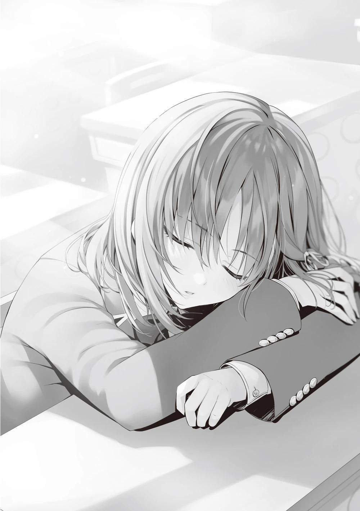
―¿Está segura?
―Como hombre entre bastidores, te lo mereces.
―Entonces aceptaré su oferta.
―Pero Ayanokouji, no vuelvas a pensar en un plan para humillarme, ¿de acuerdo?
―¿Todavía le importa?
―Este es un día que nunca olvidaré en mi vida.
―Bueno, Chabashira-sensei, gracias por sus esfuerzos. Algún día también será un buen recuerdo.
―No te pongas arrogante, estudiante.
Mirándome fijamente, Chabashira-sensei suspiró y se apoyó en la puerta del aula.
Bueno, me voy a casa.
[Puntos de clase al final del festival de noviembre]
Clase A liderada por Sakayanagi: 1201
Clase B liderada por Horikita: 966
Clase C liderada por Ryuuen: 740
Clase D liderada por Ichinose: 675
PALABRAS DEL AUTOR
Se acerca el año 2023. Es demasiado pronto, aquí Kinugasa.
Comer jengibre se ha convertido últimamente en mi boom, y regularmente compro unos kilos de jengibre, lo rallo, compro otros kilos de jengibre, lo rallo, y repito el proceso, comiéndolo con carne y verduras.
Lo que más me gusta es la combinación de setas eringi, jengibre y salsa de limón.
Jejeje, he revelado un poco de mi vida privada que a nadie le interesa.
Sí, lo he hecho. Me ha molestado porque no tenía nada en particular sobre lo que escribir, pero pasemos al tema principal.
Esta historia trata principalmente del festival cultural de noviembre.
Sé que algunos de ustedes habrán querido ver los trajes de los otros estudiantes, pero por favor entiendan que esta es una historia para otro momento.
La historia avanza sin parar.
Pronto terminará el segundo semestre y entraremos en las vacaciones de invierno y en el turbulento tercer semestre.
Aunque el número de volúmenes es un poco mayor de lo que se esperaba en un principio, la versión del segundo año ha superado por fin el ecuador del curso.
Siento que cada vez estamos más cerca de la conclusión de la historia.
¿Podrá Ayanokouji graduarse en la escuela sano y salvo?
¿Cómo acabará cada clase al final?
Creo que podremos ver el panorama completo poco a poco, así que, por favor, esperen con la respiración contenida.
Y luego... Por fin, ¡la segunda temporada del anime empezará en julio! Llevamos mucho tiempo esperándola.
Yo he esperado tanto que me preguntaba cuánto tendría que esperar.
Estoy impaciente por ver a Ayanokouji y sus amigos en acción por primera vez en varios años.
Y como también está prevista una tercera temporada, bueno, cómo puedo decir ...... que estoy lleno de emoción. Tanto si te gusta YouZitsu como si no, tanto si te interesa como si no, espero que todo el mundo la vea.
Yo la veré como uno de los que han estado esperando la segunda temporada más que nadie. Sí.
Por último, me gustaría hacer un anuncio inusualmente serio. Por favor, entiéndanlo por adelantado.
La segunda temporada del anime para televisión "Classroom of The Elite"
empezará pronto. He escrito un volumen especial, un volumen "0" por así decirlo, que vendrá con el DVD extra. Ha sido un trabajo realmente duro, y como es el volumen 0, se adentra en el pasado de Ayanokouji. El ilustrador, Tomose-sensei, ha cooperado plenamente conmigo, y el volumen y el número de ilustraciones son los mismos que los del volumen principal del libro.
Esto es todo por ahora, y los dejo con estas palabras finales.
Espero volver a verlos en algún momento de este año.
HISTORIAS CORTAS
HORIKITA SUZUNE
EL SUEÑO QUE OLVIDARÉ DESPUÉS DE DESPERTAR
Estoy soñando. Un pequeño y extraño sueño. Nii-san, Ayanokouji-kun y yo estábamos en la misma clase y competíamos por la clase A. Todos reíamos juntos, comíamos juntos, jugábamos y nos enfrentábamos a cada examen especial. Era un sueño tan alejado de la realidad que estoy segura de que lo olvidaré después de despertar.
Pero fue reconfortante por encima de todo. Ojalá pudiera seguir soñando eternamente.
En mi sueño, Nii-san tenía un talento especial y lideraba nuestra clase. Y yo estaba a su lado, apoyándolo. Ayanokouji-kun parecía que no hacía nada, pero nos apoyaba a ambos desde las sombras.
Antes de darme cuenta, empezaron a aparecer varios compañeros de clase.
Sudou-kun, Hirata-kun, Kushida-san.
En poco tiempo, cada uno de mis compañeros de clase se había convertido en alguien importante para mí.
Me avergüenza recordar que una vez los consideré un estorbo.
Y Yamada-kun, Ishizaki-kun, Ichinose-san de alguna manera también estaban en nuestra clase...
Pero no se puede evitar ya que es sólo un sueño.
―Nnn...
Quería seguir soñando, pero un viento frío de algún lugar lejano intentaba detenerme.
―No...
Sólo un poco más, quiero ver el resto de este sueño.
Entonces, como si mi deseo se hubiera cumplido, el frío punzante contra mi piel se retiró.
Me graduaré en la clase A.
Incluso en mi sueño, esto seguía siendo cierto.
Juntos con Ayanokouji-kun, Nii-san, mis compañeros de clase...
Para evitar que otra tragedia como la de Sakura-san vuelva a ocurrir...
Tengo que seguir adelante.
Cuando despierte, daré otro paso decisivo hacia adelante.
Después de todo, es lo único que puedo hacer.
―... Oh no, parece que me quedé dormida.
Me olvidé del sueño y eché la silla hacia atrás, poniéndome de pie.
―Pensé que había dejado la ventana abierta... ¿quizás sólo sea mi imaginación?
Pronto se pondría el sol.
Vamos a dormir un poco antes de lo habitual, pensé y salí del aula.
SHIINA HIYORI
BROTANDO SENTIMIENTOS
Todo el mundo en nuestra clase estaba dando lo mejor de sí trabajando en el Café Kimono para el festival escolar.
Ryuuen-kun nos advirtió de que castigaríamos a los que intentaran faltar, y parece que funcionó.
Yo era la cajera, así que no tenía muchas cosas que hacer.
Por eso, como de costumbre, leí otro libro que me habían prestado.
Entonces, un estudiante entró en el aula con paso casual y ligero.
Era Ayanokouji-kun.
Él, era con quien salía Karuizawa Kei-san.
Quise ocultarme de alguna manera y me escondí detrás de mi propio libro.
Debería haberlo sabido. Mi curiosidad ganó al final y eché un vistazo rápido.
Ayanokouji-kun parecía haber presenciado algo inusual y caminó hacia mí.
―…Buenos días.
No podía ignorarlo, así que se lo dije.
No estoy segura de haber conseguido actuar como de costumbre.
―Cuánto tiempo sin verte. Escuché que no has aparecido por la biblioteca últimamente.
―Eso no es verdad. Es un poco, quiero decir, estoy allí a una hora diferente ahora.
Era mi sentido de la consideración evitar encontrarme con Ayanokouji-kun, a quien también le encantaba leer.
Ver a alguien como yo hablando con su novio puede preocupar a cualquier chica, creo.
―Entonces, ¿también vas a trabajar en la tienda?
―Sólo trabajo de cajera. No se me da especialmente bien hablar con la gente... ni andar por ahí. Ya practiqué llevando las bandejas con comida, pero no me fue bien.
Creía que lo iba a hacer mejor, la verdad...
―Por cierto, Ibuki-san también participa.
―¿Ibuki? Pero ella no es el tipo de persona que se pondría ese traje,
¿verdad?
―Parece que hizo una apuesta con Ryuuen-kun para estar completamente exenta del festival escolar.
―Y perdió.
Ibuki era bastante linda cuando pataleaba en señal de frustración.
Después de todo, era muy divertido hablar así con Ayanokouji-kun.
Yo... quería encontrarme con él en la biblioteca otra vez.
Ese sentimiento creció dentro de mí como un brote.
...Debería estar bien... ¿verdad?
―Estaré en la biblioteca de nuevo más tarde, así que por favor ven.
No debería enfadarse conmigo si me reúno con él como una simple amiga,
¿verdad? Seguramente...
KUSHIDA KIKYOU
CAMINO A LA SUPERVIVENCIA
Habían pasado diez minutos desde que todas las chicas que trabajaban de sirvientas empezaron a preocuparse por lo que ocurría justo fuera del aula.
Eso se debía, naturalmente, a la ingente cantidad de clientes que esperaban en el pasillo.
Tenía un poco de tiempo extra en mi mano y salí a comprobarlo.
Tener cola era algo digno de celebrar, pero Ayanokouji-kun no parecía nada contento mientras miraba el mismo paisaje que yo.
―Esto está mal. Estamos empezando a ver clientes cansados de esperar y se están marchando.
Así es. Aunque tuviéramos tantos clientes, no podíamos atenderlos a todos.
La gente que esperaba delante debía haber esperado ya cerca de 30 minutos.
Piensa.
Ayanokouji-kun y yo no éramos los únicos preocupados por cuándo se colapsaría esta fila.
Las chicas que trabajaban en el maid café también debían estar muy preocupadas.
En ese caso tenía que hacer algo.
Sé muy bien lo difícil que es anular las malas impresiones o tu propia imagen, pero tampoco tengo otra opción que aceptar el reto.
―Ayanokouji-kun, ¿puedo irme un rato? Tengo un plan.
―¿Qué planeas hacer?
―Los invitados que esperan están aburridos, pero todos muestran un gran interés por el maid café. Pero les está entrando hambre y no es de extrañar que empiecen a marcharse.
―Tienes razón.
El método más rápido para mantenerlos aquí...
¡Es el plan de muestreo de comida de los grandes almacenes!
Cebarlos con pequeños trozos de comida y presionarlos para que hagan una compra con sonrisas y coacción.
Iba a reproducir fenómenos a la fuerza.
Cogí una bolsita con galletas del rincón de los souvenirs y me dirigí hacia la gente que esperaba delante.
―Siento la espera.
Tomé amablemente una galleta y se las presenté a cada cliente mientras mantenía un perfil bajo.
Y repetí esto hasta llegar al final de la cola, repartiendo comida por todas partes.
Todo lo que tenía que hacer ahora era quedarme cerca de ellos y observar.
Si alguien estaba a punto de marcharse, utilizaba miradas y gestos para atraerlo y transmitirle lo malo que sería para mí que se fuera.
Puedo contribuir a la clase y a la vez hacer que mis compañeros se sientan en deuda conmigo, una técnica importante.
Era como matar dos pájaros de un tiro.
Esa es mi arma. Una estrategia para evitar la expulsión y destacar mi propia presencia al mismo tiempo.
CHABASHIRA SAE
UNA EXPERIENCIA QUE QUIERO OLVIDAR
Me miraba al espejo dentro del vestuario mientras dejaba escapar un suspiro que puedo creer que fue el más largo de toda mi vida.
―¿Voy a verme así delante de la gente? ¿En serio...?
Me miraba al espejo horrorizada por mi aspecto, que no me quedaba nada bien.
Como profesora, hasta ahora sólo había llevado trajes, o jerséis. Y ahora, ¿de repente un uniforme de sirvienta?
―Esto es malo... Me estoy mareando.
Siento que estoy a punto de desmayarme sólo de imaginar el destino que me espera. Debería fingir estar enferma... no, mi oponente es ese Ayanokouji. No será tan simple. No puedo ayudarles como su profesora, pero al igual que los clérigos tienen que seguir las reglas, tengo el deber de responder a las peticiones de mis estudiantes.
Ayanokouji ya pagó los puntos privados.
―Sólo tengo que hacerlo.
Me armé de valor como su profesora y salí enérgicamente del vestuario.
Corrí todo el camino hasta el primer piso de la sección especial de la escuela-por supuesto que no pude.
Tenía tantas ganas de correr, pero una profesora debe ser un modelo a seguir para los demás, así que caminé.
Caminé... pero mis pasos se aceleraron de alguna manera. Me di cuenta de que los alumnos y los visitantes me miraban fijamente.
―¿Qué hace a esa edad?
―Esa persona, ¿eh? Espera un poco...
"No oigo nada" seguí fingiendo mientras las palabras retumbaban repetidamente dentro de mi cabeza.
¡Por favor, alguien! ¡Mátenme de una vez!
Llegué frenéticamente frente al maid café. El camino me pareció 5 veces más largo de lo que recordaba.
―E-estoy aquí Ayanokouji. ¡Date prisa y déjame entrar!
La cola fuera del café era bastante larga, lo que debería haber sido algo bueno.
Pero para mí, esto era un infierno.
―Gracias por esperar.
Ayanokouji me recibió en la entrada y me dejó entrar.
―Entonces, ¿qué debo hacer ahora... eh?
―No tiene que hacer nada. Por favor, sólo quédese ahí.
―¿Q-qué?
―¿No se lo dije antes? No tiene que hacer nada. De acuerdo, estaremos a su cuidado ―Dijo y se fue al pasillo dejándome atrás.
¿Voy a... quedarme aquí en silencio?
Miré alrededor del aula con miedo mientras observaba como todos los alumnos y visitantes me devolvían la mirada sin reservas.
...Aaahh... no pienses, yo...
Por favor, déjenme arrastrarme dentro de algún agujero...


VISÍTANOS EN NUESTROS
DIFERENTES SITIOS
http://gladheimtranslations.blogspot.mx/
https://twitter.com/GladheimT
https://mastodon.social/@GladheimT
Si alguien desea hacer una donación
https://ko-fi.com/gladheimtranslation
https://www.buymeacoffee.com/gladheimtls
https://patreon.com/GladheimT